← Release dossier · Repo index · Structural evidence
Microduck · simulation evidence · every study, one document
Simulation evidence: structural FEA, drop, fatigue, gait robustness, battery runtime, thermal and tolerance stack-up — 64 study files, 25 PASS / 23 FAIL / 12 CANNOT DETERMINE
Assembled from every JSON the three simulation lanes wrote. The load basis is one measured chain from the MJCF mass through MuJoCo's peaks to the force each solver deck carries; the lanes are cross-checked against each other and every disagreement is printed; every CANNOT DETERMINE anywhere is registered with what settles it; every picture and video is read back.
1Verdict — what the simulations say, all of them
Three simulation lanes wrote 61 study files under out/sim-evidence/ (plus 38 per-deck and per-cell records below it, and the three out/stress/ files of the detached night-shift matrix). This page is generated from all of them by tools/gen_simulation.py; the lanes' own sections are included as chapters A, B and C exactly as their generators emit them, renumbered. Nothing is typed here that a file does not say, and where two files disagree the disagreement is printed (§4), not averaged.
- Structural FEA, buckling and the measured loads (chapter A): 48 files — 20 PASS, 18 FAIL, 9 CANNOT DETERMINE, 1 measurement record.
- Drop / impact (chapter A): 1 file — 0 PASS, 0 FAIL, 1 CANNOT DETERMINE.
- Fatigue (chapter A): 2 files — 1 PASS, 1 FAIL, 0 CANNOT DETERMINE.
- Gait robustness (chapter B): 3 files — 1 PASS, 2 FAIL, 0 CANNOT DETERMINE.
- Battery runtime (chapter B): 1 file — 0 PASS, 0 FAIL, 1 CANNOT DETERMINE.
- Thermal (chapter C): 4 files — 2 PASS, 2 FAIL, 0 CANNOT DETERMINE.
- Tolerance stack-up (chapter C): 2 files — 1 PASS, 0 FAIL, 1 CANNOT DETERMINE.
- Detached stress matrix (round loads, superseded) (chapter A): 3 files — 0 PASS, 0 FAIL, 0 CANNOT DETERMINE, 3 measurement records.
The load basis is one chain, and §3 walks it with the numbers: the MJCF inertial mass (0.737243 kg) → the MuJoCo peaks under Pollen's walking policy (nominal-walk single-foot GRF 23.1162 N in the reference model, 23.3897 N on our meshes; 0.250 m foot drop 127.3483 N) → the force each FEA deck actually applied (parsed from the solver input, Table 3) → the safety factor and verdict. 6 of the 14 cross-checks in §4 DIFFER; each says why and which number the downstream study used.
2Verdict matrix — every study file on disk
One row per JSON file. The headline is the first sentence of the file's own why; the full text, the inputs with their sources, the outputs and the artifacts are in the register (§8, linked from the file name). Files with no verdict field are measurement records and are counted apart, never as a pass.
| # | File | Family | Part / case | Verdict | Headline (first sentence of why) | Chapter |
|---|---|---|---|---|---|---|
| 1 | buckling_microduck-neck-plate.json | Structural FEA, buckling and the measured loads | part:microduck-neck-plate | CANNOT DETERMINE | the measured axial component 11.6360 N is TENSILE on this member at the head_drop peak (loaded max, held min) — no buckling case exists for it | A |
| 2 | buckling_microduck-shin.json | Structural FEA, buckling and the measured loads | part:microduck-shin | FAIL | not converged to 5 % (full-vector factor [1.004156, 0.8978545, 0.9454369] over cells [1.0, 0.7, 0.5], drift 5.03 % between the finest two; axial-only [1.110362, 1.035324, 1.015753]) but the WHOLE bracket [0.897854, 1.110362] lies below the… | A |
| 3 | buckling_microduck-upper-leg-rigidity-plate.json | Structural FEA, buckling and the measured loads | part:microduck-upper-leg-rigidity-plate | CANNOT DETERMINE | the three lowest eigen-factors [0.999826, 1.000018, 1.000251] lie within 1 % of each other — a localised mode at the loaded end face (voxel edge crushing), not a member mode; no buckling load of the member was found. | A |
| 4 | fea_convergence_microduck-ankle-left_drop.json | Structural FEA, buckling and the measured loads | part:microduck-ankle-left · drop | PASS | peak von Mises moved 2.17 % between the two finest meshes (< 10 %); deflection moved 6.49 % | A |
| 5 | fea_materials_microduck-ankle-left_drop.json | Structural FEA, buckling and the measured loads | part:microduck-ankle-left · drop | PASS | 8 of 8 candidates reach SF 2 on the measured drop load: PLA, PETG, ABS, ASA, NYLON, PCTG, PA6CF, AL6061 | A |
| 6 | fea_meshability_microduck-upper-leg-left.json | Structural FEA, buckling and the measured loads | part:microduck-upper-leg-left | CANNOT DETERMINE | no tetrahedral mesh of the thigh housing exists: 6 mesh sizes x 12 mesher strategies all refuse on the same sliver at the R12.2-arc / side-wall tangency (x 66.6, y -12.2, z 0); the solid is valid to OCC but its every tessellation self-inter… | A |
| 7 | fea_microduck-ankle-left_drop.json | Structural FEA, buckling and the measured loads | part:microduck-ankle-left · drop | PASS | SF 8.028 (table, linear model) on |F| 123.0436 N: peak von Mises 6.229 MPa vs table yield 50 MPa (SF 8.028) and TDS yield 51 MPa (SF 8.188); the case requires 2; delta 0.0242 mm inside the small-deflection regime (d/t 0.001, d/L 0.0006) | A |
| 8 | fea_microduck-ankle-left_walk.json | Structural FEA, buckling and the measured loads | part:microduck-ankle-left · walk | PASS | SF 40.078 (table, linear model) on |F| 22.0262 N: peak von Mises 1.248 MPa vs table yield 50 MPa (SF 40.078) and TDS yield 51 MPa (SF 40.879); the case requires 2; delta 0.0066 mm inside the small-deflection regime (d/t 0.000, d/L 0.0002) | A |
| 9 | fea_microduck-foot-left_drop.json | Structural FEA, buckling and the measured loads | part:microduck-foot-left · drop | FAIL | SF 1.086 (table, linear model) on |F| 127.3483 N: peak von Mises 46.035 MPa vs table yield 50 MPa (SF 1.086) and TDS yield 51 MPa (SF 1.108); the case requires 2; delta 0.0143 mm inside the small-deflection regime (d/t 0.001, d/L 0.0003) | A |
| 10 | fea_microduck-foot-left_walk.json | Structural FEA, buckling and the measured loads | part:microduck-foot-left · walk | PASS | SF 7.995 (table, linear model) on |F| 23.1162 N: peak von Mises 6.254 MPa vs table yield 50 MPa (SF 7.995) and TDS yield 51 MPa (SF 8.155); the case requires 2; delta 0.0023 mm inside the small-deflection regime (d/t 0.000, d/L 0.0000) | A |
| 11 | fea_microduck-hip-bracket_drop.json | Structural FEA, buckling and the measured loads | part:microduck-hip-bracket · drop | FAIL | SF 0.631 (table, linear model) on |F| 108.3970 N: peak von Mises 79.205 MPa vs table yield 50 MPa (SF 0.631) and TDS yield 51 MPa (SF 0.644); the case requires 2; delta 1.7742 mm inside the small-deflection regime (d/t 0.093, d/L 0.0514) | A |
| 12 | fea_microduck-hip-bracket_walk.json | Structural FEA, buckling and the measured loads | part:microduck-hip-bracket · walk | PASS | SF 3.786 (table, linear model) on |F| 18.8405 N: peak von Mises 13.206 MPa vs table yield 50 MPa (SF 3.786) and TDS yield 51 MPa (SF 3.862); the case requires 2; delta 0.2740 mm inside the small-deflection regime (d/t 0.014, d/L 0.0079) | A |
| 13 | fea_microduck-motor-support_drop.json | Structural FEA, buckling and the measured loads | part:microduck-motor-support · drop | FAIL | SF 0.273 (table, linear model) on |F| 32.8599 N: peak von Mises 182.891 MPa vs table yield 50 MPa (SF 0.273) and TDS yield 51 MPa (SF 0.279); the case requires 2; delta 7.1129 mm inside the small-deflection regime (d/t 0.378, d/L 0.0968); g… | A |
| 14 | fea_microduck-motor-support_head_drop.json | Structural FEA, buckling and the measured loads | part:microduck-motor-support · head_drop | FAIL | SF 0.175 (nonlinear governing, nonlinear model) on |F| 75.8051 N: peak von Mises 329.898 MPa vs table yield 50 MPa (SF 0.152) and TDS yield 51 MPa (SF 0.155); the case requires 2; delta 16.2774 mm is OUTSIDE the small-deflection regime (mem… | A |
| 15 | fea_microduck-motor-support_walk.json | Structural FEA, buckling and the measured loads | part:microduck-motor-support · walk | FAIL | SF 1.411 (table, linear model) on |F| 6.3418 N: peak von Mises 35.427 MPa vs table yield 50 MPa (SF 1.411) and TDS yield 51 MPa (SF 1.440); the case requires 2; delta 1.3034 mm inside the small-deflection regime (d/t 0.069, d/L 0.0177) | A |
| 16 | fea_microduck-neck-pitch-bracket_drop.json | Structural FEA, buckling and the measured loads | part:microduck-neck-pitch-bracket · drop | PASS | SF 8.523 (table, linear model) on |F| 42.5028 N: peak von Mises 5.866 MPa vs table yield 50 MPa (SF 8.523) and TDS yield 51 MPa (SF 8.694); the case requires 2; delta 0.0293 mm inside the small-deflection regime (d/t 0.002, d/L 0.0008) | A |
| 17 | fea_microduck-neck-pitch-bracket_head_drop.json | Structural FEA, buckling and the measured loads | part:microduck-neck-pitch-bracket · head_drop | PASS | SF 5.544 (table, linear model) on |F| 68.6158 N: peak von Mises 9.019 MPa vs table yield 50 MPa (SF 5.544) and TDS yield 51 MPa (SF 5.655); the case requires 2; delta 0.0370 mm inside the small-deflection regime (d/t 0.002, d/L 0.0011) | A |
| 18 | fea_microduck-neck-pitch-bracket_walk.json | Structural FEA, buckling and the measured loads | part:microduck-neck-pitch-bracket · walk | PASS | SF 43.023 (table, linear model) on |F| 8.1571 N: peak von Mises 1.162 MPa vs table yield 50 MPa (SF 43.023) and TDS yield 51 MPa (SF 43.883); the case requires 2; delta 0.0057 mm inside the small-deflection regime (d/t 0.000, d/L 0.0002) | A |
| 19 | fea_microduck-neck-plate_drop.json | Structural FEA, buckling and the measured loads | part:microduck-neck-plate · drop | FAIL | SF 1.254 (table, linear model) on |F| 24.4404 N: peak von Mises 39.887 MPa vs table yield 50 MPa (SF 1.254) and TDS yield 51 MPa (SF 1.279); the case requires 2; delta 0.5409 mm inside the small-deflection regime (d/t 0.271, d/L 0.0270) | A |
| 20 | fea_microduck-neck-plate_head_drop.json | Structural FEA, buckling and the measured loads | part:microduck-neck-plate · head_drop | PASS | SF 2.850 (table, linear model) on |F| 31.6040 N: peak von Mises 17.546 MPa vs table yield 50 MPa (SF 2.850) and TDS yield 51 MPa (SF 2.907); the case requires 2; delta 0.0797 mm inside the small-deflection regime (d/t 0.040, d/L 0.0040) | A |
| 21 | fea_microduck-neck-plate_walk.json | Structural FEA, buckling and the measured loads | part:microduck-neck-plate · walk | PASS | SF 6.324 (table, linear model) on |F| 4.6528 N: peak von Mises 7.906 MPa vs table yield 50 MPa (SF 6.324) and TDS yield 51 MPa (SF 6.451); the case requires 2; delta 0.1084 mm inside the small-deflection regime (d/t 0.054, d/L 0.0054) | A |
| 22 | fea_microduck-power-support_drop.json | Structural FEA, buckling and the measured loads | part:microduck-power-support · drop | FAIL | SF 1.652 (table, linear model) on |F| 18.4680 N: peak von Mises 30.272 MPa vs table yield 50 MPa (SF 1.652) and TDS yield 51 MPa (SF 1.685); the case requires 2; delta 1.1826 mm inside the small-deflection regime (d/t 0.070, d/L 0.0142) | A |
| 23 | fea_microduck-power-support_walk.json | Structural FEA, buckling and the measured loads | part:microduck-power-support · walk | PASS | SF 7.383 (table, linear model) on |F| 4.1319 N: peak von Mises 6.773 MPa vs table yield 50 MPa (SF 7.383) and TDS yield 51 MPa (SF 7.530); the case requires 2; delta 0.2646 mm inside the small-deflection regime (d/t 0.016, d/L 0.0032) | A |
| 24 | fea_microduck-shin_drop.json | Structural FEA, buckling and the measured loads | part:microduck-shin · drop | FAIL | SF 0.420 (nonlinear governing, nonlinear (more conservative than the linear) model) on |F| 118.8160 N: peak von Mises 100.973 MPa vs table yield 50 MPa (SF 0.495) and TDS yield 51 MPa (SF 0.505); the case requires 2; delta 5.2267 mm inside… | A |
| 25 | fea_microduck-shin_walk.json | Structural FEA, buckling and the measured loads | part:microduck-shin · walk | PASS | SF 3.591 (table, linear model) on |F| 21.1476 N: peak von Mises 13.923 MPa vs table yield 50 MPa (SF 3.591) and TDS yield 51 MPa (SF 3.663); the case requires 2; delta 0.6927 mm inside the small-deflection regime (d/t 0.087, d/L 0.0119) | A |
| 26 | fea_microduck-sole-left_drop.json | Structural FEA, buckling and the measured loads | part:microduck-sole-left · drop | PASS | SF 21.115 (TDS, linear model) on |F| 127.3483 N: peak von Mises 0.189 MPa vs table yield 25 MPa (SF 131.971) and TDS yield 4 MPa (SF 21.115); the case requires 2; delta 0.0869 mm inside the small-deflection regime (d/t 0.007, d/L 0.0016) | A |
| 27 | fea_microduck-sole-left_walk.json | Structural FEA, buckling and the measured loads | part:microduck-sole-left · walk | PASS | SF 130.472 (TDS, linear model) on |F| 23.1162 N: peak von Mises 0.031 MPa vs table yield 25 MPa (SF 815.452) and TDS yield 4 MPa (SF 130.472); the case requires 2; delta 0.0108 mm inside the small-deflection regime (d/t 0.001, d/L 0.0002) | A |
| 28 | fea_microduck-trunk-base_drop.json | Structural FEA, buckling and the measured loads | part:microduck-trunk-base · drop | CANNOT DETERMINE | SF 0.053 (nonlinear governing, nonlinear model) on |F| 104.3481 N: peak von Mises 806.327 MPa vs table yield 50 MPa (SF 0.062) and TDS yield 51 MPa (SF 0.063); the case requires 2; delta 89.5664 mm is OUTSIDE the small-deflection regime (pl… | A |
| 29 | fea_microduck-trunk-base_walk.json | Structural FEA, buckling and the measured loads | part:microduck-trunk-base · walk | CANNOT DETERMINE | SF 0.319 (nonlinear governing, nonlinear model) on |F| 18.0919 N: peak von Mises 145.357 MPa vs table yield 50 MPa (SF 0.344) and TDS yield 51 MPa (SF 0.351); the case requires 2; delta 16.1533 mm is OUTSIDE the small-deflection regime (pla… | A |
| 30 | fea_microduck-upper-leg-left_drop.json | Structural FEA, buckling and the measured loads | part:microduck-upper-leg-left · drop | CANNOT DETERMINE | no tetrahedral mesh exists for this solid — see out/sim-evidence/fea_meshability_microduck-upper-leg-left.json | A |
| 31 | fea_microduck-upper-leg-left_walk.json | Structural FEA, buckling and the measured loads | part:microduck-upper-leg-left · walk | CANNOT DETERMINE | no tetrahedral mesh exists for this solid — see out/sim-evidence/fea_meshability_microduck-upper-leg-left.json | A |
| 32 | fea_microduck-upper-leg-rigidity-plate_drop.json | Structural FEA, buckling and the measured loads | part:microduck-upper-leg-rigidity-plate · drop | CANNOT DETERMINE | SF 0.061 (nonlinear governing, nonlinear model) on |F| 109.4988 N: peak von Mises 368.112 MPa vs table yield 50 MPa (SF 0.136) and TDS yield 51 MPa (SF 0.139); the case requires 2; delta 20.5412 mm is OUTSIDE the small-deflection regime (pl… | A |
| 33 | fea_microduck-upper-leg-rigidity-plate_walk.json | Structural FEA, buckling and the measured loads | part:microduck-upper-leg-rigidity-plate · walk | CANNOT DETERMINE | SF 0.816 (nonlinear governing, nonlinear model) on |F| 19.0636 N: peak von Mises 48.193 MPa vs table yield 50 MPa (SF 1.037) and TDS yield 51 MPa (SF 1.058); the case requires 2; delta 2.6595 mm is OUTSIDE the small-deflection regime (plate… | A |
| 34 | fea_microduck-yaw-roll-motion_drop.json | Structural FEA, buckling and the measured loads | part:microduck-yaw-roll-motion · drop | PASS | SF 5.514 (table, linear model) on |F| 41.4935 N: peak von Mises 9.067 MPa vs table yield 50 MPa (SF 5.514) and TDS yield 51 MPa (SF 5.625); the case requires 2; delta 0.1251 mm inside the small-deflection regime (d/t 0.006, d/L 0.0035) | A |
| 35 | fea_microduck-yaw-roll-motion_head_drop.json | Structural FEA, buckling and the measured loads | part:microduck-yaw-roll-motion · head_drop | PASS | SF 3.952 (table, linear model) on |F| 69.4526 N: peak von Mises 12.652 MPa vs table yield 50 MPa (SF 3.952) and TDS yield 51 MPa (SF 4.031); the case requires 2; delta 0.1891 mm inside the small-deflection regime (d/t 0.008, d/L 0.0053) | A |
| 36 | fea_microduck-yaw-roll-motion_walk.json | Structural FEA, buckling and the measured loads | part:microduck-yaw-roll-motion · walk | PASS | SF 41.445 (table, linear model) on |F| 7.9689 N: peak von Mises 1.206 MPa vs table yield 50 MPa (SF 41.445) and TDS yield 51 MPa (SF 42.274); the case requires 2; delta 0.0158 mm inside the small-deflection regime (d/t 0.001, d/L 0.0004) | A |
| 37 | fea_microduck-yaw2roll_drop.json | Structural FEA, buckling and the measured loads | part:microduck-yaw2roll · drop | FAIL | SF 1.766 (table, linear model) on |F| 104.3481 N: peak von Mises 28.314 MPa vs table yield 50 MPa (SF 1.766) and TDS yield 51 MPa (SF 1.801); the case requires 2; delta 0.1499 mm inside the small-deflection regime (d/t 0.007, d/L 0.0058) | A |
| 38 | fea_microduck-yaw2roll_walk.json | Structural FEA, buckling and the measured loads | part:microduck-yaw2roll · walk | PASS | SF 12.139 (table, linear model) on |F| 18.0919 N: peak von Mises 4.119 MPa vs table yield 50 MPa (SF 12.139) and TDS yield 51 MPa (SF 12.381); the case requires 2; delta 0.0197 mm inside the small-deflection regime (d/t 0.001, d/L 0.0008) | A |
| 39 | fea_nlgeom_microduck-motor-support_drop.json | Structural FEA, buckling and the measured loads | part:microduck-motor-support · drop | FAIL | geometrically nonlinear peak 173.180 MPa (linear 182.891, ratio 0.947) and |u| 6.4917 mm (linear 7.1129) at the full 32.8599 N; SF 0.289 against 50 MPa, the case requires 2; 12 increments | A |
| 40 | fea_nlgeom_microduck-motor-support_head_drop.json | Structural FEA, buckling and the measured loads | part:microduck-motor-support · head_drop | FAIL | geometrically nonlinear peak 285.122 MPa (linear 329.898, ratio 0.864) and |u| 12.7078 mm (linear 16.2774) at the full 75.8051 N; SF 0.175 against 50 MPa, the case requires 2; 12 increments | A |
| 41 | fea_nlgeom_microduck-shin_drop.json | Structural FEA, buckling and the measured loads | part:microduck-shin · drop | FAIL | geometrically nonlinear peak 119.115 MPa (linear 100.973, ratio 1.180) and |u| 6.3948 mm (linear 5.2267) at the full 118.8160 N; SF 0.420 against 50 MPa, the case requires 2; 12 increments | A |
| 42 | fea_nlgeom_microduck-trunk-base_drop.json | Structural FEA, buckling and the measured loads | part:microduck-trunk-base · drop | FAIL | geometrically nonlinear peak 934.729 MPa (linear 806.327, ratio 1.159) and |u| 34.3370 mm (linear 89.5664) at the full 104.3481 N; SF 0.053 against 50 MPa, the case requires 2; 13 increments | A |
| 43 | fea_nlgeom_microduck-trunk-base_walk.json | Structural FEA, buckling and the measured loads | part:microduck-trunk-base · walk | FAIL | geometrically nonlinear peak 156.835 MPa (linear 145.357, ratio 1.079) and |u| 13.1124 mm (linear 16.1533) at the full 18.0919 N; SF 0.319 against 50 MPa, the case requires 2; 12 increments | A |
| 44 | fea_nlgeom_microduck-upper-leg-rigidity-plate_drop.json | Structural FEA, buckling and the measured loads | part:microduck-upper-leg-rigidity-plate · drop | FAIL | geometrically nonlinear peak 818.719 MPa (linear 368.112, ratio 2.224) and |u| 21.3541 mm (linear 20.5412) at the full 109.4988 N; SF 0.061 against 50 MPa, the case requires 2; 12 increments | A |
| 45 | fea_nlgeom_microduck-upper-leg-rigidity-plate_walk.json | Structural FEA, buckling and the measured loads | part:microduck-upper-leg-rigidity-plate · walk | FAIL | geometrically nonlinear peak 61.285 MPa (linear 48.193, ratio 1.272) and |u| 3.0979 mm (linear 2.6595) at the full 19.0636 N; SF 0.816 against 50 MPa, the case requires 2; 12 increments | A |
| 46 | loads_mujoco.json | Structural FEA, buckling and the measured loads | — | MEASUREMENT | a measurement record — the file carries no verdict field | A |
| 47 | section_microduck-shin.json | Structural FEA, buckling and the measured loads | part:microduck-shin | PASS | measured; a section table has no pass/fail of its own — it is consumed by sim/struct_ce.py as the Euler cross-check of the eigen-solver | A |
| 48 | skeptic_f1_recheck.json | Structural FEA, buckling and the measured loads | — | FAIL | A | |
| 49 | drop_impact.json | Drop / impact | — | CANNOT DETERMINE | the peak force of a 0.250 m fall spans 127 N (MuJoCo's default, deliberately soft contact, ~14871x softer than the TPU floor) to 10214 N (rigid robot on the TPU floor stiffness); the Hertz heel-arc model gives 779-1062 N but indents 5.8-4.3… | A |
| 50 | fatigue_ankle.json | Fatigue | part:microduck-ankle-left | PASS | peak walk-cycle von Mises 1.275 MPa on the ankle (walk-peak force 22.0262 N) is 29.9 % of the P_s>=90 % design endurance limit 4.26 MPa (0.1 x UTS 42.6 MPa, Ezeh & Susmel 2019) even on the least favourable basis — infinite life by the desig… | A |
| 51 | fatigue_walk.json | Fatigue | — | FAIL | 5 of 14 parts with a walk solve pass the design endurance or the 10 km threshold, 5 FAIL, 4 CANNOT DETERMINE; the shortest design life is part:microduck-trunk-base at 3.296e-07 km (P_s >= 90 %) | A |
| 52 | collision-model-census.json | Gait robustness | — | PASS | The census is a measurement of the models, not a check of the robot; it exists so that every self-collision and floor-contact statement in lane F2 can name the model it is true of. | B |
| 53 | gait-peaks.json | Gait robustness | — | FAIL | Peak actuator torque over 25 upright LOCOMOTION cells is 0.8022 N.m at right_hip_pitch (cell slope5_side_left). | B |
| 54 | gait-robustness.json | Gait robustness | — | FAIL | STAYING UPRIGHT: across 39 cells the walking policy did not fall in any of the 33 walking cells except the 5 N lateral pushes (+y and -y; 5 N along +x and -x was survived). | B |
| 55 | battery-runtime.json | Battery runtime | — | CANNOT DETERMINE | The SERVO half is measured and cited: walking draws 8.955 W mean / 15.215 W peak at the pack (1.210 A / 2.056 A at 7.4 V), standing 2.830 W, idle-with-torque-off 1.887 W, all from MuJoCo torque and speed through ROBOTIS's own published stal… | B |
| 56 | cavity-volumes.json | Thermal | — | PASS | HEAD: 340.843 cm3 enclosed by the two head shells, 193.055 cm3 of it free air (56.6 % void), outer skin 31832.3 mm2. | C |
| 57 | gait-torque-duty.json | Thermal | — | PASS | 14 joints measured over 11.5 s of commanded walking at vx = 0.250 m/s; peak 0.4304 N.m at left_knee, worst RMS 0.2478 N.m at left_knee. | C |
| 58 | thermal-compute-head.json | Thermal | — | FAIL | FAIL, on a measurement rather than a model: Pollen's own documents record the SoC at 95 degC flat out (97 degC in the videoflip pathology) throttling to 408 MHz, with object detection held down to 2 Hz because of it -- 'a thermal limit, not… | C |
| 59 | thermal-servo-xl330.json | Thermal | — | FAIL | SCOPE FIRST: this study grades 6 duty cells, not just the vx = 0.25 m/s baseline. | C |
| 60 | joint-geometry.json | Tolerance stack-up | — | PASS | 14 hinges found; 12 carry a bearing on the axis, 14 carry a servo. | C |
| 61 | tolerance-stack-hinges.json | Tolerance stack-up | — | CANNOT DETERMINE | The stack cannot be closed because the band it rests on is not measured for the machine that will print these parts. | C |
| 62 | out/stress/corrected.json | Detached stress matrix (round loads, superseded) | — | MEASUREMENT | 9 results: 7 PASS, 1 FAIL, 1 CANNOT DETERMINE | A |
| 63 | out/stress/matrix.json | Detached stress matrix (round loads, superseded) | — | MEASUREMENT | 12 results: 8 PASS, 1 FAIL, 3 CANNOT DETERMINE | A |
| 64 | out/stress/report.json | Detached stress matrix (round loads, superseded) | — | MEASUREMENT | 4 results: 3 PASS, 0 FAIL, 1 CANNOT DETERMINE | A |
3The load-basis chain — MJCF mass → MuJoCo peaks → the load each FEA deck applied
Nothing structural on this page rests on a round number. The chain below is measured at every link, and the last link — the force the CalculiX deck actually carries — is read out of the solver input file, not out of the study's summary.
Link 1 — the mass, from the MJCF inertials
| Lane / file | Mass kg | Weight N | Where it comes from |
|---|---|---|---|
| F1 loads_mujoco.json | 0.737243 | 7.23236 | sum of the 15 <inertial> masses in reference/pollen-microduck-rl/robot_walk.xml, g = 9.81 |
| F2 gait-peaks.json | 0.737243 | 7.2324 | model.body_mass.sum() of the compiled scene, measured in sim/gait_sweep.py; Pollen's inertials, unchanged by the mesh swap |
| F3 gait-torque-duty.json | 0.737243 | 7.23236 | inputs.model_mass_kg of sim/microduck_ours.xml |
| F1 drop_impact.json | 0.737243 | — | loads_mujoco.json model.mass_kg_from_mjcf_inertials (sum of robot_walk.xml <inertial> masses) |
Link 2 — the peaks MuJoCo measured under Pollen's policies
| Quantity | Value | Unit | Source |
|---|---|---|---|
| Nominal walk, single-foot vertical GRF peak | 23.1162 | N | F1 loads_mujoco.json walk.peak_vertical_grf_N — reference/pollen-microduck-rl/robot_walk.xml, 8.0 s at 200.0 Hz, step 747 (t 3.74 s), left foot |
| Nominal walk, single-foot vertical GRF peak | 23.3897 | N | F2 gait-peaks.json outputs.ground_reaction_force_N.walking_single_foot_peak_N — cell base_walk_vx0.25, sim/microduck_ours.xml (3.234 × body weight) |
| Worst undisturbed locomotion cell, single foot | 34.6789 | N | F2 for_FEA_tiers.2_worst_undisturbed_locomotion — cell vx_0.80 at 1.685 s (4.881 × body weight) |
| Worst survived push (design load, F2's naming) | 62.9594 | N | F2 DESIGN_LOAD_worst_valid_single_foot_peak_N — cell push_5N_lat at 6.32 s, before the fall (8.705 × body weight); the post-fall 93.0579 N is NOT a load (through-the-floor artefact) |
| 0.250 m drop onto the left foot (roll −10°), peak normal force | 127.3483 | N | F1 loads_mujoco.json drops[drop_foot_rollm10_default_contact_dt5ms] — MuJoCo default contact, dt 0.005 s, 17.608 × body weight, first contact 0.23 s |
| 0.250 m drop onto the head, peak normal force | 95.2495 | N | F1 loads_mujoco.json drops[drop_head_default_contact_dt5ms] — struck mesh:top_head_shell, dt 0.005 s, 13.17 × body weight |
| Impact energy / speed at 0.250 m | 1.80809 J / 2.21472 m/s | F1 loads_mujoco.json drops[*].energy_J, impact_speed_m_s (m g h, √(2 g h)) | |
| Worst locomotion joint torque | 0.80221 | N·m | F2 gait-peaks.json outputs.worst_locomotion_torque_Nm — right_hip_pitch (over 25 upright cells); the XL330-M288-T stall row at 6.0 V is 0.60 N·m |
| Nominal-walk mean(τ²) worst joint (F3's heating statistic) | 0.06139675 | N²·m² | F3 gait-torque-duty.json outputs.joints.left_knee.mean_tau_squared_Nm2 — 12.0 s at 200.0 Hz |
Link 3 — what each FEA deck carries
For every fea_microduck-*.json: the source string the study cites, the value that string resolves to in loads_mujoco.json today, the quoted magnitude, the norm of the part-frame vector the study lists, and Σ *CLOAD read out of the deck. Where the deck's force differs from the quoted magnitude, the linear SF is re-scaled to the quoted magnitude in the last column (a linear solve scales exactly; a nonlinear one does not and is marked).
| Part · case | force_source (study) | Resolves to N | Quoted N | |vector| N | Σ CLOAD N | Δ % | SF used | SF at quoted | Verdict |
|---|---|---|---|---|---|---|---|---|---|
sole-left · walk | walk.part_frames_at_peak.sole_left.left_foot_contact_force_N (GRF peak, step 747)→ |walk.part_frames_at_peak.sole_left.left_foot_contact_force_N_in_part_frame| (walk.peak_vertical_grf_N 23.1162) | 23.24724 | 23.1162 | 23.24723 | 23.24724 (10293 lines) | +0.567 | 130.4723 | 131.2119 | PASS |
sole-left · foot drop | drops[drop_foot_rollm10_default_contact_dt5ms].part_frames_at_peak.sole_left.peak_contact_force_N→ |drops[drop_foot_rollm10_default_contact_dt5ms].part_frames_at_peak.sole_left.peak_contact_force_N_in_part_frame| (drop peak_normal_force_N 127.3483) | 129.04033 | 127.3483 | 129.04032 | 129.04033 (10293 lines) | +1.329 | 21.1154 | 21.396 | PASS |
foot-left · walk | walk.part_frames_at_peak.foot_left.left_foot_contact_force_N (GRF peak, step 747)→ |walk.part_frames_at_peak.foot_left.left_foot_contact_force_N_in_part_frame| (walk.peak_vertical_grf_N 23.1162) | 23.24724 | 23.1162 | 23.24723 | 23.24724 (684 lines) | +0.567 | 7.9946 | 8.04 | PASS |
foot-left · foot drop | drops[drop_foot_rollm10_default_contact_dt5ms].part_frames_at_peak.foot_left.peak_contact_force_N→ |drops[drop_foot_rollm10_default_contact_dt5ms].part_frames_at_peak.foot_left.peak_contact_force_N_in_part_frame| (drop peak_normal_force_N 127.3483) | 129.04033 | 127.3483 | 129.04032 | 129.04033 (684 lines) | +1.329 | 1.0861 | 1.1006 | FAIL |
ankle-left · walk | walk.body_transmitted_force_peaks.ankle_left (step 747, t 3.740 s)→ walk.body_transmitted_force_peaks.ankle_left.peak_force_N | 22.0262 | 22.0262 | 22.02625 | 22.02625 (1788 lines) | +0.000 | 40.0777 | 40.0778 | PASS |
ankle-left · foot drop | drops[drop_foot_rollm10_default_contact_dt5ms].part_frames_at_peak.ankle_left.force_from_body_ankle_left (t 0.230 s)→ |drops[drop_foot_rollm10_default_contact_dt5ms].part_frames_at_peak.ankle_left.force_from_body_ankle_left| at the drop's peak frame; body_transmitted_force_max_N.ankle_left.magnitude (max over time) 123.0436 | 123.06843 | 123.0436 | 123.06843 | 123.06843 (1788 lines) | +0.020 | 8.0276 | 8.0292 | PASS |
shin · walk | walk.body_transmitted_force_peaks.leg (step 747, t 3.740 s)→ walk.body_transmitted_force_peaks.leg.peak_force_N | 21.1476 | 21.1476 | 21.14756 | 21.14756 (405 lines) | -0.000 | 3.5913 | 3.5913 | PASS |
shin · foot drop | drops[drop_foot_rollm10_default_contact_dt5ms].part_frames_at_peak.leg.force_from_body_leg (t 0.230 s)→ |drops[drop_foot_rollm10_default_contact_dt5ms].part_frames_at_peak.leg.force_from_body_leg| at the drop's peak frame; body_transmitted_force_max_N.leg.magnitude (max over time) 118.816 | 118.85754 | 118.816 | 118.85754 | 118.85754 (405 lines) | +0.035 | 0.4198 | — | FAIL |
upper-leg-left · walk | walk.body_transmitted_force_peaks.upper_leg_left (step 747, t 3.740 s)→ walk.body_transmitted_force_peaks.upper_leg_left.peak_force_N | 19.0636 | 19.0636 | 19.0636 | no deck | — | — | — | CANNOT DETERMINE |
upper-leg-left · foot drop | drops[drop_foot_rollm10_default_contact_dt5ms].part_frames_at_peak.upper_leg_left.force_from_body_upper_leg_left (t 0.230 s)→ |drops[drop_foot_rollm10_default_contact_dt5ms].part_frames_at_peak.upper_leg_left.force_from_body_upper_leg_left| at the drop's peak frame; body_transmitted_force_max_N.upper_leg_left.magnitude (max over time) 109.4988 | 109.55601 | 109.4988 | 109.55601 | no deck | — | — | — | CANNOT DETERMINE |
upper-leg-rigidity-plate · walk | walk.body_transmitted_force_peaks.upper_leg_left (step 747, t 3.740 s)→ walk.body_transmitted_force_peaks.upper_leg_left.peak_force_N | 19.0636 | 19.0636 | 19.0636 | 19.0636 (396 lines) | -0.000 | 0.8159 | nonlinear — does not scale | CANNOT DETERMINE |
upper-leg-rigidity-plate · foot drop | drops[drop_foot_rollm10_default_contact_dt5ms].part_frames_at_peak.upper_leg_rigidity_plate.force_from_body_upper_leg_left (t 0.230 s)→ |drops[drop_foot_rollm10_default_contact_dt5ms].part_frames_at_peak.upper_leg_rigidity_plate.force_from_body_upper_leg_left| at the drop's peak frame; body_transmitted_force_max_N.upper_leg_left.magnitude (max over time) 109.4988 | 109.55601 | 109.4988 | 109.55601 | 109.55601 (396 lines) | +0.052 | 0.0611 | nonlinear — does not scale | CANNOT DETERMINE |
hip-bracket · walk | walk.body_transmitted_force_peaks.hip_l (step 747, t 3.740 s)→ walk.body_transmitted_force_peaks.hip_l.peak_force_N | 18.8405 | 18.8405 | 18.84048 | 18.84048 (300 lines) | -0.000 | 3.7863 | 3.7863 | PASS |
hip-bracket · foot drop | drops[drop_foot_rollm10_default_contact_dt5ms].part_frames_at_peak.hip_l.force_from_body_hip_l (t 0.230 s)→ |drops[drop_foot_rollm10_default_contact_dt5ms].part_frames_at_peak.hip_l.force_from_body_hip_l| at the drop's peak frame; body_transmitted_force_max_N.hip_l.magnitude (max over time) 108.397 | 108.45715 | 108.397 | 108.45714 | 108.45715 (300 lines) | +0.055 | 0.6313 | 0.6316 | FAIL |
yaw2roll · walk | walk.body_transmitted_force_peaks.yaw2roll (step 747, t 3.740 s)→ walk.body_transmitted_force_peaks.yaw2roll.peak_force_N | 18.0919 | 18.0919 | 18.09187 | 18.09187 (528 lines) | -0.000 | 12.1386 | 12.1386 | PASS |
yaw2roll · foot drop | drops[drop_foot_rollm10_default_contact_dt5ms].part_frames_at_peak.yaw2roll.force_from_body_yaw2roll (t 0.230 s)→ |drops[drop_foot_rollm10_default_contact_dt5ms].part_frames_at_peak.yaw2roll.force_from_body_yaw2roll| at the drop's peak frame; body_transmitted_force_max_N.yaw2roll.magnitude (max over time) 104.3481 | 104.41566 | 104.3481 | 104.41566 | 104.41566 (528 lines) | +0.065 | 1.7659 | 1.7671 | FAIL |
trunk-base · walk | walk.body_transmitted_force_peaks.yaw2roll (step 747, t 3.740 s)→ walk.body_transmitted_force_peaks.yaw2roll.peak_force_N | 18.0919 | 18.0919 | 18.09187 | 18.09187 (1260 lines) | -0.000 | 0.3188 | nonlinear — does not scale | CANNOT DETERMINE |
trunk-base · foot drop | drops[drop_foot_rollm10_default_contact_dt5ms].part_frames_at_peak.trunk_base.force_from_body_yaw2roll (t 0.230 s)→ |drops[drop_foot_rollm10_default_contact_dt5ms].part_frames_at_peak.trunk_base.force_from_body_yaw2roll| at the drop's peak frame; body_transmitted_force_max_N.yaw2roll.magnitude (max over time) 104.3481 | 104.41566 | 104.3481 | 104.41566 | 104.41566 (1260 lines) | +0.065 | 0.0535 | nonlinear — does not scale | CANNOT DETERMINE |
neck-plate · walk | walk.body_transmitted_force_peaks.neck (step 747, t 3.740 s)→ walk.body_transmitted_force_peaks.neck.peak_force_N | 9.3055 | 4.65275 | 4.65275 | 4.65276 (798 lines) | +0.000 | 6.3243 | 6.3243 | PASS |
neck-plate · foot drop | drops[drop_foot_rollm10_default_contact_dt5ms].part_frames_at_peak.neck.force_from_body_neck (t 0.230 s)→ |drops[drop_foot_rollm10_default_contact_dt5ms].part_frames_at_peak.neck.force_from_body_neck| at the drop's peak frame; body_transmitted_force_max_N.neck.magnitude (max over time) 48.8808 | 48.76331 | 24.4404 | 24.38165 | 24.38166 (798 lines) | -0.240 | 1.2535 | 1.2505 | FAIL |
neck-plate · head drop | drops[drop_head_default_contact_dt5ms].part_frames_at_peak.neck.force_from_body_neck (t 0.240 s)→ |drops[drop_head_default_contact_dt5ms].part_frames_at_peak.neck.force_from_body_neck| at the drop's peak frame; body_transmitted_force_max_N.neck.magnitude (max over time) 63.208 | 55.13076 | 31.604 | 27.56538 | 27.56538 (798 lines) | -12.779 | 2.8497 | 2.4855 | PASS |
neck-pitch-bracket · walk | walk.body_transmitted_force_peaks.neck_pitch (step 747, t 3.740 s)→ walk.body_transmitted_force_peaks.neck_pitch.peak_force_N | 8.1571 | 8.1571 | 8.15706 | 8.15705 (561 lines) | -0.001 | 43.0229 | 43.0226 | PASS |
neck-pitch-bracket · foot drop | drops[drop_foot_rollm10_default_contact_dt5ms].part_frames_at_peak.neck_pitch.force_from_body_neck_pitch (t 0.230 s)→ |drops[drop_foot_rollm10_default_contact_dt5ms].part_frames_at_peak.neck_pitch.force_from_body_neck_pitch| at the drop's peak frame; body_transmitted_force_max_N.neck_pitch.magnitude (max over time) 42.5028 | 42.39782 | 42.5028 | 42.39782 | 42.39782 (561 lines) | -0.247 | 8.5235 | 8.5024 | PASS |
neck-pitch-bracket · head drop | drops[drop_head_default_contact_dt5ms].part_frames_at_peak.neck_pitch.force_from_body_neck_pitch (t 0.240 s)→ |drops[drop_head_default_contact_dt5ms].part_frames_at_peak.neck_pitch.force_from_body_neck_pitch| at the drop's peak frame; body_transmitted_force_max_N.neck_pitch.magnitude (max over time) 68.6158 | 60.39841 | 68.6158 | 60.39842 | 60.39841 (561 lines) | -11.976 | 5.5441 | 4.8801 | PASS |
yaw-roll-motion · walk | walk.body_transmitted_force_peaks.yaw_roll_motion (step 747, t 3.740 s)→ walk.body_transmitted_force_peaks.yaw_roll_motion.peak_force_N | 7.9689 | 7.9689 | 7.96887 | 7.96887 (2223 lines) | -0.000 | 41.445 | 41.4448 | PASS |
yaw-roll-motion · foot drop | drops[drop_foot_rollm10_default_contact_dt5ms].part_frames_at_peak.yaw_roll_motion.force_from_body_yaw_roll_motion (t 0.230 s)→ |drops[drop_foot_rollm10_default_contact_dt5ms].part_frames_at_peak.yaw_roll_motion.force_from_body_yaw_roll_motion| at the drop's peak frame; body_transmitted_force_max_N.yaw_roll_motion.magnitude (max over time) 41.4935 | 41.39122 | 41.4935 | 41.39121 | 41.39122 (2223 lines) | -0.246 | 5.5144 | 5.5008 | PASS |
yaw-roll-motion · head drop | drops[drop_head_default_contact_dt5ms].part_frames_at_peak.yaw_roll_motion.force_from_body_yaw_roll_motion (t 0.240 s)→ |drops[drop_head_default_contact_dt5ms].part_frames_at_peak.yaw_roll_motion.force_from_body_yaw_roll_motion| at the drop's peak frame; body_transmitted_force_max_N.yaw_roll_motion.magnitude (max over time) 69.4526 | 61.22822 | 69.4526 | 61.22823 | 61.22822 (2223 lines) | -11.842 | 3.952 | 3.484 | PASS |
motor-support · walk | walk.body_transmitted_force_peaks.jaw_soft (step 747, t 3.740 s)→ walk.body_transmitted_force_peaks.jaw_soft.peak_force_N | 6.3418 | 6.3418 | 6.34175 | 6.34175 (6756 lines) | -0.001 | 1.4114 | 1.4113 | FAIL |
motor-support · foot drop | drops[drop_foot_rollm10_default_contact_dt5ms].part_frames_at_peak.motor_support.force_from_body_jaw_soft (t 0.230 s)→ |drops[drop_foot_rollm10_default_contact_dt5ms].part_frames_at_peak.motor_support.force_from_body_jaw_soft| at the drop's peak frame; body_transmitted_force_max_N.jaw_soft.magnitude (max over time) 32.8599 | 32.78628 | 32.8599 | 32.78629 | 32.78628 (6756 lines) | -0.224 | 0.2734 | 0.2728 | FAIL |
motor-support · head drop | drops[drop_head_default_contact_dt5ms].part_frames_at_peak.motor_support.force_from_body_jaw_soft (t 0.240 s)→ |drops[drop_head_default_contact_dt5ms].part_frames_at_peak.motor_support.force_from_body_jaw_soft| at the drop's peak frame; body_transmitted_force_max_N.jaw_soft.magnitude (max over time) 75.8051 | 68.40052 | 75.8051 | 68.40051 | 68.40052 (6756 lines) | -9.768 | 0.1754 | nonlinear — does not scale | FAIL |
power-support · walk | walk.trunk_linear_acceleration.peak_m_s2 x 0.099 kg + weight, along gravity in the part frame→ walk.trunk_linear_acceleration.peak_m_s2 31.9259 × 0.099 kg + 0.099 kg × g | 4.13185 | 4.13185 | 4.13185 | 4.13185 (207 lines) | +0.000 | 7.3826 | 7.3826 | PASS |
power-support · foot drop | drops[foot].trunk_linear_acceleration_peak_m_s2 x 0.099 kg + weight→ drops[drop_foot_rollm10_default_contact_dt5ms].trunk_linear_acceleration_peak_m_s2 176.7357 × 0.099 kg + 0.099 kg × g | 18.46802 | 18.46802 | 18.46801 | 18.46802 (207 lines) | -0.000 | 1.6517 | 1.6517 | FAIL |
Reading the Δ column: the drop studies quote force_magnitude_N = the maximum of |cfrc_int| over the whole drop record, while the vector they apply is the part-frame force at the instant of the drop's peak normal force. On the foot-drop leg chain the two coincide to 0.05 %; on the head-drop studies they do not (the head-chain bodies peak later than the shell contact), so the deck carries less than the quoted magnitude and the published SF is HIGHER than it would be at the quoted load. The re-scaled column states what the SF would be at the quoted magnitude for the linear solves.
Per-joint torque at the nominal walk, three lanes
| Joint | F1 | F2 | F3 | F1−F2 % | F3−F2 % |
|---|---|---|---|---|---|
left_hip_yaw | 0.10611 | 0.10611 | 0.106109 | +0.0000 | -0.0009 |
left_hip_roll | 0.19378 | 0.19378 | 0.193775 | +0.0000 | -0.0026 |
left_hip_pitch | 0.18032 | 0.18332 | 0.183315 | -1.6365 | -0.0027 |
left_knee | 0.43045 | 0.43045 | 0.430447 | +0.0000 | -0.0007 |
left_ankle | 0.20119 | 0.20119 | 0.201195 | +0.0000 | +0.0025 |
neck_pitch | 0.09198 | 0.09198 | 0.091979 | +0.0000 | -0.0011 |
head_pitch | 0.06878 | 0.06878 | 0.068777 | +0.0000 | -0.0044 |
head_yaw | 0.14902 | 0.15052 | 0.150517 | -0.9965 | -0.0020 |
head_roll | 0.08096 | 0.08147 | 0.081465 | -0.6260 | -0.0061 |
right_hip_yaw | 0.07007 | 0.07007 | 0.070072 | +0.0000 | +0.0029 |
right_hip_roll | 0.15686 | 0.15705 | 0.15705 | -0.1210 | +0.0000 |
right_hip_pitch | 0.24762 | 0.24762 | 0.247622 | +0.0000 | +0.0008 |
right_knee | 0.41541 | 0.41541 | 0.415415 | +0.0000 | +0.0012 |
right_ankle | 0.19017 | 0.19017 | 0.190165 | +0.0000 | -0.0026 |
4Cross-checks between the lanes — where the files agree and where they do not
Each row compares two files as they are on disk now. AGREE means the digits are identical; DIFFER means they are not, and the note says why and which one the downstream study used. Nothing here is reconciled by choosing a middle value.
| # | What | Side A | Side B | Verdict | Note |
|---|---|---|---|---|---|
X1 | Robot mass every lane loads from | 0.737243 kg F1 loads_mujoco.json model.mass_kg_from_mjcf_inertials (reference/pollen-microduck-rl/robot_walk.xml inertials) | 0.737243 kg / 0.737243 kg / 0.737243 kg F2 gait-peaks.json inputs.total_mass_kg (model.body_mass.sum(), sim/microduck_ours.xml); F3 gait-torque-duty.json inputs.model_mass_kg; F1 drop_impact.json inputs.mass_kg | AGREE | one number in four files: the mesh swap (sim/swap_meshes.py) keeps Pollen's inertials, so our-mesh runs and reference-model runs carry the same mass. |
X2 | Nominal-walk single-foot peak GRF | 23.1162 N F1 loads_mujoco.json walk.peak_vertical_grf_N — Pollen's robot_walk.xml, 8.0 s at 200 Hz, left foot at t 3.74 s | 23.3897 N F2 gait-peaks.json outputs.ground_reaction_force_N.walking_single_foot_peak_N — cell base_walk_vx0.25 on sim/microduck_ours.xml (our meshes) | DIFFER | Δ -1.1693 % (F1 − F2)/F2. Two runs of two models: F1 solved the FEA on the reference model's peak; F2's number is the same policy on our rebuilt meshes over its own run length. Neither is wrong; they are not the same number and the page says so. |
X3 | Which GRF tier the walk FEAs are graded at | 23.1162 N (nominal walk only) F1: every fea_*_walk.json force_source is loads_mujoco.json walk.* at the nominal command (v_x 0.25 m/s) | 34.6789 N single foot (cell vx_0.80) · 62.9594 N (survived push, cell push_5N_lat) F2 gait-peaks.json outputs.ground_reaction_force_N.for_FEA_tiers.2_worst_undisturbed_locomotion and DESIGN_LOAD_worst_valid_* | DIFFER | F2 names 34.6789 N as the structural design load for the commanded envelope and 62.9594 N for the worst survived push; no FEA study on disk is solved at either tier. The walk FEAs are 1.5002× and 2.7236× below them respectively. The foot-drop FEAs (118.816 N at the shin) sit above both. A walk-tier re-solve at 34.6789 N is the open work item (§4). |
X4 | Peak joint torque at the nominal walk, per joint (14 joints, Table 4) | F1 vs F2: worst left_hip_pitch -1.6365 % F1 loads_mujoco.json walk.peak_abs_torque_Nm (reference model) | F3 vs F2: worst head_roll -0.0061 % F2 gait-peaks.json outputs.baseline_walk_vx0.25.per_joint_peak_Nm · F3 gait-torque-duty.json outputs.joints.*.peak_abs_Nm (both on sim/microduck_ours.xml) | DIFFER | F3's duty run reproduces F2's baseline to the 5th decimal on every joint (F3 records 6 dp, F2 5 dp). F1's reference-model run differs on 4 of 14 joints — the same two-model story as X2. |
X5 | F3's thermal duty is F2's measured baseline | out/sim-evidence/gait-torque-duty.json thermal-servo-xl330.json inputs.load_basis.file + .statistic: mean(tau^2) per joint over t >= 0.5 s of an 12.0 s commanded walk at vx = 0.25 m/s, sampled at the 200 Hz physics step | 14 of 14 joints identical the cross_check block F3 copied from F2, compared field by field against gait-peaks.json as it is on disk now (fingerprint f0ab443bb645b1df) | AGREE | F3 heats the windings with mean(τ²) from its own 12 s run whose peaks equal F2's (X4); the copied cross-check block is current. |
X6 | Battery pack energy the runtime study credits | 18.7 Wh · 2600 mAh · 6.6–8.2 V F2 battery-runtime.json inputs.pack (Wh_computed 18.72) | 18.7 Wh · 2600 mAh · 6.6–8.2 V ce-parts/np-f550/electrical.part.json record.capacity and provides[0] (Duracell DR5 page, fetched 2026-09-02) | AGREE | the part folder's current figure; the study also carries the folder's own caveat that the FITTED pack is unidentified (a 2600 mAh 'NP-F550' is necessarily third-party). |
X7 | Drop height and which contact model the drop FEAs load from | 0.25 m drop_impact.json inputs.height_m; height_source: lane F1 brief (orchestrator, 2026-09-02): 'a 0.250 m fall onto one foot and onto the head'. | 0.25 m in every loads_mujoco drop (9 runs) loads_mujoco.json drops[*].height_m | AGREE | The FEA drop loads come from drop_foot_rollm10_default_contact_dt5ms, drop_head_default_contact_dt5ms, foot only — MuJoCo's default contact at the 5 ms policy timestep (foot peak 127.3483 N). The same drop at 50 µs gives 126.2629 N, and with the TPU sole's measured stiffness 12762.6759 N; drop_impact.json brackets the rigid-body answer 779–12762 N. The FEA drop case is therefore the SOFTEST of the models on disk and every drop SF is an upper bound on that account (F1 §A.6 says the same). |
X8 | The compute thermal study's enclosure numbers are the cavity study's | 29 numeric inputs thermal-compute-head.json inputs.enclosure_geometry (source: out/sim-evidence/cavity-volumes.json (sim/cavity_measure.py)) | 26 found verbatim in cavity-volumes.json outputs, 3 after a unit conversion, 0 unmatched cavity-volumes.json outputs (sim/cavity_measure.py), every numeric leaf compared to 0.01 % | AGREE | converted: 0.031832 = m² → mm² (×10⁶); 0.057702 = m² → mm² (×10⁶); 0.12269 = m → mm (×10³). Every enclosure figure the thermal model uses is a measured cavity figure, three of them re-expressed in SI. |
X9 | Fatigue rows use the FEA walk peaks | 13 rows with a walk solve fatigue_walk.json outputs.rows[*].force_N and sigma_max_mpa | 13 identical fea_*_walk.json inputs.force_magnitude_N and outputs.max_von_mises_mpa | AGREE | same force, same peak stress, row for row. |
X10 | The detached stress matrix's loads against the measured ones | standing 20.0 N · landing 60.0 N (corrected to 21.6899 N) · lateral 15.0 N out/stress/matrix.json cases (round numbers: '737 g robot -> 7.23 N weight; 3.6 N/leg standing; ~9.4 N slow-walk single-stance peak. standing=20 N (2x margin), landing=60 N (3x bodyweight one leg), lateral=15 N. Static first-order.'); out/stress/corrected.json load_basis | shin walk 21.1476 N · shin foot drop 118.816 N · ankle foot drop 123.0436 N F1 fea_*.json inputs.force_magnitude_N, read off MuJoCo | DIFFER | The measured walk peak on the shin (21.1476 N) already exceeds the corrected 'landing' case (21.6899 N); the measured foot-drop load is 5.48× the corrected landing and 1.980× the matrix's 60 N. The ankle: matrix landing SF 0.673675523507088 at 60 N (FAIL), corrected SF 1.8635589951305325 at 21.6899 N (FAIL), F1 drop SF 8.027609 at 123.0436 N (PASS) — three different declared load paths on one part (F1 §A.4: the matrix held and loaded two connectors on the same axle). The matrix and its correction are history; see LOAD-BASIS-CORRECTION.html. |
X11 | The force each FEA deck applied vs the magnitude its study quotes | 30 decks parsed Σ *CLOAD per DOF in out/sim-evidence/fea/<study>/<part>_<case>.inp (Table 3) | 12 decks apply a force ≥ 0.1 % away from the quoted magnitude fea_*.json inputs.force_magnitude_N | DIFFER | The deck applies inputs.force_N_part_frame — the body force AT THE DROP'S PEAK FRAME — while force_magnitude_N is the max of |cfrc_int| over the whole record, reached at another instant. Worst: neck-plate head_drop applied 27.5654 N vs quoted 31.604 N (-12.78 %); neck-pitch-bracket head_drop applied 60.3984 N vs quoted 68.6158 N (-11.98 %); yaw-roll-motion head_drop applied 61.2282 N vs quoted 69.4526 N (-11.84 %); motor-support head_drop applied 68.4005 N vs quoted 75.8051 N (-9.77 %). A linear SF scales exactly with load, so Table 3 prints the SF re-scaled to the quoted magnitude beside the published one; the nonlinear ones do not scale and are flagged. |
X12 | XL330-M288-T stall rows every lane quotes | {"3.7": 0.42, "5.0": 0.52, "6.0": 0.6} F2 gait-peaks.json inputs.servo.stall_torque_Nm (ROBOTIS e-Manual) | {"3.7": 0.42, "5.0": 0.52, "6.0": 0.6} · F3 quotes the same three rows verbatim F2 battery-runtime.json inputs.servo.published_rows; F3 thermal-servo-xl330.json inputs.servo.stall_rows_quote | DIFFER | the three files do not quote the same rows. |
X13 | The F1 skeptic's independent re-computation of F1's numbers | 8 checks, 5 PASS skeptic_f1_recheck.json checks[*] (mass, walk GRF re-run, von Mises re-read from every .frd, …) | 3 FAIL: published_study_census, fatigue_scope, buckling_shin_axial_component the same file; each FAIL's note is printed in the register | FAIL | published_study_census — tools/gen_structural.py:79 and sim/fea_evidence.py:19 skip any file whose basename contains '_h' — which is every *_head_drop study, not just the *_h<size> convergence sub-runs they meant; fatigue_scope — 8 of 13 walk studies exceed the SAME P_s>=90% design endurance limit the ankle was judged against; the lane published a fatigue verdict for the ankle only (the least-stressed part in the set); buckling_shin_axial_component — the study applies the 118.8160 N vector MAGNITUDE as pure axial compression, but the measured axial component is 99.11399 N; on that the factor is 1.1104, not 0.9262. |
X14 | Gait robustness and gait peaks were read off the same cells | 39 cells gait-robustness.json outputs.cells | 5 distinct peak cells named gait-peaks.json outputs.per_joint_all_cells[*].peak_cell | AGREE | every cell a peak is attributed to is a cell of the robustness sweep. |
AStructural — FEA, nonlinear re-solves, buckling, drop and fatigue (lane F1)
Included from tools/gen_structural.py, the generator of STRUCTURAL.html; every load is the measured chain of §3.
A.1Verdict — does the structure hold?
Every number below is the more conservative of two safety factors (class table, fetched datasheet), graded by ONE rule in sim/fea_rejudge.py applied to all 32 studies: SF ≥ 2 passes; a deflection outside the small-deflection regime makes the linear peak a bound and hands the verdict to the geometrically nonlinear re-solve (§3b) when one has converged; a part declared in sim/load_share.py as carrying a force in parallel with a body not in the model is CANNOT DETERMINE on a FAIL, with the bound printed. The worst linear number on disk is stated in every verdict regardless of its grade.
part:microduck-motor-support at SF 1.411 (peak von Mises 35.427 MPa, table yield 50 MPa, TDS-yield SF 1.440, 0.480 against the 17 MPa interlayer figure). Worst walking number on disk, any grade: part:microduck-trunk-base SF 0.319 (CANNOT DETERMINE). The walking load is what MuJoCo measured, not a round number: the body forces at the gait peak, in each part's own frame (§2).part:microduck-motor-support at SF 0.273 (peak von Mises 182.891 MPa, linear failure load 8.98 N against the 32.860 N applied). Worst foot-drop number on disk, any grade: part:microduck-trunk-base SF 0.053 (CANNOT DETERMINE). The applied drop force is MuJoCo's default-contact peak, which §6 shows is the soft end of a bracket that reaches 779 N (Hertz heel arc, TDS modulus) to 10214 N (rigid on the sole floor stiffness): a part that fails at the soft end fails at every point of the bracket. The height itself is the brief's input, not a requirement (§6).part:microduck-motor-support at SF 0.175, peak von Mises 329.898 MPa, δ 16.2774 mm — OUTSIDE the small-deflection regime (d/L 0.2215), so the linear number is a bound; the nonlinear re-solve reads SF 0.175 and carries the verdict. Head-drop transmitted forces: neck-plate 31.604 N; neck-pitch-bracket 68.616 N; yaw-roll-motion 69.453 N; motor-support 75.805 N.part:microduck-foot-leftfoot drop — SF 1.086: SF 1.086 (table, linear model) on |F| 127.3483 N: peak von Mises 46.035 MPa vs table yield 50 MPa (SF 1.086) and TDS yield 51 MPa (SF 1.108); the case requires 2; delta 0.0143 mm inside the small-deflection regime (d/t 0.001, d/L 0.0003)part:microduck-shinfoot drop — SF 0.420: SF 0.420 (nonlinear governing, nonlinear (more conservative than the linear) model) on |F| 118.8160 N: peak von Mises 100.973 MPa vs table yield 50 MPa (SF 0.495) and TDS yield 51 MPa (SF 0.505); the case requires 2; delta 5.2267 mm inside the small-deflection regime (d/t 0.657, d/L 0.0901); geometrically nonlinear re-solve (sim/fea_nlgeom.py, 12 increments): peak 119.115 MPa (1.180x the linear), delta 6.3948 mm, SF 0.420 — the more conservative of the two carries the verdictpart:microduck-hip-bracketfoot drop — SF 0.631: SF 0.631 (table, linear model) on |F| 108.3970 N: peak von Mises 79.205 MPa vs table yield 50 MPa (SF 0.631) and TDS yield 51 MPa (SF 0.644); the case requires 2; delta 1.7742 mm inside the small-deflection regime (d/t 0.093, d/L 0.0514)part:microduck-yaw2rollfoot drop — SF 1.766: SF 1.766 (table, linear model) on |F| 104.3481 N: peak von Mises 28.314 MPa vs table yield 50 MPa (SF 1.766) and TDS yield 51 MPa (SF 1.801); the case requires 2; delta 0.1499 mm inside the small-deflection regime (d/t 0.007, d/L 0.0058)part:microduck-neck-platefoot drop — SF 1.254: SF 1.254 (table, linear model) on |F| 24.4404 N: peak von Mises 39.887 MPa vs table yield 50 MPa (SF 1.254) and TDS yield 51 MPa (SF 1.279); the case requires 2; delta 0.5409 mm inside the small-deflection regime (d/t 0.271, d/L 0.0270)part:microduck-motor-supportwalk — SF 1.411: SF 1.411 (table, linear model) on |F| 6.3418 N: peak von Mises 35.427 MPa vs table yield 50 MPa (SF 1.411) and TDS yield 51 MPa (SF 1.440); the case requires 2; delta 1.3034 mm inside the small-deflection regime (d/t 0.069, d/L 0.0177)part:microduck-motor-supportfoot drop — SF 0.273: SF 0.273 (table, linear model) on |F| 32.8599 N: peak von Mises 182.891 MPa vs table yield 50 MPa (SF 0.273) and TDS yield 51 MPa (SF 0.279); the case requires 2; delta 7.1129 mm inside the small-deflection regime (d/t 0.378, d/L 0.0968); geometrically nonlinear re-solve (sim/fea_nlgeom.py, 12 increments): peak 173.180 MPa (0.947x the linear), delta 6.4917 mm, SF 0.289 — the linear stays the more conservative and carries the verdictpart:microduck-motor-supporthead drop — SF 0.175: SF 0.175 (nonlinear governing, nonlinear model) on |F| 75.8051 N: peak von Mises 329.898 MPa vs table yield 50 MPa (SF 0.152) and TDS yield 51 MPa (SF 0.155); the case requires 2; delta 16.2774 mm is OUTSIDE the small-deflection regime (member: d/t 0.866, d/L 0.2215) so the linear peak is a bound, not a prediction; geometrically nonlinear re-solve (sim/fea_nlgeom.py, 12 increments): peak 285.122 MPa (0.864x the linear), delta 12.7078 mm, SF 0.175 — the verdict is taken on itpart:microduck-power-supportfoot drop — SF 1.652: SF 1.652 (table, linear model) on |F| 18.4680 N: peak von Mises 30.272 MPa vs table yield 50 MPa (SF 1.652) and TDS yield 51 MPa (SF 1.685); the case requires 2; delta 1.1826 mm inside the small-deflection regime (d/t 0.070, d/L 0.0142)
part:microduck-upper-leg-leftwalk — no solve: no tetrahedral mesh exists for this solid — see out/sim-evidence/fea_meshability_microduck-upper-leg-left.jsonpart:microduck-upper-leg-leftfoot drop — no solve: no tetrahedral mesh exists for this solid — see out/sim-evidence/fea_meshability_microduck-upper-leg-left.jsonpart:microduck-upper-leg-rigidity-platewalk — linear bound SF 0.816: SF 0.816 (nonlinear governing, nonlinear model) on |F| 19.0636 N: peak von Mises 48.193 MPa vs table yield 50 MPa (SF 1.037) and TDS yield 51 MPa (SF 1.058); the case requires 2; delta 2.6595 mm is OUTSIDE the small-deflection regime (plate: d/t 2.659, d/L 0.0458) so the linear peak is a bound, not a prediction; geometrically nonlinear re-solve (sim/fea_nlgeom.py, 12 increments): peak 61.285 MPa (1.272x the linear), delta 3.0979 mm, SF 0.816 — the verdict is taken on it; BOUND, not a verdict: this study applies 100 % of a force the part carries in parallel: closes the thigh housing (part:microduck-upper-leg-left) across its whole span; four screws each end; the share is unmeasured (the plate-vs-housing stiffness ratio was never solved (the housing does not mesh: fea_meshability_microduck-upper-leg-left.json)). A PASS at 100 % would have been a PASS; a FAIL at 100 % proves only that the bound is not enough. What settles it: a housing that meshes plus a two-body (plate + housing, bolted) solve in cecad.stress / ce-struct, or a printed thigh loaded to the walk peak on a bench with the plate strain-gaugedpart:microduck-upper-leg-rigidity-platefoot drop — linear bound SF 0.061: SF 0.061 (nonlinear governing, nonlinear model) on |F| 109.4988 N: peak von Mises 368.112 MPa vs table yield 50 MPa (SF 0.136) and TDS yield 51 MPa (SF 0.139); the case requires 2; delta 20.5412 mm is OUTSIDE the small-deflection regime (plate: d/t 20.541, d/L 0.3538) so the linear peak is a bound, not a prediction; geometrically nonlinear re-solve (sim/fea_nlgeom.py, 12 increments): peak 818.719 MPa (2.224x the linear), delta 21.3541 mm, SF 0.061 — the verdict is taken on it; BOUND, not a verdict: this study applies 100 % of a force the part carries in parallel: closes the thigh housing (part:microduck-upper-leg-left) across its whole span; four screws each end; the share is unmeasured (the plate-vs-housing stiffness ratio was never solved (the housing does not mesh: fea_meshability_microduck-upper-leg-left.json)). A PASS at 100 % would have been a PASS; a FAIL at 100 % proves only that the bound is not enough. What settles it: a housing that meshes plus a two-body (plate + housing, bolted) solve in cecad.stress / ce-struct, or a printed thigh loaded to the walk peak on a bench with the plate strain-gaugedpart:microduck-trunk-basewalk — linear bound SF 0.319: SF 0.319 (nonlinear governing, nonlinear model) on |F| 18.0919 N: peak von Mises 145.357 MPa vs table yield 50 MPa (SF 0.344) and TDS yield 51 MPa (SF 0.351); the case requires 2; delta 16.1533 mm is OUTSIDE the small-deflection regime (plate: d/t 5.384, d/L 0.2834) so the linear peak is a bound, not a prediction; geometrically nonlinear re-solve (sim/fea_nlgeom.py, 12 increments): peak 156.835 MPa (1.079x the linear), delta 13.1124 mm, SF 0.319 — the verdict is taken on it; BOUND, not a verdict: this study applies 100 % of a force the part carries in parallel: a 1 mm plate clamped over its whole area between the two trunk shells (part:microduck-trunk-shell-left / -right) and the hip-yaw XL330 case; the share is unmeasured (the shells and the servo case are not in the model; held at its four screw holes alone the plate is a 35 mm span it never sees in the assembly). A PASS at 100 % would have been a PASS; a FAIL at 100 % proves only that the bound is not enough. What settles it: a two-body solve (shells + base, bolted) in cecad.stress / ce-struct, or a printed trunk loaded to the walk peak at one hip on a benchpart:microduck-trunk-basefoot drop — linear bound SF 0.053: SF 0.053 (nonlinear governing, nonlinear model) on |F| 104.3481 N: peak von Mises 806.327 MPa vs table yield 50 MPa (SF 0.062) and TDS yield 51 MPa (SF 0.063); the case requires 2; delta 89.5664 mm is OUTSIDE the small-deflection regime (plate: d/t 29.855, d/L 1.5713) so the linear peak is a bound, not a prediction; geometrically nonlinear re-solve (sim/fea_nlgeom.py, 13 increments): peak 934.729 MPa (1.159x the linear), delta 34.3370 mm, SF 0.053 — the verdict is taken on it; BOUND, not a verdict: this study applies 100 % of a force the part carries in parallel: a 1 mm plate clamped over its whole area between the two trunk shells (part:microduck-trunk-shell-left / -right) and the hip-yaw XL330 case; the share is unmeasured (the shells and the servo case are not in the model; held at its four screw holes alone the plate is a 35 mm span it never sees in the assembly). A PASS at 100 % would have been a PASS; a FAIL at 100 % proves only that the bound is not enough. What settles it: a two-body solve (shells + base, bolted) in cecad.stress / ce-struct, or a printed trunk loaded to the walk peak at one hip on a bench
microduck-neck-plateCANNOT DETERMINE: the measured axial component 11.6360 N is TENSILE on this member at the head_drop peak (loaded max, held min) — no buckling case exists for itmicroduck-shinFAIL: not converged to 5 % (full-vector factor [1.004156, 0.8978545, 0.9454369] over cells [1.0, 0.7, 0.5], drift 5.03 % between the finest two; axial-only [1.110362, 1.035324, 1.015753]) but the WHOLE bracket [0.897854, 1.110362] lies below the ce-struct rule's 2 — FAIL at every cell and under both loads; critical load 106.68-131.93 N on the 118.8160 N landing vector; Euler bracket 42.5-347.3 N (K 2..0.7) CONTAINS the eigen answer 100.68 N; the first version (2026-09-02) applied the vector magnitude as axial and read 0.9262 — supersededmicroduck-upper-leg-rigidity-plateCANNOT DETERMINE: the three lowest eigen-factors [0.999826, 1.000018, 1.000251] lie within 1 % of each other — a localised mode at the loaded end face (voxel edge crushing), not a member mode; no buckling load of the member was found. What settles it: a shell/solid model loaded through the screw holes instead of the end face, or a printed part compressed in a rig
Worst linear safety factor anywhere on disk: part:microduck-trunk-base foot drop, SF 0.053 (CANNOT DETERMINE). Nothing in this document hides behind a grade: every CANNOT DETERMINE above prints its number.
A.2Load basis — measured in MuJoCo, not assumed
Pollen's MJCF (reference/pollen-microduck-rl/robot_walk.xml, 0.737243 kg from the <inertial> masses, weight 7.2324 N) driven by Pollen's BEST_alpha_walking.onnx exactly as sim/run_policy.py drives it (50 Hz, 4 × 0.005 s), for 8.0 s at vx = 0.25 m/s. Ground reaction per foot from mj_contactForce on every physics step; the force each body transmits to its parent from cfrc_int; every vector re-expressed in each part's own mesh frame through MuJoCo's mesh_pos/mesh_quat (verified on the sole: file point (50, 15, −31.0) mm lands on the floor at z = 0.002 m). Script: sim/measure_loads.py.
| Quantity | Value | Unit | Where |
|---|---|---|---|
| Standing, left foot vertical | 3.6668 | N | stand.left_foot_vertical_N (mean of the last 0.5 s) |
| Standing, right foot vertical | 3.6644 | N | stand.right_foot_vertical_N |
| Standing closure Σ GRF / weight | 101.3660 | % | stand.closure_pct |
| Walk peak vertical GRF (one foot) | 23.1162 | N | walk.peak_vertical_grf_N at t = 3.74 s, left foot |
| Walk peak GRF / weight | 3.1962 | × | walk.peak_grf_over_bodyweight |
| Walk p99 vertical GRF | 21.6005 | N | walk.p99_vertical_grf_N |
| Walk peak tangential GRF | 2.8809 | N | walk.peak_tangential_grf_N |
| Trunk peak inertial acceleration (walk) | 31.9259 | m/s² | walk.trunk_linear_acceleration.peak_m_s2 |
| Gait period (left touchdowns) | 0.4050 | s | walk.gait.period_s_mean (min 0.4, max 0.41, 16 cycles) |
| Stride per cycle | 0.04452 | m | walk.gait.stride_m_per_cycle |
| Cycles per km | 22461.3000 | 1/km | walk.gait.cycles_per_km |
| Left stance fraction | 0.5330 | walk.gait.left_stance_fraction (stance = GRF > 0.3616 N) | |
| Standing height (top of the robot, STAND keyframe) | 0.27443 | m | drop_impact.json inputs.stand_height_m (max world z over every mesh geom's vertices, STAND keyframe, out/sim-evidence/scene_loads_walk.xml) |
| MJCF body | Part | Walk peak | Walk p99 | Walk mean | Foot drop | Head drop |
|---|---|---|---|---|---|---|
trunk_base | — | 0.0003 | 0.0000 | 0.0000 | 2.1637 | 3.2352 |
yaw2roll | yaw2roll | 18.0919 | 13.9775 | 3.5007 | 104.3481 | 20.0120 |
hip_l | hip-bracket | 18.8405 | 14.5645 | 3.5232 | 108.3970 | 16.3484 |
upper_leg_left | upper-leg-left (+ rigidity plate) | 19.0636 | 14.7438 | 3.5317 | 109.4988 | 15.3885 |
leg | shin | 21.1476 | 16.4758 | 3.6377 | 118.8160 | 8.0484 |
ankle_left | ankle-left (+ foot, sole) | 22.0262 | 17.1968 | 3.6724 | 123.0436 | 4.6656 |
bearing_roll | bearing-roll (right hip yaw) | 18.1416 | 13.4844 | 3.5107 | 19.9292 | 19.8119 |
hip_l_2 | — | 18.8811 | 14.0152 | 3.5299 | 17.5788 | 16.1589 |
upper_leg_right | — | 19.0999 | 14.1684 | 3.5374 | 17.9945 | 15.2048 |
leg_2 | — | 21.1441 | 15.5578 | 3.6355 | 21.5012 | 7.9701 |
ankle_right | — | 21.9979 | 16.1525 | 3.6666 | 23.1171 | 4.6221 |
neck | neck-plate ×2 | 9.3055 | 8.6145 | 2.9108 | 48.8808 | 63.2080 |
neck_pitch | neck-pitch-bracket | 8.1571 | 7.5525 | 2.5396 | 42.5028 | 68.6158 |
yaw_roll_motion | yaw-roll-motion | 7.9689 | 7.3783 | 2.4806 | 41.4935 | 69.4526 |
jaw_soft | motor-support (head) | 6.3418 | 5.8673 | 1.9718 | 32.8599 | 75.8051 |
| Joint | Peak |τ| | p99 |τ| | Saturated steps | Peak speed rad/s |
|---|---|---|---|---|
left_hip_yaw | 0.10611 | 0.07261 | 0 | 0.9132 |
left_hip_roll | 0.19378 | 0.17066 | 0 | 1.7971 |
left_hip_pitch | 0.18032 | 0.17248 | 0 | 2.6872 |
left_knee | 0.43045 | 0.40912 | 0 | 5.7387 |
left_ankle | 0.20119 | 0.18113 | 0 | 3.1650 |
neck_pitch | 0.09198 | 0.06782 | 0 | 0.8200 |
head_pitch | 0.06878 | 0.06435 | 0 | 0.3949 |
head_yaw | 0.14902 | 0.13754 | 0 | 1.6712 |
head_roll | 0.08096 | 0.07720 | 0 | 0.9905 |
right_hip_yaw | 0.07007 | 0.04481 | 0 | 0.5628 |
right_hip_roll | 0.15686 | 0.15183 | 0 | 1.6359 |
right_hip_pitch | 0.24762 | 0.23475 | 0 | 3.3163 |
right_knee | 0.41541 | 0.37921 | 0 | 4.9902 |
right_ankle | 0.19017 | 0.16840 | 0 | 2.0481 |
Sign convention used by every FEA case: the load applied at a part's distal connectors is −cfrc_int of its body (the force the far side exerts on it); in stance the ankle's −cfrc_int reads (−5.94, −3.97, +20.83) N in the ankle frame where the ground reaction reads (−5.46, −4.02, +22.24) N — up.
A.3FEA — every structural part, every measured load
gmsh quadratic tetrahedra (C3D10) + CalculiX linear static, isotropic. Held and loaded patches are boundary faces of the solid at the named connectors (cecad.stress.load_patch). Two safety factors per case: against the ce-cad class table (PLA 50 MPa, TPU 25 MPa — untiered, and the table's own comment says every polymer "yield" there is an ultimate) and against the fetched datasheet (Prusament PLA 51 ± 3 MPa yield printed horizontal; NinjaFlex TPU 85A yield 4 MPa). "SF used" is the more conservative, or the nonlinear one when the linear solve left its regime (§3b). "Fails at" is the linear failure load: applied force × table SF. Regime: plate if t/mid ≤ 0.15; the linear solve is a prediction while δ ≤ t/2 (plate) and δ ≤ L/10 (any part). Script: sim/stress_all.py; grading sim/fea_rejudge.py.
| Part | Case | Verdict | |F| N | Mat. | SF used | SF table | SF TDS | SF across layers |
|---|---|---|---|---|---|---|---|---|
sole-left | walk | PASS | 23.116 | TPU | 130.472 | 815.452 | 130.472 | — |
sole-left | foot drop | PASS | 127.348 | TPU | 21.115 | 131.971 | 21.115 | — |
foot-left | walk | PASS | 23.116 | PLA | 7.995 | 7.995 | 8.155 | 2.718 |
foot-left | foot drop | FAIL | 127.348 | PLA | 1.086 | 1.086 | 1.108 | 0.369 |
ankle-left | walk | PASS | 22.026 | PLA | 40.078 | 40.078 | 40.879 | 13.626 |
ankle-left | foot drop | PASS | 123.044 | PLA | 8.028 | 8.028 | 8.188 | 2.729 |
shin | walk | PASS | 21.148 | PLA | 3.591 | 3.591 | 3.663 | 1.221 |
shin | foot drop | FAIL | 118.816 | PLA | 0.420 | 0.495 | 0.505 | 0.168 |
upper-leg-left | walk | CANNOT DETERMINE | 19.064 | — | — | — | — | — |
upper-leg-left | foot drop | CANNOT DETERMINE | 109.499 | — | — | — | — | — |
upper-leg-rigidity-plate | walk | CANNOT DETERMINE | 19.064 | PLA | 0.816 | 1.037 | 1.058 | 0.353 |
upper-leg-rigidity-plate | foot drop | CANNOT DETERMINE | 109.499 | PLA | 0.061 | 0.136 | 0.139 | 0.046 |
hip-bracket | walk | PASS | 18.840 | PLA | 3.786 | 3.786 | 3.862 | 1.287 |
hip-bracket | foot drop | FAIL | 108.397 | PLA | 0.631 | 0.631 | 0.644 | 0.215 |
yaw2roll | walk | PASS | 18.092 | PLA | 12.139 | 12.139 | 12.381 | 4.127 |
yaw2roll | foot drop | FAIL | 104.348 | PLA | 1.766 | 1.766 | 1.801 | 0.600 |
trunk-base | walk | CANNOT DETERMINE | 18.092 | PLA | 0.319 | 0.344 | 0.351 | 0.117 |
trunk-base | foot drop | CANNOT DETERMINE | 104.348 | PLA | 0.053 | 0.062 | 0.063 | 0.021 |
neck-plate | walk | PASS | 4.653 | PLA | 6.324 | 6.324 | 6.451 | 2.150 |
neck-plate | foot drop | FAIL | 24.440 | PLA | 1.254 | 1.254 | 1.279 | 0.426 |
neck-plate | head drop | PASS | 31.604 | PLA | 2.850 | 2.850 | 2.907 | 0.969 |
neck-pitch-bracket | walk | PASS | 8.157 | PLA | 43.023 | 43.023 | 43.883 | 14.628 |
neck-pitch-bracket | foot drop | PASS | 42.503 | PLA | 8.523 | 8.523 | 8.694 | 2.898 |
neck-pitch-bracket | head drop | PASS | 68.616 | PLA | 5.544 | 5.544 | 5.655 | 1.885 |
yaw-roll-motion | walk | PASS | 7.969 | PLA | 41.445 | 41.445 | 42.274 | 14.091 |
yaw-roll-motion | foot drop | PASS | 41.493 | PLA | 5.514 | 5.514 | 5.625 | 1.875 |
yaw-roll-motion | head drop | PASS | 69.453 | PLA | 3.952 | 3.952 | 4.031 | 1.344 |
motor-support | walk | FAIL | 6.342 | PLA | 1.411 | 1.411 | 1.440 | 0.480 |
motor-support | foot drop | FAIL | 32.860 | PLA | 0.273 | 0.273 | 0.279 | 0.093 |
motor-support | head drop | FAIL | 75.805 | PLA | 0.175 | 0.152 | 0.155 | 0.051 |
power-support | walk | PASS | 4.132 | PLA | 7.383 | 7.383 | 7.530 | 2.510 |
power-support | foot drop | FAIL | 18.468 | PLA | 1.652 | 1.652 | 1.685 | 0.562 |
| Part | Case | σvM MPa | δ mm | Regime (plate? d/t, d/L) | Model graded | Fails at N |
|---|---|---|---|---|---|---|
sole-left | walk | 0.031 | 0.0108 | inside (member, 0.001, 0.0002) | linear | 18850.1 |
sole-left | foot drop | 0.189 | 0.0869 | inside (member, 0.007, 0.0016) | linear | 16806.3 |
foot-left | walk | 6.254 | 0.0023 | inside (member, 0.000, 0.0000) | linear | 184.8 |
foot-left | foot drop | 46.035 | 0.0143 | inside (member, 0.001, 0.0003) | linear | 138.3 |
ankle-left | walk | 1.248 | 0.0066 | inside (member, 0.000, 0.0002) | linear | 882.8 |
ankle-left | foot drop | 6.229 | 0.0242 | inside (member, 0.001, 0.0006) | linear | 987.7 |
shin | walk | 13.923 | 0.6927 | inside (member, 0.087, 0.0119) | linear | 75.9 |
shin | foot drop | 100.973 | 5.2267 | inside (member, 0.657, 0.0901) | nonlinear (more conservative than the linear) | 58.8 |
upper-leg-left | walk | — | — | — | — | — |
upper-leg-left | foot drop | — | — | — | — | — |
upper-leg-rigidity-plate | walk | 48.193 | 2.6595 | OUTSIDE (plate, 2.659, 0.0458) | nonlinear | 19.8 |
upper-leg-rigidity-plate | foot drop | 368.112 | 20.5412 | OUTSIDE (plate, 20.541, 0.3538) | nonlinear | 14.9 |
hip-bracket | walk | 13.206 | 0.2740 | inside (member, 0.014, 0.0079) | linear | 71.3 |
hip-bracket | foot drop | 79.205 | 1.7742 | inside (member, 0.093, 0.0514) | linear | 68.4 |
yaw2roll | walk | 4.119 | 0.0197 | inside (member, 0.001, 0.0008) | linear | 219.6 |
yaw2roll | foot drop | 28.314 | 0.1499 | inside (member, 0.007, 0.0058) | linear | 184.3 |
trunk-base | walk | 145.357 | 16.1533 | OUTSIDE (plate, 5.384, 0.2834) | nonlinear | 6.2 |
trunk-base | foot drop | 806.327 | 89.5664 | OUTSIDE (plate, 29.855, 1.5713) | nonlinear | 6.5 |
neck-plate | walk | 7.906 | 0.1084 | inside (member, 0.054, 0.0054) | linear | 29.4 |
neck-plate | foot drop | 39.887 | 0.5409 | inside (member, 0.271, 0.0270) | linear | 30.6 |
neck-plate | head drop | 17.546 | 0.0797 | inside (member, 0.040, 0.0040) | linear | 90.1 |
neck-pitch-bracket | walk | 1.162 | 0.0057 | inside (member, 0.000, 0.0002) | linear | 350.9 |
neck-pitch-bracket | foot drop | 5.866 | 0.0293 | inside (member, 0.002, 0.0008) | linear | 362.3 |
neck-pitch-bracket | head drop | 9.019 | 0.0370 | inside (member, 0.002, 0.0011) | linear | 380.4 |
yaw-roll-motion | walk | 1.206 | 0.0158 | inside (member, 0.001, 0.0004) | linear | 330.3 |
yaw-roll-motion | foot drop | 9.067 | 0.1251 | inside (member, 0.006, 0.0035) | linear | 228.8 |
yaw-roll-motion | head drop | 12.652 | 0.1891 | inside (member, 0.008, 0.0053) | linear | 274.5 |
motor-support | walk | 35.427 | 1.3034 | inside (member, 0.069, 0.0177) | linear | 9.0 |
motor-support | foot drop | 182.891 | 7.1129 | inside (member, 0.378, 0.0968) | linear | 9.0 |
motor-support | head drop | 329.898 | 16.2774 | OUTSIDE (member, 0.866, 0.2215) | nonlinear | 11.5 |
power-support | walk | 6.773 | 0.2646 | inside (member, 0.016, 0.0032) | linear | 30.5 |
power-support | foot drop | 30.272 | 1.1826 | inside (member, 0.070, 0.0142) | linear | 30.5 |
Right-hand parts (ankle-right, foot-right, sole-right, upper-leg-right) are measured mirrors of the left (p95 0.000–0.002 mm, each part.py header) and inherit these verdicts. The hip bracket is one part used on both sides. The head-drop case exists only on the neck chain: the leg parts see the head drop as a body in free fall, and the load path of the impact is the head shell → motor support → neck stack → trunk.
The fields, each beside the real joint
microduck-sole-left — walk
|F| = 23.116 N in the part frame [5.45999, 4.01756, -22.23694] · SF used 130.472 · σvM 0.031 MPa · δ 0.0108 mm · mesh 1.50 mm, 58482 nodes (raw) · PASS
SF 130.472 (TDS, linear model) on |F| 23.1162 N: peak von Mises 0.031 MPa vs table yield 25 MPa (SF 815.452) and TDS yield 4 MPa (SF 130.472); the case requires 2; delta 0.0108 mm inside the small-deflection regime (d/t 0.001, d/L 0.0002)


Patches: held patch at 'ground': 4619 node(s) over 2250 boundary face(s), 1217.0 mm^2 of skin (flat face), reaching 24.52 mm from the connector · connector 'ground' sits 0.84 mm off the skin it loads — the patch is the nearest surface, not a contact that was measured · loaded patch at 'cavity_floor': 4615 node(s) over 2248 boundary face(s), 1217.0 mm^2 of skin (flat face), reaching 24.52 mm from the connector · connector 'cavity_floor' sits 0.84 mm off the skin it loads — the patch is the nearest surface, not a contact that was measured
microduck-sole-left — foot drop
|F| = 127.348 N in the part frame [52.36594, -5.49554, -117.80922] · SF used 21.115 · σvM 0.189 MPa · δ 0.0869 mm · mesh 1.50 mm, 58482 nodes (raw) · PASS
SF 21.115 (TDS, linear model) on |F| 127.3483 N: peak von Mises 0.189 MPa vs table yield 25 MPa (SF 131.971) and TDS yield 4 MPa (SF 21.115); the case requires 2; delta 0.0869 mm inside the small-deflection regime (d/t 0.007, d/L 0.0016)

Patches: held patch at 'ground': 4619 node(s) over 2250 boundary face(s), 1217.0 mm^2 of skin (flat face), reaching 24.52 mm from the connector · connector 'ground' sits 0.84 mm off the skin it loads — the patch is the nearest surface, not a contact that was measured · loaded patch at 'cavity_floor': 4615 node(s) over 2248 boundary face(s), 1217.0 mm^2 of skin (flat face), reaching 24.52 mm from the connector · connector 'cavity_floor' sits 0.84 mm off the skin it loads — the patch is the nearest surface, not a contact that was measured
microduck-foot-left — walk
|F| = 23.116 N in the part frame [5.45999, 4.01756, -22.23694] · SF used 7.995 · σvM 6.254 MPa · δ 0.0023 mm · mesh 1.50 mm, 92102 nodes (raw) · PASS
SF 7.995 (table, linear model) on |F| 23.1162 N: peak von Mises 6.254 MPa vs table yield 50 MPa (SF 7.995) and TDS yield 51 MPa (SF 8.155); the case requires 2; delta 0.0023 mm inside the small-deflection regime (d/t 0.000, d/L 0.0000)

Patches: held patch at 'ground_1': 418 node(s) over 181 boundary face(s), 51.0 mm^2 of skin (flat face), reaching 15.61 mm from the connector · held patch at 'ground_2': 433 node(s) over 188 boundary face(s), 51.0 mm^2 of skin (flat face), reaching 15.61 mm from the connector · held patch at 'ground_3': 351 node(s) over 146 boundary face(s), 53.6 mm^2 of skin (flat face), reaching 17.14 mm from the connector · connector 'ground_3' sits 0.97 mm off the skin it loads — the patch is the nearest surface, not a contact that was measured
microduck-foot-left — foot drop
|F| = 127.348 N in the part frame [52.36594, -5.49554, -117.80922] · SF used 1.086 · σvM 46.035 MPa · δ 0.0143 mm · mesh 1.50 mm, 92102 nodes (raw) · FAIL
SF 1.086 (table, linear model) on |F| 127.3483 N: peak von Mises 46.035 MPa vs table yield 50 MPa (SF 1.086) and TDS yield 51 MPa (SF 1.108); the case requires 2; delta 0.0143 mm inside the small-deflection regime (d/t 0.001, d/L 0.0003)

Patches: held patch at 'ground_1': 418 node(s) over 181 boundary face(s), 51.0 mm^2 of skin (flat face), reaching 15.61 mm from the connector · held patch at 'ground_2': 433 node(s) over 188 boundary face(s), 51.0 mm^2 of skin (flat face), reaching 15.61 mm from the connector · held patch at 'ground_3': 351 node(s) over 146 boundary face(s), 53.6 mm^2 of skin (flat face), reaching 17.14 mm from the connector · connector 'ground_3' sits 0.97 mm off the skin it loads — the patch is the nearest surface, not a contact that was measured
microduck-ankle-left — walk
|F| = 22.026 N in the part frame [-5.94331, -3.96721, 20.83492] · SF used 40.078 · σvM 1.248 MPa · δ 0.0066 mm · mesh 1.50 mm, 36719 nodes (raw) · PASS
SF 40.078 (table, linear model) on |F| 22.0262 N: peak von Mises 1.248 MPa vs table yield 50 MPa (SF 40.078) and TDS yield 51 MPa (SF 40.879); the case requires 2; delta 0.0066 mm inside the small-deflection regime (d/t 0.000, d/L 0.0002)

Patches: held patch at 'bearing_seat': 260 node(s) over 100 boundary face(s), 45.9 mm^2 of skin (axial wall r=7.00 mm), reaching 7.24 mm from the connector · held patch at 'horn_face': 194 node(s) over 86 boundary face(s), 61.7 mm^2 of skin (axial wall r=2.50 mm), reaching 4.94 mm from the connector · loaded patch at 'foot_screw': 70 node(s) over 28 boundary face(s), 10.1 mm^2 of skin (axial wall r=1.10 mm), reaching 1.86 mm from the connector · loaded patch at 'hull_seat_b': 751 node(s) over 344 boundary face(s), 285.4 mm^2 of skin (flat face), reaching 33.70 mm from the connector
microduck-ankle-left — foot drop
|F| = 123.044 N in the part frame [-51.10109, 5.54901, 111.82006] · SF used 8.028 · σvM 6.229 MPa · δ 0.0242 mm · mesh 1.50 mm, 36719 nodes (raw) · PASS
SF 8.028 (table, linear model) on |F| 123.0436 N: peak von Mises 6.229 MPa vs table yield 50 MPa (SF 8.028) and TDS yield 51 MPa (SF 8.188); the case requires 2; delta 0.0242 mm inside the small-deflection regime (d/t 0.001, d/L 0.0006)

Patches: held patch at 'bearing_seat': 260 node(s) over 100 boundary face(s), 45.9 mm^2 of skin (axial wall r=7.00 mm), reaching 7.24 mm from the connector · held patch at 'horn_face': 194 node(s) over 86 boundary face(s), 61.7 mm^2 of skin (axial wall r=2.50 mm), reaching 4.94 mm from the connector · loaded patch at 'foot_screw': 70 node(s) over 28 boundary face(s), 10.1 mm^2 of skin (axial wall r=1.10 mm), reaching 1.86 mm from the connector · loaded patch at 'hull_seat_b': 751 node(s) over 344 boundary face(s), 285.4 mm^2 of skin (flat face), reaching 33.70 mm from the connector
microduck-shin — walk
|F| = 21.148 N in the part frame [-6.15719, -12.20654, 16.13409] · SF used 3.591 · σvM 13.923 MPa · δ 0.6927 mm · mesh 1.50 mm, 24711 nodes (raw) · PASS
SF 3.591 (table, linear model) on |F| 21.1476 N: peak von Mises 13.923 MPa vs table yield 50 MPa (SF 3.591) and TDS yield 51 MPa (SF 3.663); the case requires 2; delta 0.6927 mm inside the small-deflection regime (d/t 0.087, d/L 0.0119)


Patches: held patch at 'knee': 346 node(s) over 160 boundary face(s), 135.7 mm^2 of skin (axial wall r=3.00 mm), reaching 7.85 mm from the connector · loaded patch at 'ankle': 188 node(s) over 82 boundary face(s), 59.8 mm^2 of skin (axial wall r=2.75 mm), reaching 4.44 mm from the connector
microduck-shin — foot drop
|F| = 118.816 N in the part frame [-49.97467, -42.4978, 99.11399] · SF used 0.420 · σvM 100.973 MPa · δ 5.2267 mm · mesh 1.50 mm, 24711 nodes (raw) · FAIL
SF 0.420 (nonlinear governing, nonlinear (more conservative than the linear) model) on |F| 118.8160 N: peak von Mises 100.973 MPa vs table yield 50 MPa (SF 0.495) and TDS yield 51 MPa (SF 0.505); the case requires 2; delta 5.2267 mm inside the small-deflection regime (d/t 0.657, d/L 0.0901); geometrically nonlinear re-solve (sim/fea_nlgeom.py, 12 increments): peak 119.115 MPa (1.180x the linear), delta 6.3948 mm, SF 0.420 — the more conservative of the two carries the verdict

Patches: held patch at 'knee': 346 node(s) over 160 boundary face(s), 135.7 mm^2 of skin (axial wall r=3.00 mm), reaching 7.85 mm from the connector · loaded patch at 'ankle': 188 node(s) over 82 boundary face(s), 59.8 mm^2 of skin (axial wall r=2.75 mm), reaching 4.44 mm from the connector
microduck-upper-leg-rigidity-plate — walk
|F| = 19.064 N in the part frame [-6.0419, -15.95435, -8.50735] · SF used 0.816 · σvM 48.193 MPa · δ 2.6595 mm · mesh 0.80 mm, 33271 nodes (raw) · CANNOT DETERMINE
SF 0.816 (nonlinear governing, nonlinear model) on |F| 19.0636 N: peak von Mises 48.193 MPa vs table yield 50 MPa (SF 1.037) and TDS yield 51 MPa (SF 1.058); the case requires 2; delta 2.6595 mm is OUTSIDE the small-deflection regime (plate: d/t 2.659, d/L 0.0458) so the linear peak is a bound, not a prediction; geometrically nonlinear re-solve (sim/fea_nlgeom.py, 12 increments): peak 61.285 MPa (1.272x the linear), delta 3.0979 mm, SF 0.816 — the verdict is taken on it; BOUND, not a verdict: this study applies 100 % of a force the part carries in parallel: closes the thigh housing (part:microduck-upper-leg-left) across its whole span; four screws each end; the share is unmeasured (the plate-vs-housing stiffness ratio was never solved (the housing does not mesh: fea_meshability_microduck-upper-leg-left.json)). A PASS at 100 % would have been a PASS; a FAIL at 100 % proves only that the bound is not enough. What settles it: a housing that meshes plus a two-body (plate + housing, bolted) solve in cecad.stress / ce-struct, or a printed thigh loaded to the walk peak on a bench with the plate strain-gauged

Patches: held patch at 'screw_3': 94 node(s) over 38 boundary face(s), 6.8 mm^2 of skin (axial wall r=1.10 mm), reaching 1.49 mm from the connector · held patch at 'screw_4': 94 node(s) over 38 boundary face(s), 6.8 mm^2 of skin (axial wall r=1.10 mm), reaching 1.49 mm from the connector · loaded patch at 'screw_2': 94 node(s) over 38 boundary face(s), 6.8 mm^2 of skin (axial wall r=1.10 mm), reaching 1.49 mm from the connector · loaded patch at 'screw_1': 94 node(s) over 38 boundary face(s), 6.8 mm^2 of skin (axial wall r=1.10 mm), reaching 1.49 mm from the connector
microduck-upper-leg-rigidity-plate — foot drop
|F| = 109.499 N in the part frame [-46.67, -90.35177, -40.75523] · SF used 0.061 · σvM 368.112 MPa · δ 20.5412 mm · mesh 0.80 mm, 33271 nodes (raw) · CANNOT DETERMINE
SF 0.061 (nonlinear governing, nonlinear model) on |F| 109.4988 N: peak von Mises 368.112 MPa vs table yield 50 MPa (SF 0.136) and TDS yield 51 MPa (SF 0.139); the case requires 2; delta 20.5412 mm is OUTSIDE the small-deflection regime (plate: d/t 20.541, d/L 0.3538) so the linear peak is a bound, not a prediction; geometrically nonlinear re-solve (sim/fea_nlgeom.py, 12 increments): peak 818.719 MPa (2.224x the linear), delta 21.3541 mm, SF 0.061 — the verdict is taken on it; BOUND, not a verdict: this study applies 100 % of a force the part carries in parallel: closes the thigh housing (part:microduck-upper-leg-left) across its whole span; four screws each end; the share is unmeasured (the plate-vs-housing stiffness ratio was never solved (the housing does not mesh: fea_meshability_microduck-upper-leg-left.json)). A PASS at 100 % would have been a PASS; a FAIL at 100 % proves only that the bound is not enough. What settles it: a housing that meshes plus a two-body (plate + housing, bolted) solve in cecad.stress / ce-struct, or a printed thigh loaded to the walk peak on a bench with the plate strain-gauged

Patches: held patch at 'screw_3': 94 node(s) over 38 boundary face(s), 6.8 mm^2 of skin (axial wall r=1.10 mm), reaching 1.49 mm from the connector · held patch at 'screw_4': 94 node(s) over 38 boundary face(s), 6.8 mm^2 of skin (axial wall r=1.10 mm), reaching 1.49 mm from the connector · loaded patch at 'screw_2': 94 node(s) over 38 boundary face(s), 6.8 mm^2 of skin (axial wall r=1.10 mm), reaching 1.49 mm from the connector · loaded patch at 'screw_1': 94 node(s) over 38 boundary face(s), 6.8 mm^2 of skin (axial wall r=1.10 mm), reaching 1.49 mm from the connector
microduck-hip-bracket — walk
|F| = 18.840 N in the part frame [-6.01759, -1.18907, 17.81399] · SF used 3.786 · σvM 13.206 MPa · δ 0.2740 mm · mesh 1.50 mm, 24856 nodes (raw) · PASS
SF 3.786 (table, linear model) on |F| 18.8405 N: peak von Mises 13.206 MPa vs table yield 50 MPa (SF 3.786) and TDS yield 51 MPa (SF 3.862); the case requires 2; delta 0.2740 mm inside the small-deflection regime (d/t 0.014, d/L 0.0079)


Patches: held patch at 'roll_boss': 142 node(s) over 58 boundary face(s), 36.6 mm^2 of skin (axial wall r=2.94 mm), reaching 3.58 mm from the connector · loaded patch at 'pitch_boss': 142 node(s) over 58 boundary face(s), 36.6 mm^2 of skin (axial wall r=2.94 mm), reaching 3.58 mm from the connector
microduck-hip-bracket — foot drop
|F| = 108.397 N in the part frame [-46.28124, 3.24559, 98.03298] · SF used 0.631 · σvM 79.205 MPa · δ 1.7742 mm · mesh 1.50 mm, 24856 nodes (raw) · FAIL
SF 0.631 (table, linear model) on |F| 108.3970 N: peak von Mises 79.205 MPa vs table yield 50 MPa (SF 0.631) and TDS yield 51 MPa (SF 0.644); the case requires 2; delta 1.7742 mm inside the small-deflection regime (d/t 0.093, d/L 0.0514)

Patches: held patch at 'roll_boss': 142 node(s) over 58 boundary face(s), 36.6 mm^2 of skin (axial wall r=2.94 mm), reaching 3.58 mm from the connector · loaded patch at 'pitch_boss': 142 node(s) over 58 boundary face(s), 36.6 mm^2 of skin (axial wall r=2.94 mm), reaching 3.58 mm from the connector
microduck-yaw2roll — walk
|F| = 18.092 N in the part frame [-3.82623, -1.19627, 17.64213] · SF used 12.139 · σvM 4.119 MPa · δ 0.0197 mm · mesh 1.50 mm, 19255 nodes (raw) · PASS
SF 12.139 (table, linear model) on |F| 18.0919 N: peak von Mises 4.119 MPa vs table yield 50 MPa (SF 12.139) and TDS yield 51 MPa (SF 12.381); the case requires 2; delta 0.0197 mm inside the small-deflection regime (d/t 0.001, d/L 0.0008)

Patches: held patch at 'yaw_horn': 904 node(s) over 419 boundary face(s), 180.1 mm^2 of skin (flat face), reaching 8.00 mm from the connector · held patch at 'yaw_bearing_seat': 31 node(s) over 10 boundary face(s), 6.8 mm^2 of skin (axial wall r=3.87 mm), reaching 5.86 mm from the connector · loaded patch at 'roll_idler': 82 node(s) over 34 boundary face(s), 19.0 mm^2 of skin (axial wall r=1.35 mm), reaching 2.25 mm from the connector · loaded patch at 'servo_screw_a': 85 node(s) over 33 boundary face(s), 9.2 mm^2 of skin (axial wall r=1.20 mm), reaching 1.92 mm from the connector
microduck-yaw2roll — foot drop
|F| = 104.348 N in the part frame [-36.40432, 2.82754, 97.82311] · SF used 1.766 · σvM 28.314 MPa · δ 0.1499 mm · mesh 1.50 mm, 19255 nodes (raw) · FAIL
SF 1.766 (table, linear model) on |F| 104.3481 N: peak von Mises 28.314 MPa vs table yield 50 MPa (SF 1.766) and TDS yield 51 MPa (SF 1.801); the case requires 2; delta 0.1499 mm inside the small-deflection regime (d/t 0.007, d/L 0.0058)

Patches: held patch at 'yaw_horn': 904 node(s) over 419 boundary face(s), 180.1 mm^2 of skin (flat face), reaching 8.00 mm from the connector · held patch at 'yaw_bearing_seat': 31 node(s) over 10 boundary face(s), 6.8 mm^2 of skin (axial wall r=3.87 mm), reaching 5.86 mm from the connector · loaded patch at 'roll_idler': 82 node(s) over 34 boundary face(s), 19.0 mm^2 of skin (axial wall r=1.35 mm), reaching 2.25 mm from the connector · loaded patch at 'servo_screw_a': 85 node(s) over 33 boundary face(s), 9.2 mm^2 of skin (axial wall r=1.20 mm), reaching 1.92 mm from the connector
microduck-trunk-base — walk
|F| = 18.092 N in the part frame [-3.74456, -1.43156, 17.64213] · SF used 0.319 · σvM 145.357 MPa · δ 16.1533 mm · mesh 1.00 mm, 33740 nodes (raw) · CANNOT DETERMINE
SF 0.319 (nonlinear governing, nonlinear model) on |F| 18.0919 N: peak von Mises 145.357 MPa vs table yield 50 MPa (SF 0.344) and TDS yield 51 MPa (SF 0.351); the case requires 2; delta 16.1533 mm is OUTSIDE the small-deflection regime (plate: d/t 5.384, d/L 0.2834) so the linear peak is a bound, not a prediction; geometrically nonlinear re-solve (sim/fea_nlgeom.py, 12 increments): peak 156.835 MPa (1.079x the linear), delta 13.1124 mm, SF 0.319 — the verdict is taken on it; BOUND, not a verdict: this study applies 100 % of a force the part carries in parallel: a 1 mm plate clamped over its whole area between the two trunk shells (part:microduck-trunk-shell-left / -right) and the hip-yaw XL330 case; the share is unmeasured (the shells and the servo case are not in the model; held at its four screw holes alone the plate is a 35 mm span it never sees in the assembly). A PASS at 100 % would have been a PASS; a FAIL at 100 % proves only that the bound is not enough. What settles it: a two-body solve (shells + base, bolted) in cecad.stress / ce-struct, or a printed trunk loaded to the walk peak at one hip on a bench

Patches: held patch at 'screw_1': 80 node(s) over 32 boundary face(s), 7.1 mm^2 of skin (axial wall r=1.15 mm), reaching 1.25 mm from the connector · held patch at 'screw_2': 80 node(s) over 32 boundary face(s), 7.1 mm^2 of skin (axial wall r=1.15 mm), reaching 1.25 mm from the connector · held patch at 'screw_3': 80 node(s) over 32 boundary face(s), 7.1 mm^2 of skin (axial wall r=1.15 mm), reaching 1.25 mm from the connector · held patch at 'screw_4': 80 node(s) over 32 boundary face(s), 7.1 mm^2 of skin (axial wall r=1.15 mm), reaching 1.25 mm from the connector
microduck-trunk-base — foot drop
|F| = 104.348 N in the part frame [-36.40432, 2.82754, 97.82311] · SF used 0.053 · σvM 806.327 MPa · δ 89.5664 mm · mesh 1.00 mm, 33740 nodes (raw) · CANNOT DETERMINE
SF 0.053 (nonlinear governing, nonlinear model) on |F| 104.3481 N: peak von Mises 806.327 MPa vs table yield 50 MPa (SF 0.062) and TDS yield 51 MPa (SF 0.063); the case requires 2; delta 89.5664 mm is OUTSIDE the small-deflection regime (plate: d/t 29.855, d/L 1.5713) so the linear peak is a bound, not a prediction; geometrically nonlinear re-solve (sim/fea_nlgeom.py, 13 increments): peak 934.729 MPa (1.159x the linear), delta 34.3370 mm, SF 0.053 — the verdict is taken on it; BOUND, not a verdict: this study applies 100 % of a force the part carries in parallel: a 1 mm plate clamped over its whole area between the two trunk shells (part:microduck-trunk-shell-left / -right) and the hip-yaw XL330 case; the share is unmeasured (the shells and the servo case are not in the model; held at its four screw holes alone the plate is a 35 mm span it never sees in the assembly). A PASS at 100 % would have been a PASS; a FAIL at 100 % proves only that the bound is not enough. What settles it: a two-body solve (shells + base, bolted) in cecad.stress / ce-struct, or a printed trunk loaded to the walk peak at one hip on a bench

Patches: held patch at 'screw_1': 80 node(s) over 32 boundary face(s), 7.1 mm^2 of skin (axial wall r=1.15 mm), reaching 1.25 mm from the connector · held patch at 'screw_2': 80 node(s) over 32 boundary face(s), 7.1 mm^2 of skin (axial wall r=1.15 mm), reaching 1.25 mm from the connector · held patch at 'screw_3': 80 node(s) over 32 boundary face(s), 7.1 mm^2 of skin (axial wall r=1.15 mm), reaching 1.25 mm from the connector · held patch at 'screw_4': 80 node(s) over 32 boundary face(s), 7.1 mm^2 of skin (axial wall r=1.15 mm), reaching 1.25 mm from the connector
microduck-neck-plate — walk
|F| = 4.653 N in the part frame [1.9641, 1.49791, -3.94293] · SF used 6.324 · σvM 7.906 MPa · δ 0.1084 mm · mesh 0.80 mm, 11084 nodes (raw) · PASS
SF 6.324 (table, linear model) on |F| 4.6528 N: peak von Mises 7.906 MPa vs table yield 50 MPa (SF 6.324) and TDS yield 51 MPa (SF 6.451); the case requires 2; delta 0.1084 mm inside the small-deflection regime (d/t 0.054, d/L 0.0054)


Patches: held patch at 'hole_a1': 184 node(s) over 82 boundary face(s), 14.3 mm^2 of skin (axial wall r=1.15 mm), reaching 1.52 mm from the connector · held patch at 'hole_a2': 184 node(s) over 82 boundary face(s), 14.3 mm^2 of skin (axial wall r=1.15 mm), reaching 1.52 mm from the connector · loaded patch at 'hole_b1': 184 node(s) over 82 boundary face(s), 14.3 mm^2 of skin (axial wall r=1.15 mm), reaching 1.52 mm from the connector · loaded patch at 'hole_b2': 184 node(s) over 82 boundary face(s), 14.3 mm^2 of skin (axial wall r=1.15 mm), reaching 1.52 mm from the connector
microduck-neck-plate — foot drop
|F| = 24.440 N in the part frame [9.79116, 7.62165, -20.9883] · SF used 1.254 · σvM 39.887 MPa · δ 0.5409 mm · mesh 0.80 mm, 11084 nodes (raw) · FAIL
SF 1.254 (table, linear model) on |F| 24.4404 N: peak von Mises 39.887 MPa vs table yield 50 MPa (SF 1.254) and TDS yield 51 MPa (SF 1.279); the case requires 2; delta 0.5409 mm inside the small-deflection regime (d/t 0.271, d/L 0.0270)

Patches: held patch at 'hole_a1': 184 node(s) over 82 boundary face(s), 14.3 mm^2 of skin (axial wall r=1.15 mm), reaching 1.52 mm from the connector · held patch at 'hole_a2': 184 node(s) over 82 boundary face(s), 14.3 mm^2 of skin (axial wall r=1.15 mm), reaching 1.52 mm from the connector · loaded patch at 'hole_b1': 184 node(s) over 82 boundary face(s), 14.3 mm^2 of skin (axial wall r=1.15 mm), reaching 1.52 mm from the connector · loaded patch at 'hole_b2': 184 node(s) over 82 boundary face(s), 14.3 mm^2 of skin (axial wall r=1.15 mm), reaching 1.52 mm from the connector
microduck-neck-plate — head drop
|F| = 31.604 N in the part frame [-0.00505, 11.63597, -24.98908] · SF used 2.850 · σvM 17.546 MPa · δ 0.0797 mm · mesh 0.80 mm, 11084 nodes (raw) · PASS
SF 2.850 (table, linear model) on |F| 31.6040 N: peak von Mises 17.546 MPa vs table yield 50 MPa (SF 2.850) and TDS yield 51 MPa (SF 2.907); the case requires 2; delta 0.0797 mm inside the small-deflection regime (d/t 0.040, d/L 0.0040)

Patches: held patch at 'hole_a1': 184 node(s) over 82 boundary face(s), 14.3 mm^2 of skin (axial wall r=1.15 mm), reaching 1.52 mm from the connector · held patch at 'hole_a2': 184 node(s) over 82 boundary face(s), 14.3 mm^2 of skin (axial wall r=1.15 mm), reaching 1.52 mm from the connector · loaded patch at 'hole_b1': 184 node(s) over 82 boundary face(s), 14.3 mm^2 of skin (axial wall r=1.15 mm), reaching 1.52 mm from the connector · loaded patch at 'hole_b2': 184 node(s) over 82 boundary face(s), 14.3 mm^2 of skin (axial wall r=1.15 mm), reaching 1.52 mm from the connector
microduck-neck-pitch-bracket — walk
|F| = 8.157 N in the part frame [3.62167, -0.38054, -7.29906] · SF used 43.023 · σvM 1.162 MPa · δ 0.0057 mm · mesh 1.50 mm, 21742 nodes (raw) · PASS
SF 43.023 (table, linear model) on |F| 8.1571 N: peak von Mises 1.162 MPa vs table yield 50 MPa (SF 43.023) and TDS yield 51 MPa (SF 43.883); the case requires 2; delta 0.0057 mm inside the small-deflection regime (d/t 0.000, d/L 0.0002)

Patches: held patch at 'pitch_horn_left': 178 node(s) over 76 boundary face(s), 56.2 mm^2 of skin (axial wall r=3.00 mm), reaching 4.24 mm from the connector · held patch at 'pitch_horn_right': 186 node(s) over 80 boundary face(s), 56.2 mm^2 of skin (axial wall r=3.00 mm), reaching 4.24 mm from the connector · loaded patch at 'yaw_horn_top': 258 node(s) over 116 boundary face(s), 98.1 mm^2 of skin (axial wall r=3.00 mm), reaching 6.04 mm from the connector · HELD AT 2 PLACES (pitch_horn_left, pitch_horn_right) — all of them rigid. A real bolt or pin is not rigid, so this under-states the deflection and concentrates stress at the patch edges
microduck-neck-pitch-bracket — foot drop
|F| = 42.503 N in the part frame [17.30811, 0.17571, -38.70366] · SF used 8.523 · σvM 5.866 MPa · δ 0.0293 mm · mesh 1.50 mm, 21742 nodes (raw) · PASS
SF 8.523 (table, linear model) on |F| 42.5028 N: peak von Mises 5.866 MPa vs table yield 50 MPa (SF 8.523) and TDS yield 51 MPa (SF 8.694); the case requires 2; delta 0.0293 mm inside the small-deflection regime (d/t 0.002, d/L 0.0008)

Patches: held patch at 'pitch_horn_left': 178 node(s) over 76 boundary face(s), 56.2 mm^2 of skin (axial wall r=3.00 mm), reaching 4.24 mm from the connector · held patch at 'pitch_horn_right': 186 node(s) over 80 boundary face(s), 56.2 mm^2 of skin (axial wall r=3.00 mm), reaching 4.24 mm from the connector · loaded patch at 'yaw_horn_top': 258 node(s) over 116 boundary face(s), 98.1 mm^2 of skin (axial wall r=3.00 mm), reaching 6.04 mm from the connector · HELD AT 2 PLACES (pitch_horn_left, pitch_horn_right) — all of them rigid. A real bolt or pin is not rigid, so this under-states the deflection and concentrates stress at the patch edges
microduck-neck-pitch-bracket — head drop
|F| = 68.616 N in the part frame [-0.00288, -0.91943, -60.39142] · SF used 5.544 · σvM 9.019 MPa · δ 0.0370 mm · mesh 1.50 mm, 21742 nodes (raw) · PASS
SF 5.544 (table, linear model) on |F| 68.6158 N: peak von Mises 9.019 MPa vs table yield 50 MPa (SF 5.544) and TDS yield 51 MPa (SF 5.655); the case requires 2; delta 0.0370 mm inside the small-deflection regime (d/t 0.002, d/L 0.0011)

Patches: held patch at 'pitch_horn_left': 178 node(s) over 76 boundary face(s), 56.2 mm^2 of skin (axial wall r=3.00 mm), reaching 4.24 mm from the connector · held patch at 'pitch_horn_right': 186 node(s) over 80 boundary face(s), 56.2 mm^2 of skin (axial wall r=3.00 mm), reaching 4.24 mm from the connector · loaded patch at 'yaw_horn_top': 258 node(s) over 116 boundary face(s), 98.1 mm^2 of skin (axial wall r=3.00 mm), reaching 6.04 mm from the connector · HELD AT 2 PLACES (pitch_horn_left, pitch_horn_right) — all of them rigid. A real bolt or pin is not rigid, so this under-states the deflection and concentrates stress at the patch edges
microduck-yaw-roll-motion — walk
|F| = 7.969 N in the part frame [3.49106, -0.7313, -7.12605] · SF used 41.445 · σvM 1.206 MPa · δ 0.0158 mm · mesh 1.50 mm, 23535 nodes (raw) · PASS
SF 41.445 (table, linear model) on |F| 7.9689 N: peak von Mises 1.206 MPa vs table yield 50 MPa (SF 41.445) and TDS yield 51 MPa (SF 42.274); the case requires 2; delta 0.0158 mm inside the small-deflection regime (d/t 0.001, d/L 0.0004)

Patches: held patch at 'yaw_servo_case': 1860 node(s) over 869 boundary face(s), 604.1 mm^2 of skin (flat face), reaching 20.25 mm from the connector · loaded patch at 'roll_horn': 294 node(s) over 134 boundary face(s), 110.2 mm^2 of skin (axial wall r=3.00 mm), reaching 6.62 mm from the connector · loaded patch at 'roll_bearing_seat': 720 node(s) over 334 boundary face(s), 301.4 mm^2 of skin (axial wall r=6.00 mm), reaching 10.01 mm from the connector · the total force is shared across 2 load patches (roll_horn, roll_bearing_seat) BY FACE AREA — not by any statics this module did
microduck-yaw-roll-motion — foot drop
|F| = 41.493 N in the part frame [16.90622, 0.19844, -37.78059] · SF used 5.514 · σvM 9.067 MPa · δ 0.1251 mm · mesh 1.50 mm, 23535 nodes (raw) · PASS
SF 5.514 (table, linear model) on |F| 41.4935 N: peak von Mises 9.067 MPa vs table yield 50 MPa (SF 5.514) and TDS yield 51 MPa (SF 5.625); the case requires 2; delta 0.1251 mm inside the small-deflection regime (d/t 0.006, d/L 0.0035)

Patches: held patch at 'yaw_servo_case': 1860 node(s) over 869 boundary face(s), 604.1 mm^2 of skin (flat face), reaching 20.25 mm from the connector · loaded patch at 'roll_horn': 294 node(s) over 134 boundary face(s), 110.2 mm^2 of skin (axial wall r=3.00 mm), reaching 6.62 mm from the connector · loaded patch at 'roll_bearing_seat': 720 node(s) over 334 boundary face(s), 301.4 mm^2 of skin (axial wall r=6.00 mm), reaching 10.01 mm from the connector · the total force is shared across 2 load patches (roll_horn, roll_bearing_seat) BY FACE AREA — not by any statics this module did
microduck-yaw-roll-motion — head drop
|F| = 69.453 N in the part frame [-0.00106, -1.09196, -61.21849] · SF used 3.952 · σvM 12.652 MPa · δ 0.1891 mm · mesh 1.50 mm, 23535 nodes (raw) · PASS
SF 3.952 (table, linear model) on |F| 69.4526 N: peak von Mises 12.652 MPa vs table yield 50 MPa (SF 3.952) and TDS yield 51 MPa (SF 4.031); the case requires 2; delta 0.1891 mm inside the small-deflection regime (d/t 0.008, d/L 0.0053)

Patches: held patch at 'yaw_servo_case': 1860 node(s) over 869 boundary face(s), 604.1 mm^2 of skin (flat face), reaching 20.25 mm from the connector · loaded patch at 'roll_horn': 294 node(s) over 134 boundary face(s), 110.2 mm^2 of skin (axial wall r=3.00 mm), reaching 6.62 mm from the connector · loaded patch at 'roll_bearing_seat': 720 node(s) over 334 boundary face(s), 301.4 mm^2 of skin (axial wall r=6.00 mm), reaching 10.01 mm from the connector · the total force is shared across 2 load patches (roll_horn, roll_bearing_seat) BY FACE AREA — not by any statics this module did
microduck-motor-support — walk
|F| = 6.342 N in the part frame [2.74063, -0.598, -5.68763] · SF used 1.411 · σvM 35.427 MPa · δ 1.3034 mm · mesh 1.50 mm, 60545 nodes (raw) · FAIL
SF 1.411 (table, linear model) on |F| 6.3418 N: peak von Mises 35.427 MPa vs table yield 50 MPa (SF 1.411) and TDS yield 51 MPa (SF 1.440); the case requires 2; delta 1.3034 mm inside the small-deflection regime (d/t 0.069, d/L 0.0177)

Patches: held patch at 'head_roll': 732 node(s) over 310 boundary face(s), 183.7 mm^2 of skin (axial wall r=9.58 mm), reaching 15.74 mm from the connector · loaded patch at 'mouth_servo': 884 node(s) over 413 boundary face(s), 338.3 mm^2 of skin (flat face), reaching 16.75 mm from the connector · loaded patch at 'lens_tube': 2238 node(s) over 965 boundary face(s), 394.3 mm^2 of skin (axial wall r=7.50 mm), reaching 14.16 mm from the connector · the total force is shared across 2 load patches (mouth_servo, lens_tube) BY FACE AREA — not by any statics this module did
microduck-motor-support — foot drop
|F| = 32.860 N in the part frame [13.27068, 0.09445, -29.98034] · SF used 0.273 · σvM 182.891 MPa · δ 7.1129 mm · mesh 1.50 mm, 60545 nodes (raw) · FAIL
SF 0.273 (table, linear model) on |F| 32.8599 N: peak von Mises 182.891 MPa vs table yield 50 MPa (SF 0.273) and TDS yield 51 MPa (SF 0.279); the case requires 2; delta 7.1129 mm inside the small-deflection regime (d/t 0.378, d/L 0.0968); geometrically nonlinear re-solve (sim/fea_nlgeom.py, 12 increments): peak 173.180 MPa (0.947x the linear), delta 6.4917 mm, SF 0.289 — the linear stays the more conservative and carries the verdict

Patches: held patch at 'head_roll': 732 node(s) over 310 boundary face(s), 183.7 mm^2 of skin (axial wall r=9.58 mm), reaching 15.74 mm from the connector · loaded patch at 'mouth_servo': 884 node(s) over 413 boundary face(s), 338.3 mm^2 of skin (flat face), reaching 16.75 mm from the connector · loaded patch at 'lens_tube': 2238 node(s) over 965 boundary face(s), 394.3 mm^2 of skin (axial wall r=7.50 mm), reaching 14.16 mm from the connector · the total force is shared across 2 load patches (mouth_servo, lens_tube) BY FACE AREA — not by any statics this module did
microduck-motor-support — head drop
|F| = 75.805 N in the part frame [-0.04067, -2.09857, -68.3683] · SF used 0.175 · σvM 329.898 MPa · δ 16.2774 mm · mesh 1.50 mm, 60545 nodes (raw) · FAIL
SF 0.175 (nonlinear governing, nonlinear model) on |F| 75.8051 N: peak von Mises 329.898 MPa vs table yield 50 MPa (SF 0.152) and TDS yield 51 MPa (SF 0.155); the case requires 2; delta 16.2774 mm is OUTSIDE the small-deflection regime (member: d/t 0.866, d/L 0.2215) so the linear peak is a bound, not a prediction; geometrically nonlinear re-solve (sim/fea_nlgeom.py, 12 increments): peak 285.122 MPa (0.864x the linear), delta 12.7078 mm, SF 0.175 — the verdict is taken on it

Patches: held patch at 'head_roll': 732 node(s) over 310 boundary face(s), 183.7 mm^2 of skin (axial wall r=9.58 mm), reaching 15.74 mm from the connector · loaded patch at 'mouth_servo': 884 node(s) over 413 boundary face(s), 338.3 mm^2 of skin (flat face), reaching 16.75 mm from the connector · loaded patch at 'lens_tube': 2238 node(s) over 965 boundary face(s), 394.3 mm^2 of skin (axial wall r=7.50 mm), reaching 14.16 mm from the connector · the total force is shared across 2 load patches (mouth_servo, lens_tube) BY FACE AREA — not by any statics this module did
microduck-power-support — walk
|F| = 4.132 N in the part frame [0.0401, 0.0647, -4.13115] · SF used 7.383 · σvM 6.773 MPa · δ 0.2646 mm · mesh 1.00 mm, 153167 nodes (raw) · PASS
SF 7.383 (table, linear model) on |F| 4.1319 N: peak von Mises 6.773 MPa vs table yield 50 MPa (SF 7.383) and TDS yield 51 MPa (SF 7.530); the case requires 2; delta 0.2646 mm inside the small-deflection regime (d/t 0.016, d/L 0.0032)

Patches: held patch at 'trunk_screw_low_left': 92 node(s) over 38 boundary face(s), 14.9 mm^2 of skin (axial wall r=1.25 mm), reaching 2.31 mm from the connector · held patch at 'trunk_screw_low_right': 92 node(s) over 38 boundary face(s), 14.9 mm^2 of skin (axial wall r=1.25 mm), reaching 2.31 mm from the connector · loaded patch at 'locker_screw_left': 53 node(s) over 16 boundary face(s), 5.7 mm^2 of skin (flat face), reaching 7.84 mm from the connector · connector 'locker_screw_left' sits 0.74 mm off the skin it loads — the patch is the nearest surface, not a contact that was measured
microduck-power-support — foot drop
|F| = 18.468 N in the part frame [0.17921, 0.28917, -18.46488] · SF used 1.652 · σvM 30.272 MPa · δ 1.1826 mm · mesh 1.00 mm, 153167 nodes (raw) · FAIL
SF 1.652 (table, linear model) on |F| 18.4680 N: peak von Mises 30.272 MPa vs table yield 50 MPa (SF 1.652) and TDS yield 51 MPa (SF 1.685); the case requires 2; delta 1.1826 mm inside the small-deflection regime (d/t 0.070, d/L 0.0142)

Patches: held patch at 'trunk_screw_low_left': 92 node(s) over 38 boundary face(s), 14.9 mm^2 of skin (axial wall r=1.25 mm), reaching 2.31 mm from the connector · held patch at 'trunk_screw_low_right': 92 node(s) over 38 boundary face(s), 14.9 mm^2 of skin (axial wall r=1.25 mm), reaching 2.31 mm from the connector · loaded patch at 'locker_screw_left': 53 node(s) over 16 boundary face(s), 5.7 mm^2 of skin (flat face), reaching 7.84 mm from the connector · connector 'locker_screw_left' sits 0.74 mm off the skin it loads — the patch is the nearest surface, not a contact that was measured
A.3bGeometrically nonlinear re-solves — where the linear answer left its regime
5 linear studies deflect beyond the small-deflection assumption (Table A.4a, "OUTSIDE") and two more sit within 10 % of the limit (d/L 0.0968 and 0.0901). A linear peak outside the regime is a bound, not a prediction, so sim/fea_nlgeom.py re-runs the IDENTICAL deck (mesh, held nodes, nodal loads, E/ν) with CalculiX *STEP, NLGEOM: the stiffness is updated on the deformed shape and the load ramped in increments. The material stays linear-elastic, so this isolates the geometric effect; a peak still past yield is still a failure. A solve that does not reach the full load is CANNOT DETERMINE with the fraction it reached — never a number at a load it did not carry.
| Part | Case | Verdict | |F| N | σvM linear MPa | σvM nonlinear MPa | ratio | SF nonlinear |
|---|---|---|---|---|---|---|---|
motor-support | foot drop | FAIL | 32.860 | 182.891 | 173.180 | 0.947 | 0.289 |
motor-support | head drop | FAIL | 75.805 | 329.898 | 285.122 | 0.864 | 0.175 |
shin | foot drop | FAIL | 118.816 | 100.973 | 119.115 | 1.180 | 0.420 |
trunk-base | foot drop | FAIL | 104.348 | 806.327 | 934.729 | 1.159 | 0.053 |
trunk-base | walk | FAIL | 18.092 | 145.357 | 156.835 | 1.079 | 0.319 |
upper-leg-rigidity-plate | foot drop | FAIL | 109.499 | 368.112 | 818.719 | 2.224 | 0.061 |
upper-leg-rigidity-plate | walk | FAIL | 19.064 | 48.193 | 61.285 | 1.272 | 0.816 |
| Part | Case | Load reached | Incr. | δ linear mm | δ nonlinear mm | s |
|---|---|---|---|---|---|---|
motor-support | foot drop | 1.000 | 12 | 7.1129 | 6.4917 | 216.2 |
motor-support | head drop | 1.000 | 12 | 16.2774 | 12.7078 | 988.4 |
shin | foot drop | 1.000 | 12 | 5.2267 | 6.3948 | 209.2 |
trunk-base | foot drop | 1.000 | 13 | 89.5664 | 34.3370 | 148.9 |
trunk-base | walk | 1.000 | 12 | 16.1533 | 13.1124 | 97.1 |
upper-leg-rigidity-plate | foot drop | 1.000 | 12 | 20.5412 | 21.3541 | 91.2 |
upper-leg-rigidity-plate | walk | 1.000 | 12 | 2.6595 | 3.0979 | 87.2 |
part:microduck-motor-support drop: geometrically nonlinear peak 173.180 MPa (linear 182.891, ratio 0.947) and |u| 6.4917 mm (linear 7.1129) at the full 32.8599 N; SF 0.289 against 50 MPa, the case requires 2; 12 increments
part:microduck-motor-support head_drop: geometrically nonlinear peak 285.122 MPa (linear 329.898, ratio 0.864) and |u| 12.7078 mm (linear 16.2774) at the full 75.8051 N; SF 0.175 against 50 MPa, the case requires 2; 12 increments
part:microduck-shin drop: geometrically nonlinear peak 119.115 MPa (linear 100.973, ratio 1.180) and |u| 6.3948 mm (linear 5.2267) at the full 118.8160 N; SF 0.420 against 50 MPa, the case requires 2; 12 increments
part:microduck-trunk-base drop: geometrically nonlinear peak 934.729 MPa (linear 806.327, ratio 1.159) and |u| 34.3370 mm (linear 89.5664) at the full 104.3481 N; SF 0.053 against 50 MPa, the case requires 2; 13 increments
part:microduck-trunk-base walk: geometrically nonlinear peak 156.835 MPa (linear 145.357, ratio 1.079) and |u| 13.1124 mm (linear 16.1533) at the full 18.0919 N; SF 0.319 against 50 MPa, the case requires 2; 12 increments
part:microduck-upper-leg-rigidity-plate drop: geometrically nonlinear peak 818.719 MPa (linear 368.112, ratio 2.224) and |u| 21.3541 mm (linear 20.5412) at the full 109.4988 N; SF 0.061 against 50 MPa, the case requires 2; 12 increments
part:microduck-upper-leg-rigidity-plate walk: geometrically nonlinear peak 61.285 MPa (linear 48.193, ratio 1.272) and |u| 3.0979 mm (linear 2.6595) at the full 19.0636 N; SF 0.816 against 50 MPa, the case requires 2; 12 increments
A.4The detached load matrix (20 / 60 / 15 N), consumed
The night-shift matrix sim/stress_matrix.py → out/stress/matrix.json ran 4 parts × 3 ROUND load cases (standing 20 N, landing 60 N, lateral 15 N) in PLA with the plate mesh heuristic (element = thinnest bbox side / 3). It is kept as history; its ankle case held bearing_seat and loaded horn_face — both on the same axle — which is the connector-name bug of stress_evidence.py and not a load path. §3 re-declares that part through bearing + horn → foot screw + hull seat.
| Part | Case | F N | SF | σvM MPa | δ mm | Verdict |
|---|---|---|---|---|---|---|
shin | standing | [0, 0, -20.0] | 7.511 | 6.657 | 0.3721 | PASS |
shin | landing | [0, 0, -60.0] | 2.504 | 19.972 | 1.1162 | PASS |
shin | lateral | [0, 15.0, 0.0] | 4.621 | 10.821 | 0.1861 | PASS |
upper-leg-left | standing | [0, 0, -20.0] | — | — | — | CANNOT DETERMINE |
upper-leg-left | landing | [0, 0, -60.0] | — | — | — | CANNOT DETERMINE |
upper-leg-left | lateral | [0, 15.0, 0.0] | — | — | — | CANNOT DETERMINE |
ankle-left | standing | [0, 0, -20.0] | 2.021 | 24.740 | 0.4521 | PASS |
ankle-left | landing | [0, 0, -60.0] | 0.674 | 74.220 | 1.3562 | FAIL |
ankle-left | lateral | [0, 15.0, 0.0] | 8.717 | 5.736 | 0.1364 | PASS |
hip-bracket | standing | [0, 0, -20.0] | 6.424 | 7.784 | 0.1968 | PASS |
hip-bracket | landing | [0, 0, -60.0] | 2.140 | 23.370 | 0.5903 | PASS |
hip-bracket | lateral | [0, 15.0, 0.0] | 7.209 | 6.935 | 0.1541 | PASS |
Material sweep on its governing case (microduck-ankle-left / landing, 60 N): PLA SF 0.674 FAIL, PETG SF 0.648 FAIL, ABS SF 0.534 FAIL, NYLON SF 0.971 FAIL, ASA SF 0.587 FAIL. Its mesh-convergence rows all came back CANNOT DETERMINE (no reason recorded) — redone in §5.
A.5Mesh convergence and material trade — ankle, landing
same solid, same case, gmsh characteristic length swept; C3D10 quadratic tets; CalculiX linear static
| Size mm | Nodes | Elements | SF | σvM MPa | δ mm | s | Verdict |
|---|---|---|---|---|---|---|---|
| 1.500 | 36719 | 20446 | 8.028 | 6.229 | 0.0242 | 49.7 | PASS |
| 1.500 | 36719 | 20446 | 8.028 | 6.229 | 0.0242 | 49.9 | PASS |
| 1.000 | 82462 | 49299 | 7.854 | 6.366 | 0.0259 | 186.8 | PASS |
| — | None | None | — | — | — | 837.2 | CANNOT DETERMINE |


Material trade on the same load
cecad.stress.compare_materials at gmsh size 1.5 mm (the drop study's mesh): one mesh, one load, every candidate's E/nu solved and judged against its table yield (class tier) — PASS 8 of 8 candidates reach SF 2 on the measured drop load: PLA, PETG, ABS, ASA, NYLON, PCTG, PA6CF, AL6061
| Material | Yield MPa | E GPa | SF | σvM MPa | δ mm | Mass g | Verdict |
|---|---|---|---|---|---|---|---|
| PLA | 50 | — | 8.028 | 6.229 | 0.0242 | 9.795 | PASS |
| PETG | 51 | — | 7.948 | 6.417 | 0.0327 | 9.874 | PASS |
| ABS | 40 | — | 6.389 | 6.261 | 0.0368 | 8.216 | PASS |
| ASA | 44 | — | 7.027 | 6.261 | 0.0423 | 8.453 | PASS |
| NYLON | 70 | — | 11.428 | 6.126 | 0.0316 | 9.005 | PASS |
| PCTG | 48 | — | 7.883 | 6.089 | 0.0450 | 9.716 | PASS |
| PA6CF | 53 | — | 8.603 | 6.161 | 0.0339 | 9.242 | PASS |
| AL6061 | 276 | — | 43.637 | 6.325 | 0.0012 | 21.329 | PASS |
A.5bBuckling and first mode — the slender members
Yield is one way a part fails; a 58 mm shin or a 1 mm plate under the landing load can fold first. ce-struct (voxel hex mesh + CalculiX *BUCKLE / *FREQUENCY, :8099) on our rebuilt meshes, the member held at one end and loaded over the other with the measured landing force — solved with the measured AXIAL component alone and with the FULL measured vector, at each of several cell sizes; the factor's drift between the two finest cells, the separation of the three lowest eigen-factors (three within 1 % = a local end-face mode) and, for the shin, an Euler bracket from the section properties read off the mesh (sim/member_section.py) decide whether the number is a member mode at all. Script sim/struct_ce.py. ce-struct rule: load factor ≥ 2 PASS. The first version (2026-09-02) applied the force MAGNITUDE as axial — a 20 % error on the shin, found by the skeptic and superseded here.
| Part | Cell mm | Load | Cells | Factor 1 | Factors 2, 3 | f₁ Hz | Verdict |
|---|---|---|---|---|---|---|---|
neck-plate | — | no solve | — | — | — | — | CANNOT DETERMINE |
shin | 1.0 | axial | 3624 | 1.1104 | 7.989, 9.819 | — | |
| 1.0 | full | 3624 | 1.0042 | 1.461, 1.717 | 221.76 | |
| 0.7 | axial | 10378 | 1.0353 | 5.542, 8.972 | — | |
| 0.7 | full | 10378 | 0.8979 | 0.969, 1.468 | 210.39 | |
| 0.5 | axial | 28512 | 1.0158 | 4.318, 6.876 | — | |
| 0.5 | full | 28512 | 0.9454 | 1.030, 1.098 | 217.00 | FAIL |
upper-leg-rigidity-plate | 0.33 | axial | 21597 | 0.9725 | 1.017, 1.024 | — | |
| 0.33 | full | 21597 | 0.9998 | 1.000, 1.000 | 30.34 | CANNOT DETERMINE |
microduck-neck-plate inputs: |F| 31.6040 N, axial component 11.6360 N (tensile), axis y, held y=min, loaded y=max, mesh out/sim-evidence/fea/microduck-neck-plate_ours.stl, PLA, print normal x (the thickness axis — the part printed flat; no part.py declares print_up). Source: out/sim-evidence/loads_mujoco.json :: drops[drop_head_default_contact_dt5ms].part_frames_at_peak.neck.force_from_body_neck (t 0.240 s) (already x 0.5: two identical plates share it — stress_all.py)
microduck-shin inputs: |F| 118.8160 N, axial component 99.1140 N (compressive), axis z, held z=max, loaded z=min, mesh sim/meshes_ours/leg.stl, PLA, print normal x (the thickness axis — the part printed flat; no part.py declares print_up). Source: out/sim-evidence/loads_mujoco.json :: drops[drop_foot_rollm10_default_contact_dt5ms].part_frames_at_peak.leg.force_from_body_leg (t 0.230 s)
microduck-upper-leg-rigidity-plate inputs: |F| 109.4988 N, axial component -40.7552 N (compressive), axis z, held z=min, loaded z=max, mesh sim/meshes_ours/upper_leg_rigidity_plate.stl, PLA, print normal x (the thickness axis — the part printed flat; no part.py declares print_up). Source: out/sim-evidence/loads_mujoco.json :: drops[drop_foot_rollm10_default_contact_dt5ms].part_frames_at_peak.upper_leg_rigidity_plate.force_from_body_upper_leg_left (t 0.230 s)
part:microduck-neck-plate CANNOT DETERMINE: the measured axial component 11.6360 N is TENSILE on this member at the head_drop peak (loaded max, held min) — no buckling case exists for it
part:microduck-shin FAIL: not converged to 5 % (full-vector factor [1.004156, 0.8978545, 0.9454369] over cells [1.0, 0.7, 0.5], drift 5.03 % between the finest two; axial-only [1.110362, 1.035324, 1.015753]) but the WHOLE bracket [0.897854, 1.110362] lies below the ce-struct rule's 2 — FAIL at every cell and under both loads; critical load 106.68-131.93 N on the 118.8160 N landing vector; Euler bracket 42.5-347.3 N (K 2..0.7) CONTAINS the eigen answer 100.68 N; the first version (2026-09-02) applied the vector magnitude as axial and read 0.9262 — superseded
Euler cross-check (out/sim-evidence/section_microduck-shin.json): weakest station Imin 16.5725 mm⁴; Pcr = π²EI/(KL)² with E 3500 MPa: K = 2 (fixed-free) 42.54 N, K = 1 170.18 N, K = 0.7 347.30 N; the eigen-solver's critical axial load 100.68 N is INSIDE the bracket. E 3500 MPa (class table); the member is not prismatic, so this is an order-of-magnitude bracket — an eigen-solver answer inside it is a MEMBER mode, one far below it is a local one
part:microduck-upper-leg-rigidity-plate CANNOT DETERMINE: the three lowest eigen-factors [0.999826, 1.000018, 1.000251] lie within 1 % of each other — a localised mode at the loaded end face (voxel edge crushing), not a member mode; no buckling load of the member was found. What settles it: a shell/solid model loaded through the screw holes instead of the end face, or a printed part compressed in a rig
Print normal assumed = the thickness axis (printed flat) for the material table; no part.py declares it. The plate's "load over the end face" is a bounding idealisation of four screws.
A.6Drop / impact — 0.250 m onto one foot and onto the head
Energy 1.80809 J (m 0.737243 kg × g × 0.250 m), impact speed 2.21472 m/s, momentum 1.63279 N·s. Three models, compared; the disagreement is the finding. CANNOT DETERMINE the peak force of a 0.250 m fall spans 127 N (MuJoCo's default, deliberately soft contact, ~14871x softer than the TPU floor) to 10214 N (rigid robot on the TPU floor stiffness); the Hertz heel-arc model gives 779-1062 N but indents 5.8-4.3 mm, past the 2.000 mm sole floor, so the sole bottoms out onto the PLA foot ribs and the real peak sits between the Hertz and rigid figures. The structural studies use the MuJoCo default-contact peak (127.348 N) as the STATED LOWER BOUND and report each part's linear failure load beside it. What settles it: one instrumented drop (accelerometer on the trunk, or a force plate under the foot) of a printed unit from 0.250 m.
| h m | energy × | speed × | model A force × | model B force × |
|---|---|---|---|---|
| 0.100 | 0.4000 | 0.6325 | 0.6325 | 0.5771 |
| 0.250 | 1.0000 | 1.0000 | 1.0000 | 1.0000 |
| 0.500 | 2.0000 | 1.4142 | 1.4142 | 1.5157 |
| 0.750 | 3.0000 | 1.7321 | 1.7321 | 1.9332 |
| 1.000 | 4.0000 | 2.0000 | 2.0000 | 2.2974 |
Heights: 0.100 m — hand height above a desk; 0.250 m — this study; ~ the robot's own head height (stand_height_m); 0.500 m — twice this study; 0.750 m — a table edge (typical 0.72-0.76 m desk); 1.000 m — 1 m.
| Model | Case | K N/m · E* MPa · solref, Δt | δ mm | F peak N | Impulse N·s |
|---|---|---|---|---|---|
| A rigid-spring | foot_rigid_on_tpu_floor_table | 28852200 | — | 10214.4 | — |
| A rigid-spring | foot_rigid_on_tpu_floor_tds | 13316400 | — | 6939.3 | — |
| A rigid-spring | head_rigid_on_pla_patch_table | 25897151 | — | 9677.2 | — |
| B Hertz | foot_heel_arc_tpu_table | 33.78 | 4.257 | 1061.9 | — |
| B Hertz | foot_heel_arc_tpu_tds | 15.59 | 5.800 | 779.4 | — |
| B Hertz | head_dome_pla_table | — | — | — | — |
| B Hertz | head_dome_pla_tds | — | — | — | — |
| C MuJoCo | drop_foot_rollm10_default_contact_dt5ms | default 0.02 s / 1, 0.005 s | — | 127.35 | 2.0574 |
| C MuJoCo | drop_foot_rollm10_default_contact_dt50us | default 0.02 s / 1, 5e-05 s | — | 126.26 | 2.1286 |
| C MuJoCo | drop_foot_rollm10_stiff_tpu_whole_mass_dt50us | 0.000164 s / 1, 5e-05 s | — | 12762.68 | 1.9026 |
| C MuJoCo | drop_foot_rollm10_stiff_tpu_foot_mass_dt50us | 4.34e-05 s / 1, 5e-05 s | — | 21207.54 | 1.8582 |
| C MuJoCo | drop_foot_upright_default_contact_dt5ms | default 0.02 s / 1, 0.005 s | — | 81.08 | 1.7928 |
| C MuJoCo | drop_foot_upright_stiff_tpu_whole_mass_dt50us | 0.000164 s / 1, 5e-05 s | — | 9388.68 | 1.8027 |
| C MuJoCo | drop_head_default_contact_dt5ms | default 0.02 s / 1, 0.005 s | — | 95.25 | 2.9680 |
| C MuJoCo | drop_head_default_contact_dt50us | default 0.02 s / 1, 5e-05 s | — | 109.23 | 3.0220 |
| C MuJoCo | drop_head_stiff_pla_dt50us | 0.000115 s / 1, 5e-05 s | — | 18713.66 | 2.5509 |
head_rigid_on_pla_patch_tablefirst-contact patch 20.0 mm² ASSUMED (through-thickness of the 2.703 mm apex wall)foot_heel_arc_tpu_tableindentation exceeds the wall — the Hertz half-space does not hold, the load goes into the structure behind (foot ribs / shell bending); F is then a LOWER bound of the rigid-body impactfoot_heel_arc_tpu_tdsindentation exceeds the wall — the Hertz half-space does not hold, the load goes into the structure behind (foot ribs / shell bending); F is then a LOWER bound of the rigid-body impacthead_dome_pla_tablethe head shell is not spherical at its apex: least-squares sphere on the cap misses by 1.843 mm rms (> 0.3 mm), so no Hertz radius exists to use; what settles it: the head's true apex curvature from the graded head model (lane A)head_dome_pla_tdsthe head shell is not spherical at its apex: least-squares sphere on the cap misses by 1.843 mm rms (> 0.3 mm), so no Hertz radius exists to use; what settles it: the head's true apex curvature from the graded head model (lane A)drop_foot_rollm10_default_contact_dt5msstruck left_foot_collision, peak knee torque 0.1633 N·m, saturated steps 0drop_foot_rollm10_default_contact_dt50usstruck left_foot_collision, peak knee torque 0.1600 N·m, saturated steps 0drop_foot_rollm10_stiff_tpu_whole_mass_dt50usstruck left_foot_collision, peak knee torque 0.1886 N·m, saturated steps 0drop_foot_rollm10_stiff_tpu_foot_mass_dt50usstruck left_foot_collision, peak knee torque 0.1963 N·m, saturated steps 0drop_foot_upright_default_contact_dt5msstruck right_foot_collision, peak knee torque 0.0979 N·m, saturated steps 0drop_foot_upright_stiff_tpu_whole_mass_dt50usstruck right_foot_collision, peak knee torque 0.1030 N·m, saturated steps 0drop_head_default_contact_dt5msstruck mesh:top_head_shell, peak knee torque 0.0344 N·m, saturated steps 0drop_head_default_contact_dt50usstruck mesh:top_head_shell, peak knee torque 0.0361 N·m, saturated steps 0drop_head_stiff_pla_dt50usstruck mesh:top_head_shell, peak knee torque 0.0377 N·m, saturated steps 0
Cross-check A vs C: same K, analytic 10214 N vs MuJoCo 12763 N (ratio 0.800) — same K in both; MuJoCo adds critical damping (dampratio 1), which raises the peak above the undamped v sqrt(Km). Joint cap: the DEFAULT_POSE knee is 0.283 deg from straight, so a landing load passes through the shin and thigh almost axially; the 0.96 N m torque limit bounds only the transverse component and cannot cap the axial impact force — the structure sees whatever the contact compliance lets through. MuJoCo's default contact is equivalent to 1940 N/m — k = m/(dmax tc^2 dampratio^2): the default contact is ~14871x softer than the TPU floor. Head shell measured: apex wall 2.703 mm; sphere fit rms 1.843 mm on the apex cap (not spherical: no Hertz radius). What settles it: instrumented 0.250 m drop of a printed unit: trunk accelerometer (>= 5 kHz) or a force plate; the peak force and its duration
A.7Fatigue under the walking cycle — every part, then the ankle in detail
FAIL 5 of 14 parts with a walk solve pass the design endurance or the 10 km threshold, 5 FAIL, 4 CANNOT DETERMINE; the shortest design life is part:microduck-trunk-base at 3.296e-07 km (P_s >= 90 %)
S-N basis: O.H. Ezeh, L. Susmel, 'Fatigue strength of additively manufactured polylactide (PLA): effect of raster angle and non-zero mean stresses', International Journal of Fatigue 126 (2019) 319-326, doi:10.1016/j.ijfatigue.2019.05.014 (research/fatigue/ezeh-susmel-2019-ijfatigue-126-319-pla-fatigue.pdf, sha256 6539146573d83007…). Design curve P_s >= 90 %: k = 5.5, sigma_MAX = 0.1 sigma_UTS at N_ref = 2e6 cycles (eqs 5-6; 100 % infill printed flat; no notch factor); median estimate Ezeh & Susmel 2019 Table A.1, theta_p 0 deg, R = 0: sigma_A50 6.1 MPa (x2 for sigma_max), k 7.4. Cycles per km 22461.3 (period 0.405 s, stride 0.04452 m, 16 cycles measured). Stress: peak nodal von Mises of each part's walk-peak linear FEA — the worst point, unscaled for mesh (the ankle's convergence ratio 1.0221 is specific to its load path and is not applied to other parts). Threshold: 10 km — lane F1's own threshold (the one fatigue_ankle.py used); no requirement document sets a walking life — docs/MANUFACTURING-REQUIREMENTS.md has none. The first version of this section checked the ankle alone; the F1 skeptic applied the same curve to every walk study and found eight over the limit — this table is that check, made permanent.
| Part | Verdict | σmax MPa | Endurance MPa | σmax / limit | Life km (Ps≥90 %) | Life km (median) |
|---|---|---|---|---|---|---|
ankle-left | PASS | 1.2476 | 4.26 | 0.293 | ∞ | ∞ |
foot-left | PASS | 6.2542 | 4.26 | 1.468 | 10.77 | ∞ |
hip-bracket | FAIL | 13.2056 | 4.26 | 3.100 | 0.1767 | 49.55 |
motor-support | FAIL | 35.4269 | 4.26 | 8.316 | 0.0007763 | 0.03339 |
neck-pitch-bracket | PASS | 1.1622 | 4.26 | 0.273 | ∞ | ∞ |
neck-plate | FAIL | 7.9060 | 4.26 | 1.856 | 2.969 | ∞ |
power-support | FAIL | 6.7727 | 4.26 | 1.590 | 6.953 | ∞ |
shin | FAIL | 13.9226 | 4.26 | 3.268 | 0.1321 | 33.51 |
sole-left | CANNOT DETERMINE | 0.0307 | — | — | — | — |
trunk-base | CANNOT DETERMINE | 145.3570 | 4.26 | 34.121 | 3.296e-07 | 9.697e-07 |
upper-leg-left | CANNOT DETERMINE | — | — | — | — | — |
upper-leg-rigidity-plate | CANNOT DETERMINE | 48.1929 | 4.26 | 11.313 | 0.0001429 | 0.003424 |
yaw-roll-motion | PASS | 1.2064 | 4.26 | 0.283 | ∞ | ∞ |
yaw2roll | PASS | 4.1191 | 4.26 | 0.967 | ∞ | ∞ |
| Part | |F| walk N | Material | Static walk verdict | Static SF | Walk study |
|---|---|---|---|---|---|
ankle-left | 22.0262 | PLA | PASS | 40.078 | fea_microduck-ankle-left_walk.json |
foot-left | 23.1162 | PLA | PASS | 7.995 | fea_microduck-foot-left_walk.json |
hip-bracket | 18.8405 | PLA | PASS | 3.786 | fea_microduck-hip-bracket_walk.json |
motor-support | 6.3418 | PLA | FAIL | 1.411 | fea_microduck-motor-support_walk.json |
neck-pitch-bracket | 8.1571 | PLA | PASS | 43.023 | fea_microduck-neck-pitch-bracket_walk.json |
neck-plate | 4.6528 | PLA | PASS | 6.324 | fea_microduck-neck-plate_walk.json |
power-support | 4.1319 | PLA | PASS | 7.383 | fea_microduck-power-support_walk.json |
shin | 21.1476 | PLA | PASS | 3.591 | fea_microduck-shin_walk.json |
sole-left | 23.1162 | TPU | PASS | 130.472 | fea_microduck-sole-left_walk.json |
trunk-base | 18.0919 | PLA | CANNOT DETERMINE | 0.344 | fea_microduck-trunk-base_walk.json |
upper-leg-left | 19.0636 | — | CANNOT DETERMINE | — | fea_microduck-upper-leg-left_walk.json |
upper-leg-rigidity-plate | 19.0636 | PLA | CANNOT DETERMINE | 1.037 | fea_microduck-upper-leg-rigidity-plate_walk.json |
yaw-roll-motion | 7.9689 | PLA | PASS | 41.445 | fea_microduck-yaw-roll-motion_walk.json |
yaw2roll | 18.0919 | PLA | PASS | 12.139 | fea_microduck-yaw2roll_walk.json |
microduck-ankle-left: walk peak 1.2476 MPa is 29.3 % of the P_s>=90 % design endurance 4.26 MPa (0.1 x UTS 42.6 MPa) on the least favourable basis — infinite life by the design curvemicroduck-foot-left: walk peak 6.2542 MPa is 1.47x the P_s>=90 % design endurance 4.26 MPa: design life 2.42e+05 cycles = 10.77 km at 22461.3 cycles/km (median P_s 50 % curve: infinite km); lane threshold 10 km -> PASSmicroduck-hip-bracket: walk peak 13.2056 MPa is 3.10x the P_s>=90 % design endurance 4.26 MPa: design life 3968 cycles = 0.1767 km at 22461.3 cycles/km (median P_s 50 % curve: 49.55 km); lane threshold 10 km -> FAILmicroduck-motor-support: walk peak 35.4269 MPa is 8.32x the P_s>=90 % design endurance 4.26 MPa: design life 17.44 cycles = 0.0007763 km at 22461.3 cycles/km (median P_s 50 % curve: 0.03339 km); lane threshold 10 km -> FAILmicroduck-neck-pitch-bracket: walk peak 1.1622 MPa is 27.3 % of the P_s>=90 % design endurance 4.26 MPa (0.1 x UTS 42.6 MPa) on the least favourable basis — infinite life by the design curvemicroduck-neck-plate: walk peak 7.9060 MPa is 1.86x the P_s>=90 % design endurance 4.26 MPa: design life 6.668e+04 cycles = 2.969 km at 22461.3 cycles/km (median P_s 50 % curve: infinite km); lane threshold 10 km -> FAILmicroduck-power-support: walk peak 6.7727 MPa is 1.59x the P_s>=90 % design endurance 4.26 MPa: design life 1.562e+05 cycles = 6.953 km at 22461.3 cycles/km (median P_s 50 % curve: infinite km); lane threshold 10 km -> FAILmicroduck-shin: walk peak 13.9226 MPa is 3.27x the P_s>=90 % design endurance 4.26 MPa: design life 2967 cycles = 0.1321 km at 22461.3 cycles/km (median P_s 50 % curve: 33.51 km); lane threshold 10 km -> FAILmicroduck-sole-left: no cited S-N curve for TPU: the Ezeh & Susmel curve is PLA only, and no NinjaFlex 85A fatigue data was fetched; walk peak 0.0307 MPa against the TDS yield 4 MPa What settles it: a cited TPU 85A S-N dataset (R = 0, 100 % infill), or a flex-fatigue coupon of the sole filamentmicroduck-trunk-base: the walk stress 145.3570 MPa is itself a BOUND (100 % of a shared force, sim/load_share.py): on the design curve it would be 3.296e-07 km; nothing here measured the share What settles it: a two-body solve (shells + base, bolted) in cecad.stress / ce-struct, or a printed trunk loaded to the walk peak at one hip on a benchmicroduck-upper-leg-left: no walk solve exists (no tetrahedral mesh exists for this solid — see out/sim-evidence/fea_meshability_microduck-upper-leg-left.json) What settles it: a mesh for the housing (fea_meshability) then the walk solvemicroduck-upper-leg-rigidity-plate: the walk stress 48.1929 MPa is itself a BOUND (100 % of a shared force, sim/load_share.py): on the design curve it would be 0.0001429 km; nothing here measured the share What settles it: a housing that meshes plus a two-body (plate + housing, bolted) solve in cecad.stress / ce-struct, or a printed thigh loaded to the walk peak on a bench with the plate strain-gaugedmicroduck-yaw-roll-motion: walk peak 1.2064 MPa is 28.3 % of the P_s>=90 % design endurance 4.26 MPa (0.1 x UTS 42.6 MPa) on the least favourable basis — infinite life by the design curvemicroduck-yaw2roll: walk peak 4.1191 MPa is 96.7 % of the P_s>=90 % design endurance 4.26 MPa (0.1 x UTS 42.6 MPa) on the least favourable basis — infinite life by the design curve
Limits: isotropic linear FEA peak at a nodal point: mesh-sensitive at re-entrant corners (measured on the ankle only, +2.21 % finest vs first mesh); each other part's sensitivity is unmeasured; the S-N curve is for printed-FLAT 100 %-infill coupons; no part.py declares print orientation or infill (across-layer strength 17 +- 3 MPa per the Prusament TDS is the weaker axis); the design curve has no notch factor; a screw hole edge or a fillet root is a notch and the FEA peak sits at one on most parts; gait measured in MuJoCo at 0.25 m/s on flat ground; the peak and the cycle count both change with gait and terrain; one stress level per part (the walk peak) — no rainflow over the cycle, so the count assumes every cycle reaches the peak (conservative). What settles it: tensile-fatigue coupons of THE filament on THE printer in each part's orientation (R = 0, 10 Hz, 4 levels x 2, run-out 2e6 as the paper did), and a walked-km log of a printed leg
The ankle in detail (with the mesh-scaled peak)
PASS peak walk-cycle von Mises 1.275 MPa on the ankle (walk-peak force 22.0262 N) is 29.9 % of the P_s>=90 % design endurance limit 4.26 MPa (0.1 x UTS 42.6 MPa, Ezeh & Susmel 2019) even on the least favourable basis — infinite life by the design curve at 22461 cycles/km (period 0.405 s, stride 0.0445 m)
| UTS basis | UTS MPa | Stress | σmax MPa | Endurance MPa | σ / limit | N | Life km |
|---|---|---|---|---|---|---|---|
| paper | 42.6 | FEA peak | 1.2476 | 4.260 | 0.293 | > 2·10⁶ | ∞ (design curve) |
| paper | 42.6 | mesh-scaled | 1.2752 | 4.260 | 0.299 | > 2·10⁶ | ∞ (design curve) |
| TDS | 51.0 | FEA peak | 1.2476 | 5.100 | 0.245 | > 2·10⁶ | ∞ (design curve) |
| TDS | 51.0 | mesh-scaled | 1.2752 | 5.100 | 0.250 | > 2·10⁶ | ∞ (design curve) |
Table A.1 of the paper (θp = 0°, UTS 42.6 MPa): median endurance amplitude at 2·10⁶ cycles, R = −1: 10.4 MPa, R = 0: 6.1 MPa (σmax 12.2 MPa). Limits: isotropic linear FEA peak at a nodal point (mesh-sensitive at re-entrant corners — see the convergence study); the S-N curve is for printed-FLAT 100 %-infill coupons; this bracket's print orientation and infill are not declared in its part.py (across-layer strength 17 +- 3 MPa per the Prusament TDS is the weaker axis); the design curve has no notch factor; a screw hole edge is a notch (PMC12787623: smooth ~49,000 vs central-hole ~24,000 cycles at 12 MPa amplitude); gait measured in MuJoCo at the browser simulator's VEL_FWD 0.25 m/s; a different gait or terrain changes both the peak and the cycle count. What settles it: a tensile-fatigue coupon set of THE filament on THE printer in the bracket's orientation (R = 0, 10 Hz, 4 stress levels x 2, run-out 2e6 per JSME as the paper did), and a walked-km log of one printed ankle
A.8Material, regime and print-orientation assumptions
- Solver model. Linear elastic, isotropic, small strain; Poisson from
cecad.materials.poisson_for(PLA 0.36, TPU 0.48). No plasticity, no creep, no rate effects. Small strain is CHECKED, not assumed: every study's deflection is held against its own deck's bbox (plate if t/mid ≤ 0.15; valid while δ ≤ t/2 for a plate and δ ≤ L/10 for any part — the small-deflection assumptions of Timoshenko & Woinowsky-Krieger's plate theory and the small-rotation assumption of beam theory, the fractions being the customary ones), and a study outside that regime is re-solved with NLGEOM (§3b) — its linear number stays printed as a bound. - Class table.
ce-cad/cecad/fits.py MATERIALS: PLA 1.24 g/cm³, "yield" 50 MPa, E 3.5 GPa; TPU 1.21, 25 MPa, 0.026 GPa. The table's own comment: no source, and every polymer row's yield is an ultimate. Verdicts against it are marked tier = class, accepted by the caller by cecad itself. - PLA datasheet, fetched. Prusament PLA TDS v1.1 (16-02-2022), 3D-printed specimens, horizontal print direction — yield 51.0 ± 3.0 MPa, modulus 2.3 GPa, interlayer adhesion 17.0 ± 3.0 MPa (ISO 527-1 (tensile), interlayer adhesion Prusa Polymers method).
research/tds/prusament-pla-tds-2021-10-en.pdfsha25668c8298b9329a7b0…. The interlayer figure is the across-layer strength: a part loaded across its layers has 33 % of the in-plane strength, which is the "SF across layers" column of Table A.4. - TPU datasheet, fetched. NinjaTek NinjaFlex 85A TDS, ASTM D638 dogbone IV, 100 % fill — yield 4.0 MPa, ultimate 26.0 MPa, modulus 12.0 MPa (ASTM D638).
research/tds/ninjaflex-tds.pdfsha2563caeb7e9e58b36cb…. The class table's 25 MPa is this ultimate; the TDS yield is 6.25× lower and is what the TDS column of Table A.4 uses. - Orientation. Not modelled. No part.py declares a print-up direction (
printed.print_up()), so which axis is the weak one is CANNOT DETERMINE per part; the across-layer column bounds it from below on every part at once. Ezeh & Susmel 2019 found raster angle negligible for fatigue of flat-printed PLA — that is in-plane raster, not across-layer. - Load share. Two parts (
sim/load_share.py) carry their force in parallel with a body not in the model — the rigidity plate closes the thigh housing, the trunk base is clamped between the shells — and are solved at 100 % as a bound. Every other part is the sole member between its connectors, so its single-part solve is the load path. This distinction is a declared property of the study, applied by the same rule to all; its first application (commit d977b96) was written after those two parts' numbers were known, which the skeptic rightly flagged — hence the rule now lives in one file and §1 prints the worst number on disk regardless of grade. - The fitted filament is CANNOT DETERMINE (Pollen publishes "PLA" and "TPU", no brand): the TDS rows are the representative sheets for the class. A tensile coupon of the spool used, in the print orientation used, settles every SF here to a measurement.
A.9What is still CANNOT DETERMINE, and what settles each
| Item | Evidence so far | Best-supported option | What settles it |
|---|---|---|---|
| Thigh housing FEA | the defect is LOCAL and GEOMETRIC, not a mesh-size question: every tessellation of the solid self-intersects at (x 66.6..66.7, y -12.19..-12.21, z 0.0) and gmsh's surface 350 (a 0.151 mm2 planar BSpline sliver with a 0.004 mm edge) sits exactly there. In the thigh's own frame that is z = 0 = the hip-pitch axis A0 height and y = -12.2 = the R12.2 outline radius about A0 — the point where the R12.2 arc of the back-plate outline becomes tangent to the -y side wall (part.py: 'outline = hull of two R12.2 circles about A0/A1, closed on -y by the side wall'). A tangent arc-to-line junction leaves a zero-angle sliver between the hull and the wall, which the kernel accepts as a valid solid (isValid True) but no surface mesher can triangulate without overlap. | leave the solid, break the arc-wall tangency in the rebuild (< 0.05 mm) | in ce-parts/microduck-upper-leg-left/current/cad/part.py, break the tangency at (y -12.2, z 0): either extend the -y side wall 0.05 mm past the arc so the boolean union owns the junction, or fuse the hull outline and the wall as ONE sketch before extruding. Geometry change < 0.05 mm, inside the 1.0 mm p95 rebuild tolerance; re-run cad-refcheck, then sim/stress_all.py --force microduck-upper-leg-left. |
| Drop peak force | bracket 127–10214 N on the foot, 95–9677 N on the head | use the MuJoCo default-contact peak as the stated lower bound and report each part's failure load beside it | instrumented 0.250 m drop of a printed unit: trunk accelerometer (>= 5 kHz) or a force plate; the peak force and its duration |
| Drop height as a requirement | lane F1 brief (orchestrator, 2026-09-02): 'a 0.250 m fall onto one foot and onto the head'. GOAL.md lane F names no height; docs/MANUFACTURING-REQUIREMENTS.md sets no drop requirement. A chosen input, not a requirement — see stand_height_m and height_sensitivity. | keep 0.250 m as the studied case (≈ the robot's own height, 0.27443 m) and scale by Table 8a | a written drop requirement (height, surface, orientation, pass criterion) in docs/MANUFACTURING-REQUIREMENTS.md; then one MuJoCo re-run at that height |
microduck-upper-leg-rigidity-plate walk | SF 0.816 (nonlinear governing, nonlinear model) on |F| 19.0636 N: peak von Mises 48.193 MPa vs table yield 50 MPa (SF 1.037) and TDS yield 51 MPa (SF 1.058); the case requires 2; delta 2.6595 mm is OUTSIDE the small-deflection regime (plate: d/t 2.659, d/L 0.0458) so the linear peak is a bound, not a prediction; geometrically nonlinear re-solve (sim/fea_nlgeom.py, 12 increments): peak 61.285 MPa (1.272x the linear), delta 3.0979 mm, SF 0.816 — the verdict is taken on it; BOUND, not a verdict: this study applies 100 % of a force the part carries in parallel: closes the thigh housing (part:microduck-upper-leg-left) across its whole span; four screws each end; the share is unmeasured (the plate-vs-housing stiffness ratio was never solved (the housing does not mesh: fea_meshability_microduck-upper-leg-left.json)). A PASS at 100 % would have been a PASS; a FAIL at 100 % proves only that the bound is not enough. What settles it: a housing that meshes plus a two-body (plate + housing, bolted) solve in cecad.stress / ce-struct, or a printed thigh loaded to the walk peak on a bench with the plate strain-gauged | state the bound (SF 0.816) and the unmeasured share; do not certify | a housing that meshes plus a two-body (plate + housing, bolted) solve in cecad.stress / ce-struct, or a printed thigh loaded to the walk peak on a bench with the plate strain-gauged |
microduck-upper-leg-rigidity-plate foot drop | SF 0.061 (nonlinear governing, nonlinear model) on |F| 109.4988 N: peak von Mises 368.112 MPa vs table yield 50 MPa (SF 0.136) and TDS yield 51 MPa (SF 0.139); the case requires 2; delta 20.5412 mm is OUTSIDE the small-deflection regime (plate: d/t 20.541, d/L 0.3538) so the linear peak is a bound, not a prediction; geometrically nonlinear re-solve (sim/fea_nlgeom.py, 12 increments): peak 818.719 MPa (2.224x the linear), delta 21.3541 mm, SF 0.061 — the verdict is taken on it; BOUND, not a verdict: this study applies 100 % of a force the part carries in parallel: closes the thigh housing (part:microduck-upper-leg-left) across its whole span; four screws each end; the share is unmeasured (the plate-vs-housing stiffness ratio was never solved (the housing does not mesh: fea_meshability_microduck-upper-leg-left.json)). A PASS at 100 % would have been a PASS; a FAIL at 100 % proves only that the bound is not enough. What settles it: a housing that meshes plus a two-body (plate + housing, bolted) solve in cecad.stress / ce-struct, or a printed thigh loaded to the walk peak on a bench with the plate strain-gauged | state the bound (SF 0.061) and the unmeasured share; do not certify | a housing that meshes plus a two-body (plate + housing, bolted) solve in cecad.stress / ce-struct, or a printed thigh loaded to the walk peak on a bench with the plate strain-gauged |
microduck-trunk-base walk | SF 0.319 (nonlinear governing, nonlinear model) on |F| 18.0919 N: peak von Mises 145.357 MPa vs table yield 50 MPa (SF 0.344) and TDS yield 51 MPa (SF 0.351); the case requires 2; delta 16.1533 mm is OUTSIDE the small-deflection regime (plate: d/t 5.384, d/L 0.2834) so the linear peak is a bound, not a prediction; geometrically nonlinear re-solve (sim/fea_nlgeom.py, 12 increments): peak 156.835 MPa (1.079x the linear), delta 13.1124 mm, SF 0.319 — the verdict is taken on it; BOUND, not a verdict: this study applies 100 % of a force the part carries in parallel: a 1 mm plate clamped over its whole area between the two trunk shells (part:microduck-trunk-shell-left / -right) and the hip-yaw XL330 case; the share is unmeasured (the shells and the servo case are not in the model; held at its four screw holes alone the plate is a 35 mm span it never sees in the assembly). A PASS at 100 % would have been a PASS; a FAIL at 100 % proves only that the bound is not enough. What settles it: a two-body solve (shells + base, bolted) in cecad.stress / ce-struct, or a printed trunk loaded to the walk peak at one hip on a bench | state the bound (SF 0.319) and the unmeasured share; do not certify | a two-body solve (shells + base, bolted) in cecad.stress / ce-struct, or a printed trunk loaded to the walk peak at one hip on a bench |
microduck-trunk-base foot drop | SF 0.053 (nonlinear governing, nonlinear model) on |F| 104.3481 N: peak von Mises 806.327 MPa vs table yield 50 MPa (SF 0.062) and TDS yield 51 MPa (SF 0.063); the case requires 2; delta 89.5664 mm is OUTSIDE the small-deflection regime (plate: d/t 29.855, d/L 1.5713) so the linear peak is a bound, not a prediction; geometrically nonlinear re-solve (sim/fea_nlgeom.py, 13 increments): peak 934.729 MPa (1.159x the linear), delta 34.3370 mm, SF 0.053 — the verdict is taken on it; BOUND, not a verdict: this study applies 100 % of a force the part carries in parallel: a 1 mm plate clamped over its whole area between the two trunk shells (part:microduck-trunk-shell-left / -right) and the hip-yaw XL330 case; the share is unmeasured (the shells and the servo case are not in the model; held at its four screw holes alone the plate is a 35 mm span it never sees in the assembly). A PASS at 100 % would have been a PASS; a FAIL at 100 % proves only that the bound is not enough. What settles it: a two-body solve (shells + base, bolted) in cecad.stress / ce-struct, or a printed trunk loaded to the walk peak at one hip on a bench | state the bound (SF 0.053) and the unmeasured share; do not certify | a two-body solve (shells + base, bolted) in cecad.stress / ce-struct, or a printed trunk loaded to the walk peak at one hip on a bench |
microduck-neck-plate buckling | the measured axial component 11.6360 N is TENSILE on this member at the head_drop peak (loaded max, held min) — no buckling case exists for it | no member buckling load reported | a shell/solid model loaded through the screw holes instead of the end face, or a printed plate compressed in a rig |
microduck-upper-leg-rigidity-plate buckling | the three lowest eigen-factors [0.999826, 1.000018, 1.000251] lie within 1 % of each other — a localised mode at the loaded end face (voxel edge crushing), not a member mode; no buckling load of the member was found. What settles it: a shell/solid model loaded through the screw holes instead of the end face, or a printed part compressed in a rig | no member buckling load reported | a shell/solid model loaded through the screw holes instead of the end face, or a printed plate compressed in a rig |
microduck-sole-left fatigue | no cited S-N curve for TPU: the Ezeh & Susmel curve is PLA only, and no NinjaFlex 85A fatigue data was fetched; walk peak 0.0307 MPa against the TDS yield 4 MPa | — | a cited TPU 85A S-N dataset (R = 0, 100 % infill), or a flex-fatigue coupon of the sole filament |
microduck-trunk-base fatigue | the walk stress 145.3570 MPa is itself a BOUND (100 % of a shared force, sim/load_share.py): on the design curve it would be 3.296e-07 km; nothing here measured the share | — | a two-body solve (shells + base, bolted) in cecad.stress / ce-struct, or a printed trunk loaded to the walk peak at one hip on a bench |
microduck-upper-leg-left fatigue | no walk solve exists (no tetrahedral mesh exists for this solid — see out/sim-evidence/fea_meshability_microduck-upper-leg-left.json) | — | a mesh for the housing (fea_meshability) then the walk solve |
microduck-upper-leg-rigidity-plate fatigue | the walk stress 48.1929 MPa is itself a BOUND (100 % of a shared force, sim/load_share.py): on the design curve it would be 0.0001429 km; nothing here measured the share | — | a housing that meshes plus a two-body (plate + housing, bolted) solve in cecad.stress / ce-struct, or a printed thigh loaded to the walk peak on a bench with the plate strain-gauged |
| Fitted filament / print orientation | no brand published; no print_up declared | Prusament PLA + NinjaFlex 85A sheets as class representatives | coupons from the spool in the print orientation (ISO 527-1, 5 per orientation) |
| Battery mass | fitted pack CANNOT DETERMINE (part:np-f550); Duracell DR5 99 g used for the power-support load | 99 g class figure | the label on a shipped pack |
A.10Method and honest limits
- Loads.
sim/measure_loads.py: stock physics of Pollen's MJCF (our meshes swap only the visuals; run_policy.py measured stock-vs-ours qpos identical), policy replayed at 50 Hz, contact forces and body interaction forces sampled at every 0.005 s physics step; drops at 0.005 s and 50 µs steps. - FEA.
sim/stress_all.pyovercecad.stress: gmsh C3D10 at a wall-aware size (clamp(thinnest bbox side / 3, 0.8, 1.5) mm — the plate heuristic alone put 8.5 mm elements on the ankle's 2.5 mm walls), CalculiX static, nodal von Mises peak. A peak at a re-entrant corner rises with refinement; §5 measures that on the governing case. - Grading.
sim/fea_rejudge.py: one rule, every study, re-runnable without the kernel; report.json beside each deck is synced to the final verdict so the picture's caption and the table cannot disagree.sim/fea_nlgeom.pyre-solves the out-of-regime studies with NLGEOM on the identical deck. - Patches. Held and loaded regions are boundary faces near the named connector (whole feature for axial kinds, four element faces otherwise) — cecad records each as an assumption and it is quoted under every figure. A connector that sits on an axis loads the nearest skin, not a contact that was measured.
- Pictures.
cecad.feaimagerenders the .frd the verdict came from and refuses if the recomputed peak differs from the report by more than 0.5 %; every PNG is read back (size, colours, foreground fraction) and the facts are printed under it, with the caption verdict. - Buckling / modal.
sim/struct_ce.pythrough ce-struct (:8099): voxel hex mesh at several cell sizes, CalculiX *BUCKLE (3 modes) and *FREQUENCY, axial component and full vector, on the three slender members; the load enters over an end face, which is an idealisation of screws.sim/member_section.pyreads section properties off the mesh for the Euler bracket. - Fatigue.
sim/fatigue_walk.pyon every walk study andsim/fatigue_ankle.pyon the ankle with its mesh-scaled peak; one cited S-N basis (Ezeh & Susmel 2019). - Self-check.
tools/gen_structural.py selfcheck()refuses to leave the page on disk if a study on disk is not published, a FAIL is missing from the FAIL list, a caption verdict differs from the table, an image is missing, a why is truncated, or a link targets a file that does not exist. - Not done. No physical part has been loaded. No contact solve, no plasticity. No two-body (assembly) solve — the trunk base and the rigidity plate need one. No thermal coupling (lane F3).
BGait robustness, peak loads and battery runtime (lane F2)
Included from tools/gen_simulation_f2.py (preview: f2-preview.html); the peaks here are the numbers §4 cross-checks against F1 and F3.
B.1Gait robustness — 39 perturbation cells
Pollen's own published ONNX policies driving our rebuilt meshes on Pollen's stock collision geometry and inertials, through a matrix of commanded speed, mass, foot friction, ground slope and external push. Every number is read off the simulation state: nothing here is a round figure or a default.
How each perturbation is applied to the model
- Mass — model.body_mass and model.body_inertia scaled; the fitted NP-F550-class pack is 99 g (ce-parts/np-f550/electrical.part.json mass_g, Duracell DR5 page 'Weight 99 g'), which is 13.43 % of the model's 737.243 g — whether Pollen's trunk inertial already includes the pack is CANNOT DETERMINE, so +/-10 % is swept as the brief specifies rather than a battery-in/battery-out pair being asserted.
- Friction — geom_friction[:,0] set on the floor AND both foot geoms (MuJoCo mixes a contact pair's friction elementwise-max, so setting one side alone does nothing).
- Slope — floor kept flat, gravity rotated: G = g*(sin(th)*dhat - cos(th)*zhat), dhat the horizontal downhill direction. Identical mechanics in the plane's frame.
- Push — data.xfrc_applied on body trunk_base, world frame, held for 0.2 s from t = 6.0 s.
Table B.1a. The full sweep, ordered by family — did it stay upright, and did it go where it was commanded.
| Cell | Perturbation | Outcome | Walked (m) | Forward (m) | Downhill (m) | Tracking | Yaw drift (°) |
|---|---|---|---|---|---|---|---|
base_walk_vx0.25 | vx 0.25 m/s | upright | 1.2232 | +1.2674 | — | 0.441 | -15.4 |
vx_0.00 | vx 0.00 m/s | upright | 0.0012 | -0.0005 | — | — | -0.2 |
vx_0.05 | vx 0.05 m/s | upright | 0.0034 | +0.0015 | — | 0.003 | -0.6 |
vx_0.10 | vx 0.10 m/s | upright | 0.0077 | +0.0045 | — | 0.004 | -0.6 |
vx_0.15 | vx 0.15 m/s | upright | 0.0081 | +0.0039 | — | 0.002 | -2.7 |
vx_0.20 | vx 0.20 m/s | upright | 0.0105 | +0.0076 | — | 0.003 | -2.9 |
vx_0.30 | vx 0.30 m/s | upright | 1.4574 | +1.5063 | — | 0.437 | -18.8 |
vx_0.35 | vx 0.35 m/s | upright | 1.7064 | +1.7749 | — | 0.441 | -30.9 |
vx_0.40 | vx 0.40 m/s | upright | 1.9540 | +2.0312 | — | 0.442 | -42.4 |
vx_0.50 | vx 0.50 m/s | upright | 2.8012 | +2.8776 | — | 0.500 | -33.8 |
vx_0.60 | vx 0.60 m/s | upright | 3.5413 | +3.6319 | — | 0.526 | -43.6 |
vx_0.80 | vx 0.80 m/s | upright | 3.2183 | +5.0587 | — | 0.550 | -186.6 |
endurance_60s_slope5_up | vx 0.25 m/s · 5° slope, downhill up | upright, ended 14.538 m DOWNHILL | 15.0095 | +14.9547 | +14.5383 | 1.005 | -161.1 |
endurance_60s_vx0.25 | vx 0.25 m/s | upright | 6.2228 | +6.7106 | — | 0.451 | -58.9 |
endurance_60s_vx0.35 | vx 0.35 m/s | upright | 6.3575 | +9.1759 | — | 0.441 | -155.5 |
mass_m090 | vx 0.25 m/s · mass ×0.90 (0.6635 kg) | upright | 1.1614 | +1.2109 | — | 0.421 | -16.8 |
mass_m110 | vx 0.25 m/s · mass ×1.10 (0.8110 kg) | upright | 1.2894 | +1.3312 | — | 0.463 | -6.1 |
mu_0.40 | vx 0.25 m/s · μ 0.40 | upright | 1.1331 | +1.1746 | — | 0.409 | -16.0 |
mu_0.70 | vx 0.25 m/s · μ 0.70 | upright | 1.1719 | +1.2212 | — | 0.425 | -23.2 |
mu_1.00 | vx 0.25 m/s | upright | 1.2232 | +1.2674 | — | 0.441 | -15.4 |
slope5_down | vx 0.25 m/s · 5° slope, downhill down | upright, ended 3.602 m DOWNHILL | 3.6395 | +3.6648 | +3.6024 | 1.275 | 23.4 |
slope5_side_left | vx 0.25 m/s · 5° slope, downhill side left | upright, ended 2.868 m DOWNHILL | 2.8817 | +3.1305 | +2.8676 | 1.089 | 100.9 |
slope5_side_right | vx 0.25 m/s · 5° slope, downhill side right | upright, ended 2.694 m DOWNHILL | 2.8471 | +2.9369 | +2.6937 | 1.022 | -70.0 |
slope5_up | vx 0.25 m/s · 5° slope, downhill up | upright, ended 0.768 m DOWNHILL | 1.0369 | +0.7611 | +0.7683 | 0.265 | -153.1 |
push_1N_lat | vx 0.25 m/s · push 1 N +y for 0.2 s | upright | 1.2036 | +1.2550 | — | 0.436 | -20.9 |
push_2N_lat | vx 0.25 m/s · push 2 N +y for 0.2 s | upright | 1.3739 | +1.3785 | — | 0.479 | 6.6 |
push_5N_back | vx 0.25 m/s · push 5 N −x for 0.2 s | upright | 0.8187 | +0.8605 | — | 0.299 | -0.0 |
push_5N_fwd | vx 0.25 m/s · push 5 N +x for 0.2 s | upright | 1.7173 | +1.7522 | — | 0.609 | 30.5 |
push_5N_lat | vx 0.25 m/s · push 5 N +y for 0.2 s | fell @ 6.46 s | 0.6623 | +0.4101 | — | 0.143 | 79.2 |
push_5N_lat_neg | vx 0.25 m/s · push 5 N −y for 0.2 s | fell @ 6.42 s | 0.7189 | +0.3805 | — | 0.132 | 29.4 |
sitstand | policy sitstand · all-collision model | fell @ 1.74 s | 0.0278 | -0.0232 | — | — | -1.6 |
sitstand_m110 | mass ×1.10 (0.8110 kg) · policy sitstand · all-collision model | fell @ 1.76 s | 0.0317 | -0.0271 | — | — | -4.7 |
sitstand_mu0.40 | μ 0.40 · policy sitstand · all-collision model | fell @ 1.72 s | 0.0268 | -0.0383 | — | — | 43.1 |
stand_from_FOLD | policy stand · all-collision model | fell @ 0.04 s | 0.0520 | +0.0469 | — | — | -6.8 |
stand_from_SIT | policy stand · all-collision model | upright | 0.0380 | -0.0340 | — | — | -1.9 |
stand_hold | policy stand · all-collision model | upright | 0.0031 | +0.0031 | — | — | 1.7 |
walk_allcollisions | vx 0.25 m/s · all-collision model | upright | 1.2232 | +1.2674 | — | 0.441 | -15.4 |
push_5N_lat_fullcontact | vx 0.25 m/s · push 5 N +y for 0.2 s | upright | 0.3067 | +0.9592 | — | 0.334 | -143.9 |
walk_selfcontact | vx 0.25 m/s | upright | 1.2232 | +1.2674 | — | 0.441 | -15.4 |
Table B.1b. The same cells — what each asked of the hardware, and how much of the
record is physical. Torque is data.actuator_force (N·m, gear 1) recorded at every
200 Hz physics step; GRF is mj_contactForce on every contact touching a foot
geom, world +z. Pre-fall is the same measurement restricted to the physically valid window
— before the first uncommanded fall and before any geom centre goes below the floor plane. In
sim/microduck_ours.xml only the two soles can touch the floor, so after a fall the
body passes through it and the solver reports reactions no physical robot can produce;
Valid is the fraction of frames that survives that test, and only the pre-fall columns are
design loads. Self-coll. is contacts / candidate geom pairs the model even
allows. Range utilisation is the widest joint’s swept span as a percentage of its MJCF
range.
| Cell | Peak τ (N·m) | Pre-fall τ | at joint | Peak GRFz (N) | Pre-fall GRFz | Valid | Self-coll. | Max range use (%) |
|---|---|---|---|---|---|---|---|---|
base_walk_vx0.25 | 0.4304 | 0.4304 | left_knee | 26.16 | 26.16 | 100.0% | 0 / 4 | 24.2 |
vx_0.00 | 0.0845 | 0.0845 | right_knee | 26.16 | 26.16 | 100.0% | 0 / 4 | 5.5 |
vx_0.05 | 0.0882 | 0.0882 | right_knee | 26.16 | 26.16 | 100.0% | 0 / 4 | 5.7 |
vx_0.10 | 0.1057 | 0.1057 | right_knee | 26.16 | 26.16 | 100.0% | 0 / 4 | 5.5 |
vx_0.15 | 0.1244 | 0.1244 | right_knee | 26.16 | 26.16 | 100.0% | 0 / 4 | 6.3 |
vx_0.20 | 0.1374 | 0.1374 | right_knee | 26.16 | 26.16 | 100.0% | 0 / 4 | 8.9 |
vx_0.30 | 0.4559 | 0.4559 | left_knee | 26.16 | 26.16 | 100.0% | 0 / 4 | 21.8 |
vx_0.35 | 0.5548 | 0.5548 | right_knee | 26.16 | 26.16 | 100.0% | 0 / 4 | 25.0 |
vx_0.40 | 0.5078 | 0.5078 | left_knee | 26.37 | 26.37 | 100.0% | 0 / 4 | 26.4 |
vx_0.50 | 0.5807 | 0.5807 | right_knee | 28.73 | 28.73 | 100.0% | 0 / 4 | 31.4 |
vx_0.60 | 0.6616 | 0.6616 | left_knee | 31.97 | 31.97 | 100.0% | 0 / 4 | 33.2 |
vx_0.80 | 0.7699 | 0.7699 | left_knee | 35.30 | 35.30 | 100.0% | 0 / 4 | 38.8 |
endurance_60s_slope5_up | 0.7153 | 0.7153 | right_hip_pitch | 32.28 | 32.28 | 100.0% | 0 / 4 | 45.3 |
endurance_60s_vx0.25 | 0.4304 | 0.4304 | left_knee | 26.16 | 26.16 | 100.0% | 0 / 4 | 24.5 |
endurance_60s_vx0.35 | 0.5548 | 0.5548 | right_knee | 26.16 | 26.16 | 100.0% | 0 / 4 | 25.0 |
mass_m090 | 0.4286 | 0.4286 | left_knee | 23.76 | 23.76 | 100.0% | 0 / 4 | 24.9 |
mass_m110 | 0.4699 | 0.4699 | left_knee | 28.48 | 28.48 | 100.0% | 0 / 4 | 23.9 |
mu_0.40 | 0.4325 | 0.4325 | left_knee | 27.60 | 27.60 | 100.0% | 0 / 4 | 23.0 |
mu_0.70 | 0.4248 | 0.4248 | left_knee | 27.06 | 27.06 | 100.0% | 0 / 4 | 23.5 |
mu_1.00 | 0.4304 | 0.4304 | left_knee | 26.16 | 26.16 | 100.0% | 0 / 4 | 24.2 |
slope5_down | 0.7924 | 0.7924 | right_hip_pitch | 34.20 | 34.20 | 100.0% | 0 / 4 | 27.1 |
slope5_side_left | 0.8022 | 0.8022 | right_hip_pitch | 35.26 | 35.26 | 100.0% | 0 / 4 | 32.0 |
slope5_side_right | 0.6904 | 0.6904 | right_hip_pitch | 31.89 | 31.89 | 100.0% | 0 / 4 | 27.5 |
slope5_up | 0.6149 | 0.6149 | right_ankle | 30.93 | 30.93 | 100.0% | 0 / 4 | 45.3 |
push_1N_lat | 0.4304 | 0.4304 | left_knee | 26.16 | 26.16 | 100.0% | 0 / 4 | 28.9 |
push_2N_lat | 0.9600 | 0.9600 | head_yaw | 34.17 | 34.17 | 100.0% | 4 / 4 | 76.0 |
push_5N_back | 0.9600 | 0.9600 | right_hip_pitch | 49.97 | 49.97 | 100.0% | 0 / 4 | 52.7 |
push_5N_fwd | 0.9600 | 0.9600 | head_yaw | 58.82 | 58.82 | 100.0% | 4 / 4 | 73.9 |
push_5N_lat | 0.9600 | 0.9600 | head_yaw | 93.06 | 62.96 | 53.8% | 4 / 4 | 117.0 |
push_5N_lat_neg | 0.9600 | 0.9600 | head_yaw | 73.50 | 59.43 | 53.5% | 4 / 4 | 106.8 |
sitstand | 0.9600 | 0.9600 | right_knee | 25.23 | 25.23 | 100.0% | 0 / 40 | 44.7 |
sitstand_m110 | 0.9600 | 0.9600 | right_knee | 27.41 | 27.41 | 100.0% | 0 / 40 | 45.2 |
sitstand_mu0.40 | 0.9600 | 0.9600 | right_knee | 27.30 | 27.30 | 50.8% | 4 / 40 | 59.5 |
stand_from_FOLD | 0.9600 | 0.9600 | left_hip_pitch | 41.48 | 41.48 | 100.0% | 0 / 40 | 67.1 |
stand_from_SIT | 0.9600 | 0.9600 | right_ankle | 19.16 | 19.16 | 100.0% | 0 / 40 | 48.7 |
stand_hold | 0.1298 | 0.1298 | right_hip_roll | 25.31 | 25.31 | 100.0% | 0 / 40 | 5.5 |
walk_allcollisions | 0.4304 | 0.4304 | left_knee | 26.16 | 26.16 | 100.0% | 0 / 40 | 24.2 |
push_5N_lat_fullcontact | 0.9600 | 0.9600 | head_yaw | 24.54 | 24.54 | 100.0% | 8 / 2187 | 59.9 |
walk_selfcontact | 0.4304 | 0.4304 | left_knee | 26.16 | 26.16 | 100.0% | 0 / 2187 | 24.2 |
The push threshold
A 0.2 s lateral push on the trunk is survived at 1 N and 2 N and knocks the robot over at 5 N in both +y and -y. 5 N along +x and -x is survived. Body weight is 7.2324 N, so the lateral tipping threshold lies between 0.28 and 0.69 body weights applied for 0.2 s (an impulse between 0.2 and 1.0 N.s).
Heading and forward tracking
The walking policy does not hold a line, and on a slope the drift is large enough to turn the robot around. In every moving cell the integrated ground track (path_length_m) exceeds the straight-line displacement (walked_m) and the trunk yaw drifts monotonically. path_length_m is UNSIGNED and therefore direction-blind, so it is not a tracking metric; commanded_direction_tracking_ratio (below) projects each step of the ground track onto the robot's OWN instantaneous heading and is negative when the robot goes backwards. Worst net yaw drift: vx_0.80, -186.608° over the run
(-36.3685 °/m of ground track). The commanded-direction tracking ratio — mean FORWARD speed
divided by the commanded vx — is 0.441 at the reference command and stays between
0.132 and 0.609 across every moving level-ground cell, so the policy delivers roughly
half to two-thirds of what it is asked for, along a curving track.
The slope cells ended downhill
Table B.1c. Every 5° slope cell, with the sign restored. The robot did not slip: Forward is positive in each, so it kept walking forward in its own frame while its heading drifted far enough to point it down the hill.
| Cell | Downhill dir. | Walked (m) | Forward (m) | Downhill (m) | Along fall line | Yaw drift (°) | Unsigned path ratio | Tracking |
|---|---|---|---|---|---|---|---|---|
endurance_60s_slope5_up | up | 15.0095 | +14.9547 | +14.5383 | 96.9% | -161.1 | 1.1073 | 1.0054 |
slope5_down | down | 3.6395 | +3.6648 | +3.6024 | 99.0% | 23.4 | 1.3076 | 1.2747 |
slope5_side_left | side left | 2.8817 | +3.1305 | +2.8676 | 99.5% | 100.9 | 1.1493 | 1.0889 |
slope5_side_right | side right | 2.8471 | +2.9369 | +2.6937 | 94.6% | -70.0 | 1.0805 | 1.0215 |
slope5_up | up | 1.0369 | +0.7611 | +0.7683 | 74.1% | -153.1 | 0.6344 | 0.2647 |
Self-collision — what was actually asked
A self-collision count is only as large as the model’s collision mask allows,
so here is what each model can even be asked. Measured on the compiled model by
sim/collision_model.py → out/sim-evidence/collision-model-census.json.
| Model | What can touch what |
|---|---|
microduck_ours.xml | 5 of 15 bodies can take part in a self-contact at all, over exactly 4 candidate geom pairs: the two shin `leg` meshes with each other and each with the trunk's `power_support`, plus the two soles with each other. Head, feet, hips, ankles, trunk shells and BOTH UPPER LEGS cannot self-collide in that model. 30 of the 39 cells in this matrix run on it, so for them 'no self-collision' means only 'those four pairs did not touch'. |
microduck_ours_allcollisions.xml | 8 of 15 bodies, 40 candidate pairs (trunk_base, hip_l, leg, ankle_left, jaw_soft, hip_l_2, leg_2, ankle_right). yaw2roll, upper_leg_left, upper_leg_right, neck, neck_pitch, yaw_roll_motion and bearing_roll carry visual-only geoms and can contact nothing. It is NOT 'every body', and the F2 note that said so was wrong. |
microduck_ours_selfcontact.xml | 15 of 15 bodies, 2187 candidate pairs — every geom given contype/conaffinity 2, floor contact left exactly as microduck_ours.xml, and the one body pair that already interpenetrates in the rest pose (jaw_soft <-> neck_pitch, 2.117-4.472 mm of convex-hull overlap injecting up to 179.73 N) excluded by a measured, re-verified <contact><exclude/>. THIS is the model the census question should be asked on. |
The census. On the model where all 15 bodies can self-collide (2187 candidate geom pairs, vs 4 in microduck_ours.xml), a 12 s reference walk at vx 0.25 m/s produced 0 self-contacts. The 'no self-collision while walking' result is therefore a real measurement and not an artefact of the collision mask. Cell walk_selfcontact on sim/microduck_ours_selfcontact.xml: 2187 candidate geom pairs,
0 self-contacts. Validation that this is the same robot: walked_m 1.22324 vs 1.22324 and peak torque 0.43045 vs 0.43045 N.m against base_walk_vx0.25 — the census model is dynamically the SAME robot, which is what makes its zero meaningful. PASS
What this still cannot see. the one excluded body pair, jaw_soft <-> neck_pitch. Their convex hulls already interpenetrate by 2.117-4.472 mm in the STAND pose because MuJoCo collides the CONVEX HULL of a mesh and the neck-pitch bracket and its 22x16x4 bearing sit INSIDE the concave head shell — which is what the real assembly does. Whether the real parts clear each other is a CAD question, not a simulation one. WHAT SETTLES IT: a solid-solid boolean intersection of neck_pitch + bearing against bottom_head_shell + jaw in the STAND pose; a non-empty common() is an interference, an empty one confirms the hull artefact.
B.2Peak joint torque and ground reaction — the load basis
This is the table lanes F1 (structural FEA) and F3 (servo thermal) read.
It is not a rule of thumb: each figure is the largest actuator_force that joint
reached in any upright locomotion cell, and the cell it came from is named.
Table B.2. Per-joint torque envelope. Baseline is the reference walk at vx 0.25 m/s; locomotion peak is the worst over the 22 upright cells with no external push; push peak is the worst under a 0.2 s trunk push, where the MJCF actuator saturates its own ±0.96 N·m ceiling and the figure is the simulation's limit, not a measured actuator capability. Rows past the 6.0 V stall row are flagged.
| Joint | Baseline peak (N·m) | Locomotion peak (N·m) | p99 (N·m) | Worst cell | % of stall 5 V / 6 V |
Push peak (N·m) | Peak speed (rad/s) | Max range use (%) |
|---|---|---|---|---|---|---|---|---|
left_hip_yaw | 0.1061 | 0.2788 | 0.2456 | endurance_60s_slope5_up | 53.6 / 46.5 | 0.9376 | 3.289 | 45.3 |
left_hip_roll | 0.1938 | 0.3149 | 0.2355 | vx_0.80 | 60.5 / 52.5 | 0.9600 | 3.089 | 38.8 |
left_hip_pitch | 0.1833 | 0.5699 | 0.4881 | slope5_side_left | 109.6 / 95.0 | 0.9600 | 7.812 | 21.6 |
left_knee | 0.4304 | 0.7699 | 0.7354 | vx_0.80 | 148.1 / 128.3 | 0.9600 | 9.577 | 36.4 |
left_ankle | 0.2012 | 0.3844 | 0.3557 | vx_0.80 | 73.9 / 64.1 | 0.9600 | 6.316 | 21.4 |
neck_pitch | 0.0920 | 0.2968 | 0.1716 | endurance_60s_slope5_up | 57.1 / 49.5 | 0.9600 | 3.522 | 24.4 |
head_pitch | 0.0688 | 0.2280 | 0.2002 | slope5_down | 43.9 / 38.0 | 0.8434 | 2.029 | 12.3 |
head_yaw | 0.1505 | 0.5750 | 0.4852 | slope5_side_left | 110.6 / 95.8 | 0.9600 | 7.894 | 14.6 |
head_roll | 0.0815 | 0.2733 | 0.1235 | endurance_60s_slope5_up | 52.5 / 45.5 | 0.9600 | 3.340 | 31.3 |
right_hip_yaw | 0.0701 | 0.1865 | 0.1657 | slope5_side_left | 35.9 / 31.1 | 0.9600 | 2.285 | 26.6 |
right_hip_roll | 0.1570 | 0.2564 | 0.1947 | slope5_side_left | 49.3 / 42.7 | 0.9600 | 2.414 | 27.4 |
right_hip_pitch | 0.2476 | 0.8022 | 0.6909 | slope5_side_left | 154.3 / 133.7 | 0.9600 | 10.651 | 28.0 |
right_knee | 0.4154 | 0.7209 | 0.6918 | vx_0.80 | 138.6 / 120.2 | 0.9600 | 8.920 | 30.2 |
right_ankle | 0.1902 | 0.6149 | 0.2883 | endurance_60s_slope5_up | 118.2 / 102.5 | 0.9600 | 7.481 | 21.5 |
Table B.2b. Every upright locomotion cell in which a joint asks for more than the XL330-M288-T's published 0.60 N·m stall torque at 6.0 V. On the physical robot the servo saturates instead: the gait these cells show is not reproducible as simulated.
| Cell | Joint | Peak τ (N·m) | % of 0.60 N·m |
|---|---|---|---|
endurance_60s_slope5_up | right_hip_pitch | 0.7153 | 119.2 |
endurance_60s_slope5_up | right_knee | 0.6498 | 108.3 |
endurance_60s_slope5_up | right_ankle | 0.6149 | 102.5 |
slope5_down | right_hip_pitch | 0.7924 | 132.1 |
slope5_down | right_knee | 0.6977 | 116.3 |
slope5_side_left | right_hip_pitch | 0.8022 | 133.7 |
slope5_side_left | right_knee | 0.6891 | 114.9 |
slope5_side_left | left_knee | 0.6115 | 101.9 |
slope5_side_right | right_hip_pitch | 0.6904 | 115.1 |
slope5_side_right | right_knee | 0.6472 | 107.9 |
slope5_up | right_ankle | 0.6149 | 102.5 |
vx_0.60 | left_knee | 0.6616 | 110.3 |
vx_0.60 | right_knee | 0.6447 | 107.5 |
vx_0.80 | left_knee | 0.7699 | 128.3 |
vx_0.80 | right_knee | 0.7209 | 120.2 |
vx_0.80 | right_hip_pitch | 0.6069 | 101.2 |
Ground reaction — and the number that is not a load
Static weight 7.2324 N. The measurement is validated against statics before it is used: in the standing cells the median summed vertical GRF is 7.2425 N and 7.2289 N against that 7.2324 N weight — 0.14 % and 0.05 %. Walking, one foot peaks at 23.3897 N (3.234× body weight, p99 21.7125 N).
Table B.2c. The design loads, in tiers, all taken from the physically valid record.
| Tier | Both feet (N) | One foot (N) | × body weight | Cell | at t (s) | Use for |
|---|---|---|---|---|---|---|
| 1 · nominal walking | — | 23.3897 | 3.234 | base_walk_vx0.25 | — | the load the robot sees every step of a normal walk |
| 2 · worst undisturbed locomotion | 35.3005 | 34.6789 | 4.881 | vx_0.80 | 1.685 | the structural design load for the whole commanded envelope (vx 0-0.80 m/s, mass +/-10 %, friction 0.40-1.00, 5 deg slopes) with no external disturbance |
| 3 · abuse (external push), pre-fall | 62.9594 | 62.9594 | 8.705 | push_5N_lat | 6.320 | the abuse case — a 0.2 s external push on the trunk, PRE-FALL record only |
| NOT A LOAD · post-fall | 93.0579 | — | — | push_5N_lat | 6.565 | post-fall, body inside the floor plane — see why_post_fall_numbers_are_not_loads |
THREE TIERS, all from the PHYSICALLY VALID record. (1) NOMINAL WALKING: 23.3897 N on one foot (3.234 x body weight), cell base_walk_vx0.25 — the load of every step. (2) WORST UNDISTURBED LOCOMOTION, the structural design load for the commanded envelope: 35.3005 N summed over both feet, 34.6789 N on one foot, at t = 1.685 s in cell vx_0.80 (4.881 x body weight). (3) ABUSE, external push: 62.9594 N summed over both feet at t = 6.320 s in cell push_5N_lat (8.705 x body weight). DO NOT USE the 93.0579 N that cell push_5N_lat reports over its whole record — it is POST-FALL and NON-PHYSICAL, see why_post_fall_numbers_are_not_loads. A drop or impact load is a separate study (out/sim-evidence/drop_impact.json), not this one.
Joint travel past the MJCF stop
In the 26 undisturbed locomotion cells no joint left its range at all. Under an external
push 9 joints are driven past their MJCF stop, worst head_yaw by 7.6355° in
push_5N_lat_neg. MuJoCo enforces a joint range as a soft constraint, so an overshoot is the solver letting the joint past its stop under load. On the physical robot that load is taken by a mechanical hard stop, not by the servo — the parts on the list above are the ones that would be struck.
B.3One video per cell family, read back
Every video is re-read frame by frame after encoding and refused if it is blank or frozen; the numbers under each strip are that read-back.
base_walk_vx0.25 — walk vx 0.25 m/s - the reference cell
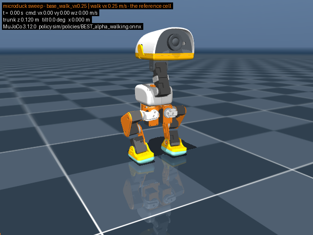
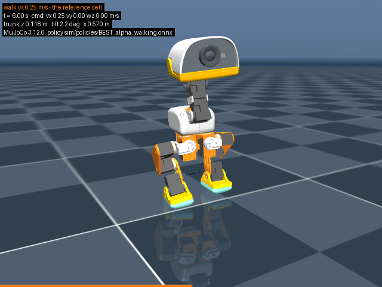
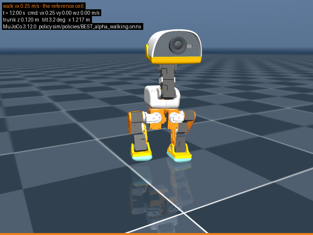
121 frames at 10.0 fps, mujoco.Renderer (offscreen, MUJOCO_GL=glfw). Read back from the encoded file: 121 frames, mean inter-frame difference 7.484, frame intensity 88.8–92.3 (a blank or frozen video is refused). Video: out/sim-sweep/video/base_walk_vx0.25.mp4.
vx_0.60 — vx 0.60 m/s - fastest command that stayed upright
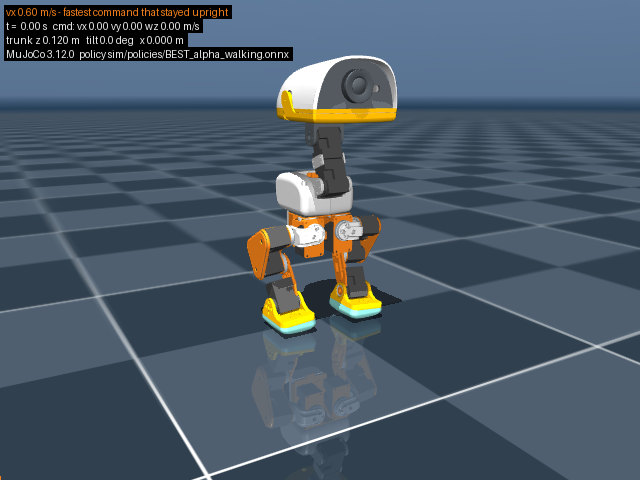
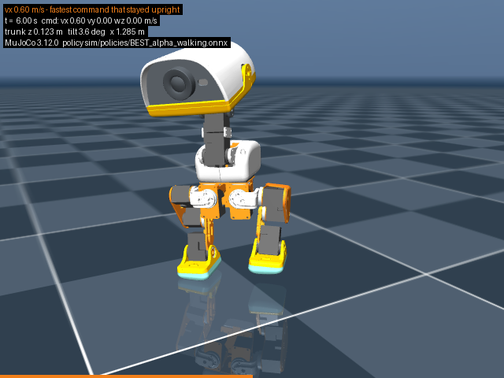
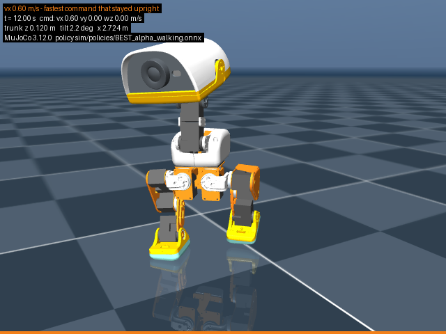
121 frames at 10.0 fps, mujoco.Renderer (offscreen, MUJOCO_GL=glfw). Read back from the encoded file: 121 frames, mean inter-frame difference 12.077, frame intensity 88.3–94.2 (a blank or frozen video is refused). Video: out/sim-sweep/video/vx_0.60.mp4.
mass_m110 — total mass +10 %
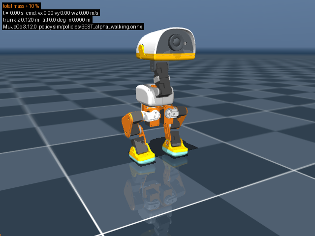
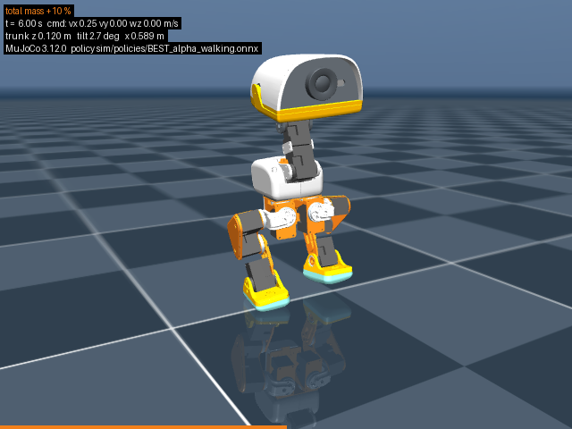
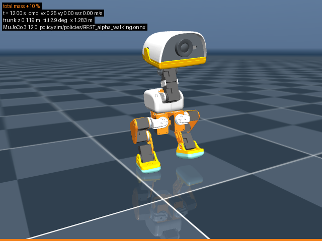
121 frames at 10.0 fps, mujoco.Renderer (offscreen, MUJOCO_GL=glfw). Read back from the encoded file: 121 frames, mean inter-frame difference 7.520, frame intensity 89.3–93.0 (a blank or frozen video is refused). Video: out/sim-sweep/video/mass_m110.mp4.
mu_0.40 — foot+floor sliding friction 0.40
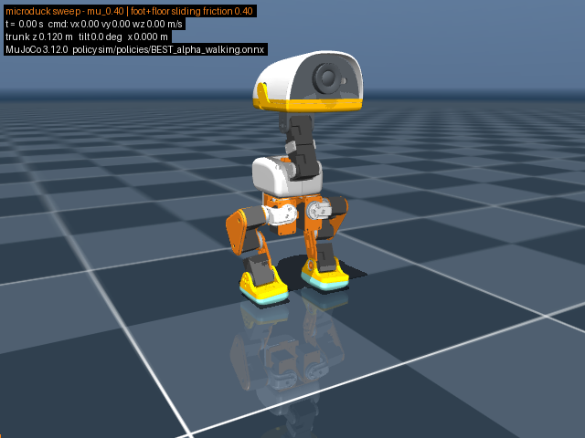
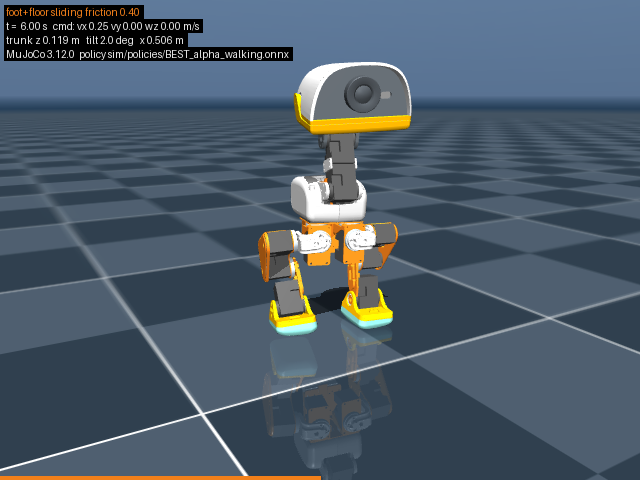
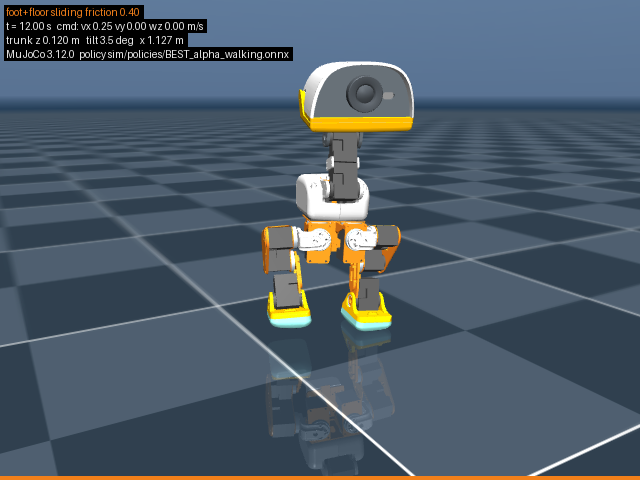
121 frames at 10.0 fps, mujoco.Renderer (offscreen, MUJOCO_GL=glfw). Read back from the encoded file: 121 frames, mean inter-frame difference 7.222, frame intensity 89.0–92.4 (a blank or frozen video is refused). Video: out/sim-sweep/video/mu_0.40.mp4.
slope5_up — 5 deg slope, uphill commanded - it turns and walks DOWN
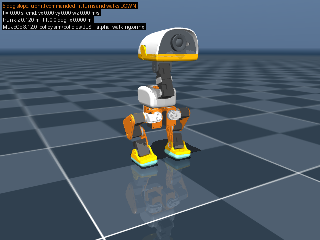
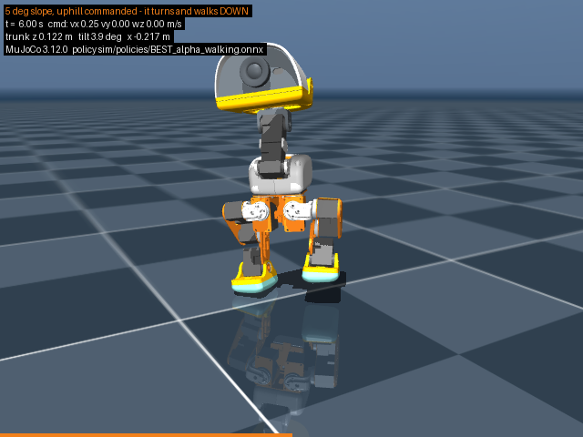
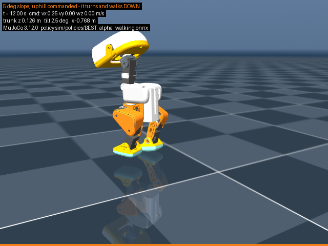
121 frames at 10.0 fps, mujoco.Renderer (offscreen, MUJOCO_GL=glfw). Read back from the encoded file: 121 frames, mean inter-frame difference 6.378, frame intensity 88.6–92.3 (a blank or frozen video is refused). Video: out/sim-sweep/video/slope5_up.mp4.
push_5N_lat — 5 N lateral push for 0.2 s at t=6.0 s - falls at 6.46 s
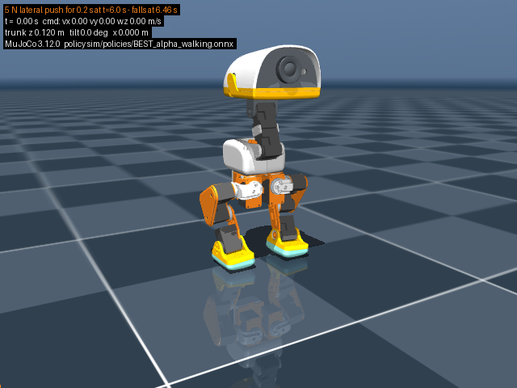
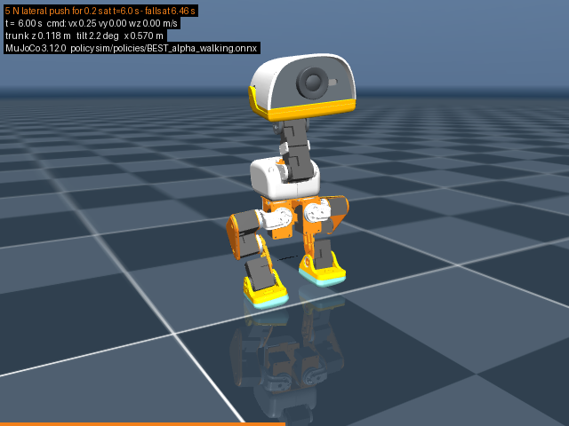
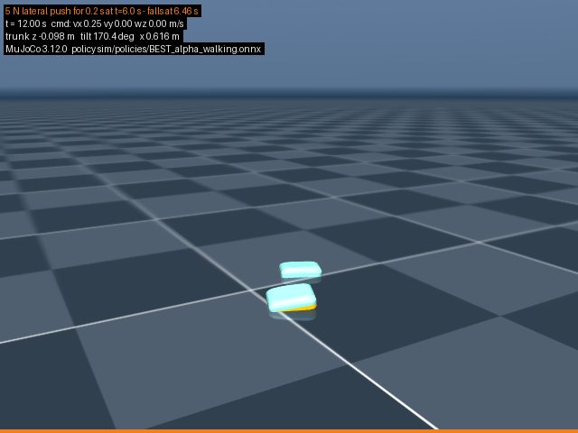
121 frames at 10.0 fps, mujoco.Renderer (offscreen, MUJOCO_GL=glfw). Read back from the encoded file: 121 frames, mean inter-frame difference 4.435, frame intensity 86.0–90.7 (a blank or frozen video is refused). Video: out/sim-sweep/video/push_5N_lat.mp4.
sitstand — sit at 1.0 s, stand at 4.5 s
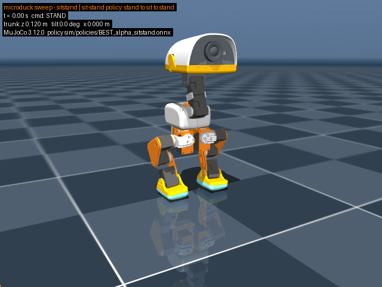
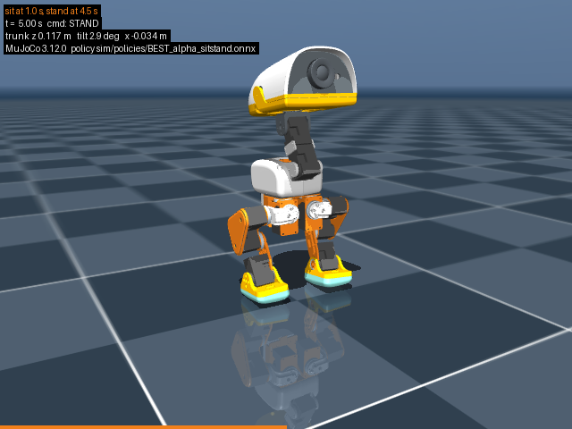
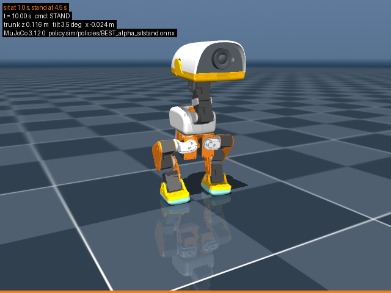
101 frames at 10.0 fps, mujoco.Renderer (offscreen, MUJOCO_GL=glfw). Read back from the encoded file: 101 frames, mean inter-frame difference 1.351, frame intensity 90.2–93.2 (a blank or frozen video is refused). Video: out/sim-sweep/video/sitstand.mp4.
stand_hold — stand policy holding the pose
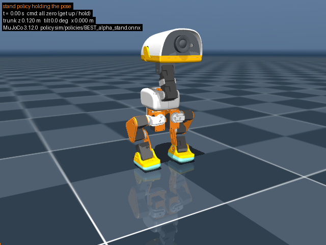
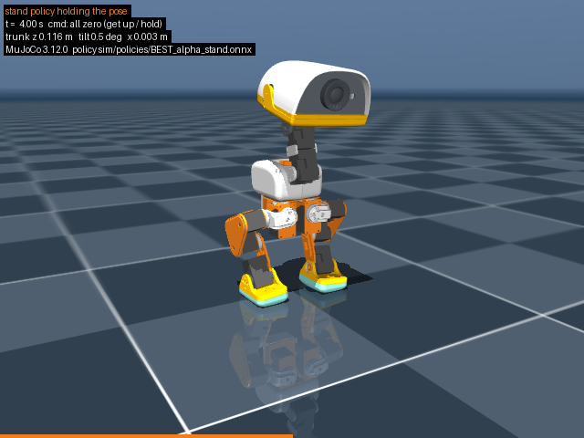
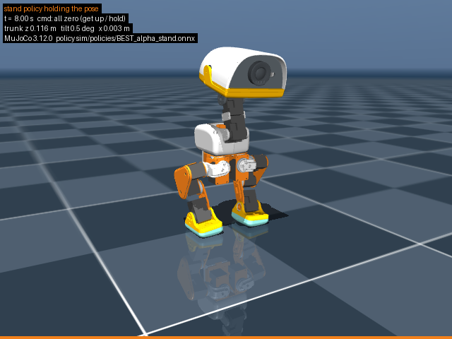
81 frames at 10.0 fps, mujoco.Renderer (offscreen, MUJOCO_GL=glfw). Read back from the encoded file: 81 frames, mean inter-frame difference 0.142, frame intensity 89.9–90.8 (a blank or frozen video is refused). Video: out/sim-sweep/video/stand_hold.mp4.
walk_selfcontact — self-collision census model - all 15 bodies collidable, 2187 candidate pairs
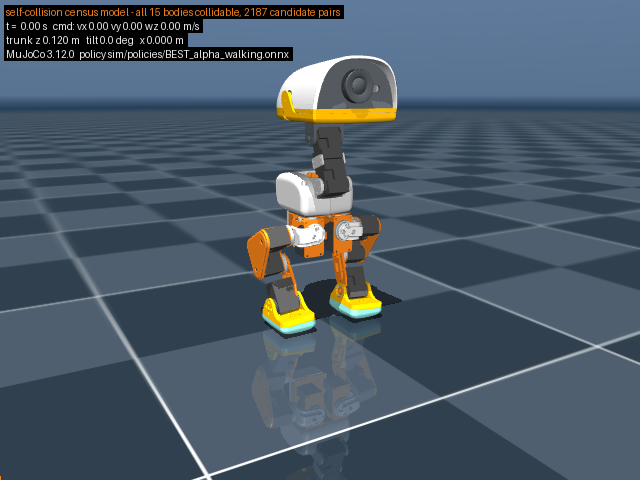
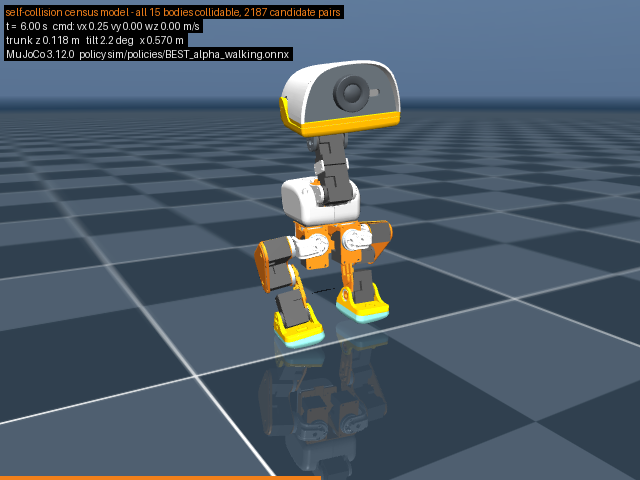
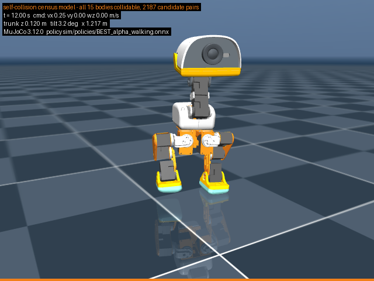
121 frames at 10.0 fps, mujoco.Renderer (offscreen, MUJOCO_GL=glfw). Read back from the encoded file: 121 frames, mean inter-frame difference 7.484, frame intensity 88.1–91.6 (a blank or frozen video is refused). Video: out/sim-sweep/video/walk_selfcontact.mp4.
push_5N_lat_fullcontact — 5 N push on the model where every geom also meets the floor
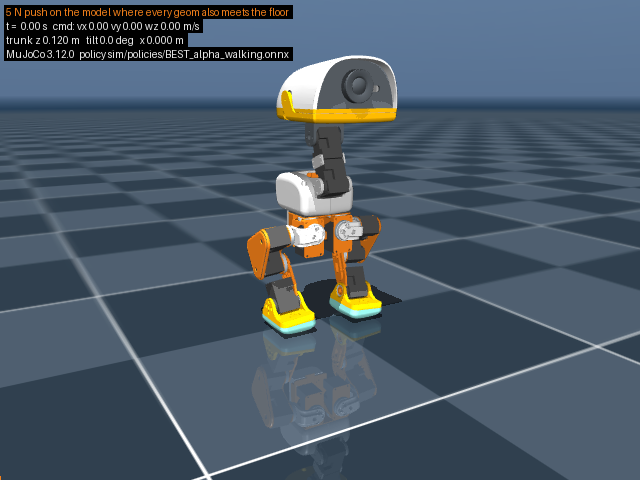
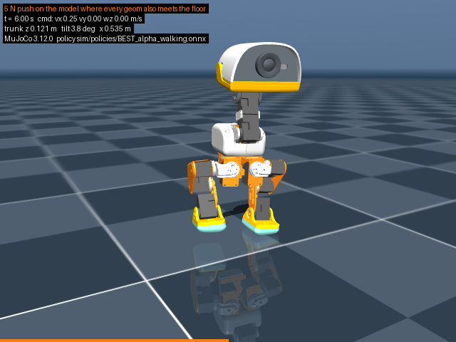
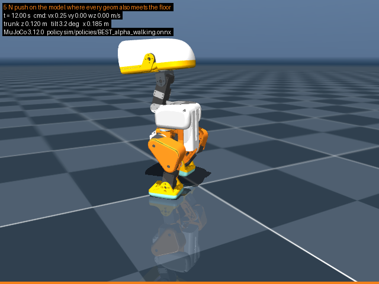
121 frames at 10.0 fps, mujoco.Renderer (offscreen, MUJOCO_GL=glfw). Read back from the encoded file: 121 frames, mean inter-frame difference 6.896, frame intensity 88.2–92.7 (a blank or frozen video is refused). Video: out/sim-sweep/video/push_5N_lat_fullcontact.mp4.
B.4Battery runtime
Per-servo electrical power integrated over the measured gait, through a linear DC-machine model whose every constant comes from ROBOTIS's own published stall and no-load rows — then divided into the pack's watt-hours.
Table B.3. Hours on the pack's 18.7 Wh. The compute + sensor + HAT draw is CANNOT DETERMINE — no vendor publishes it — so it is swept across the columns rather than assumed. Servo power is measured.
| Mode | Servos (W) | +1.0 W | +1.5 W | +2.0 W | +2.5 W | +3.0 W | +4.0 W | +5.0 W |
|---|---|---|---|---|---|---|---|---|
| Walking, vx 0.25 m/s | 8.955 | 1.88 | 1.79 | 1.71 | 1.63 | 1.56 | 1.44 | 1.34 |
| Standing, pose held | 2.830 | 4.88 | 4.32 | 3.87 | 3.51 | 3.21 | 2.74 | 2.39 |
| Idle, servo torque disabled | 1.887 | 6.48 | 5.52 | 4.81 | 4.26 | 3.83 | 3.18 | 2.72 |
Walking draws 8.955 W mean and 15.215 W peak at the pack (1.2102 A /
2.0561 A at 7.4 V); the busiest single servo peaks at 1.2168 A on
left_knee, below both the 1.47 A stall current and the firmware's own
1.75 A Current Limit(38). Standing costs 2.830 W, of which 1.887 W is nothing
but the fifteen controllers being awake. Electromechanical efficiency while walking is
26.6 % (1.8830 W mechanical out of 7.0683 W electrical in).
Against Pollen's published ~1 h
This model puts walking at 8.955 W of servo draw, so the pack's 18.7 Wh would run 1.88 h of continuous walking with 1.0 W of compute and 1.71 h with 2.0 W — roughly TWICE Pollen's published ~1 h. The gap is the model's own stated omissions, and it points at the servos rather than at compute: for the whole machine to average the 18.700 W that ~1 h implies, everything that is not modelled here would have to draw 9.745 W — 97.4 % of Radxa's entire 5 V/2 A (10.0 W) adapter rating for the board, which makes it an implausible figure for compute alone. The missing power is more likely (a) the XL330's unpublished no-load current, which this model sets to zero and which fifteen servos multiply, (b) PWM-stage loss, taken here as zero, and (c) pack energy below the 6.6 V cutoff that is never delivered — in some combination. It is also possible the press-kit hour is a mixed-use hour rather than an hour of walking. EVERY ONE OF THOSE IS SETTLED BY THE SAME MEASUREMENT: an ammeter in the pack lead, plus Present Current(126) summed off the bus so the servo and board halves separate.
What this model deliberately does not know
- The voltage the 17 mA standby current is billed at — an ASSUMPTION, flagged. ROBOTIS publishes 'Standby Current | 17 [mA]' with NO voltage attached (ce-parts/xl330-m288-t/iterations/v0.0.1/docs/fetched/robotis-emanual-xl330-m288.html, Specifications table). This model bills it at the PACK voltage, i.e. 15 x 0.017 A x V_pack, because the servos are fed the raw pack and a constant-current standby load draws that from the pack. If the 17 mA is instead a constant-POWER figure measured on the 5.0 V row, the pack term is 15 x 0.017 A x 5.0 V and the standby number is 32.4 % smaller. The pack-rail reading is used because it is conservative for runtime; both are reported. WHAT SETTLES IT: an ammeter on a powered XL330-M288-T with Torque Enable(64)=0, read at 5.0 V and at 7.4 V — or a ROBOTIS statement of the test condition. This assumption is the WHOLE of the 'idle, torque off' mode and 1.887 W of every other mode.
- No-load current. ROBOTIS publishes no no-load current for the XL330-M288-T; the Specifications table carries only the three stall rows and 'Standby Current | 17 [mA]'. I = tau/kT therefore goes to zero at zero torque, so every motor figure here is a LOWER bound. WHAT SETTLES IT: Present Current(126) read off an unloaded servo turning at speed, or a bench ammeter.
- Compute + sensors. No vendor document states the Radxa ZERO 3W's consumption. Radxa's own hardware page states only a supply REQUIREMENT — 'Requires 5V/2A power adapter' (https://docs.radxa.com/en/zero/zero3 , fetched 2026-09-02) — which is a 10.0 W ceiling for the board and whatever hangs off it, not a draw. The product brief PDF (https://dl.radxa.com/zero3/docs/hw/3w/radxa_zero_3w_product_brief.pdf, fetched 2026-09-02) states no consumption figure either. Pollen publishes none, and neither does out/handover/elec-verify-wf_969f3a4c.json, whose Radxa row records the same 'DC +5 V ... 5V/2A' requirement and no current. Search-engine answer boxes quoting '0.35-0.45 A idle' were seen and are NOT recorded: an answer box is not a source. The HAT (codec, dormant BMI088, transceiver), the ToF, the IMX219 camera and the imu_to_dxl board add to it and have no published system-level figure either. WHAT SETTLES IT: a meter in the pack lead of a running unit, or Present Current(126) summed off the bus with the board draw taken by difference.
- Usable pack energy. the whole 18.7 Wh is credited. The robot actually stops at a 6.6 V EMA, and how much of a 2S pack's energy is still above 6.6 V under this load is CANNOT DETERMINE (no discharge curve for the fitted cell). Every hour below is therefore an UPPER bound on that account.
- Which pack is fitted. CANNOT DETERMINE which pack is fitted — 'NP-F550' is Sony's shape and Sony's own cell is 1500 mAh / 10.8 Wh, so a 2600 mAh 'NP-F550' is necessarily third-party and no Pollen source names the maker (ce-parts/np-f550/component.json why). Duracell's DR5 is the representative 2600 mAh part on the shelf, NOT a proven fit.
CThermal and tolerance stack-up (lane F3)
Included from tools/gen_simulation_f3.py (preview: f3-preview.html); the duty it heats with is F2's measured baseline (§4 X5).
C.1Servo winding heating at the measured walking duty
FAIL thermal-servo-xl330 — SCOPE FIRST: this study grades 6 duty cells, not just the vx = 0.25 m/s baseline. 2 of 14 joints STRADDLE the 70 degC Temperature Limit(31): left_knee, right_knee. Worst is left_knee, whose case sits between 52.85 degC (black-body radiation, free body -- the best cooling physics allows) and 88.98 degC (no radiation, 30 % of the skin blocked by its printed mount). The bracket contains the limit, so the verdict is not a pass. Two unmeasured quantities decide it: the case's emissivity and how much of the skin the printed mount covers -- and on top of both, the winding is hotter than the case by an unpublished amount, so even the lower bound is a lower bound. No other joint exceeds 41.70 degC at its own upper bound. AND THE FASTER CELLS FAIL OUTRIGHT. 4 of 6 cells put at least one joint over the 70 degC Temperature Limit(31) at 25 degC in still air with the BEST cooling physics allows (eps = 1 black body, free body, no mount blockage): slope5_down, slope5_side_left, vx_0.60, vx_0.80. The worst is vx_0.80, where left_knee carries mean(tau^2) = 0.176728 N2m2 -- 2.8785x the baseline duty -- dissipating 4.7968 W in copper and settling at 91.40 degC even at best cooling (179.19 degC at worst). Copper loss goes as tau^2, which is why a 2.9x duty is a 2.9x heat load and not a small correction. Every temperature here is a LOWER BOUND on the winding, because the winding-to-case resistance is unpublished, and steady state assumes the cell is held indefinitely (see outputs.duty_cells_scope).
The load is not a round number: sim/thermal_duty.py runs Pollen's own
walking policy and records data.actuator_force at every 200 Hz physics
step, then reports mean(τ²) per joint, because copper loss is I²R and
current is proportional to torque — the mean of the square is the only average that
maps linearly onto heat. Lane F2's gait-peaks.json samples the same walk at the
50 Hz control frame and agrees to within the sub-tick peaks this run also catches.
| Joint | τrms (N·m) | τpeak (N·m) | Irms (A) | Ipeak (A) | PCu (W) | Tcase low (°C) | Tcase high (°C) | Grade |
|---|---|---|---|---|---|---|---|---|
| left_knee | 0.2478 | 0.4304 | 0.6999 | 1.2160 | 1.6664 | 52.85 | 88.98 | CANNOT DETERMINE |
| right_knee | 0.2078 | 0.4154 | 0.5870 | 1.1735 | 1.1721 | 45.64 | 72.89 | CANNOT DETERMINE |
| left_ankle | 0.1092 | 0.2012 | 0.3084 | 0.5684 | 0.3235 | 31.68 | 41.70 | PASS |
| right_hip_pitch | 0.1066 | 0.2476 | 0.3011 | 0.6995 | 0.3084 | 31.40 | 41.06 | PASS |
| right_ankle | 0.0935 | 0.1902 | 0.2640 | 0.5372 | 0.2371 | 30.06 | 37.95 | PASS |
| left_hip_pitch | 0.0903 | 0.1833 | 0.2552 | 0.5178 | 0.2215 | 29.76 | 37.25 | PASS |
| left_hip_roll | 0.0885 | 0.1938 | 0.2501 | 0.5474 | 0.2128 | 29.59 | 36.86 | PASS |
| right_hip_roll | 0.0759 | 0.1570 | 0.2144 | 0.4436 | 0.1563 | 28.48 | 34.22 | PASS |
| head_yaw | 0.0722 | 0.1505 | 0.2040 | 0.4252 | 0.1416 | 28.18 | 33.51 | PASS |
| head_roll | 0.0390 | 0.0815 | 0.1102 | 0.2301 | 0.0413 | 26.03 | 28.11 | PASS |
| head_pitch | 0.0381 | 0.0688 | 0.1077 | 0.1943 | 0.0395 | 25.99 | 27.99 | PASS |
| left_hip_yaw | 0.0349 | 0.1061 | 0.0985 | 0.2997 | 0.0330 | 25.84 | 27.58 | PASS |
| neck_pitch | 0.0314 | 0.0920 | 0.0886 | 0.2598 | 0.0267 | 25.69 | 27.17 | PASS |
| right_hip_yaw | 0.0226 | 0.0701 | 0.0639 | 0.1979 | 0.0139 | 25.37 | 26.27 | PASS |
Where the electrical numbers come from
Torque constant 0.354 N·m/A — the 5.0 V stall row's own third figure, '0.354 [Nm/A]'. It is OUTPUT-shaft torque per INPUT current (E1 Current Limit(38) note: 'XL330 series measures curret at its input power source'), so no gear ratio or gearbox efficiency is applied on top of it.
Terminal resistance 3.401361 Ω — DERIVED, not published: at stall the back-EMF is zero and the full row voltage stands across the winding, so R = V / I_stall. The three published rows give {'3.7': 3.333333, '5.0': 3.401361, '6.0': 3.448276} ohm -- a spread of 3.3863 % about their mean, which is the derivation's own consistency check. The 5.0 V row is used.
The 70 °C limit — E1 Control Table of EEPROM Area verbatim: '31 | 1 | Temperature Limit | RW | 70 | 0 ~ 100 | 1 [degC]'; E1 Specifications 'Operating Temperature | -5 ~ +70 [degC]'; Shutdown(63) Bit 2 'Overheating Error(default)'
| assumed cp (J/kg·K) | C (J/K) | ε | τthermal (s) | steady rise (K) | time to 70 °C (min) |
|---|---|---|---|---|---|
| 500.0 | 9.0 | eps1 | 150.43 | 27.854 | never |
| 500.0 | 9.0 | eps0 | 257.62 | 47.701 | 12.33 |
| 900.0 | 16.2 | eps1 | 270.78 | 27.854 | never |
| 900.0 | 16.2 | eps0 | 463.72 | 47.701 | 22.19 |
| 1300.0 | 23.4 | eps1 | 391.13 | 27.854 | never |
| 1300.0 | 23.4 | eps0 | 669.81 | 47.701 | 32.05 |
| 1700.0 | 30.6 | eps1 | 511.47 | 27.854 | never |
| 1700.0 | 30.6 | eps0 | 875.91 | 47.701 | 41.92 |
Scope: this is not only the vx = 0.25 m/s baseline
Lane F2's sweep records cells whose peak torques are 2.4–3.2× the baseline, and copper loss
goes as τ², so those cells are a different thermal problem rather than a footnote.
sim/thermal_duty.py was extended with --cell / --slope-deg / --slope-dir
(slope done exactly as sim/gait_sweep.py:77–81 does it — floor flat, gravity rotated)
and re-run on them; each is graded below at its own measured mean(τ²).
| Cell | s | Worst joint | mean(τ²) (N²m²) | vs baseline | PCu (W) | Tcase best (°C) | Tcase worst (°C) | Verdict |
|---|---|---|---|---|---|---|---|---|
| vx_0.80 | 12.0 | left_knee | 0.176728 | 2.8785× | 4.7968 | 91.40 | 179.19 | FAIL |
| vx_0.60 | 12.0 | left_knee | 0.139847 | 2.2778× | 3.7958 | 80.07 | 151.70 | FAIL |
| slope5_down | 12.0 | right_hip_pitch | 0.130974 | 11.5272× | 3.5549 | 77.23 | 144.94 | FAIL |
| slope5_side_left | 12.0 | left_knee | 0.118309 | 1.9270× | 3.2112 | 73.08 | 135.16 | FAIL |
| endurance_60s_slope5_up | 60.0 | left_knee | 0.102569 | 1.6706× | 2.7839 | 67.77 | 122.82 | CANNOT DETERMINE |
| baseline_walk_vx0.25 | 12.0 | left_knee | 0.061397 | 1.0000× | 1.6664 | 52.85 | 88.98 | CANNOT DETERMINE |
| Ambient | Joints over the limit |
|---|---|
| 20 °C | none |
| 25 °C | none |
| 35 °C | left_knee |
The servo bus draws at least 6.4194 W (copper plus positive mechanical work, both measured; drive-stage loss is not modelled, so it is a floor), i.e. 0.8675 A at the 7.4 V pack.
What stays open
- winding-to-case thermal resistance — ROBOTIS publishes no thermal model, no winding resistance and no continuous-torque rating for the XL330-M288-T; only the three stall rows and the 70 degC limit exist. Every case temperature above is therefore a LOWER BOUND on the winding temperature. What settles it: a step test on one servo: hold a known constant torque against a fixture and log Present Temperature(146) (RAM 146, 1 degC) to steady state. The asymptote gives R_th and the knee gives C in the same run.
- lumped thermal capacitance C, hence time-to-limit — unpublished. The curve above sweeps cp over 500-1700 J/kgK on the vendor's 18 g and is a PARAMETRIC RESULT, not a measurement. What settles it: the same step test.
- gearbox friction loss at this duty — no efficiency figure is published for the 288.4:1 engineering-plastic gear train. It is omitted, which makes every temperature here an understatement. What settles it: measure Present Current(126) at a known output torque and subtract the copper term.
- servo-bus regulator temperature — the Robot HAT's regulator part number is CANNOT DETERMINE (ce-parts/xl330-m288-t/electrical.part.json note: 'the Microduck's Robot HAT is assumed to carry one (transceiver part CANNOT DETERMINE)'; the three custom PCBs have no published design). With no part there is no package, no theta_JA and no dissipation to compute. The bus power lower bound above is what a regulator study would start from. What settles it: the Robot HAT schematic (lane D) naming the regulator.
- how long the robot is actually held at the failing duty cells — vx_0.60, vx_0.80, slope5_side_left, slope5_down and endurance_60s_slope5_up are COMMANDS the policy accepts, measured here for 12 s (60 s for the endurance cell). Whether a Microduck is ever walked at them long enough to reach steady state is a product decision, not a measurement. The steady-state numbers say what happens if it is; time_to_limit_curve says how fast, and it is parametric in the unpublished thermal capacitance. What settles it: a stated duty cycle for the product, plus the step test that gives R_th and C on one real servo.
- current at pack voltage above 6.0 V — the vendor states nothing above 6.0 V and the design runs the servos on the raw 6.6-8.2 V pack (docs/ELECTRONICS-AND-SOFTWARE.md 3.4). kT and R are taken at the 5.0 V row. What settles it: a meter on a servo VDD pin and Present Current(126) logged at a known torque on the real pack.
C.2The compute inside the closed printed enclosure
A correction the model forced
The compute board is not in the trunk. sim/microduck_ours.xml body 'jaw_soft' carries <geom type="mesh" class="visual" pos="0.015435 -1.13778e-05 -0.06001" ... mesh="pcb__raspberry_pi_zero_2_w"> and <geom ... pos="0.02694 0.0289936 -0.0519" mesh="elec_rpi_robot_hat_pcb">; spec/mesh-placements.json lists both under body 'jaw_soft'. Body 'trunk_base' carries no compute geom at all -- its only PCB-ish geom is banana_pcb_locker__ours, the battery-contact retainer.
FAIL thermal-compute-head — FAIL, on a measurement rather than a model: Pollen's own documents record the SoC at 95 degC flat out (97 degC in the videoflip pathology) throttling to 408 MHz, with object detection held down to 2 Hz because of it -- 'a thermal limit, not a preference'. This study adds the geometry and locates the fault. The head is a sealed printed box, 340.843 cm3 enclosed with 193.055 cm3 of still air in it (56.6 % void), no vent, no fan, no heatsink, outer skin 31832-57702 mm2. Solving the OUTSIDE of that box exonerates it: at 2.0 W the skin settles at 28.71-39.23 degC in a 25 degC room, and it would take 4.008-17.090 W to lift the skin to the board's own 50 degC ambient rating (bracketed by no radiation on the shells-only area at the low end and a black body on the voxel-hull area at the high end) -- more than a board on a 5 V / 2 A = 10.0 W supply is likely to dissipate. So the failure is INSIDE: the path from a 95 degC die through 193.055 cm3 of trapped air, whose entire thermal capacitance is 0.2263 J/K -- less than a seventh of a second of the knee servo's copper loss. The board's real dissipation and the RK3566's junction-to-air resistance are both CANNOT DETERMINE, so the internal leg is not modelled; it is measured, at 95 degC. The design item this study names is a conduction path from the SoC to the shell, not more skin.
| Cavity | bbox (mm) | enclosed (cm³) | free air (cm³) | void (%) | outer skin (mm²) |
|---|---|---|---|---|---|
| head | 59.282 × 91.763 × 122.690 | 340.8430 | 193.0550 | 56.6 | 31832 |
| trunk | 81.333 × 64.029 × 85.734 | 153.7009 | 36.7099 | 23.9 | 11439 |
The cross-check fired, and here it is
The method calls the exact signed-tetrahedron volumes an independent cross-check on the
voxel occupancy
. A check that is computed and then discarded is not a check, so every mesh is
now graded against its own exact volume and the disagreements are named below. Head verdict
CANNOT DETERMINE. At the reported 1.00 mm step nothing is invisible to the grid, so no free-air correction is needed (193.0550 cm³ raw and corrected). It was not always so: at 1.50 mm the 0.84 mm-thick Robot HAT PCB scored ZERO voxels against an exact 1569.234 mm³, and the first version of this study published that free-air figure with no flag. The remaining disagreements are shape errors, not blindness — a thin open shell is
filled by the ray-parity test while the tetrahedron sum measures only its own material —
and the grid-convergence table below is what bounds their effect on the answer.
| Cavity | Mesh | Verdict | exact (mm³) | voxel (mm³) | Why |
|---|---|---|---|---|---|
| head | face_part | DISAGREES | 5824.178 | 4915.000 | the voxel occupancy is 84.4 % of the exact solid volume (-15.6 %). OVER 100 %: the mesh is an open or thin SHELL, so the ray-parity test fills its whole interior while the tetrahedron sum measures only the shell's own material. UNDER 100 %: the 1.00 mm grid is too coarse for the feature. |
| head | elec_rpi_robot_hat_pcb | DISAGREES | 1569.234 | 1871.000 | the voxel occupancy is 119.2 % of the exact solid volume (+19.2 %). OVER 100 %: the mesh is an open or thin SHELL, so the ray-parity test fills its whole interior while the tetrahedron sum measures only the shell's own material. UNDER 100 %: the 1.00 mm grid is too coarse for the feature. |
| head | soft_mouth_top | DISAGREES | 2699.580 | 1364.000 | the voxel occupancy is 50.5 % of the exact solid volume (-49.5 %). OVER 100 %: the mesh is an open or thin SHELL, so the ray-parity test fills its whole interior while the tetrahedron sum measures only the shell's own material. UNDER 100 %: the 1.00 mm grid is too coarse for the feature. |
| head | pcb__raspberry_pi_zero_2_w | DISAGREES | 3018.389 | 3776.000 | the voxel occupancy is 125.1 % of the exact solid volume (+25.1 %). OVER 100 %: the mesh is an open or thin SHELL, so the ray-parity test fills its whole interior while the tetrahedron sum measures only the shell's own material. UNDER 100 %: the 1.00 mm grid is too coarse for the feature. |
| trunk | seeed_bearing__configuration__22x16x4 | DISAGREES | 985.951 | 759.375 | the voxel occupancy is 77.0 % of the exact solid volume (-23.0 %). OVER 100 %: the mesh is an open or thin SHELL, so the ray-parity test fills its whole interior while the tetrahedron sum measures only the shell's own material. UNDER 100 %: the 1.50 mm grid is too coarse for the feature. |
| trunk | trunk_base__ours | DISAGREES | 1414.602 | 2102.625 | the voxel occupancy is 148.6 % of the exact solid volume (+48.6 %). OVER 100 %: the mesh is an open or thin SHELL, so the ray-parity test fills its whole interior while the tetrahedron sum measures only the shell's own material. UNDER 100 %: the 1.50 mm grid is too coarse for the feature. |
| trunk | power_support__ours | DISAGREES | 10780.719 | 8974.125 | the voxel occupancy is 83.2 % of the exact solid volume (-16.8 %). OVER 100 %: the mesh is an open or thin SHELL, so the ray-parity test fills its whole interior while the tetrahedron sum measures only the shell's own material. UNDER 100 %: the 1.50 mm grid is too coarse for the feature. |
| step (mm) | grid | enclosed (cm³) | free air (cm³) | free air corrected (cm³) | meshes disagreeing | solid invisible (mm³) |
|---|---|---|---|---|---|---|
| 1.50 | 40 × 61 × 82 | 341.0269 | 194.1705 | 192.6013 | 3 | 1569.234 |
| 1.00 | 59 × 92 × 123 | 340.8430 | 193.0550 | 193.0550 | 4 | 0.000 |
| dissipation (W) | skin low (°C) | skin high (°C) | Rth low (K/W) | Rth high (K/W) |
|---|---|---|---|---|
| 0.5 | 26.03 | 29.64 | 2.06 | 9.28 |
| 1.0 | 26.96 | 33.13 | 1.96 | 8.13 |
| 1.5 | 27.85 | 36.28 | 1.90 | 7.52 |
| 2.0 | 28.71 | 39.23 | 1.86 | 7.12 |
| 3.0 | 30.37 | 44.77 | 1.79 | 6.59 |
| 5.0 | 33.51 | 54.92 | 1.70 | 5.98 |
| 10.0 | 40.72 | 77.65 | 1.57 | 5.27 |
Which leg fails
PASS skin → room: at 2.0 W in a 25 degC room the head's own skin settles between 28.71 and 39.23 degC, and it takes 4.008-17.090 W to lift the skin to the board's 50 degC ambient rating. A single-board computer of this class does not dissipate that much, so the OUTSIDE of the box is not the bottleneck.
FAIL die → skin: this is the leg that fails, and it fails on a MEASUREMENT, not a model: Pollen records the SoC at 95 degC (97 degC in the videoflip pathology) while throttling to 408 MHz. Between that die and a skin that the external solution puts in the high twenties sits 193.055 cm3 of still air (56.6 % of the enclosed volume, and the figure the voxel/exact cross-check corrects to), with no vent, no fan and no heatsink anywhere in body jaw_soft. The whole trapped-air volume is a 0.2263 J/K reservoir -- it buffers nothing and only resists. The design item is a CONDUCTION PATH from the SoC to the shell, not more skin area.
CANNOT DETERMINE -- no theta_JA is published for the RK3566 and the board's dissipation is unmeasured, so no internal resistance can be computed. The external leg is solved and used as the bound instead.
The measurement that settles the verdict is Pollen's own: SoC at 95.0 °C (worst 97.0 °C) throttling to 408 MHz, with object detection held to 2 Hz. research/raw/community/replica_hardware-teardown.en.md:362 quoting Pollen's source: '2 is a thermal limit, not a preference.' Flat out it reaches **95 degC** and the CPU throttles to **408 MHz** - a robot that walks badly in order to see well.
Vendor claim, for contrast: [brief] 6.5 p.7 verbatim: 'An internal thermal management governor is in place to regulate these parameters, ensuring that the CPU temperature does not exceed a threshold of 85 degC'
What stays open
- the board's actual dissipation — no fetched Radxa document states board-level current draw (electrical.host.json unknowns[1] and power[4]). The only sourced electrical figure is the 5 V / 2 A supply RATING = 10.0 W ceiling. What settles it: an inline meter on the 5 V path at idle, with the policy running, and with video encoding -- the three states electrical.host.json itself names
- junction-to-air resistance of the RK3566 in this enclosure — Rockchip publishes no theta_JA for the RK3566 and no heatsink or vent exists in the model, so the internal leg has no model. The external leg is solved and used as a bound instead. What settles it: log /sys/class/thermal/thermal_zone*/temp beside a thermocouple on the head shell at a known load
- the pack's self-heating and the servo-bus regulator's — cell internal resistance is stated by neither fetched NP-F550 page; the regulator has no part number because the Robot HAT has no published design What settles it: the pack's own datasheet once the fitted maker is identified, and the Robot HAT schematic (lane D)
C.3Tolerance stack-up on all fourteen hinges
CANNOT DETERMINE tolerance-stack-hinges — The stack cannot be closed because the band it rests on is not measured for the machine that will print these parts. At FDM-A (Protolabs prototyping, ±0.5 mm floor) the Ø16 printed seat's total band is 1000 um, which grades IT16 on the published ISO 286-1:2010(E) table (IT16 = 1100 um at that size); at FDM-B (industrial, ±0.3 mm floor) it is 600 um, IT15 (700 um). The Ø10 ankle seat is the only feature that is genuinely COARSER THAN IT16 at FDM-A: 1000 um against IT16's 900 um. A ball bearing seat is normally an IT6-IT7 feature, so both service bands are far too coarse for a press fit -- but a MEASURED print-accuracy study on a tuned FDM machine (Wei et al. 2025, Polymers 17(3):416, archived) reports ±0.150 mm on its small features and grades its own parts IT09-IT11; at that band the Ø16 seat is 300 um, IT14. So the question is not whether FDM can hold a bearing seat -- it is what OUR machine holds, and print_fits.json is empty. THE BEARING ENGAGEMENT FLAG IS WITHDRAWN AND REPLACED. 7 of 14 joints put the ring on a printed boss shorter than the ring (Ø16.0 x 1.90-1.95 mm in a 4.0 mm ring, 47.50-48.75 %), but the rest of the SAME bore rides the servo's own Ø16.0 x 3.0 horn disc: measured support is 3.9500 of 4.0000 mm, 98.75 %, at every one of them (ce-parts/microduck-yaw2roll/.../interfaces.json says so verbatim; out/sim-evidence/joint-geometry.json measures it at all four). The real, previously unstudied risk at those joints is the COAXIALITY STEP between the two bosses that share the bore: 0.6000 mm worst case at FDM-A against 0.2500 mm of radial clearance to absorb it, so the ring binds; it still binds at FDM-B. That is CANNOT DETERMINE, not FAIL, because no published FDM standard states a POSITIONAL tolerance and the ring's own internal clearance is unknown. The worst joint for angle is left_knee: 3.5988 deg upper bound at FDM-A, 2.1611 deg at FDM-B, 1.0809 deg at the measured-study band, governed by the bolted flange, by an unmeasured margin. 2 joints (left_knee, right_knee) have a bearing on the axis that NO part folder declares a seat for. No joint's axial stack reaches its support at ANY band -- the two hip-yaws come closest at 1.5000 mm of stack against 3.9500 mm of supported ring, 38.0 % consumed at FDM-A and 22.8 % at FDM-B. What settles the whole study is one printed coupon: cecad.coupon.coupon() at the Ø10 and Ø16 rungs, printed, measured with calipers and stored with record_measurements() -- print_fits.json is {"machines": {}} today. Bambu publishes no part dimensional tolerance for the H2S to use instead (see inputs.fdm_band_C).
Correction: the ring's bore is carried by two parts, not one
The first version of this study divided the printed boss length by the ring width, called
the answer engagement, and reported 7 of 14 joints seat the ring on less than its own
width
as a FAIL. That is wrong, and the file the study itself listed in looked_at
says so verbatim — ce-parts/microduck-yaw2roll/current/cad/interfaces.json,
yaw_bearing_seat: the bearing mesh spans 0..4 along its own axis, so it occupies
z 12.5..16.5 here — the upper 2.05 mm of its bore rides the horn's Ø16 × 3 boss.
horn_bore_share() now measures the split off
out/sim-evidence/joint-geometry.json at every joint and cross-checks it against the
seat length the part folder declares. Support is 98.75 % of the ring, not
48.75 %. Three numbers moved with it: the cocking angle is computed over the
supported length; the clearance is one band and not two (a ±t shaft in a bore held
at nominal gives t of diametral clearance, and the steel bore's own tolerance stays an open term
instead of being silently assumed equal and opposite); and the risk that is real at those
joints — the coaxiality step between the two bosses — is computed below.
| Joint | Driven part | printed boss (%) | bore support (%) | axial WC (mm) | axial RSS (mm) | radial WC (mm) | radial RSS (mm) | bearing cock ≤ (°) | axial / support (%) | backlash WC (°) |
|---|---|---|---|---|---|---|---|---|---|---|
| left_hip_yaw | yaw2roll | 48.75 | 98.75 | 1.5000 | 0.8660 | 1.1000 | 0.7141 | 7.2143 | 38.0 | 10.3889 |
| right_hip_yaw | yaw2roll | 48.75 | 98.75 | 1.5000 | 0.8660 | 1.1000 | 0.7141 | 7.2143 | 38.0 | 10.3889 |
| left_hip_roll | hip-bracket | 48.75 | 98.75 | 1.0000 | 0.7071 | 1.2000 | 0.7348 | 7.2143 | 25.3 | 11.3099 |
| right_hip_roll | hip-bracket | 48.75 | 98.75 | 1.0000 | 0.7071 | 1.2000 | 0.7348 | 7.2143 | 25.3 | 11.3099 |
| left_hip_pitch | hip-bracket | 48.75 | 98.75 | 1.0000 | 0.7071 | 1.2000 | 0.7348 | 7.2143 | 25.3 | 11.3099 |
| right_hip_pitch | hip-bracket | 48.75 | 98.75 | 1.0000 | 0.7071 | 1.2000 | 0.7348 | 7.2143 | 25.3 | 11.3099 |
| left_knee | shin | — | — | 0.5000 | 0.5000 | 1.1000 | 0.7141 | — | — | 10.3889 |
| right_knee | shin | — | — | 0.5000 | 0.5000 | 1.1000 | 0.7141 | — | — | 10.3889 |
| left_ankle | ankle-left | 106.67 | 106.67 | 1.0000 | 0.7071 | 1.6000 | 0.8718 | 8.8807 | 31.2 | 14.9314 |
| right_ankle | ankle-right | 106.67 | 106.67 | 1.0000 | 0.7071 | 1.6000 | 0.8718 | 8.8807 | 31.2 | 14.9314 |
| neck_pitch | trunk-shell-left | — | — | 0.5000 | 0.5000 | 0.6000 | 0.5099 | — | — | 5.7106 |
| head_pitch | neck-pitch-bracket | — | — | 0.5000 | 0.5000 | 0.6000 | 0.5099 | — | — | 5.7106 |
| head_yaw | neck-pitch-bracket | 47.50 | 100.00 | 1.0000 | 0.7071 | 1.1000 | 0.7141 | 7.1250 | 25.0 | 10.3889 |
| head_roll | yaw-roll-motion | 100.00 | 100.00 | 1.0000 | 0.7071 | 1.1000 | 0.7141 | 7.1250 | 25.0 | 10.3889 |
| Ø (mm) | A ± (mm) | A band (µm) | A grade | B ± (mm) | B band (µm) | B grade | D ± (mm) | D band (µm) | D grade |
|---|---|---|---|---|---|---|---|---|---|
| 10.0 | 0.5000 | 1000 | coarser than IT16 | 0.3000 | 600 | IT16 | 0.1500 | 300 | IT14 |
| 12.0 | 0.5000 | 1000 | IT16 | 0.3000 | 600 | IT15 | 0.1500 | 300 | IT14 |
| 15.0 | 0.5000 | 1000 | IT16 | 0.3000 | 600 | IT15 | 0.1500 | 300 | IT14 |
| 15.9 | 0.5000 | 1000 | IT16 | 0.3000 | 600 | IT15 | 0.1500 | 300 | IT14 |
| 16.0 | 0.5000 | 1000 | IT16 | 0.3000 | 600 | IT15 | 0.1500 | 300 | IT14 |
| 17.0 | 0.5000 | 1000 | IT16 | 0.3000 | 600 | IT15 | 0.1500 | 300 | IT14 |
| 19.0 | 0.5000 | 1000 | IT16 | 0.3000 | 600 | IT15 | 0.1500 | 300 | IT13 |
| 22.0 | 0.5000 | 1000 | IT16 | 0.3000 | 600 | IT15 | 0.1500 | 300 | IT13 |
| Ø (mm) | Grade | published ISO 286-1 (µm) | derived (µm) | drift (%) | Verdict |
|---|---|---|---|---|---|
| 6.0 | IT5 | 5 | 5 | +0.000 | PASS |
| 6.0 | IT7 | 12 | 12 | +0.000 | PASS |
| 6.0 | IT9 | 30 | 29 | -3.333 | PASS |
| 6.0 | IT11 | 75 | 73 | -2.667 | PASS |
| 6.0 | IT14 | 300 | 293 | -2.333 | PASS |
| 6.0 | IT16 | 750 | 733 | -2.267 | PASS |
| 10.0 | IT5 | 6 | 6 | +0.000 | PASS |
| 10.0 | IT7 | 15 | 14 | -6.667 | PASS |
| 10.0 | IT9 | 36 | 36 | +0.000 | PASS |
| 10.0 | IT11 | 90 | 90 | +0.000 | PASS |
| 10.0 | IT14 | 360 | 359 | -0.278 | PASS |
| 10.0 | IT16 | 900 | 898 | -0.222 | PASS |
| 16.0 | IT5 | 8 | 8 | +0.000 | PASS |
| 16.0 | IT7 | 18 | 17 | -5.556 | PASS |
| 16.0 | IT9 | 43 | 43 | +0.000 | PASS |
| 16.0 | IT11 | 110 | 108 | -1.818 | PASS |
| 16.0 | IT14 | 430 | 433 | +0.698 | PASS |
| 16.0 | IT16 | 1100 | 1083 | -1.545 | PASS |
| 22.0 | IT5 | 9 | 9 | +0.000 | PASS |
| 22.0 | IT7 | 21 | 21 | +0.000 | PASS |
| 22.0 | IT9 | 52 | 52 | +0.000 | PASS |
| 22.0 | IT11 | 130 | 131 | +0.769 | PASS |
| 22.0 | IT14 | 520 | 523 | +0.577 | PASS |
| 22.0 | IT16 | 1300 | 1307 | +0.538 | PASS |
| Term | radial (mm) | Kind | Source |
|---|---|---|---|
| M2 screw clearance in the printed flange | 0.1000 | deterministic | (2.20 - 2.00)/2 -- clearance hole Ø off microduck-yaw2roll 'yaw_horn', M2 major Ø2.0 off ce-cad/cecad/fasteners.py:57. This is how far the printed part can slide on the horn before the screws bear. |
| printed position of the boss relative to its own bolt circle | 0.5000 | UPPER BOUND, not a measurement | no published FDM standard states a POSITIONAL tolerance -- Protolabs Network's rows are DIMENSIONAL accuracy. The FDM-A prototyping dimensional half-band at Ø16.0 is applied here as if it were position, which bounds it above by an unknown margin. |
Where the step binds: head_yaw, left_hip_pitch, left_hip_roll, left_hip_yaw, right_hip_pitch, right_hip_roll, right_hip_yaw at FDM-A; head_yaw, left_hip_pitch, left_hip_roll, left_hip_yaw, right_hip_pitch, right_hip_roll, right_hip_yaw at FDM-B; head_yaw, left_hip_pitch, left_hip_roll, left_hip_yaw, right_hip_pitch, right_hip_roll, right_hip_yaw at the measured-study band. What settles it: print one bracket, put it on a real XL330 horn, and read the runout of the printed boss against the horn boss with a dial indicator on the assembled pair; and micrometer the ring's bore and both bosses.
| Band | Stack reaches total bore support | Stack reaches the printed boss alone |
|---|---|---|
| FDM-A prototyping | none | none |
| FDM-B industrial | none | none |
| FDM-D measured study | none | none |
Bearing bore-support flags
- CANNOT DETERMINE left_hip_yaw — printed boss 48.75 % of the ring, total bore support 98.75 % (1.95 mm boss + 2.0 mm horn disc in a 4.0 mm ring). the printed boss is shorter than the ring, but the rest of the SAME bore rides the servo's own Ø16.0 x 3.0 horn disc -- measured, PASS: the measured printed remainder 2.0000 mm agrees with the seat length microduck-yaw2roll 'yaw_bearing_seat' declares (1.9500 mm) to 0.0500 mm. Support is 3.9500 of 4.00 mm (98.75 %), not the 48.75 % the printed boss alone gives. The concern at this joint is therefore the COAXIALITY STEP between the two bosses, not the length of either.
- CANNOT DETERMINE right_hip_yaw — printed boss 48.75 % of the ring, total bore support 98.75 % (1.95 mm boss + 2.0 mm horn disc in a 4.0 mm ring). the printed boss is shorter than the ring, but the rest of the SAME bore rides the servo's own Ø16.0 x 3.0 horn disc -- measured, PASS: the measured printed remainder 2.0000 mm agrees with the seat length microduck-yaw2roll 'yaw_bearing_seat' declares (1.9500 mm) to 0.0500 mm. Support is 3.9500 of 4.00 mm (98.75 %), not the 48.75 % the printed boss alone gives. The concern at this joint is therefore the COAXIALITY STEP between the two bosses, not the length of either.
- CANNOT DETERMINE left_hip_roll — printed boss 48.75 % of the ring, total bore support 98.75 % (1.95 mm boss + 2.0 mm horn disc in a 4.0 mm ring). the printed boss is shorter than the ring, but the rest of the SAME bore rides the servo's own Ø16.0 x 3.0 horn disc -- measured, PASS: the measured printed remainder 2.0000 mm agrees with the seat length microduck-hip-bracket 'roll_bearing_seat' declares (1.9500 mm) to 0.0500 mm. Support is 3.9500 of 4.00 mm (98.75 %), not the 48.75 % the printed boss alone gives. The concern at this joint is therefore the COAXIALITY STEP between the two bosses, not the length of either.
- CANNOT DETERMINE right_hip_roll — printed boss 48.75 % of the ring, total bore support 98.75 % (1.95 mm boss + 2.0 mm horn disc in a 4.0 mm ring). the printed boss is shorter than the ring, but the rest of the SAME bore rides the servo's own Ø16.0 x 3.0 horn disc -- measured, PASS: the measured printed remainder 2.0000 mm agrees with the seat length microduck-hip-bracket 'roll_bearing_seat' declares (1.9500 mm) to 0.0500 mm. Support is 3.9500 of 4.00 mm (98.75 %), not the 48.75 % the printed boss alone gives. The concern at this joint is therefore the COAXIALITY STEP between the two bosses, not the length of either.
- CANNOT DETERMINE left_hip_pitch — printed boss 48.75 % of the ring, total bore support 98.75 % (1.95 mm boss + 2.0 mm horn disc in a 4.0 mm ring). the printed boss is shorter than the ring, but the rest of the SAME bore rides the servo's own Ø16.0 x 3.0 horn disc -- measured, PASS: the measured printed remainder 2.0000 mm agrees with the seat length microduck-hip-bracket 'pitch_bearing_seat' declares (1.9500 mm) to 0.0500 mm. Support is 3.9500 of 4.00 mm (98.75 %), not the 48.75 % the printed boss alone gives. The concern at this joint is therefore the COAXIALITY STEP between the two bosses, not the length of either.
- CANNOT DETERMINE right_hip_pitch — printed boss 48.75 % of the ring, total bore support 98.75 % (1.95 mm boss + 2.0 mm horn disc in a 4.0 mm ring). the printed boss is shorter than the ring, but the rest of the SAME bore rides the servo's own Ø16.0 x 3.0 horn disc -- measured, PASS: the measured printed remainder 2.0000 mm agrees with the seat length microduck-hip-bracket 'pitch_bearing_seat' declares (1.9500 mm) to 0.0500 mm. Support is 3.9500 of 4.00 mm (98.75 %), not the 48.75 % the printed boss alone gives. The concern at this joint is therefore the COAXIALITY STEP between the two bosses, not the length of either.
- CANNOT DETERMINE left_knee — a bearing is on this axis but no part folder declares a bearing_seat interface for it -- CANNOT DETERMINE
- CANNOT DETERMINE right_knee — a bearing is on this axis but no part folder declares a bearing_seat interface for it -- CANNOT DETERMINE
- PASS head_yaw — printed boss 47.50 % of the ring, total bore support 100.00 % (1.9 mm boss + 2.1 mm horn disc in a 4.0 mm ring). the printed boss is shorter than the ring, but the rest of the SAME bore rides the servo's own Ø16.0 x 3.0 horn disc -- measured, PASS: the measured printed remainder 1.9000 mm agrees with the seat length microduck-neck-pitch-bracket 'yaw_bearing_seat' declares (1.9000 mm) to 0.0000 mm. Support is 4.0000 of 4.00 mm (100.00 %), not the 47.50 % the printed boss alone gives. The concern at this joint is therefore the COAXIALITY STEP between the two bosses, not the length of either.
What stays open
- bearing ring width tolerance — the reference names the ring only 'seeed_bearing' -- no designation, no vendor sheet (ce-connections/press-fit-bearing-22x16x4 compat.py 'interference' check) What settles it: a micrometer on the actual ring
- bearing radial internal clearance — same: no designation, so no ISO 5753 clearance class What settles it: the ring's designation from a teardown, or a dial gauge on the assembled joint
- XL330 horn disc thickness and its axial run-out — ROBOTIS's dimension drawing D1 ('XL,XC-330.pdf') is stamped '[FOR REFERENCE ONLY]' / 'Nonescale' and carries no tolerance block (ce-parts/xl330-m288-t/electrical.chip.json 'package') What settles it: a dial indicator on a real servo horn
- XL330 gearbox backlash at the output — not published anywhere on E1, E2 or D1; the 288.4:1 train is 'Engineering Plastic' (E1 Specifications) What settles it: lock the case, load the horn both ways and read Present Position(132) (4096 pulse/rev = 0.0879 deg/count)
- this workshop's own printed band — ce-cad/cecad/data/print_fits.json is {"machines": {}} -- no machine on the farm has ever been measured, so every number here rests on a published SERVICE tolerance, not on our printer What settles it: build cecad.coupon.coupon() with the Ø10 and Ø16 rungs, print it, measure with calipers and store it with cecad.coupon.record_measurements(); cecad.coupon.offsets_for() then answers per machine + material instead of returning CANNOT DETERMINE
DStudies no chapter carries
Measured against the three chapters as emitted and against their generators' source: a study file is "carried" if a chapter names it, or if its file-name prefix is one the chapter generator reads (fea_microduck-, fea_nlgeom_, fea_convergence, fea_materials, fea_meshability, buckling_, section_, fatigue_, drop_impact, loads_mujoco, collision-model-census, cavity-volumes, joint-geometry, gait-torque-duty, gait-peaks, gait-robustness, battery-runtime, thermal-servo, thermal-compute, tolerance-stack). Any other file is presented here from its own JSON, so every file on disk has a section and not only a row.
out/sim-evidence/skeptic_f1_recheck.json — FAIL
| Check | Verdict | Recomputed | Published | Note |
|---|---|---|---|---|
mass_kg | PASS | 0.737243 | 0.737243 | 15 <inertial> masses in reference/pollen-microduck-rl/robot_walk.xml |
walk_peak_grf_N | PASS | {"peak_vertical_grf_N": 23.1162, "t_s": 3.74, "foot": "left", "peak_tangential_N": 2.8809} | {"peak_vertical_grf_N": 23.1162, "t_s": null, "foot": "left", "peak_tangential_N": null} | policy re-run from the STAND keyframe, contact forces summed independently |
von_mises_from_frd | PASS | [{"study": "fea_microduck-ankle-left_drop", "nodes": 36719, "vm_from_frd_mpa": 6.228505, "vm_published_mpa": 6.228504832718466, "disp_from_frd_mm": 0.024222, "disp_published_mm": 0.024221664770615995, "agrees": true}, {"study": "fea_microduck-ankle-left_walk", "nodes": 36719, "vm_from_frd_mpa": 1.247577, "vm_published_mpa": 1.247576821953209, "disp_from_frd_mm": 0.006634, "disp_published_mm": 0.00 | null | 30 decks re-reduced from the raw CalculiX .frd, 0 disagree |
sf_arithmetic | PASS | {"disagree": []} | null | SF = yield / peak von Mises on every study with a solve |
published_study_census | FAIL | {"on_disk": 32, "published": 28, "dropped": ["fea_microduck-motor-support_head_drop", "fea_microduck-neck-pitch-bracket_head_drop", "fea_microduck-neck-plate_head_drop", "fea_microduck-yaw-roll-motion_head_drop"], "worst_dropped": ["fea_microduck-motor-support_head_drop", 0.1515617989408206, "FAIL"]} | {"statbar_load_cases": 28} | tools/gen_structural.py:79 and sim/fea_evidence.py:19 skip any file whose basename contains '_h' — which is every *_head_drop study, not just the *_h<size> convergence sub-runs they meant |
fatigue_scope | FAIL | {"design_endurance_sigma_max_mpa": 4.26, "cycles_per_km": 22461.3, "rows": [{"part": "part:microduck-trunk-base", "sigma_walk_mpa": 145.357, "over_design_limit": 34.1214, "N_design_Ps90": 0.00740262189793351, "life_km_design_Ps90": 3.295722820109927e-07, "life_km_median_R0": 0.00010744270972255574, "fea_verdict": "CANNOT DETERMINE"}, {"part": "part:microduck-upper-leg-rigidity-plate", "sigma_walk_ | {"parts_the_lane_checked": ["part:microduck-ankle-left"]} | 8 of 13 walk studies exceed the SAME P_s>=90% design endurance limit the ankle was judged against; the lane published a fatigue verdict for the ankle only (the least-stressed part in the set) |
buckling_shin_axial_component | FAIL | {"axial_component_N": 99.11399, "critical_load_N": 110.0524, "factor_on_axial_component": 1.1104, "lowest_factor_gap_to_next": 7.195, "cells": 3624, "cell_mm": 1.0} | {"published_factor": 0.9262424} | the study applies the 118.8160 N vector MAGNITUDE as pure axial compression, but the measured axial component is 99.11399 N; on that the factor is 1.1104, not 0.9262. Verdict still FAIL (rule >= 2). One voxel cell size, no convergence, and the same solver produced a spurious ~1.0 localised factor on the rigidity plate. |
generator_byte_identical | PASS | {"bytes": 94901} | {"bytes": 94901} | tools/gen_structural.py re-run over the same data |
Full inputs, outputs and artifacts: register entry.
out/stress/report.json — MEASUREMENT 4 results: 3 PASS, 0 FAIL, 1 CANNOT DETERMINE
| Part | Case | Load N | SF | Verdict | Why |
|---|---|---|---|---|---|
microduck-shin | — | 20.0 | 7.510634459976798 | PASS | shin carries the standing/walking load from the knee down to the ankle |
microduck-upper-leg-left | — | — | — | CANNOT DETERMINE | solve failed: gmsh failed on microduck-upper-leg-left: Error : Invalid boundary mesh (overlapping facets) on surface 350 surface 350 Warning : No elements in volume 1 Warning : Surface mesh: worst d… |
microduck-ankle-left | — | 20.0 | 2.0210281854992354 | PASS | standing/walking load from bearing_seat (held) to horn_face (loaded) |
microduck-hip-bracket | — | 20.0 | 6.424036301436047 | PASS | standing/walking load from roll_boss (held) to pitch_boss (loaded) |
Full inputs, outputs and artifacts: register entry.
out/stress/corrected.json — MEASUREMENT 9 results: 7 PASS, 1 FAIL, 1 CANNOT DETERMINE
| Part | Case | Load N | SF | Verdict | Why |
|---|---|---|---|---|---|
microduck-shin | standing | 20.0 | 7.510624852348881 | PASS | 2.13x the 9.399 N slow-walk single-stance peak |
microduck-shin | landing | 21.6899 | 6.9254500103289045 | PASS | 3.00x bodyweight on one leg — CORRECTED from 60 N |
microduck-shin | lateral | 15.0 | 4.620832677274041 | PASS | 2.07x bodyweight sideways — balance recovery |
microduck-ankle-left | standing | 20.0 | 2.021026349129635 | PASS | 2.13x the 9.399 N slow-walk single-stance peak |
microduck-ankle-left | landing | 21.6899 | 1.8635589951305325 | FAIL | 3.00x bodyweight on one leg — CORRECTED from 60 N |
microduck-ankle-left | lateral | 15.0 | 8.716732840821033 | PASS | 2.07x bodyweight sideways — balance recovery |
microduck-hip-bracket | standing | 20.0 | 6.4096748416874485 | PASS | 2.13x the 9.399 N slow-walk single-stance peak |
microduck-hip-bracket | landing | 21.6899 | — | CANNOT DETERMINE | 3.00x bodyweight on one leg — CORRECTED from 60 N |
microduck-hip-bracket | lateral | 15.0 | 7.970918361050578 | PASS | 2.07x bodyweight sideways — balance recovery |
matrix.json's landing case applied 60 N while calling it 3x bodyweight; 3x bodyweight is 21.690 N. 60 N is 8.30x bodyweight. Every 'ankle FAILS in every material' result came from that mis-specified load.
Full inputs, outputs and artifacts: register entry.
8Study register — every file, its inputs with sources, its outputs, its artifacts
The JSON files, rendered one level deep: scalars and strings in full (a source string is evidence and is not shortened), containers named with their keys. Anything deeper is in the file itself, linked.
out/sim-evidence/buckling_microduck-neck-plate.json — CANNOT DETERMINE
study buckling_microduck-neck-plate · part part:microduck-neck-plate · script sim/struct_ce.py · generated 2026-09-03T04:06:53 · 1491 bytes · family Structural FEA, buckling and the measured loads
Why. the measured axial component 11.6360 N is TENSILE on this member at the head_drop peak (loaded max, held min) — no buckling case exists for it
Method. load over the whole loaded end face, the other end fixed xyz; buckling eigenvalue = load factor on the applied load; solved with the AXIAL component alone and with the FULL measured vector, at each cell size; first natural frequency with the same support
inputs — 15 keys
mesh | out/sim-evidence/fea/microduck-neck-plate_ours.stl |
cells_mm | [0.4, 0.3] |
load_case | head_drop |
long_axis | y |
held_face | y=min |
loaded_face | y=max |
force_vector_part_frame_N | [-0.00505, 11.63597, -24.98908] |
force_magnitude_N | 31.604 |
axial_component_N | 11.63597 |
axial_is_compressive | False |
share | 0.5 |
force_source | out/sim-evidence/loads_mujoco.json :: drops[drop_head_default_contact_dt5ms].part_frames_at_peak.neck.force_from_body_neck (t 0.240 s) (already x 0.5: two identical plates share it — stress_all.py) |
material | PLA |
printNormal_ASSUMED | x (the thickness axis — the part printed flat; no part.py declares print_up) |
solver | ce-struct /api/solve (voxel hex mesh + CalculiX *BUCKLE / *FREQUENCY) |
out/sim-evidence/buckling_microduck-shin.json — FAIL
study buckling_microduck-shin · part part:microduck-shin · script sim/struct_ce.py · generated 2026-09-03T04:03:01 · 4592 bytes · family Structural FEA, buckling and the measured loads
Why. not converged to 5 % (full-vector factor [1.004156, 0.8978545, 0.9454369] over cells [1.0, 0.7, 0.5], drift 5.03 % between the finest two; axial-only [1.110362, 1.035324, 1.015753]) but the WHOLE bracket [0.897854, 1.110362] lies below the ce-struct rule's 2 — FAIL at every cell and under both loads; critical load 106.68-131.93 N on the 118.8160 N landing vector; Euler bracket 42.5-347.3 N (K 2..0.7) CONTAINS the eigen answer 100.68 N; the first version (2026-09-02) applied the vector magnitude as axial and read 0.9262 — superseded
Method. load over the whole loaded end face, the other end fixed xyz; buckling eigenvalue = load factor on the applied load; solved with the AXIAL component alone and with the FULL measured vector, at each cell size; first natural frequency with the same support
inputs — 14 keys
mesh | sim/meshes_ours/leg.stl |
cells_mm | [1.0, 0.7, 0.5] |
long_axis | z |
held_face | z=max |
loaded_face | z=min |
force_vector_part_frame_N | [-49.97467, -42.4978, 99.11399] |
force_magnitude_N | 118.816 |
axial_component_N | 99.11399 |
axial_is_compressive | True |
share | 1.0 |
force_source | out/sim-evidence/loads_mujoco.json :: drops[drop_foot_rollm10_default_contact_dt5ms].part_frames_at_peak.leg.force_from_body_leg (t 0.230 s) |
material | PLA |
printNormal_ASSUMED | x (the thickness axis — the part printed flat; no part.py declares print_up) |
solver | ce-struct /api/solve (voxel hex mesh + CalculiX *BUCKLE / *FREQUENCY) |
outputs — 11 keys
rows | list of 6 |
critical_factor_full_finest | 0.9454369 |
critical_factor_axial_finest | 1.015753 |
critical_load_N_full | 112.333 |
critical_axial_load_N | 100.6753 |
first_mode_hz | 216.9967 |
modes_hz | [216.9967, 391.8147, 1296.443] |
convergence | {5 keys: cells_solved, factor_by_cell_full, factor_by_cell_axial, drift_finest_pair, rule} |
mode_separation_f3_over_f1 | 1.16123 |
euler_crosscheck | section_study: out/sim-evidence/section_microduck-shin.jsonI_min_mm4_weakest: 16.5725euler_N_K2_fixed_free: 42.5441euler_N_K1_pinned: 170.1766euler_N_K0.7_fixed_pinned: 347.2992eigen_axial_critical_N: 100.6753inside_bracket: Truenote: E 3500 MPa (class table); the member is not prismatic, so this is an order-of-magnitude bracket — an eigen-solver answer inside it is a MEMBER mode, one far below it is a local one |
factor_bracket_all_cells_and_loads | [0.897854, 1.110362] |
out/sim-evidence/buckling_microduck-upper-leg-rigidity-plate.json — CANNOT DETERMINE
study buckling_microduck-upper-leg-rigidity-plate · part part:microduck-upper-leg-rigidity-plate · script sim/struct_ce.py · generated 2026-09-03T04:04:41 · 2772 bytes · family Structural FEA, buckling and the measured loads
Why. the three lowest eigen-factors [0.999826, 1.000018, 1.000251] lie within 1 % of each other — a localised mode at the loaded end face (voxel edge crushing), not a member mode; no buckling load of the member was found. What settles it: a shell/solid model loaded through the screw holes instead of the end face, or a printed part compressed in a rig
Method. load over the whole loaded end face, the other end fixed xyz; buckling eigenvalue = load factor on the applied load; solved with the AXIAL component alone and with the FULL measured vector, at each cell size; first natural frequency with the same support
inputs — 14 keys
mesh | sim/meshes_ours/upper_leg_rigidity_plate.stl |
cells_mm | [0.33] |
long_axis | z |
held_face | z=min |
loaded_face | z=max |
force_vector_part_frame_N | [-46.67, -90.35177, -40.75523] |
force_magnitude_N | 109.4988 |
axial_component_N | -40.75523 |
axial_is_compressive | True |
share | 1.0 |
force_source | out/sim-evidence/loads_mujoco.json :: drops[drop_foot_rollm10_default_contact_dt5ms].part_frames_at_peak.upper_leg_rigidity_plate.force_from_body_upper_leg_left (t 0.230 s) |
material | PLA |
printNormal_ASSUMED | x (the thickness axis — the part printed flat; no part.py declares print_up) |
solver | ce-struct /api/solve (voxel hex mesh + CalculiX *BUCKLE / *FREQUENCY) |
outputs — 10 keys
rows | list of 2 |
critical_factor_full_finest | 0.9998262 |
critical_factor_axial_finest | 0.9725246 |
critical_load_N_full | 109.4798 |
critical_axial_load_N | 39.6355 |
first_mode_hz | 30.3375 |
modes_hz | [30.3375, 110.7685, 125.9824] |
convergence | {5 keys: cells_solved, factor_by_cell_full, factor_by_cell_axial, drift_finest_pair, rule} |
mode_separation_f3_over_f1 | 1.000425 |
euler_crosscheck | — |
out/sim-evidence/fea_convergence_microduck-ankle-left_drop.json — PASS
study fea_convergence_microduck-ankle-left_drop · part part:microduck-ankle-left · case drop · script sim/stress_all.py · 2218 bytes · family Structural FEA, buckling and the measured loads
Why. peak von Mises moved 2.17 % between the two finest meshes (< 10 %); deflection moved 6.49 %
Method. same solid, same case, gmsh characteristic length swept; C3D10 quadratic tets; CalculiX linear static
inputs — 3 keys
sizes_mm | list of 4 |
force_N_part_frame | [-51.101089, 5.549006, 111.820064] |
force_source | out/sim-evidence/loads_mujoco.json :: drops[drop_foot_rollm10_default_contact_dt5ms].part_frames_at_peak.ankle_left.force_from_body_ankle_left (t 0.230 s) |
outputs — 1 keys
rows | list of 4 |
out/sim-evidence/fea_materials_microduck-ankle-left_drop.json — PASS
study fea_materials_microduck-ankle-left_drop · part part:microduck-ankle-left · case drop · script sim/stress_all.py · 3783 bytes · family Structural FEA, buckling and the measured loads
Why. 8 of 8 candidates reach SF 2 on the measured drop load: PLA, PETG, ABS, ASA, NYLON, PCTG, PA6CF, AL6061
Method. cecad.stress.compare_materials at gmsh size 1.5 mm (the drop study's mesh): one mesh, one load, every candidate's E/nu solved and judged against its table yield (class tier)
inputs — 5 keys
force_N_part_frame | [-51.101089, 5.549006, 111.820064] |
force_magnitude_N | 123.0436 |
force_source | out/sim-evidence/loads_mujoco.json :: drops[drop_foot_rollm10_default_contact_dt5ms].part_frames_at_peak.ankle_left.force_from_body_ankle_left (t 0.230 s) |
connectors_hardened | [bearing_seat: 7.000 mm off the skin -> kind bore, spec d14.000 (wall at r 7.000), horn_face: 2.500 mm off the skin -> kind bore, spec d5.000 (wall at r 2.500), foot_screw: 1.100 mm off the skin -> kind bore, spec d2.200 (wall at r 1.100)] |
mesh_size_mm | 1.5 |
outputs — 2 keys
candidates | list of 8 |
lightest_passing | <cecad.stress.Candidate object at 0x12a6b37d0> |
artifacts — 1
out/sim-evidence/fea_meshability_microduck-upper-leg-left.json — CANNOT DETERMINE
study fea_meshability_microduck-upper-leg-left · part part:microduck-upper-leg-left · script sim/stress_all.py (mesh strategy chain) + scratch gmsh sweeps recorded here · generated 2026-09-02 · 5400 bytes · family Structural FEA, buckling and the measured loads
Why. no tetrahedral mesh of the thigh housing exists: 6 mesh sizes x 12 mesher strategies all refuse on the same sliver at the R12.2-arc / side-wall tangency (x 66.6, y -12.2, z 0); the solid is valid to OCC but its every tessellation self-intersects there. The thigh's load case (walk 19.064 N, drop 109.556 N at the knee, loads_mujoco.json) is declared and waits on that one junction. Bounding evidence in the meantime: the 1 mm rigidity plate that closes the same cup is solved with 100 % of the thigh load (fea_microduck-upper-leg-rigidity-plate_*.json).
Method. every mesher route tried on the same solid, one at a time; the tessellation checked for self-intersections with FreeCAD Mesh.getSelfIntersections()
inputs — 3 keys
solid | ce-parts/microduck-upper-leg-left/current/cad/part.py via triad.load; STEP exported by cecad.stress.mesh_part (out/stress/microduck-upper-leg-left_standing_PLA/microduck-upper-leg-left.step) |
solid_facts | {7 keys: solids, faces, isValid, isClosed, volume_mm3, smallest_face_areas_mm2, face_350} |
gmsh | /Applications/FreeCAD.app/Contents/Resources/bin/gmsh (FreeCAD 1.1.3 bundle), -3 -order 2 -format inp -optimize_ho |
outputs — 4 keys
attempts | list of 7 |
self_intersections | {4 keys: count, all_within_mm_of, clusters, sample_pairs} |
diagnosis | the defect is LOCAL and GEOMETRIC, not a mesh-size question: every tessellation of the solid self-intersects at (x 66.6..66.7, y -12.19..-12.21, z 0.0) and gmsh's surface 350 (a 0.151 mm2 planar BSpline sliver with a 0.004 mm edge) sits exactly there. In the thigh's own frame that is z = 0 = the hip-pitch axis A0 height and y = -12.2 = the R12.2 outline radius about A0 — the point where the R12.2 arc of the back-plate outline becomes tangent to the -y side wall (part.py: 'outline = hull of two R12.2 circles about A0/A1, closed on -y by the side wall'). A tangent arc-to-line junction leaves a zero-angle sliver between the hull and the wall, which the kernel accepts as a valid solid (isValid True) but no surface mesher can triangulate without overlap. |
what_settles_it | in ce-parts/microduck-upper-leg-left/current/cad/part.py, break the tangency at (y -12.2, z 0): either extend the -y side wall 0.05 mm past the arc so the boolean union owns the junction, or fuse the hull outline and the wall as ONE sketch before extruding. Geometry change < 0.05 mm, inside the 1.0 mm p95 rebuild tolerance; re-run cad-refcheck, then sim/stress_all.py --force microduck-upper-leg-left. |
artifacts — 2
looked_at — 1
- gmsh logs: 'Invalid boundary mesh (overlapping facets) on surface 350 surface 350', 'Surface mesh: worst distortion = -5.4665 (47 elements with jac. < 0)'
out/sim-evidence/fea_microduck-ankle-left_drop.json — PASS
study fea_microduck-ankle-left_drop · part part:microduck-ankle-left · case drop · script sim/stress_all.py · generated 2026-09-02T23:01:20 · 7168 bytes · family Structural FEA, buckling and the measured loads
Why. SF 8.028 (table, linear model) on |F| 123.0436 N: peak von Mises 6.229 MPa vs table yield 50 MPa (SF 8.028) and TDS yield 51 MPa (SF 8.188); the case requires 2; delta 0.0242 mm inside the small-deflection regime (d/t 0.001, d/L 0.0006)
inputs — 13 keys
force_N_part_frame | [-51.10109, 5.54901, 111.82006] |
force_magnitude_N | 123.0436 |
force_source | out/sim-evidence/loads_mujoco.json :: drops[drop_foot_rollm10_default_contact_dt5ms].part_frames_at_peak.ankle_left.force_from_body_ankle_left (t 0.230 s) |
fixed | [bearing_seat, horn_face] |
load | [foot_screw, hull_seat_b, hull_seat_h] |
require_sf | 2.0 |
mesh_size_requested_mm | — |
why | 0.250 m fall onto this foot, MuJoCo default contact, peak frame |
connectors_added | [hull_seat_b (33.5, 22, -22.523) -z, hull_seat_h (66.5, 22, -22.523) -z] |
connectors_hardened | [bearing_seat: 7.000 mm off the skin -> kind bore, spec d14.000 (wall at r 7.000), horn_face: 2.500 mm off the skin -> kind bore, spec d5.000 (wall at r 2.500), foot_screw: 1.100 mm off the skin -> kind bore, spec d2.200 (wall at r 1.100)] |
connectors_available | [bearing_seat, foot_screw, horn_face, hull_seat_b, hull_seat_h] |
material_props | table: ce-cad/cecad/fits.py MATERIALS['PLA']yield_mpa: 50youngs_gpa: 3.5density: 1.24tier: class (no datasheet behind the row; the table's own comment says every polymer 'yield' is an ultimate) |
tds | file: research/tds/prusament-pla-tds-2021-10-en.pdfwhat: Prusament PLA TDS v1.1 (16-02-2022), 3D-printed specimens, horizontal print directionyield_mpa: 51.0yield_tol: 3.0modulus_gpa: 2.3interlayer_mpa: 17.0interlayer_tol: 3.0method: ISO 527-1 (tensile), interlayer adhesion Prusa Polymers methodsha256: 68c8298b9329a7b0e5f8d35cf4cb0172708184f7d4f95491643163e4f140b1b7 |
outputs — 13 keys
verdict_cecad | PASS |
sf | 8.027608766930541 |
max_von_mises_mpa | 6.228504832718466 |
max_displacement_mm | 0.024221664770615995 |
yield_mpa_used | 50 |
mesh | {6 keys: strategy, size, nodes, elements, eltype, gmsh_extra} |
assumptions | list of 9 |
notes | [nu = 0.36 [class] for PLA, PLA strength is the ALONG-LAYER printed figure; across layers the part is weaker than this check says, and orientation is not modelled, peak stress is the max NODAL von Mises — at a sharp re-entrant corner it rises with mesh refinement, so a borderline SF wants a fillet, not a finer argument, SF ~8.03 (APPROXIMATE, EITHER) — safety factor >= 2 asks for a measurement and this value is APPROXIMATE — SF = yield / peak von Mises, where the peak is CalculiX's solve on this mesh and the yield is fits.MATERIALS['PLA'].yield_mpa = 50 MPa — a handbook/datasheet class figure carrying no tier and no coupon pulled from this material on this process. An estimate on either side of a comparison proves nothing, so the gate stays OPEN. It closes when: a tensile coupon of this material, made by this process in this orientation, pulled to yield, plus a mesh convergence study on the peak, tier=class ACCEPTED BY THE CALLER (accept_class=True): the verdict below rests on a typical figure for the material class, not on the thing you will buy or the filament on the spool., max deflection 0.0242 mm was MEASURED and not judged — the case states no max_deflection_mm, so nothing here says whether that is acceptable] |
failure_load_N_linear | 987.7459 |
sf_vs_tds_yield | 8.1882 |
tds_yield_mpa | 51.0 |
sf_vs_tds_interlayer_across_layers | 2.7294 |
grading | {11 keys: rule, sf_table, sf_tds, sf_linear_governing, basis, regime, load_share, nonlinear_study, sf_used, model, …} |
artifacts — 3
looked_at — 1
- {3 keys: image, facts, check}
out/sim-evidence/fea_microduck-ankle-left_walk.json — PASS
study fea_microduck-ankle-left_walk · part part:microduck-ankle-left · case walk · script sim/stress_all.py · generated 2026-09-02T22:56:08 · 7126 bytes · family Structural FEA, buckling and the measured loads
Why. SF 40.078 (table, linear model) on |F| 22.0262 N: peak von Mises 1.248 MPa vs table yield 50 MPa (SF 40.078) and TDS yield 51 MPa (SF 40.879); the case requires 2; delta 0.0066 mm inside the small-deflection regime (d/t 0.000, d/L 0.0002)
inputs — 13 keys
force_N_part_frame | [-5.94331, -3.96721, 20.83492] |
force_magnitude_N | 22.0262 |
force_source | out/sim-evidence/loads_mujoco.json :: walk.body_transmitted_force_peaks.ankle_left (step 747, t 3.740 s) |
fixed | [bearing_seat, horn_face] |
load | [foot_screw, hull_seat_b, hull_seat_h] |
require_sf | 2.0 |
mesh_size_requested_mm | — |
why | peak force body ankle_left transmits during the measured walk |
connectors_added | [hull_seat_b (33.5, 22, -22.523) -z, hull_seat_h (66.5, 22, -22.523) -z] |
connectors_hardened | [bearing_seat: 7.000 mm off the skin -> kind bore, spec d14.000 (wall at r 7.000), horn_face: 2.500 mm off the skin -> kind bore, spec d5.000 (wall at r 2.500), foot_screw: 1.100 mm off the skin -> kind bore, spec d2.200 (wall at r 1.100)] |
connectors_available | [bearing_seat, foot_screw, horn_face, hull_seat_b, hull_seat_h] |
material_props | table: ce-cad/cecad/fits.py MATERIALS['PLA']yield_mpa: 50youngs_gpa: 3.5density: 1.24tier: class (no datasheet behind the row; the table's own comment says every polymer 'yield' is an ultimate) |
tds | file: research/tds/prusament-pla-tds-2021-10-en.pdfwhat: Prusament PLA TDS v1.1 (16-02-2022), 3D-printed specimens, horizontal print directionyield_mpa: 51.0yield_tol: 3.0modulus_gpa: 2.3interlayer_mpa: 17.0interlayer_tol: 3.0method: ISO 527-1 (tensile), interlayer adhesion Prusa Polymers methodsha256: 68c8298b9329a7b0e5f8d35cf4cb0172708184f7d4f95491643163e4f140b1b7 |
outputs — 13 keys
verdict_cecad | PASS |
sf | 40.077692307332136 |
max_von_mises_mpa | 1.247576821953209 |
max_displacement_mm | 0.006633592417638274 |
yield_mpa_used | 50 |
mesh | {6 keys: strategy, size, nodes, elements, eltype, gmsh_extra} |
assumptions | list of 9 |
notes | [nu = 0.36 [class] for PLA, PLA strength is the ALONG-LAYER printed figure; across layers the part is weaker than this check says, and orientation is not modelled, peak stress is the max NODAL von Mises — at a sharp re-entrant corner it rises with mesh refinement, so a borderline SF wants a fillet, not a finer argument, SF ~40.08 (APPROXIMATE, EITHER) — safety factor >= 2 asks for a measurement and this value is APPROXIMATE — SF = yield / peak von Mises, where the peak is CalculiX's solve on this mesh and the yield is fits.MATERIALS['PLA'].yield_mpa = 50 MPa — a handbook/datasheet class figure carrying no tier and no coupon pulled from this material on this process. An estimate on either side of a comparison proves nothing, so the gate stays OPEN. It closes when: a tensile coupon of this material, made by this process in this orientation, pulled to yield, plus a mesh convergence study on the peak, tier=class ACCEPTED BY THE CALLER (accept_class=True): the verdict below rests on a typical figure for the material class, not on the thing you will buy or the filament on the spool., max deflection 0.0066 mm was MEASURED and not judged — the case states no max_deflection_mm, so nothing here says whether that is acceptable] |
failure_load_N_linear | 882.7593 |
sf_vs_tds_yield | 40.8792 |
tds_yield_mpa | 51.0 |
sf_vs_tds_interlayer_across_layers | 13.6264 |
grading | {11 keys: rule, sf_table, sf_tds, sf_linear_governing, basis, regime, load_share, nonlinear_study, sf_used, model, …} |
artifacts — 3
looked_at — 1
- {3 keys: image, facts, check}
out/sim-evidence/fea_microduck-foot-left_drop.json — FAIL
study fea_microduck-foot-left_drop · part part:microduck-foot-left · case drop · script sim/stress_all.py · generated 2026-09-02T23:24:43 · 7904 bytes · family Structural FEA, buckling and the measured loads
Why. SF 1.086 (table, linear model) on |F| 127.3483 N: peak von Mises 46.035 MPa vs table yield 50 MPa (SF 1.086) and TDS yield 51 MPa (SF 1.108); the case requires 2; delta 0.0143 mm inside the small-deflection regime (d/t 0.001, d/L 0.0003)
inputs — 13 keys
force_N_part_frame | [52.36594, -5.49554, -117.80922] |
force_magnitude_N | 127.3483 |
force_source | out/sim-evidence/loads_mujoco.json :: drops[drop_foot_rollm10_default_contact_dt5ms].part_frames_at_peak.foot_left.peak_contact_force_N |
fixed | [ground_1, ground_2, ground_3, ground_4, ground_5] |
load | [cradle_b, cradle_h] |
require_sf | 2.0 |
mesh_size_requested_mm | — |
why | 0.250 m fall: the peak contact force through the cradle |
connectors_added | [cradle_b/h (33.5|66.5, 22, -22.523) +z, ground_1..5 at x 52, y 5..25 on the measured cavity floor + 2.000] |
connectors_hardened | [] |
connectors_available | [cradle_b, cradle_h, ground_1, ground_2, ground_3, ground_4, ground_5] |
material_props | table: ce-cad/cecad/fits.py MATERIALS['PLA']yield_mpa: 50youngs_gpa: 3.5density: 1.24tier: class (no datasheet behind the row; the table's own comment says every polymer 'yield' is an ultimate) |
tds | file: research/tds/prusament-pla-tds-2021-10-en.pdfwhat: Prusament PLA TDS v1.1 (16-02-2022), 3D-printed specimens, horizontal print directionyield_mpa: 51.0yield_tol: 3.0modulus_gpa: 2.3interlayer_mpa: 17.0interlayer_tol: 3.0method: ISO 527-1 (tensile), interlayer adhesion Prusa Polymers methodsha256: 68c8298b9329a7b0e5f8d35cf4cb0172708184f7d4f95491643163e4f140b1b7 |
outputs — 13 keys
verdict_cecad | FAIL |
sf | 1.0861295247357787 |
max_von_mises_mpa | 46.03502516162926 |
max_displacement_mm | 0.014303052522346968 |
yield_mpa_used | 50 |
mesh | {6 keys: strategy, size, nodes, elements, eltype, gmsh_extra} |
assumptions | list of 18 |
notes | [nu = 0.36 [class] for PLA, PLA strength is the ALONG-LAYER printed figure; across layers the part is weaker than this check says, and orientation is not modelled, peak stress is the max NODAL von Mises — at a sharp re-entrant corner it rises with mesh refinement, so a borderline SF wants a fillet, not a finer argument, SF ~1.09 (APPROXIMATE, EITHER) — safety factor >= 2 asks for a measurement and this value is APPROXIMATE — SF = yield / peak von Mises, where the peak is CalculiX's solve on this mesh and the yield is fits.MATERIALS['PLA'].yield_mpa = 50 MPa — a handbook/datasheet class figure carrying no tier and no coupon pulled from this material on this process. An estimate on either side of a comparison proves nothing, so the gate stays OPEN. It closes when: a tensile coupon of this material, made by this process in this orientation, pulled to yield, plus a mesh convergence study on the peak, tier=class ACCEPTED BY THE CALLER (accept_class=True): the verdict below rests on a typical figure for the material class, not on the thing you will buy or the filament on the spool., max deflection 0.0143 mm was MEASURED and not judged — the case states no max_deflection_mm, so nothing here says whether that is acceptable] |
failure_load_N_linear | 138.3167 |
sf_vs_tds_yield | 1.1079 |
tds_yield_mpa | 51.0 |
sf_vs_tds_interlayer_across_layers | 0.3693 |
grading | {11 keys: rule, sf_table, sf_tds, sf_linear_governing, basis, regime, load_share, nonlinear_study, sf_used, model, …} |
artifacts — 3
looked_at — 1
- {3 keys: image, facts, check}
out/sim-evidence/fea_microduck-foot-left_walk.json — PASS
study fea_microduck-foot-left_walk · part part:microduck-foot-left · case walk · script sim/stress_all.py · generated 2026-09-02T23:19:34 · 7947 bytes · family Structural FEA, buckling and the measured loads
Why. SF 7.995 (table, linear model) on |F| 23.1162 N: peak von Mises 6.254 MPa vs table yield 50 MPa (SF 7.995) and TDS yield 51 MPa (SF 8.155); the case requires 2; delta 0.0023 mm inside the small-deflection regime (d/t 0.000, d/L 0.0000)
inputs — 13 keys
force_N_part_frame | [5.45999, 4.01756, -22.23694] |
force_magnitude_N | 23.1162 |
force_source | out/sim-evidence/loads_mujoco.json :: walk.part_frames_at_peak.foot_left.left_foot_contact_force_N (GRF peak, step 747) |
fixed | [ground_1, ground_2, ground_3, ground_4, ground_5] |
load | [cradle_b, cradle_h] |
require_sf | 2.0 |
mesh_size_requested_mm | — |
why | the ankle hull presses the cradle with the walk-peak GRF; rib bottoms held on the sole floor |
connectors_added | [cradle_b/h (33.5|66.5, 22, -22.523) +z, ground_1..5 at x 52, y 5..25 on the measured cavity floor + 2.000] |
connectors_hardened | [] |
connectors_available | [cradle_b, cradle_h, ground_1, ground_2, ground_3, ground_4, ground_5] |
material_props | table: ce-cad/cecad/fits.py MATERIALS['PLA']yield_mpa: 50youngs_gpa: 3.5density: 1.24tier: class (no datasheet behind the row; the table's own comment says every polymer 'yield' is an ultimate) |
tds | file: research/tds/prusament-pla-tds-2021-10-en.pdfwhat: Prusament PLA TDS v1.1 (16-02-2022), 3D-printed specimens, horizontal print directionyield_mpa: 51.0yield_tol: 3.0modulus_gpa: 2.3interlayer_mpa: 17.0interlayer_tol: 3.0method: ISO 527-1 (tensile), interlayer adhesion Prusa Polymers methodsha256: 68c8298b9329a7b0e5f8d35cf4cb0172708184f7d4f95491643163e4f140b1b7 |
outputs — 13 keys
verdict_cecad | PASS |
sf | 7.994639928881869 |
max_von_mises_mpa | 6.254190363141596 |
max_displacement_mm | 0.0022671612538979224 |
yield_mpa_used | 50 |
mesh | {6 keys: strategy, size, nodes, elements, eltype, gmsh_extra} |
assumptions | list of 18 |
notes | [nu = 0.36 [class] for PLA, PLA strength is the ALONG-LAYER printed figure; across layers the part is weaker than this check says, and orientation is not modelled, peak stress is the max NODAL von Mises — at a sharp re-entrant corner it rises with mesh refinement, so a borderline SF wants a fillet, not a finer argument, SF ~7.99 (APPROXIMATE, EITHER) — safety factor >= 2 asks for a measurement and this value is APPROXIMATE — SF = yield / peak von Mises, where the peak is CalculiX's solve on this mesh and the yield is fits.MATERIALS['PLA'].yield_mpa = 50 MPa — a handbook/datasheet class figure carrying no tier and no coupon pulled from this material on this process. An estimate on either side of a comparison proves nothing, so the gate stays OPEN. It closes when: a tensile coupon of this material, made by this process in this orientation, pulled to yield, plus a mesh convergence study on the peak, tier=class ACCEPTED BY THE CALLER (accept_class=True): the verdict below rests on a typical figure for the material class, not on the thing you will buy or the filament on the spool., max deflection 0.0023 mm was MEASURED and not judged — the case states no max_deflection_mm, so nothing here says whether that is acceptable] |
failure_load_N_linear | 184.8057 |
sf_vs_tds_yield | 8.1545 |
tds_yield_mpa | 51.0 |
sf_vs_tds_interlayer_across_layers | 2.7182 |
grading | {11 keys: rule, sf_table, sf_tds, sf_linear_governing, basis, regime, load_share, nonlinear_study, sf_used, model, …} |
artifacts — 3
looked_at — 1
- {3 keys: image, facts, check}
out/sim-evidence/fea_microduck-hip-bracket_drop.json — FAIL
study fea_microduck-hip-bracket_drop · part part:microduck-hip-bracket · case drop · script sim/stress_all.py · generated 2026-09-02T23:08:08 · 6206 bytes · family Structural FEA, buckling and the measured loads
Why. SF 0.631 (table, linear model) on |F| 108.3970 N: peak von Mises 79.205 MPa vs table yield 50 MPa (SF 0.631) and TDS yield 51 MPa (SF 0.644); the case requires 2; delta 1.7742 mm inside the small-deflection regime (d/t 0.093, d/L 0.0514)
inputs — 13 keys
force_N_part_frame | [-46.28124, 3.24559, 98.03298] |
force_magnitude_N | 108.397 |
force_source | out/sim-evidence/loads_mujoco.json :: drops[drop_foot_rollm10_default_contact_dt5ms].part_frames_at_peak.hip_l.force_from_body_hip_l (t 0.230 s) |
fixed | [roll_boss] |
load | [pitch_boss] |
require_sf | 2.0 |
mesh_size_requested_mm | — |
why | 0.250 m fall onto this foot, MuJoCo default contact, peak frame |
connectors_added | [] |
connectors_hardened | [roll_boss: 1.950 mm off the skin -> kind bore, spec d3.900 (wall at r 1.950), pitch_boss: 1.950 mm off the skin -> kind bore, spec d3.900 (wall at r 1.950)] |
connectors_available | [pitch_boss, roll_boss] |
material_props | table: ce-cad/cecad/fits.py MATERIALS['PLA']yield_mpa: 50youngs_gpa: 3.5density: 1.24tier: class (no datasheet behind the row; the table's own comment says every polymer 'yield' is an ultimate) |
tds | file: research/tds/prusament-pla-tds-2021-10-en.pdfwhat: Prusament PLA TDS v1.1 (16-02-2022), 3D-printed specimens, horizontal print directionyield_mpa: 51.0yield_tol: 3.0modulus_gpa: 2.3interlayer_mpa: 17.0interlayer_tol: 3.0method: ISO 527-1 (tensile), interlayer adhesion Prusa Polymers methodsha256: 68c8298b9329a7b0e5f8d35cf4cb0172708184f7d4f95491643163e4f140b1b7 |
outputs — 13 keys
verdict_cecad | FAIL |
sf | 0.6312737089714687 |
max_von_mises_mpa | 79.20494595199405 |
max_displacement_mm | 1.7741880324320194 |
yield_mpa_used | 50 |
mesh | {6 keys: strategy, size, nodes, elements, eltype, gmsh_extra} |
assumptions | [held patch at 'roll_boss': 142 node(s) over 58 boundary face(s), 36.6 mm^2 of skin (axial wall r=2.94 mm), reaching 3.58 mm from the connector, connector 'roll_boss' declares d3.900 (r=1.95 mm) but no wall of the mesh sits at that radius about its axis within 4.50 mm; the nearest wall at r=2.94 mm was used, loaded patch at 'pitch_boss': 142 node(s) over 58 boundary face(s), 36.6 mm^2 of skin (axial wall r=2.94 mm), reaching 3.58 mm from the connector, connector 'pitch_boss' declares d3.900 (r=1.95 mm) but no wall of the mesh sits at that radius about its axis within 4.50 mm; the nearest wall at r=2.94 mm was used] |
notes | [nu = 0.36 [class] for PLA, PLA strength is the ALONG-LAYER printed figure; across layers the part is weaker than this check says, and orientation is not modelled, peak stress is the max NODAL von Mises — at a sharp re-entrant corner it rises with mesh refinement, so a borderline SF wants a fillet, not a finer argument, SF ~0.63 (APPROXIMATE, EITHER) — safety factor >= 2 asks for a measurement and this value is APPROXIMATE — SF = yield / peak von Mises, where the peak is CalculiX's solve on this mesh and the yield is fits.MATERIALS['PLA'].yield_mpa = 50 MPa — a handbook/datasheet class figure carrying no tier and no coupon pulled from this material on this process. An estimate on either side of a comparison proves nothing, so the gate stays OPEN. It closes when: a tensile coupon of this material, made by this process in this orientation, pulled to yield, plus a mesh convergence study on the peak, tier=class ACCEPTED BY THE CALLER (accept_class=True): the verdict below rests on a typical figure for the material class, not on the thing you will buy or the filament on the spool., max deflection 1.7742 mm was MEASURED and not judged — the case states no max_deflection_mm, so nothing here says whether that is acceptable] |
failure_load_N_linear | 68.4282 |
sf_vs_tds_yield | 0.6439 |
tds_yield_mpa | 51.0 |
sf_vs_tds_interlayer_across_layers | 0.2146 |
grading | {11 keys: rule, sf_table, sf_tds, sf_linear_governing, basis, regime, load_share, nonlinear_study, sf_used, model, …} |
artifacts — 3
looked_at — 1
- {3 keys: image, facts, check}
out/sim-evidence/fea_microduck-hip-bracket_walk.json — PASS
study fea_microduck-hip-bracket_walk · part part:microduck-hip-bracket · case walk · script sim/stress_all.py · generated 2026-09-02T23:06:01 · 6181 bytes · family Structural FEA, buckling and the measured loads
Why. SF 3.786 (table, linear model) on |F| 18.8405 N: peak von Mises 13.206 MPa vs table yield 50 MPa (SF 3.786) and TDS yield 51 MPa (SF 3.862); the case requires 2; delta 0.2740 mm inside the small-deflection regime (d/t 0.014, d/L 0.0079)
inputs — 13 keys
force_N_part_frame | [-6.01759, -1.18907, 17.81399] |
force_magnitude_N | 18.8405 |
force_source | out/sim-evidence/loads_mujoco.json :: walk.body_transmitted_force_peaks.hip_l (step 747, t 3.740 s) |
fixed | [roll_boss] |
load | [pitch_boss] |
require_sf | 2.0 |
mesh_size_requested_mm | — |
why | peak force body hip_l transmits during the measured walk |
connectors_added | [] |
connectors_hardened | [roll_boss: 1.950 mm off the skin -> kind bore, spec d3.900 (wall at r 1.950), pitch_boss: 1.950 mm off the skin -> kind bore, spec d3.900 (wall at r 1.950)] |
connectors_available | [pitch_boss, roll_boss] |
material_props | table: ce-cad/cecad/fits.py MATERIALS['PLA']yield_mpa: 50youngs_gpa: 3.5density: 1.24tier: class (no datasheet behind the row; the table's own comment says every polymer 'yield' is an ultimate) |
tds | file: research/tds/prusament-pla-tds-2021-10-en.pdfwhat: Prusament PLA TDS v1.1 (16-02-2022), 3D-printed specimens, horizontal print directionyield_mpa: 51.0yield_tol: 3.0modulus_gpa: 2.3interlayer_mpa: 17.0interlayer_tol: 3.0method: ISO 527-1 (tensile), interlayer adhesion Prusa Polymers methodsha256: 68c8298b9329a7b0e5f8d35cf4cb0172708184f7d4f95491643163e4f140b1b7 |
outputs — 13 keys
verdict_cecad | PASS |
sf | 3.786261166840919 |
max_von_mises_mpa | 13.205639494149763 |
max_displacement_mm | 0.2739656267917747 |
yield_mpa_used | 50 |
mesh | {6 keys: strategy, size, nodes, elements, eltype, gmsh_extra} |
assumptions | [held patch at 'roll_boss': 142 node(s) over 58 boundary face(s), 36.6 mm^2 of skin (axial wall r=2.94 mm), reaching 3.58 mm from the connector, connector 'roll_boss' declares d3.900 (r=1.95 mm) but no wall of the mesh sits at that radius about its axis within 4.50 mm; the nearest wall at r=2.94 mm was used, loaded patch at 'pitch_boss': 142 node(s) over 58 boundary face(s), 36.6 mm^2 of skin (axial wall r=2.94 mm), reaching 3.58 mm from the connector, connector 'pitch_boss' declares d3.900 (r=1.95 mm) but no wall of the mesh sits at that radius about its axis within 4.50 mm; the nearest wall at r=2.94 mm was used] |
notes | [nu = 0.36 [class] for PLA, PLA strength is the ALONG-LAYER printed figure; across layers the part is weaker than this check says, and orientation is not modelled, peak stress is the max NODAL von Mises — at a sharp re-entrant corner it rises with mesh refinement, so a borderline SF wants a fillet, not a finer argument, SF ~3.79 (APPROXIMATE, EITHER) — safety factor >= 2 asks for a measurement and this value is APPROXIMATE — SF = yield / peak von Mises, where the peak is CalculiX's solve on this mesh and the yield is fits.MATERIALS['PLA'].yield_mpa = 50 MPa — a handbook/datasheet class figure carrying no tier and no coupon pulled from this material on this process. An estimate on either side of a comparison proves nothing, so the gate stays OPEN. It closes when: a tensile coupon of this material, made by this process in this orientation, pulled to yield, plus a mesh convergence study on the peak, tier=class ACCEPTED BY THE CALLER (accept_class=True): the verdict below rests on a typical figure for the material class, not on the thing you will buy or the filament on the spool., max deflection 0.2740 mm was MEASURED and not judged — the case states no max_deflection_mm, so nothing here says whether that is acceptable] |
failure_load_N_linear | 71.3351 |
sf_vs_tds_yield | 3.862 |
tds_yield_mpa | 51.0 |
sf_vs_tds_interlayer_across_layers | 1.2873 |
grading | {11 keys: rule, sf_table, sf_tds, sf_linear_governing, basis, regime, load_share, nonlinear_study, sf_used, model, …} |
artifacts — 3
looked_at — 1
- {3 keys: image, facts, check}
out/sim-evidence/fea_microduck-motor-support_drop.json — FAIL
study fea_microduck-motor-support_drop · part part:microduck-motor-support · case drop · script sim/stress_all.py · generated 2026-09-02T23:54:35 · 7220 bytes · family Structural FEA, buckling and the measured loads
Why. SF 0.273 (table, linear model) on |F| 32.8599 N: peak von Mises 182.891 MPa vs table yield 50 MPa (SF 0.273) and TDS yield 51 MPa (SF 0.279); the case requires 2; delta 7.1129 mm inside the small-deflection regime (d/t 0.378, d/L 0.0968); geometrically nonlinear re-solve (sim/fea_nlgeom.py, 12 increments): peak 173.180 MPa (0.947x the linear), delta 6.4917 mm, SF 0.289 — the linear stays the more conservative and carries the verdict
inputs — 13 keys
force_N_part_frame | [13.27068, 0.09445, -29.98034] |
force_magnitude_N | 32.8599 |
force_source | out/sim-evidence/loads_mujoco.json :: drops[drop_foot_rollm10_default_contact_dt5ms].part_frames_at_peak.motor_support.force_from_body_jaw_soft (t 0.230 s) |
fixed | [head_roll] |
load | [mouth_servo, lens_tube] |
require_sf | 2.0 |
mesh_size_requested_mm | — |
why | 0.250 m fall onto the foot: the head's inertia on the neck |
connectors_added | [] |
connectors_hardened | [head_roll: 9.579 mm off the skin -> kind bore, spec d19.157 (wall at r 9.579), lens_tube: 7.500 mm off the skin -> kind bore, spec d15.000 (wall at r 7.500)] |
connectors_available | [head_roll, lens_tube, mouth_servo] |
material_props | table: ce-cad/cecad/fits.py MATERIALS['PLA']yield_mpa: 50youngs_gpa: 3.5density: 1.24tier: class (no datasheet behind the row; the table's own comment says every polymer 'yield' is an ultimate) |
tds | file: research/tds/prusament-pla-tds-2021-10-en.pdfwhat: Prusament PLA TDS v1.1 (16-02-2022), 3D-printed specimens, horizontal print directionyield_mpa: 51.0yield_tol: 3.0modulus_gpa: 2.3interlayer_mpa: 17.0interlayer_tol: 3.0method: ISO 527-1 (tensile), interlayer adhesion Prusa Polymers methodsha256: 68c8298b9329a7b0e5f8d35cf4cb0172708184f7d4f95491643163e4f140b1b7 |
outputs — 13 keys
verdict_cecad | FAIL |
sf | 0.2733868092685975 |
max_von_mises_mpa | 182.89104779329688 |
max_displacement_mm | 7.11292003526681 |
yield_mpa_used | 50 |
mesh | {6 keys: strategy, size, nodes, elements, eltype, gmsh_extra} |
assumptions | [held patch at 'head_roll': 732 node(s) over 310 boundary face(s), 183.7 mm^2 of skin (axial wall r=9.58 mm), reaching 15.74 mm from the connector, loaded patch at 'mouth_servo': 884 node(s) over 413 boundary face(s), 338.3 mm^2 of skin (flat face), reaching 16.75 mm from the connector, no area_mm2 declared for 'mouth_servo' — the whole flat face at it was loaded, 338.3 mm^2, loaded patch at 'lens_tube': 2238 node(s) over 965 boundary face(s), 394.3 mm^2 of skin (axial wall r=7.50 mm), reaching 14.16 mm from the connector, the total force is shared across 2 load patches (mouth_servo, lens_tube) BY FACE AREA — not by any statics this module did] |
notes | [nu = 0.36 [class] for PLA, PLA strength is the ALONG-LAYER printed figure; across layers the part is weaker than this check says, and orientation is not modelled, peak stress is the max NODAL von Mises — at a sharp re-entrant corner it rises with mesh refinement, so a borderline SF wants a fillet, not a finer argument, SF ~0.27 (APPROXIMATE, EITHER) — safety factor >= 2 asks for a measurement and this value is APPROXIMATE — SF = yield / peak von Mises, where the peak is CalculiX's solve on this mesh and the yield is fits.MATERIALS['PLA'].yield_mpa = 50 MPa — a handbook/datasheet class figure carrying no tier and no coupon pulled from this material on this process. An estimate on either side of a comparison proves nothing, so the gate stays OPEN. It closes when: a tensile coupon of this material, made by this process in this orientation, pulled to yield, plus a mesh convergence study on the peak, tier=class ACCEPTED BY THE CALLER (accept_class=True): the verdict below rests on a typical figure for the material class, not on the thing you will buy or the filament on the spool., max deflection 7.1129 mm was MEASURED and not judged — the case states no max_deflection_mm, so nothing here says whether that is acceptable] |
failure_load_N_linear | 8.9835 |
sf_vs_tds_yield | 0.2789 |
tds_yield_mpa | 51.0 |
sf_vs_tds_interlayer_across_layers | 0.093 |
grading | {12 keys: rule, sf_table, sf_tds, sf_linear_governing, basis, regime, load_share, nonlinear_study, nonlinear, sf_used, …} |
artifacts — 3
looked_at — 1
- {3 keys: image, facts, check}
out/sim-evidence/fea_microduck-motor-support_head_drop.json — FAIL
study fea_microduck-motor-support_head_drop · part part:microduck-motor-support · case head_drop · script sim/stress_all.py · generated 2026-09-02T23:56:55 · 7436 bytes · family Structural FEA, buckling and the measured loads
Why. SF 0.175 (nonlinear governing, nonlinear model) on |F| 75.8051 N: peak von Mises 329.898 MPa vs table yield 50 MPa (SF 0.152) and TDS yield 51 MPa (SF 0.155); the case requires 2; delta 16.2774 mm is OUTSIDE the small-deflection regime (member: d/t 0.866, d/L 0.2215) so the linear peak is a bound, not a prediction; geometrically nonlinear re-solve (sim/fea_nlgeom.py, 12 increments): peak 285.122 MPa (0.864x the linear), delta 12.7078 mm, SF 0.175 — the verdict is taken on it
inputs — 13 keys
force_N_part_frame | [-0.04067, -2.09857, -68.3683] |
force_magnitude_N | 75.8051 |
force_source | out/sim-evidence/loads_mujoco.json :: drops[drop_head_default_contact_dt5ms].part_frames_at_peak.motor_support.force_from_body_jaw_soft (t 0.240 s) |
fixed | [head_roll] |
load | [mouth_servo, lens_tube] |
require_sf | 2.0 |
mesh_size_requested_mm | — |
why | 0.250 m fall onto the head: the trunk decelerating through the neck |
connectors_added | [] |
connectors_hardened | [head_roll: 9.579 mm off the skin -> kind bore, spec d19.157 (wall at r 9.579), lens_tube: 7.500 mm off the skin -> kind bore, spec d15.000 (wall at r 7.500)] |
connectors_available | [head_roll, lens_tube, mouth_servo] |
material_props | table: ce-cad/cecad/fits.py MATERIALS['PLA']yield_mpa: 50youngs_gpa: 3.5density: 1.24tier: class (no datasheet behind the row; the table's own comment says every polymer 'yield' is an ultimate) |
tds | file: research/tds/prusament-pla-tds-2021-10-en.pdfwhat: Prusament PLA TDS v1.1 (16-02-2022), 3D-printed specimens, horizontal print directionyield_mpa: 51.0yield_tol: 3.0modulus_gpa: 2.3interlayer_mpa: 17.0interlayer_tol: 3.0method: ISO 527-1 (tensile), interlayer adhesion Prusa Polymers methodsha256: 68c8298b9329a7b0e5f8d35cf4cb0172708184f7d4f95491643163e4f140b1b7 |
outputs — 13 keys
verdict_cecad | FAIL |
sf | 0.1515617989408206 |
max_von_mises_mpa | 329.8984331765763 |
max_displacement_mm | 16.27740460926729 |
yield_mpa_used | 50 |
mesh | {6 keys: strategy, size, nodes, elements, eltype, gmsh_extra} |
assumptions | [held patch at 'head_roll': 732 node(s) over 310 boundary face(s), 183.7 mm^2 of skin (axial wall r=9.58 mm), reaching 15.74 mm from the connector, loaded patch at 'mouth_servo': 884 node(s) over 413 boundary face(s), 338.3 mm^2 of skin (flat face), reaching 16.75 mm from the connector, no area_mm2 declared for 'mouth_servo' — the whole flat face at it was loaded, 338.3 mm^2, loaded patch at 'lens_tube': 2238 node(s) over 965 boundary face(s), 394.3 mm^2 of skin (axial wall r=7.50 mm), reaching 14.16 mm from the connector, the total force is shared across 2 load patches (mouth_servo, lens_tube) BY FACE AREA — not by any statics this module did] |
notes | [nu = 0.36 [class] for PLA, PLA strength is the ALONG-LAYER printed figure; across layers the part is weaker than this check says, and orientation is not modelled, peak stress is the max NODAL von Mises — at a sharp re-entrant corner it rises with mesh refinement, so a borderline SF wants a fillet, not a finer argument, SF ~0.15 (APPROXIMATE, EITHER) — safety factor >= 2 asks for a measurement and this value is APPROXIMATE — SF = yield / peak von Mises, where the peak is CalculiX's solve on this mesh and the yield is fits.MATERIALS['PLA'].yield_mpa = 50 MPa — a handbook/datasheet class figure carrying no tier and no coupon pulled from this material on this process. An estimate on either side of a comparison proves nothing, so the gate stays OPEN. It closes when: a tensile coupon of this material, made by this process in this orientation, pulled to yield, plus a mesh convergence study on the peak, tier=class ACCEPTED BY THE CALLER (accept_class=True): the verdict below rests on a typical figure for the material class, not on the thing you will buy or the filament on the spool., max deflection 16.2774 mm was MEASURED and not judged — the case states no max_deflection_mm, so nothing here says whether that is acceptable] |
failure_load_N_linear | 11.4892 |
sf_vs_tds_yield | 0.1546 |
tds_yield_mpa | 51.0 |
sf_vs_tds_interlayer_across_layers | 0.0515 |
grading | {12 keys: rule, sf_table, sf_tds, sf_linear_governing, basis, regime, load_share, nonlinear_study, nonlinear, sf_used, …} |
artifacts — 3
looked_at — 1
- {3 keys: image, facts, check}
out/sim-evidence/fea_microduck-motor-support_walk.json — FAIL
study fea_microduck-motor-support_walk · part part:microduck-motor-support · case walk · script sim/stress_all.py · generated 2026-09-02T23:52:05 · 6233 bytes · family Structural FEA, buckling and the measured loads
Why. SF 1.411 (table, linear model) on |F| 6.3418 N: peak von Mises 35.427 MPa vs table yield 50 MPa (SF 1.411) and TDS yield 51 MPa (SF 1.440); the case requires 2; delta 1.3034 mm inside the small-deflection regime (d/t 0.069, d/L 0.0177)
inputs — 13 keys
force_N_part_frame | [2.74063, -0.598, -5.68763] |
force_magnitude_N | 6.3418 |
force_source | out/sim-evidence/loads_mujoco.json :: walk.body_transmitted_force_peaks.jaw_soft (step 747, t 3.740 s) |
fixed | [head_roll] |
load | [mouth_servo, lens_tube] |
require_sf | 2.0 |
mesh_size_requested_mm | — |
why | head-side force during the measured walk |
connectors_added | [] |
connectors_hardened | [head_roll: 9.579 mm off the skin -> kind bore, spec d19.157 (wall at r 9.579), lens_tube: 7.500 mm off the skin -> kind bore, spec d15.000 (wall at r 7.500)] |
connectors_available | [head_roll, lens_tube, mouth_servo] |
material_props | table: ce-cad/cecad/fits.py MATERIALS['PLA']yield_mpa: 50youngs_gpa: 3.5density: 1.24tier: class (no datasheet behind the row; the table's own comment says every polymer 'yield' is an ultimate) |
tds | file: research/tds/prusament-pla-tds-2021-10-en.pdfwhat: Prusament PLA TDS v1.1 (16-02-2022), 3D-printed specimens, horizontal print directionyield_mpa: 51.0yield_tol: 3.0modulus_gpa: 2.3interlayer_mpa: 17.0interlayer_tol: 3.0method: ISO 527-1 (tensile), interlayer adhesion Prusa Polymers methodsha256: 68c8298b9329a7b0e5f8d35cf4cb0172708184f7d4f95491643163e4f140b1b7 |
outputs — 13 keys
verdict_cecad | FAIL |
sf | 1.4113580564313712 |
max_von_mises_mpa | 35.426871141704005 |
max_displacement_mm | 1.3034475418201532 |
yield_mpa_used | 50 |
mesh | {6 keys: strategy, size, nodes, elements, eltype, gmsh_extra} |
assumptions | [held patch at 'head_roll': 732 node(s) over 310 boundary face(s), 183.7 mm^2 of skin (axial wall r=9.58 mm), reaching 15.74 mm from the connector, loaded patch at 'mouth_servo': 884 node(s) over 413 boundary face(s), 338.3 mm^2 of skin (flat face), reaching 16.75 mm from the connector, no area_mm2 declared for 'mouth_servo' — the whole flat face at it was loaded, 338.3 mm^2, loaded patch at 'lens_tube': 2238 node(s) over 965 boundary face(s), 394.3 mm^2 of skin (axial wall r=7.50 mm), reaching 14.16 mm from the connector, the total force is shared across 2 load patches (mouth_servo, lens_tube) BY FACE AREA — not by any statics this module did] |
notes | [nu = 0.36 [class] for PLA, PLA strength is the ALONG-LAYER printed figure; across layers the part is weaker than this check says, and orientation is not modelled, peak stress is the max NODAL von Mises — at a sharp re-entrant corner it rises with mesh refinement, so a borderline SF wants a fillet, not a finer argument, SF ~1.41 (APPROXIMATE, EITHER) — safety factor >= 2 asks for a measurement and this value is APPROXIMATE — SF = yield / peak von Mises, where the peak is CalculiX's solve on this mesh and the yield is fits.MATERIALS['PLA'].yield_mpa = 50 MPa — a handbook/datasheet class figure carrying no tier and no coupon pulled from this material on this process. An estimate on either side of a comparison proves nothing, so the gate stays OPEN. It closes when: a tensile coupon of this material, made by this process in this orientation, pulled to yield, plus a mesh convergence study on the peak, tier=class ACCEPTED BY THE CALLER (accept_class=True): the verdict below rests on a typical figure for the material class, not on the thing you will buy or the filament on the spool., max deflection 1.3034 mm was MEASURED and not judged — the case states no max_deflection_mm, so nothing here says whether that is acceptable] |
failure_load_N_linear | 8.9506 |
sf_vs_tds_yield | 1.4396 |
tds_yield_mpa | 51.0 |
sf_vs_tds_interlayer_across_layers | 0.4799 |
grading | {11 keys: rule, sf_table, sf_tds, sf_linear_governing, basis, regime, load_share, nonlinear_study, sf_used, model, …} |
artifacts — 3
looked_at — 1
- {3 keys: image, facts, check}
out/sim-evidence/fea_microduck-neck-pitch-bracket_drop.json — PASS
study fea_microduck-neck-pitch-bracket_drop · part part:microduck-neck-pitch-bracket · case drop · script sim/stress_all.py · generated 2026-09-02T23:45:57 · 6469 bytes · family Structural FEA, buckling and the measured loads
Why. SF 8.523 (table, linear model) on |F| 42.5028 N: peak von Mises 5.866 MPa vs table yield 50 MPa (SF 8.523) and TDS yield 51 MPa (SF 8.694); the case requires 2; delta 0.0293 mm inside the small-deflection regime (d/t 0.002, d/L 0.0008)
inputs — 13 keys
force_N_part_frame | [17.30811, 0.17571, -38.70366] |
force_magnitude_N | 42.5028 |
force_source | out/sim-evidence/loads_mujoco.json :: drops[drop_foot_rollm10_default_contact_dt5ms].part_frames_at_peak.neck_pitch.force_from_body_neck_pitch (t 0.230 s) |
fixed | [pitch_horn_left, pitch_horn_right] |
load | [yaw_horn_top] |
require_sf | 2.0 |
mesh_size_requested_mm | — |
why | 0.250 m fall onto the foot: the head's inertia on the neck |
connectors_added | [] |
connectors_hardened | [pitch_horn_left: 3.000 mm off the skin -> kind bore, spec d6.000 (wall at r 3.000), pitch_horn_right: 3.000 mm off the skin -> kind bore, spec d6.000 (wall at r 3.000), yaw_horn_top: 3.000 mm off the skin -> kind bore, spec d6.000 (wall at r 3.000)] |
connectors_available | [pitch_horn_left, pitch_horn_right, yaw_horn_top] |
material_props | table: ce-cad/cecad/fits.py MATERIALS['PLA']yield_mpa: 50youngs_gpa: 3.5density: 1.24tier: class (no datasheet behind the row; the table's own comment says every polymer 'yield' is an ultimate) |
tds | file: research/tds/prusament-pla-tds-2021-10-en.pdfwhat: Prusament PLA TDS v1.1 (16-02-2022), 3D-printed specimens, horizontal print directionyield_mpa: 51.0yield_tol: 3.0modulus_gpa: 2.3interlayer_mpa: 17.0interlayer_tol: 3.0method: ISO 527-1 (tensile), interlayer adhesion Prusa Polymers methodsha256: 68c8298b9329a7b0e5f8d35cf4cb0172708184f7d4f95491643163e4f140b1b7 |
outputs — 13 keys
verdict_cecad | PASS |
sf | 8.523464013221236 |
max_von_mises_mpa | 5.866159571090124 |
max_displacement_mm | 0.029258497608304648 |
yield_mpa_used | 50 |
mesh | {6 keys: strategy, size, nodes, elements, eltype, gmsh_extra} |
assumptions | [held patch at 'pitch_horn_left': 178 node(s) over 76 boundary face(s), 56.2 mm^2 of skin (axial wall r=3.00 mm), reaching 4.24 mm from the connector, held patch at 'pitch_horn_right': 186 node(s) over 80 boundary face(s), 56.2 mm^2 of skin (axial wall r=3.00 mm), reaching 4.24 mm from the connector, loaded patch at 'yaw_horn_top': 258 node(s) over 116 boundary face(s), 98.1 mm^2 of skin (axial wall r=3.00 mm), reaching 6.04 mm from the connector, HELD AT 2 PLACES (pitch_horn_left, pitch_horn_right) — all of them rigid. A real bolt or pin is not rigid, so this under-states the deflection and concentrates stress at the patch edges] |
notes | [nu = 0.36 [class] for PLA, PLA strength is the ALONG-LAYER printed figure; across layers the part is weaker than this check says, and orientation is not modelled, peak stress is the max NODAL von Mises — at a sharp re-entrant corner it rises with mesh refinement, so a borderline SF wants a fillet, not a finer argument, SF ~8.52 (APPROXIMATE, EITHER) — safety factor >= 2 asks for a measurement and this value is APPROXIMATE — SF = yield / peak von Mises, where the peak is CalculiX's solve on this mesh and the yield is fits.MATERIALS['PLA'].yield_mpa = 50 MPa — a handbook/datasheet class figure carrying no tier and no coupon pulled from this material on this process. An estimate on either side of a comparison proves nothing, so the gate stays OPEN. It closes when: a tensile coupon of this material, made by this process in this orientation, pulled to yield, plus a mesh convergence study on the peak, tier=class ACCEPTED BY THE CALLER (accept_class=True): the verdict below rests on a typical figure for the material class, not on the thing you will buy or the filament on the spool., max deflection 0.0293 mm was MEASURED and not judged — the case states no max_deflection_mm, so nothing here says whether that is acceptable] |
failure_load_N_linear | 362.2711 |
sf_vs_tds_yield | 8.6939 |
tds_yield_mpa | 51.0 |
sf_vs_tds_interlayer_across_layers | 2.898 |
grading | {11 keys: rule, sf_table, sf_tds, sf_linear_governing, basis, regime, load_share, nonlinear_study, sf_used, model, …} |
artifacts — 3
looked_at — 1
- {3 keys: image, facts, check}
out/sim-evidence/fea_microduck-neck-pitch-bracket_head_drop.json — PASS
study fea_microduck-neck-pitch-bracket_head_drop · part part:microduck-neck-pitch-bracket · case head_drop · script sim/stress_all.py · generated 2026-09-02T23:47:15 · 6492 bytes · family Structural FEA, buckling and the measured loads
Why. SF 5.544 (table, linear model) on |F| 68.6158 N: peak von Mises 9.019 MPa vs table yield 50 MPa (SF 5.544) and TDS yield 51 MPa (SF 5.655); the case requires 2; delta 0.0370 mm inside the small-deflection regime (d/t 0.002, d/L 0.0011)
inputs — 13 keys
force_N_part_frame | [-0.00288, -0.91943, -60.39142] |
force_magnitude_N | 68.6158 |
force_source | out/sim-evidence/loads_mujoco.json :: drops[drop_head_default_contact_dt5ms].part_frames_at_peak.neck_pitch.force_from_body_neck_pitch (t 0.240 s) |
fixed | [pitch_horn_left, pitch_horn_right] |
load | [yaw_horn_top] |
require_sf | 2.0 |
mesh_size_requested_mm | — |
why | 0.250 m fall onto the head: the trunk decelerating through the neck |
connectors_added | [] |
connectors_hardened | [pitch_horn_left: 3.000 mm off the skin -> kind bore, spec d6.000 (wall at r 3.000), pitch_horn_right: 3.000 mm off the skin -> kind bore, spec d6.000 (wall at r 3.000), yaw_horn_top: 3.000 mm off the skin -> kind bore, spec d6.000 (wall at r 3.000)] |
connectors_available | [pitch_horn_left, pitch_horn_right, yaw_horn_top] |
material_props | table: ce-cad/cecad/fits.py MATERIALS['PLA']yield_mpa: 50youngs_gpa: 3.5density: 1.24tier: class (no datasheet behind the row; the table's own comment says every polymer 'yield' is an ultimate) |
tds | file: research/tds/prusament-pla-tds-2021-10-en.pdfwhat: Prusament PLA TDS v1.1 (16-02-2022), 3D-printed specimens, horizontal print directionyield_mpa: 51.0yield_tol: 3.0modulus_gpa: 2.3interlayer_mpa: 17.0interlayer_tol: 3.0method: ISO 527-1 (tensile), interlayer adhesion Prusa Polymers methodsha256: 68c8298b9329a7b0e5f8d35cf4cb0172708184f7d4f95491643163e4f140b1b7 |
outputs — 13 keys
verdict_cecad | PASS |
sf | 5.54409047680822 |
max_von_mises_mpa | 9.018611837082684 |
max_displacement_mm | 0.03701625940984231 |
yield_mpa_used | 50 |
mesh | {6 keys: strategy, size, nodes, elements, eltype, gmsh_extra} |
assumptions | [held patch at 'pitch_horn_left': 178 node(s) over 76 boundary face(s), 56.2 mm^2 of skin (axial wall r=3.00 mm), reaching 4.24 mm from the connector, held patch at 'pitch_horn_right': 186 node(s) over 80 boundary face(s), 56.2 mm^2 of skin (axial wall r=3.00 mm), reaching 4.24 mm from the connector, loaded patch at 'yaw_horn_top': 258 node(s) over 116 boundary face(s), 98.1 mm^2 of skin (axial wall r=3.00 mm), reaching 6.04 mm from the connector, HELD AT 2 PLACES (pitch_horn_left, pitch_horn_right) — all of them rigid. A real bolt or pin is not rigid, so this under-states the deflection and concentrates stress at the patch edges] |
notes | [nu = 0.36 [class] for PLA, PLA strength is the ALONG-LAYER printed figure; across layers the part is weaker than this check says, and orientation is not modelled, peak stress is the max NODAL von Mises — at a sharp re-entrant corner it rises with mesh refinement, so a borderline SF wants a fillet, not a finer argument, SF ~5.54 (APPROXIMATE, EITHER) — safety factor >= 2 asks for a measurement and this value is APPROXIMATE — SF = yield / peak von Mises, where the peak is CalculiX's solve on this mesh and the yield is fits.MATERIALS['PLA'].yield_mpa = 50 MPa — a handbook/datasheet class figure carrying no tier and no coupon pulled from this material on this process. An estimate on either side of a comparison proves nothing, so the gate stays OPEN. It closes when: a tensile coupon of this material, made by this process in this orientation, pulled to yield, plus a mesh convergence study on the peak, tier=class ACCEPTED BY THE CALLER (accept_class=True): the verdict below rests on a typical figure for the material class, not on the thing you will buy or the filament on the spool., max deflection 0.0370 mm was MEASURED and not judged — the case states no max_deflection_mm, so nothing here says whether that is acceptable] |
failure_load_N_linear | 380.4122 |
sf_vs_tds_yield | 5.655 |
tds_yield_mpa | 51.0 |
sf_vs_tds_interlayer_across_layers | 1.885 |
grading | {11 keys: rule, sf_table, sf_tds, sf_linear_governing, basis, regime, load_share, nonlinear_study, sf_used, model, …} |
artifacts — 3
looked_at — 1
- {3 keys: image, facts, check}
out/sim-evidence/fea_microduck-neck-pitch-bracket_walk.json — PASS
study fea_microduck-neck-pitch-bracket_walk · part part:microduck-neck-pitch-bracket · case walk · script sim/stress_all.py · generated 2026-09-02T23:44:36 · 6411 bytes · family Structural FEA, buckling and the measured loads
Why. SF 43.023 (table, linear model) on |F| 8.1571 N: peak von Mises 1.162 MPa vs table yield 50 MPa (SF 43.023) and TDS yield 51 MPa (SF 43.883); the case requires 2; delta 0.0057 mm inside the small-deflection regime (d/t 0.000, d/L 0.0002)
inputs — 13 keys
force_N_part_frame | [3.62167, -0.38054, -7.29906] |
force_magnitude_N | 8.1571 |
force_source | out/sim-evidence/loads_mujoco.json :: walk.body_transmitted_force_peaks.neck_pitch (step 747, t 3.740 s) |
fixed | [pitch_horn_left, pitch_horn_right] |
load | [yaw_horn_top] |
require_sf | 2.0 |
mesh_size_requested_mm | — |
why | head-side force during the measured walk |
connectors_added | [] |
connectors_hardened | [pitch_horn_left: 3.000 mm off the skin -> kind bore, spec d6.000 (wall at r 3.000), pitch_horn_right: 3.000 mm off the skin -> kind bore, spec d6.000 (wall at r 3.000), yaw_horn_top: 3.000 mm off the skin -> kind bore, spec d6.000 (wall at r 3.000)] |
connectors_available | [pitch_horn_left, pitch_horn_right, yaw_horn_top] |
material_props | table: ce-cad/cecad/fits.py MATERIALS['PLA']yield_mpa: 50youngs_gpa: 3.5density: 1.24tier: class (no datasheet behind the row; the table's own comment says every polymer 'yield' is an ultimate) |
tds | file: research/tds/prusament-pla-tds-2021-10-en.pdfwhat: Prusament PLA TDS v1.1 (16-02-2022), 3D-printed specimens, horizontal print directionyield_mpa: 51.0yield_tol: 3.0modulus_gpa: 2.3interlayer_mpa: 17.0interlayer_tol: 3.0method: ISO 527-1 (tensile), interlayer adhesion Prusa Polymers methodsha256: 68c8298b9329a7b0e5f8d35cf4cb0172708184f7d4f95491643163e4f140b1b7 |
outputs — 13 keys
verdict_cecad | PASS |
sf | 43.02288627516885 |
max_von_mises_mpa | 1.1621721443839548 |
max_displacement_mm | 0.0056952159839275636 |
yield_mpa_used | 50 |
mesh | {6 keys: strategy, size, nodes, elements, eltype, gmsh_extra} |
assumptions | [held patch at 'pitch_horn_left': 178 node(s) over 76 boundary face(s), 56.2 mm^2 of skin (axial wall r=3.00 mm), reaching 4.24 mm from the connector, held patch at 'pitch_horn_right': 186 node(s) over 80 boundary face(s), 56.2 mm^2 of skin (axial wall r=3.00 mm), reaching 4.24 mm from the connector, loaded patch at 'yaw_horn_top': 258 node(s) over 116 boundary face(s), 98.1 mm^2 of skin (axial wall r=3.00 mm), reaching 6.04 mm from the connector, HELD AT 2 PLACES (pitch_horn_left, pitch_horn_right) — all of them rigid. A real bolt or pin is not rigid, so this under-states the deflection and concentrates stress at the patch edges] |
notes | [nu = 0.36 [class] for PLA, PLA strength is the ALONG-LAYER printed figure; across layers the part is weaker than this check says, and orientation is not modelled, peak stress is the max NODAL von Mises — at a sharp re-entrant corner it rises with mesh refinement, so a borderline SF wants a fillet, not a finer argument, SF ~43.02 (APPROXIMATE, EITHER) — safety factor >= 2 asks for a measurement and this value is APPROXIMATE — SF = yield / peak von Mises, where the peak is CalculiX's solve on this mesh and the yield is fits.MATERIALS['PLA'].yield_mpa = 50 MPa — a handbook/datasheet class figure carrying no tier and no coupon pulled from this material on this process. An estimate on either side of a comparison proves nothing, so the gate stays OPEN. It closes when: a tensile coupon of this material, made by this process in this orientation, pulled to yield, plus a mesh convergence study on the peak, tier=class ACCEPTED BY THE CALLER (accept_class=True): the verdict below rests on a typical figure for the material class, not on the thing you will buy or the filament on the spool., max deflection 0.0057 mm was MEASURED and not judged — the case states no max_deflection_mm, so nothing here says whether that is acceptable] |
failure_load_N_linear | 350.942 |
sf_vs_tds_yield | 43.8833 |
tds_yield_mpa | 51.0 |
sf_vs_tds_interlayer_across_layers | 14.6278 |
grading | {11 keys: rule, sf_table, sf_tds, sf_linear_governing, basis, regime, load_share, nonlinear_study, sf_used, model, …} |
artifacts — 3
looked_at — 1
- {3 keys: image, facts, check}
out/sim-evidence/fea_microduck-neck-plate_drop.json — FAIL
study fea_microduck-neck-plate_drop · part part:microduck-neck-plate · case drop · script sim/stress_all.py · generated 2026-09-03T02:49:21 · 6517 bytes · family Structural FEA, buckling and the measured loads
Why. SF 1.254 (table, linear model) on |F| 24.4404 N: peak von Mises 39.887 MPa vs table yield 50 MPa (SF 1.254) and TDS yield 51 MPa (SF 1.279); the case requires 2; delta 0.5409 mm inside the small-deflection regime (d/t 0.271, d/L 0.0270)
inputs — 13 keys
force_N_part_frame | [9.79116, 7.62165, -20.9883] |
force_magnitude_N | 24.4404 |
force_source | out/sim-evidence/loads_mujoco.json :: drops[drop_foot_rollm10_default_contact_dt5ms].part_frames_at_peak.neck.force_from_body_neck (t 0.230 s) |
fixed | [hole_a1, hole_a2] |
load | [hole_b1, hole_b2] |
require_sf | 2.0 |
mesh_size_requested_mm | — |
why | 0.250 m fall onto the foot: the head's inertia on the neck (HALF: two identical plates share it) |
connectors_added | [hole_a1/a2 (1, -30, 72.5|77.5) and hole_b1/b2 (1, -14, 72.5|77.5) kind bore d2.3 — the servo case screw holes] |
connectors_hardened | [] |
connectors_available | [hole_a1, hole_a2, hole_b1, hole_b2, servo_a_case, servo_b_case] |
material_props | table: ce-cad/cecad/fits.py MATERIALS['PLA']yield_mpa: 50youngs_gpa: 3.5density: 1.24tier: class (no datasheet behind the row; the table's own comment says every polymer 'yield' is an ultimate) |
tds | file: research/tds/prusament-pla-tds-2021-10-en.pdfwhat: Prusament PLA TDS v1.1 (16-02-2022), 3D-printed specimens, horizontal print directionyield_mpa: 51.0yield_tol: 3.0modulus_gpa: 2.3interlayer_mpa: 17.0interlayer_tol: 3.0method: ISO 527-1 (tensile), interlayer adhesion Prusa Polymers methodsha256: 68c8298b9329a7b0e5f8d35cf4cb0172708184f7d4f95491643163e4f140b1b7 |
outputs — 13 keys
verdict_cecad | FAIL |
sf | 1.2535463751507119 |
max_von_mises_mpa | 39.88683704979689 |
max_displacement_mm | 0.5409246206859603 |
yield_mpa_used | 50 |
mesh | {6 keys: strategy, size, nodes, elements, eltype, gmsh_extra} |
assumptions | [held patch at 'hole_a1': 184 node(s) over 82 boundary face(s), 14.3 mm^2 of skin (axial wall r=1.15 mm), reaching 1.52 mm from the connector, held patch at 'hole_a2': 184 node(s) over 82 boundary face(s), 14.3 mm^2 of skin (axial wall r=1.15 mm), reaching 1.52 mm from the connector, loaded patch at 'hole_b1': 184 node(s) over 82 boundary face(s), 14.3 mm^2 of skin (axial wall r=1.15 mm), reaching 1.52 mm from the connector, loaded patch at 'hole_b2': 184 node(s) over 82 boundary face(s), 14.3 mm^2 of skin (axial wall r=1.15 mm), reaching 1.52 mm from the connector, HELD AT 2 PLACES (hole_a1, hole_a2) — all of them rigid. A real bolt or pin is not rigid, so this under-states the deflection and concentrates stress at the patch edges, the total force is shared across 2 load patches (hole_b1, hole_b2) BY FACE AREA — not by any statics this module did] |
notes | [nu = 0.36 [class] for PLA, PLA strength is the ALONG-LAYER printed figure; across layers the part is weaker than this check says, and orientation is not modelled, peak stress is the max NODAL von Mises — at a sharp re-entrant corner it rises with mesh refinement, so a borderline SF wants a fillet, not a finer argument, SF ~1.25 (APPROXIMATE, EITHER) — safety factor >= 2 asks for a measurement and this value is APPROXIMATE — SF = yield / peak von Mises, where the peak is CalculiX's solve on this mesh and the yield is fits.MATERIALS['PLA'].yield_mpa = 50 MPa — a handbook/datasheet class figure carrying no tier and no coupon pulled from this material on this process. An estimate on either side of a comparison proves nothing, so the gate stays OPEN. It closes when: a tensile coupon of this material, made by this process in this orientation, pulled to yield, plus a mesh convergence study on the peak, tier=class ACCEPTED BY THE CALLER (accept_class=True): the verdict below rests on a typical figure for the material class, not on the thing you will buy or the filament on the spool., max deflection 0.5409 mm was MEASURED and not judged — the case states no max_deflection_mm, so nothing here says whether that is acceptable] |
failure_load_N_linear | 30.6372 |
sf_vs_tds_yield | 1.2786 |
tds_yield_mpa | 51.0 |
sf_vs_tds_interlayer_across_layers | 0.4262 |
grading | {11 keys: rule, sf_table, sf_tds, sf_linear_governing, basis, regime, load_share, nonlinear_study, sf_used, model, …} |
artifacts — 3
looked_at — 1
- {3 keys: image, facts, check}
out/sim-evidence/fea_microduck-neck-plate_head_drop.json — PASS
study fea_microduck-neck-plate_head_drop · part part:microduck-neck-plate · case head_drop · script sim/stress_all.py · generated 2026-09-03T02:49:52 · 6581 bytes · family Structural FEA, buckling and the measured loads
Why. SF 2.850 (table, linear model) on |F| 31.6040 N: peak von Mises 17.546 MPa vs table yield 50 MPa (SF 2.850) and TDS yield 51 MPa (SF 2.907); the case requires 2; delta 0.0797 mm inside the small-deflection regime (d/t 0.040, d/L 0.0040)
inputs — 13 keys
force_N_part_frame | [-0.00505, 11.63597, -24.98908] |
force_magnitude_N | 31.604 |
force_source | out/sim-evidence/loads_mujoco.json :: drops[drop_head_default_contact_dt5ms].part_frames_at_peak.neck.force_from_body_neck (t 0.240 s) |
fixed | [hole_a1, hole_a2] |
load | [hole_b1, hole_b2] |
require_sf | 2.0 |
mesh_size_requested_mm | — |
why | 0.250 m fall onto the head: the trunk decelerating through the neck (HALF: two identical plates share it) |
connectors_added | [hole_a1/a2 (1, -30, 72.5|77.5) and hole_b1/b2 (1, -14, 72.5|77.5) kind bore d2.3 — the servo case screw holes] |
connectors_hardened | [] |
connectors_available | [hole_a1, hole_a2, hole_b1, hole_b2, servo_a_case, servo_b_case] |
material_props | table: ce-cad/cecad/fits.py MATERIALS['PLA']yield_mpa: 50youngs_gpa: 3.5density: 1.24tier: class (no datasheet behind the row; the table's own comment says every polymer 'yield' is an ultimate) |
tds | file: research/tds/prusament-pla-tds-2021-10-en.pdfwhat: Prusament PLA TDS v1.1 (16-02-2022), 3D-printed specimens, horizontal print directionyield_mpa: 51.0yield_tol: 3.0modulus_gpa: 2.3interlayer_mpa: 17.0interlayer_tol: 3.0method: ISO 527-1 (tensile), interlayer adhesion Prusa Polymers methodsha256: 68c8298b9329a7b0e5f8d35cf4cb0172708184f7d4f95491643163e4f140b1b7 |
outputs — 13 keys
verdict_cecad | PASS |
sf | 2.849703519751502 |
max_von_mises_mpa | 17.545684894392124 |
max_displacement_mm | 0.07967425923551823 |
yield_mpa_used | 50 |
mesh | {6 keys: strategy, size, nodes, elements, eltype, gmsh_extra} |
assumptions | [held patch at 'hole_a1': 184 node(s) over 82 boundary face(s), 14.3 mm^2 of skin (axial wall r=1.15 mm), reaching 1.52 mm from the connector, held patch at 'hole_a2': 184 node(s) over 82 boundary face(s), 14.3 mm^2 of skin (axial wall r=1.15 mm), reaching 1.52 mm from the connector, loaded patch at 'hole_b1': 184 node(s) over 82 boundary face(s), 14.3 mm^2 of skin (axial wall r=1.15 mm), reaching 1.52 mm from the connector, loaded patch at 'hole_b2': 184 node(s) over 82 boundary face(s), 14.3 mm^2 of skin (axial wall r=1.15 mm), reaching 1.52 mm from the connector, HELD AT 2 PLACES (hole_a1, hole_a2) — all of them rigid. A real bolt or pin is not rigid, so this under-states the deflection and concentrates stress at the patch edges, the total force is shared across 2 load patches (hole_b1, hole_b2) BY FACE AREA — not by any statics this module did] |
notes | [nu = 0.36 [class] for PLA, PLA strength is the ALONG-LAYER printed figure; across layers the part is weaker than this check says, and orientation is not modelled, peak stress is the max NODAL von Mises — at a sharp re-entrant corner it rises with mesh refinement, so a borderline SF wants a fillet, not a finer argument, SF ~2.85 (APPROXIMATE, EITHER) — safety factor >= 2 asks for a measurement and this value is APPROXIMATE — SF = yield / peak von Mises, where the peak is CalculiX's solve on this mesh and the yield is fits.MATERIALS['PLA'].yield_mpa = 50 MPa — a handbook/datasheet class figure carrying no tier and no coupon pulled from this material on this process. An estimate on either side of a comparison proves nothing, so the gate stays OPEN. It closes when: a tensile coupon of this material, made by this process in this orientation, pulled to yield, plus a mesh convergence study on the peak, tier=class ACCEPTED BY THE CALLER (accept_class=True): the verdict below rests on a typical figure for the material class, not on the thing you will buy or the filament on the spool., max deflection 0.0797 mm was MEASURED and not judged — the case states no max_deflection_mm, so nothing here says whether that is acceptable] |
failure_load_N_linear | 90.062 |
sf_vs_tds_yield | 2.9067 |
tds_yield_mpa | 51.0 |
sf_vs_tds_interlayer_across_layers | 0.9689 |
grading | {11 keys: rule, sf_table, sf_tds, sf_linear_governing, basis, regime, load_share, nonlinear_study, sf_used, model, …} |
artifacts — 3
looked_at — 1
- {3 keys: image, facts, check}
out/sim-evidence/fea_microduck-neck-plate_walk.json — PASS
study fea_microduck-neck-plate_walk · part part:microduck-neck-plate · case walk · script sim/stress_all.py · generated 2026-09-03T02:48:31 · 6484 bytes · family Structural FEA, buckling and the measured loads
Why. SF 6.324 (table, linear model) on |F| 4.6528 N: peak von Mises 7.906 MPa vs table yield 50 MPa (SF 6.324) and TDS yield 51 MPa (SF 6.451); the case requires 2; delta 0.1084 mm inside the small-deflection regime (d/t 0.054, d/L 0.0054)
inputs — 13 keys
force_N_part_frame | [1.9641, 1.49791, -3.94293] |
force_magnitude_N | 4.65275 |
force_source | out/sim-evidence/loads_mujoco.json :: walk.body_transmitted_force_peaks.neck (step 747, t 3.740 s) |
fixed | [hole_a1, hole_a2] |
load | [hole_b1, hole_b2] |
require_sf | 2.0 |
mesh_size_requested_mm | — |
why | head-side force during the measured walk (HALF: two identical plates share it) |
connectors_added | [hole_a1/a2 (1, -30, 72.5|77.5) and hole_b1/b2 (1, -14, 72.5|77.5) kind bore d2.3 — the servo case screw holes] |
connectors_hardened | [] |
connectors_available | [hole_a1, hole_a2, hole_b1, hole_b2, servo_a_case, servo_b_case] |
material_props | table: ce-cad/cecad/fits.py MATERIALS['PLA']yield_mpa: 50youngs_gpa: 3.5density: 1.24tier: class (no datasheet behind the row; the table's own comment says every polymer 'yield' is an ultimate) |
tds | file: research/tds/prusament-pla-tds-2021-10-en.pdfwhat: Prusament PLA TDS v1.1 (16-02-2022), 3D-printed specimens, horizontal print directionyield_mpa: 51.0yield_tol: 3.0modulus_gpa: 2.3interlayer_mpa: 17.0interlayer_tol: 3.0method: ISO 527-1 (tensile), interlayer adhesion Prusa Polymers methodsha256: 68c8298b9329a7b0e5f8d35cf4cb0172708184f7d4f95491643163e4f140b1b7 |
outputs — 13 keys
verdict_cecad | PASS |
sf | 6.324314842865772 |
max_von_mises_mpa | 7.9059947586896575 |
max_displacement_mm | 0.1084023485245592 |
yield_mpa_used | 50 |
mesh | {6 keys: strategy, size, nodes, elements, eltype, gmsh_extra} |
assumptions | [held patch at 'hole_a1': 184 node(s) over 82 boundary face(s), 14.3 mm^2 of skin (axial wall r=1.15 mm), reaching 1.52 mm from the connector, held patch at 'hole_a2': 184 node(s) over 82 boundary face(s), 14.3 mm^2 of skin (axial wall r=1.15 mm), reaching 1.52 mm from the connector, loaded patch at 'hole_b1': 184 node(s) over 82 boundary face(s), 14.3 mm^2 of skin (axial wall r=1.15 mm), reaching 1.52 mm from the connector, loaded patch at 'hole_b2': 184 node(s) over 82 boundary face(s), 14.3 mm^2 of skin (axial wall r=1.15 mm), reaching 1.52 mm from the connector, HELD AT 2 PLACES (hole_a1, hole_a2) — all of them rigid. A real bolt or pin is not rigid, so this under-states the deflection and concentrates stress at the patch edges, the total force is shared across 2 load patches (hole_b1, hole_b2) BY FACE AREA — not by any statics this module did] |
notes | [nu = 0.36 [class] for PLA, PLA strength is the ALONG-LAYER printed figure; across layers the part is weaker than this check says, and orientation is not modelled, peak stress is the max NODAL von Mises — at a sharp re-entrant corner it rises with mesh refinement, so a borderline SF wants a fillet, not a finer argument, SF ~6.32 (APPROXIMATE, EITHER) — safety factor >= 2 asks for a measurement and this value is APPROXIMATE — SF = yield / peak von Mises, where the peak is CalculiX's solve on this mesh and the yield is fits.MATERIALS['PLA'].yield_mpa = 50 MPa — a handbook/datasheet class figure carrying no tier and no coupon pulled from this material on this process. An estimate on either side of a comparison proves nothing, so the gate stays OPEN. It closes when: a tensile coupon of this material, made by this process in this orientation, pulled to yield, plus a mesh convergence study on the peak, tier=class ACCEPTED BY THE CALLER (accept_class=True): the verdict below rests on a typical figure for the material class, not on the thing you will buy or the filament on the spool., max deflection 0.1084 mm was MEASURED and not judged — the case states no max_deflection_mm, so nothing here says whether that is acceptable] |
failure_load_N_linear | 29.4255 |
sf_vs_tds_yield | 6.4508 |
tds_yield_mpa | 51.0 |
sf_vs_tds_interlayer_across_layers | 2.1503 |
grading | {11 keys: rule, sf_table, sf_tds, sf_linear_governing, basis, regime, load_share, nonlinear_study, sf_used, model, …} |
artifacts — 3
looked_at — 1
- {3 keys: image, facts, check}
out/sim-evidence/fea_microduck-power-support_drop.json — FAIL
study fea_microduck-power-support_drop · part part:microduck-power-support · case drop · script sim/stress_all.py · generated 2026-09-03T00:18:33 · 7712 bytes · family Structural FEA, buckling and the measured loads
Why. SF 1.652 (table, linear model) on |F| 18.4680 N: peak von Mises 30.272 MPa vs table yield 50 MPa (SF 1.652) and TDS yield 51 MPa (SF 1.685); the case requires 2; delta 1.1826 mm inside the small-deflection regime (d/t 0.070, d/L 0.0142)
inputs — 13 keys
force_N_part_frame | [0.17921, 0.28917, -18.46488] |
force_magnitude_N | 18.46802 |
force_source | out/sim-evidence/loads_mujoco.json :: drops[foot].trunk_linear_acceleration_peak_m_s2 x 0.099 kg + weight |
fixed | [trunk_screw_low_left, trunk_screw_low_right] |
load | [locker_screw_left, locker_screw_right] |
require_sf | 2.0 |
mesh_size_requested_mm | — |
why | battery inertia at the landing deceleration, through the locker screws |
connectors_added | [] |
connectors_hardened | [trunk_screw_low_left: 1.250 mm off the skin -> kind bore, spec d2.500 (wall at r 1.250), trunk_screw_low_right: 1.250 mm off the skin -> kind bore, spec d2.500 (wall at r 1.250)] |
connectors_available | [locker_screw_left, locker_screw_right, trunk_screw_low_left, trunk_screw_low_right] |
material_props | table: ce-cad/cecad/fits.py MATERIALS['PLA']yield_mpa: 50youngs_gpa: 3.5density: 1.24tier: class (no datasheet behind the row; the table's own comment says every polymer 'yield' is an ultimate) |
tds | file: research/tds/prusament-pla-tds-2021-10-en.pdfwhat: Prusament PLA TDS v1.1 (16-02-2022), 3D-printed specimens, horizontal print directionyield_mpa: 51.0yield_tol: 3.0modulus_gpa: 2.3interlayer_mpa: 17.0interlayer_tol: 3.0method: ISO 527-1 (tensile), interlayer adhesion Prusa Polymers methodsha256: 68c8298b9329a7b0e5f8d35cf4cb0172708184f7d4f95491643163e4f140b1b7 |
outputs — 13 keys
verdict_cecad | FAIL |
sf | 1.6516973263377936 |
max_von_mises_mpa | 30.27189013550195 |
max_displacement_mm | 1.182610705439047 |
yield_mpa_used | 50 |
mesh | {6 keys: strategy, size, nodes, elements, eltype, gmsh_extra} |
assumptions | list of 10 |
notes | [nu = 0.36 [class] for PLA, PLA strength is the ALONG-LAYER printed figure; across layers the part is weaker than this check says, and orientation is not modelled, peak stress is the max NODAL von Mises — at a sharp re-entrant corner it rises with mesh refinement, so a borderline SF wants a fillet, not a finer argument, SF ~1.65 (APPROXIMATE, EITHER) — safety factor >= 2 asks for a measurement and this value is APPROXIMATE — SF = yield / peak von Mises, where the peak is CalculiX's solve on this mesh and the yield is fits.MATERIALS['PLA'].yield_mpa = 50 MPa — a handbook/datasheet class figure carrying no tier and no coupon pulled from this material on this process. An estimate on either side of a comparison proves nothing, so the gate stays OPEN. It closes when: a tensile coupon of this material, made by this process in this orientation, pulled to yield, plus a mesh convergence study on the peak, tier=class ACCEPTED BY THE CALLER (accept_class=True): the verdict below rests on a typical figure for the material class, not on the thing you will buy or the filament on the spool., max deflection 1.1826 mm was MEASURED and not judged — the case states no max_deflection_mm, so nothing here says whether that is acceptable] |
failure_load_N_linear | 30.5036 |
sf_vs_tds_yield | 1.6847 |
tds_yield_mpa | 51.0 |
sf_vs_tds_interlayer_across_layers | 0.5616 |
grading | {11 keys: rule, sf_table, sf_tds, sf_linear_governing, basis, regime, load_share, nonlinear_study, sf_used, model, …} |
artifacts — 3
looked_at — 1
- {3 keys: image, facts, check}
out/sim-evidence/fea_microduck-power-support_walk.json — PASS
study fea_microduck-power-support_walk · part part:microduck-power-support · case walk · script sim/stress_all.py · generated 2026-09-02T23:59:10 · 7819 bytes · family Structural FEA, buckling and the measured loads
Why. SF 7.383 (table, linear model) on |F| 4.1319 N: peak von Mises 6.773 MPa vs table yield 50 MPa (SF 7.383) and TDS yield 51 MPa (SF 7.530); the case requires 2; delta 0.2646 mm inside the small-deflection regime (d/t 0.016, d/L 0.0032)
inputs — 13 keys
force_N_part_frame | [0.0401, 0.0647, -4.13115] |
force_magnitude_N | 4.13185 |
force_source | out/sim-evidence/loads_mujoco.json :: walk.trunk_linear_acceleration.peak_m_s2 x 0.099 kg + weight, along gravity in the part frame |
fixed | [trunk_screw_low_left, trunk_screw_low_right] |
load | [locker_screw_left, locker_screw_right] |
require_sf | 2.0 |
mesh_size_requested_mm | — |
why | battery weight + peak trunk acceleration during the walk, through the latch/locker screws (bounding direction: along gravity) |
connectors_added | [] |
connectors_hardened | [trunk_screw_low_left: 1.250 mm off the skin -> kind bore, spec d2.500 (wall at r 1.250), trunk_screw_low_right: 1.250 mm off the skin -> kind bore, spec d2.500 (wall at r 1.250)] |
connectors_available | [locker_screw_left, locker_screw_right, trunk_screw_low_left, trunk_screw_low_right] |
material_props | table: ce-cad/cecad/fits.py MATERIALS['PLA']yield_mpa: 50youngs_gpa: 3.5density: 1.24tier: class (no datasheet behind the row; the table's own comment says every polymer 'yield' is an ultimate) |
tds | file: research/tds/prusament-pla-tds-2021-10-en.pdfwhat: Prusament PLA TDS v1.1 (16-02-2022), 3D-printed specimens, horizontal print directionyield_mpa: 51.0yield_tol: 3.0modulus_gpa: 2.3interlayer_mpa: 17.0interlayer_tol: 3.0method: ISO 527-1 (tensile), interlayer adhesion Prusa Polymers methodsha256: 68c8298b9329a7b0e5f8d35cf4cb0172708184f7d4f95491643163e4f140b1b7 |
outputs — 13 keys
verdict_cecad | PASS |
sf | 7.382551701940571 |
max_von_mises_mpa | 6.772726019224091 |
max_displacement_mm | 0.2645849957728488 |
yield_mpa_used | 50 |
mesh | {6 keys: strategy, size, nodes, elements, eltype, gmsh_extra} |
assumptions | list of 10 |
notes | [nu = 0.36 [class] for PLA, PLA strength is the ALONG-LAYER printed figure; across layers the part is weaker than this check says, and orientation is not modelled, peak stress is the max NODAL von Mises — at a sharp re-entrant corner it rises with mesh refinement, so a borderline SF wants a fillet, not a finer argument, SF ~7.38 (APPROXIMATE, EITHER) — safety factor >= 2 asks for a measurement and this value is APPROXIMATE — SF = yield / peak von Mises, where the peak is CalculiX's solve on this mesh and the yield is fits.MATERIALS['PLA'].yield_mpa = 50 MPa — a handbook/datasheet class figure carrying no tier and no coupon pulled from this material on this process. An estimate on either side of a comparison proves nothing, so the gate stays OPEN. It closes when: a tensile coupon of this material, made by this process in this orientation, pulled to yield, plus a mesh convergence study on the peak, tier=class ACCEPTED BY THE CALLER (accept_class=True): the verdict below rests on a typical figure for the material class, not on the thing you will buy or the filament on the spool., max deflection 0.2646 mm was MEASURED and not judged — the case states no max_deflection_mm, so nothing here says whether that is acceptable] |
failure_load_N_linear | 30.5036 |
sf_vs_tds_yield | 7.5302 |
tds_yield_mpa | 51.0 |
sf_vs_tds_interlayer_across_layers | 2.5101 |
grading | {11 keys: rule, sf_table, sf_tds, sf_linear_governing, basis, regime, load_share, nonlinear_study, sf_used, model, …} |
artifacts — 3
looked_at — 1
- {3 keys: image, facts, check}
out/sim-evidence/fea_microduck-shin_drop.json — FAIL
study fea_microduck-shin_drop · part part:microduck-shin · case drop · script sim/stress_all.py · generated 2026-09-03T02:43:17 · 6765 bytes · family Structural FEA, buckling and the measured loads
Why. SF 0.420 (nonlinear governing, nonlinear (more conservative than the linear) model) on |F| 118.8160 N: peak von Mises 100.973 MPa vs table yield 50 MPa (SF 0.495) and TDS yield 51 MPa (SF 0.505); the case requires 2; delta 5.2267 mm inside the small-deflection regime (d/t 0.657, d/L 0.0901); geometrically nonlinear re-solve (sim/fea_nlgeom.py, 12 increments): peak 119.115 MPa (1.180x the linear), delta 6.3948 mm, SF 0.420 — the more conservative of the two carries the verdict
inputs — 13 keys
force_N_part_frame | [-49.97467, -42.4978, 99.11399] |
force_magnitude_N | 118.816 |
force_source | out/sim-evidence/loads_mujoco.json :: drops[drop_foot_rollm10_default_contact_dt5ms].part_frames_at_peak.leg.force_from_body_leg (t 0.230 s) |
fixed | [knee] |
load | [ankle] |
require_sf | 2.0 |
mesh_size_requested_mm | — |
why | 0.250 m fall onto this foot, MuJoCo default contact, peak frame |
connectors_added | [] |
connectors_hardened | [knee: 3.000 mm off the skin -> kind bore, spec d6.000 (wall at r 3.000), ankle: 2.750 mm off the skin -> kind bore, spec d5.500 (wall at r 2.750)] |
connectors_available | [ankle, knee] |
material_props | table: ce-cad/cecad/fits.py MATERIALS['PLA']yield_mpa: 50youngs_gpa: 3.5density: 1.24tier: class (no datasheet behind the row; the table's own comment says every polymer 'yield' is an ultimate) |
tds | file: research/tds/prusament-pla-tds-2021-10-en.pdfwhat: Prusament PLA TDS v1.1 (16-02-2022), 3D-printed specimens, horizontal print directionyield_mpa: 51.0yield_tol: 3.0modulus_gpa: 2.3interlayer_mpa: 17.0interlayer_tol: 3.0method: ISO 527-1 (tensile), interlayer adhesion Prusa Polymers methodsha256: 68c8298b9329a7b0e5f8d35cf4cb0172708184f7d4f95491643163e4f140b1b7 |
outputs — 13 keys
verdict_cecad | FAIL |
sf | 0.4951828397145468 |
max_von_mises_mpa | 100.97280436620746 |
max_displacement_mm | 5.226680277653589 |
yield_mpa_used | 50 |
mesh | {6 keys: strategy, size, nodes, elements, eltype, gmsh_extra} |
assumptions | [held patch at 'knee': 346 node(s) over 160 boundary face(s), 135.7 mm^2 of skin (axial wall r=3.00 mm), reaching 7.85 mm from the connector, loaded patch at 'ankle': 188 node(s) over 82 boundary face(s), 59.8 mm^2 of skin (axial wall r=2.75 mm), reaching 4.44 mm from the connector] |
notes | [nu = 0.36 [class] for PLA, PLA strength is the ALONG-LAYER printed figure; across layers the part is weaker than this check says, and orientation is not modelled, peak stress is the max NODAL von Mises — at a sharp re-entrant corner it rises with mesh refinement, so a borderline SF wants a fillet, not a finer argument, SF ~0.50 (APPROXIMATE, EITHER) — safety factor >= 2 asks for a measurement and this value is APPROXIMATE — SF = yield / peak von Mises, where the peak is CalculiX's solve on this mesh and the yield is fits.MATERIALS['PLA'].yield_mpa = 50 MPa — a handbook/datasheet class figure carrying no tier and no coupon pulled from this material on this process. An estimate on either side of a comparison proves nothing, so the gate stays OPEN. It closes when: a tensile coupon of this material, made by this process in this orientation, pulled to yield, plus a mesh convergence study on the peak, tier=class ACCEPTED BY THE CALLER (accept_class=True): the verdict below rests on a typical figure for the material class, not on the thing you will buy or the filament on the spool., max deflection 5.2267 mm was MEASURED and not judged — the case states no max_deflection_mm, so nothing here says whether that is acceptable] |
failure_load_N_linear | 58.8356 |
sf_vs_tds_yield | 0.5051 |
tds_yield_mpa | 51.0 |
sf_vs_tds_interlayer_across_layers | 0.1684 |
grading | {12 keys: rule, sf_table, sf_tds, sf_linear_governing, basis, regime, load_share, nonlinear_study, nonlinear, sf_used, …} |
artifacts — 3
looked_at — 1
- {3 keys: image, facts, check}
out/sim-evidence/fea_microduck-shin_walk.json — PASS
study fea_microduck-shin_walk · part part:microduck-shin · case walk · script sim/stress_all.py · generated 2026-09-03T02:41:19 · 5755 bytes · family Structural FEA, buckling and the measured loads
Why. SF 3.591 (table, linear model) on |F| 21.1476 N: peak von Mises 13.923 MPa vs table yield 50 MPa (SF 3.591) and TDS yield 51 MPa (SF 3.663); the case requires 2; delta 0.6927 mm inside the small-deflection regime (d/t 0.087, d/L 0.0119)
inputs — 13 keys
force_N_part_frame | [-6.15719, -12.20654, 16.13409] |
force_magnitude_N | 21.1476 |
force_source | out/sim-evidence/loads_mujoco.json :: walk.body_transmitted_force_peaks.leg (step 747, t 3.740 s) |
fixed | [knee] |
load | [ankle] |
require_sf | 2.0 |
mesh_size_requested_mm | — |
why | peak force body leg transmits during the measured walk |
connectors_added | [] |
connectors_hardened | [knee: 3.000 mm off the skin -> kind bore, spec d6.000 (wall at r 3.000), ankle: 2.750 mm off the skin -> kind bore, spec d5.500 (wall at r 2.750)] |
connectors_available | [ankle, knee] |
material_props | table: ce-cad/cecad/fits.py MATERIALS['PLA']yield_mpa: 50youngs_gpa: 3.5density: 1.24tier: class (no datasheet behind the row; the table's own comment says every polymer 'yield' is an ultimate) |
tds | file: research/tds/prusament-pla-tds-2021-10-en.pdfwhat: Prusament PLA TDS v1.1 (16-02-2022), 3D-printed specimens, horizontal print directionyield_mpa: 51.0yield_tol: 3.0modulus_gpa: 2.3interlayer_mpa: 17.0interlayer_tol: 3.0method: ISO 527-1 (tensile), interlayer adhesion Prusa Polymers methodsha256: 68c8298b9329a7b0e5f8d35cf4cb0172708184f7d4f95491643163e4f140b1b7 |
outputs — 13 keys
verdict_cecad | PASS |
sf | 3.591285891242847 |
max_von_mises_mpa | 13.922589711368357 |
max_displacement_mm | 0.692704381405149 |
yield_mpa_used | 50 |
mesh | {6 keys: strategy, size, nodes, elements, eltype, gmsh_extra} |
assumptions | [held patch at 'knee': 346 node(s) over 160 boundary face(s), 135.7 mm^2 of skin (axial wall r=3.00 mm), reaching 7.85 mm from the connector, loaded patch at 'ankle': 188 node(s) over 82 boundary face(s), 59.8 mm^2 of skin (axial wall r=2.75 mm), reaching 4.44 mm from the connector] |
notes | [nu = 0.36 [class] for PLA, PLA strength is the ALONG-LAYER printed figure; across layers the part is weaker than this check says, and orientation is not modelled, peak stress is the max NODAL von Mises — at a sharp re-entrant corner it rises with mesh refinement, so a borderline SF wants a fillet, not a finer argument, SF ~3.59 (APPROXIMATE, EITHER) — safety factor >= 2 asks for a measurement and this value is APPROXIMATE — SF = yield / peak von Mises, where the peak is CalculiX's solve on this mesh and the yield is fits.MATERIALS['PLA'].yield_mpa = 50 MPa — a handbook/datasheet class figure carrying no tier and no coupon pulled from this material on this process. An estimate on either side of a comparison proves nothing, so the gate stays OPEN. It closes when: a tensile coupon of this material, made by this process in this orientation, pulled to yield, plus a mesh convergence study on the peak, tier=class ACCEPTED BY THE CALLER (accept_class=True): the verdict below rests on a typical figure for the material class, not on the thing you will buy or the filament on the spool., max deflection 0.6927 mm was MEASURED and not judged — the case states no max_deflection_mm, so nothing here says whether that is acceptable] |
failure_load_N_linear | 75.9471 |
sf_vs_tds_yield | 3.6631 |
tds_yield_mpa | 51.0 |
sf_vs_tds_interlayer_across_layers | 1.221 |
grading | {11 keys: rule, sf_table, sf_tds, sf_linear_governing, basis, regime, load_share, nonlinear_study, sf_used, model, …} |
artifacts — 3
looked_at — 1
- {3 keys: image, facts, check}
out/sim-evidence/fea_microduck-sole-left_drop.json — PASS
study fea_microduck-sole-left_drop · part part:microduck-sole-left · case drop · script sim/stress_all.py · generated 2026-09-02T23:36:19 · 6095 bytes · family Structural FEA, buckling and the measured loads
Why. SF 21.115 (TDS, linear model) on |F| 127.3483 N: peak von Mises 0.189 MPa vs table yield 25 MPa (SF 131.971) and TDS yield 4 MPa (SF 21.115); the case requires 2; delta 0.0869 mm inside the small-deflection regime (d/t 0.007, d/L 0.0016)
inputs — 13 keys
force_N_part_frame | [52.36594, -5.49554, -117.80922] |
force_magnitude_N | 127.3483 |
force_source | out/sim-evidence/loads_mujoco.json :: drops[drop_foot_rollm10_default_contact_dt5ms].part_frames_at_peak.sole_left.peak_contact_force_N |
fixed | [ground] |
load | [cavity_floor] |
require_sf | 2.0 |
mesh_size_requested_mm | — |
why | 0.250 m fall: peak contact force through the 2.000 mm floor |
connectors_added | [ground (52, 15, -30.259) -z, cavity_floor (52, 15, -28.259) +z] |
connectors_hardened | [] |
connectors_available | [cavity_floor, ground] |
material_props | table: ce-cad/cecad/fits.py MATERIALS['TPU']yield_mpa: 25youngs_gpa: 0.026density: 1.21tier: class (no datasheet behind the row; the table's own comment says every polymer 'yield' is an ultimate) |
tds | file: research/tds/ninjaflex-tds.pdfwhat: NinjaTek NinjaFlex 85A TDS, ASTM D638 dogbone IV, 100 % fillyield_mpa: 4.0ultimate_mpa: 26.0modulus_mpa: 12.0method: ASTM D638sha256: 3caeb7e9e58b36cb8fbefe5d417829ce96a443da13510b1f7775940ad9039dc0 |
outputs — 13 keys
verdict_cecad | PASS |
sf | 131.97113742613845 |
max_von_mises_mpa | 0.1894353605461042 |
max_displacement_mm | 0.08694286080005706 |
yield_mpa_used | 25 |
mesh | {6 keys: strategy, size, nodes, elements, eltype, gmsh_extra} |
assumptions | [held patch at 'ground': 4619 node(s) over 2250 boundary face(s), 1217.0 mm^2 of skin (flat face), reaching 24.52 mm from the connector, no area_mm2 declared for 'ground' — the whole flat face at it was loaded, 1217.0 mm^2, connector 'ground' sits 0.84 mm off the skin it loads — the patch is the nearest surface, not a contact that was measured, loaded patch at 'cavity_floor': 4615 node(s) over 2248 boundary face(s), 1217.0 mm^2 of skin (flat face), reaching 24.52 mm from the connector, no area_mm2 declared for 'cavity_floor' — the whole flat face at it was loaded, 1217.0 mm^2, connector 'cavity_floor' sits 0.84 mm off the skin it loads — the patch is the nearest surface, not a contact that was measured] |
notes | [nu = 0.48 [class] for TPU, TPU strength is the ALONG-LAYER printed figure; across layers the part is weaker than this check says, and orientation is not modelled, peak stress is the max NODAL von Mises — at a sharp re-entrant corner it rises with mesh refinement, so a borderline SF wants a fillet, not a finer argument, SF ~131.97 (APPROXIMATE, EITHER) — safety factor >= 2 asks for a measurement and this value is APPROXIMATE — SF = yield / peak von Mises, where the peak is CalculiX's solve on this mesh and the yield is fits.MATERIALS['TPU'].yield_mpa = 25 MPa — a handbook/datasheet class figure carrying no tier and no coupon pulled from this material on this process. An estimate on either side of a comparison proves nothing, so the gate stays OPEN. It closes when: a tensile coupon of this material, made by this process in this orientation, pulled to yield, plus a mesh convergence study on the peak, tier=class ACCEPTED BY THE CALLER (accept_class=True): the verdict below rests on a typical figure for the material class, not on the thing you will buy or the filament on the spool., max deflection 0.0869 mm was MEASURED and not judged — the case states no max_deflection_mm, so nothing here says whether that is acceptable] |
failure_load_N_linear | 16806.3 |
sf_vs_tds_yield | 21.1154 |
tds_yield_mpa | 4.0 |
sf_vs_tds_ultimate | 137.25 |
grading | {11 keys: rule, sf_table, sf_tds, sf_linear_governing, basis, regime, load_share, nonlinear_study, sf_used, model, …} |
artifacts — 3
looked_at — 1
- {3 keys: image, facts, check}
out/sim-evidence/fea_microduck-sole-left_walk.json — PASS
study fea_microduck-sole-left_walk · part part:microduck-sole-left · case walk · script sim/stress_all.py · generated 2026-09-02T23:32:15 · 6120 bytes · family Structural FEA, buckling and the measured loads
Why. SF 130.472 (TDS, linear model) on |F| 23.1162 N: peak von Mises 0.031 MPa vs table yield 25 MPa (SF 815.452) and TDS yield 4 MPa (SF 130.472); the case requires 2; delta 0.0108 mm inside the small-deflection regime (d/t 0.001, d/L 0.0002)
inputs — 13 keys
force_N_part_frame | [5.45999, 4.01756, -22.23694] |
force_magnitude_N | 23.1162 |
force_source | out/sim-evidence/loads_mujoco.json :: walk.part_frames_at_peak.sole_left.left_foot_contact_force_N (GRF peak, step 747) |
fixed | [ground] |
load | [cavity_floor] |
require_sf | 2.0 |
mesh_size_requested_mm | — |
why | the foot presses the 2.000 mm cavity floor with the walk-peak GRF; outer floor on the ground |
connectors_added | [ground (52, 15, -30.259) -z, cavity_floor (52, 15, -28.259) +z] |
connectors_hardened | [] |
connectors_available | [cavity_floor, ground] |
material_props | table: ce-cad/cecad/fits.py MATERIALS['TPU']yield_mpa: 25youngs_gpa: 0.026density: 1.21tier: class (no datasheet behind the row; the table's own comment says every polymer 'yield' is an ultimate) |
tds | file: research/tds/ninjaflex-tds.pdfwhat: NinjaTek NinjaFlex 85A TDS, ASTM D638 dogbone IV, 100 % fillyield_mpa: 4.0ultimate_mpa: 26.0modulus_mpa: 12.0method: ASTM D638sha256: 3caeb7e9e58b36cb8fbefe5d417829ce96a443da13510b1f7775940ad9039dc0 |
outputs — 13 keys
verdict_cecad | PASS |
sf | 815.4518729821586 |
max_von_mises_mpa | 0.03065784852338794 |
max_displacement_mm | 0.010804525949100266 |
yield_mpa_used | 25 |
mesh | {6 keys: strategy, size, nodes, elements, eltype, gmsh_extra} |
assumptions | [held patch at 'ground': 4619 node(s) over 2250 boundary face(s), 1217.0 mm^2 of skin (flat face), reaching 24.52 mm from the connector, no area_mm2 declared for 'ground' — the whole flat face at it was loaded, 1217.0 mm^2, connector 'ground' sits 0.84 mm off the skin it loads — the patch is the nearest surface, not a contact that was measured, loaded patch at 'cavity_floor': 4615 node(s) over 2248 boundary face(s), 1217.0 mm^2 of skin (flat face), reaching 24.52 mm from the connector, no area_mm2 declared for 'cavity_floor' — the whole flat face at it was loaded, 1217.0 mm^2, connector 'cavity_floor' sits 0.84 mm off the skin it loads — the patch is the nearest surface, not a contact that was measured] |
notes | [nu = 0.48 [class] for TPU, TPU strength is the ALONG-LAYER printed figure; across layers the part is weaker than this check says, and orientation is not modelled, peak stress is the max NODAL von Mises — at a sharp re-entrant corner it rises with mesh refinement, so a borderline SF wants a fillet, not a finer argument, SF ~815.45 (APPROXIMATE, EITHER) — safety factor >= 2 asks for a measurement and this value is APPROXIMATE — SF = yield / peak von Mises, where the peak is CalculiX's solve on this mesh and the yield is fits.MATERIALS['TPU'].yield_mpa = 25 MPa — a handbook/datasheet class figure carrying no tier and no coupon pulled from this material on this process. An estimate on either side of a comparison proves nothing, so the gate stays OPEN. It closes when: a tensile coupon of this material, made by this process in this orientation, pulled to yield, plus a mesh convergence study on the peak, tier=class ACCEPTED BY THE CALLER (accept_class=True): the verdict below rests on a typical figure for the material class, not on the thing you will buy or the filament on the spool., max deflection 0.0108 mm was MEASURED and not judged — the case states no max_deflection_mm, so nothing here says whether that is acceptable] |
failure_load_N_linear | 18850.1486 |
sf_vs_tds_yield | 130.4723 |
tds_yield_mpa | 4.0 |
sf_vs_tds_ultimate | 848.0699 |
grading | {11 keys: rule, sf_table, sf_tds, sf_linear_governing, basis, regime, load_share, nonlinear_study, sf_used, model, …} |
artifacts — 3
looked_at — 1
- {3 keys: image, facts, check}
out/sim-evidence/fea_microduck-trunk-base_drop.json — CANNOT DETERMINE
study fea_microduck-trunk-base_drop · part part:microduck-trunk-base · case drop · script sim/stress_all.py · generated 2026-09-03T02:46:25 · 10409 bytes · family Structural FEA, buckling and the measured loads
Why. SF 0.053 (nonlinear governing, nonlinear model) on |F| 104.3481 N: peak von Mises 806.327 MPa vs table yield 50 MPa (SF 0.062) and TDS yield 51 MPa (SF 0.063); the case requires 2; delta 89.5664 mm is OUTSIDE the small-deflection regime (plate: d/t 29.855, d/L 1.5713) so the linear peak is a bound, not a prediction; geometrically nonlinear re-solve (sim/fea_nlgeom.py, 13 increments): peak 934.729 MPa (1.159x the linear), delta 34.3370 mm, SF 0.053 — the verdict is taken on it; BOUND, not a verdict: this study applies 100 % of a force the part carries in parallel: a 1 mm plate clamped over its whole area between the two trunk shells (part:microduck-trunk-shell-left / -right) and the hip-yaw XL330 case; the share is unmeasured (the shells and the servo case are not in the model; held at its four screw holes alone the plate is a 35 mm span it never sees in the assembly). A PASS at 100 % would have been a PASS; a FAIL at 100 % proves only that the bound is not enough. What settles it: a two-body solve (shells + base, bolted) in cecad.stress / ce-struct, or a printed trunk loaded to the walk peak at one hip on a bench
inputs — 13 keys
force_N_part_frame | [-36.40432, 2.82754, 97.82311] |
force_magnitude_N | 104.3481 |
force_source | out/sim-evidence/loads_mujoco.json :: drops[drop_foot_rollm10_default_contact_dt5ms].part_frames_at_peak.trunk_base.force_from_body_yaw2roll (t 0.230 s) |
fixed | [screw_1, screw_2, screw_3, screw_4] |
load | [hip_yaw_left] |
require_sf | 2.0 |
mesh_size_requested_mm | — |
why | landing on the left foot: the stance leg's peak transmitted force into the left hip-yaw hole, plate held at its four screw holes |
connectors_added | [screw_1..4 at (±25.5|±9.5, 20.5, 17.0) kind bore d2.3 (SCREW_XY, part.py)] |
connectors_hardened | [hip_yaw_left: 9.500 mm off the skin -> kind bore, spec d19.000 (wall at r 9.500)] |
connectors_available | [hip_yaw_left, hip_yaw_right, screw_1, screw_2, screw_3, screw_4] |
material_props | table: ce-cad/cecad/fits.py MATERIALS['PLA']yield_mpa: 50youngs_gpa: 3.5density: 1.24tier: class (no datasheet behind the row; the table's own comment says every polymer 'yield' is an ultimate) |
tds | file: research/tds/prusament-pla-tds-2021-10-en.pdfwhat: Prusament PLA TDS v1.1 (16-02-2022), 3D-printed specimens, horizontal print directionyield_mpa: 51.0yield_tol: 3.0modulus_gpa: 2.3interlayer_mpa: 17.0interlayer_tol: 3.0method: ISO 527-1 (tensile), interlayer adhesion Prusa Polymers methodsha256: 68c8298b9329a7b0e5f8d35cf4cb0172708184f7d4f95491643163e4f140b1b7 |
outputs — 13 keys
verdict_cecad | FAIL |
sf | 0.062009550344654704 |
max_von_mises_mpa | 806.3274079895027 |
max_displacement_mm | 89.56641574260642 |
yield_mpa_used | 50 |
mesh | {6 keys: strategy, size, nodes, elements, eltype, gmsh_extra} |
assumptions | [held patch at 'screw_1': 80 node(s) over 32 boundary face(s), 7.1 mm^2 of skin (axial wall r=1.15 mm), reaching 1.25 mm from the connector, held patch at 'screw_2': 80 node(s) over 32 boundary face(s), 7.1 mm^2 of skin (axial wall r=1.15 mm), reaching 1.25 mm from the connector, held patch at 'screw_3': 80 node(s) over 32 boundary face(s), 7.1 mm^2 of skin (axial wall r=1.15 mm), reaching 1.25 mm from the connector, held patch at 'screw_4': 80 node(s) over 32 boundary face(s), 7.1 mm^2 of skin (axial wall r=1.15 mm), reaching 1.25 mm from the connector, loaded patch at 'hip_yaw_left': 600 node(s) over 240 boundary face(s), 59.7 mm^2 of skin (axial wall r=9.50 mm), reaching 9.55 mm from the connector, HELD AT 4 PLACES (screw_1, screw_2, screw_3, screw_4) — all of them rigid. A real bolt or pin is not rigid, so this under-states the deflection and concentrates stress at the patch edges] |
notes | [nu = 0.36 [class] for PLA, PLA strength is the ALONG-LAYER printed figure; across layers the part is weaker than this check says, and orientation is not modelled, peak stress is the max NODAL von Mises — at a sharp re-entrant corner it rises with mesh refinement, so a borderline SF wants a fillet, not a finer argument, SF ~0.06 (APPROXIMATE, EITHER) — safety factor >= 2 asks for a measurement and this value is APPROXIMATE — SF = yield / peak von Mises, where the peak is CalculiX's solve on this mesh and the yield is fits.MATERIALS['PLA'].yield_mpa = 50 MPa — a handbook/datasheet class figure carrying no tier and no coupon pulled from this material on this process. An estimate on either side of a comparison proves nothing, so the gate stays OPEN. It closes when: a tensile coupon of this material, made by this process in this orientation, pulled to yield, plus a mesh convergence study on the peak, tier=class ACCEPTED BY THE CALLER (accept_class=True): the verdict below rests on a typical figure for the material class, not on the thing you will buy or the filament on the spool., max deflection 89.5664 mm was MEASURED and not judged — the case states no max_deflection_mm, so nothing here says whether that is acceptable] |
failure_load_N_linear | 6.4706 |
sf_vs_tds_yield | 0.0632 |
tds_yield_mpa | 51.0 |
sf_vs_tds_interlayer_across_layers | 0.0211 |
grading | {12 keys: rule, sf_table, sf_tds, sf_linear_governing, basis, regime, load_share, nonlinear_study, nonlinear, sf_used, …} |
artifacts — 3
looked_at — 1
- {4 keys: image, facts, caption_verdict, check}
out/sim-evidence/fea_microduck-trunk-base_walk.json — CANNOT DETERMINE
study fea_microduck-trunk-base_walk · part part:microduck-trunk-base · case walk · script sim/stress_all.py · generated 2026-09-03T02:45:11 · 10373 bytes · family Structural FEA, buckling and the measured loads
Why. SF 0.319 (nonlinear governing, nonlinear model) on |F| 18.0919 N: peak von Mises 145.357 MPa vs table yield 50 MPa (SF 0.344) and TDS yield 51 MPa (SF 0.351); the case requires 2; delta 16.1533 mm is OUTSIDE the small-deflection regime (plate: d/t 5.384, d/L 0.2834) so the linear peak is a bound, not a prediction; geometrically nonlinear re-solve (sim/fea_nlgeom.py, 12 increments): peak 156.835 MPa (1.079x the linear), delta 13.1124 mm, SF 0.319 — the verdict is taken on it; BOUND, not a verdict: this study applies 100 % of a force the part carries in parallel: a 1 mm plate clamped over its whole area between the two trunk shells (part:microduck-trunk-shell-left / -right) and the hip-yaw XL330 case; the share is unmeasured (the shells and the servo case are not in the model; held at its four screw holes alone the plate is a 35 mm span it never sees in the assembly). A PASS at 100 % would have been a PASS; a FAIL at 100 % proves only that the bound is not enough. What settles it: a two-body solve (shells + base, bolted) in cecad.stress / ce-struct, or a printed trunk loaded to the walk peak at one hip on a bench
inputs — 13 keys
force_N_part_frame | [-3.74456, -1.43156, 17.64213] |
force_magnitude_N | 18.0919 |
force_source | out/sim-evidence/loads_mujoco.json :: walk.body_transmitted_force_peaks.yaw2roll (step 747, t 3.740 s) |
fixed | [screw_1, screw_2, screw_3, screw_4] |
load | [hip_yaw_left] |
require_sf | 2.0 |
mesh_size_requested_mm | — |
why | left stance: the stance leg's transmitted force through the left hip-yaw hole wall, plate held at its four screw holes; the swing leg's <= 3.5 N ignored |
connectors_added | [screw_1..4 at (±25.5|±9.5, 20.5, 17.0) kind bore d2.3 (SCREW_XY, part.py)] |
connectors_hardened | [hip_yaw_left: 9.500 mm off the skin -> kind bore, spec d19.000 (wall at r 9.500)] |
connectors_available | [hip_yaw_left, hip_yaw_right, screw_1, screw_2, screw_3, screw_4] |
material_props | table: ce-cad/cecad/fits.py MATERIALS['PLA']yield_mpa: 50youngs_gpa: 3.5density: 1.24tier: class (no datasheet behind the row; the table's own comment says every polymer 'yield' is an ultimate) |
tds | file: research/tds/prusament-pla-tds-2021-10-en.pdfwhat: Prusament PLA TDS v1.1 (16-02-2022), 3D-printed specimens, horizontal print directionyield_mpa: 51.0yield_tol: 3.0modulus_gpa: 2.3interlayer_mpa: 17.0interlayer_tol: 3.0method: ISO 527-1 (tensile), interlayer adhesion Prusa Polymers methodsha256: 68c8298b9329a7b0e5f8d35cf4cb0172708184f7d4f95491643163e4f140b1b7 |
outputs — 13 keys
verdict_cecad | FAIL |
sf | 0.34398075515424403 |
max_von_mises_mpa | 145.3569691059593 |
max_displacement_mm | 16.15330012860241 |
yield_mpa_used | 50 |
mesh | {6 keys: strategy, size, nodes, elements, eltype, gmsh_extra} |
assumptions | [held patch at 'screw_1': 80 node(s) over 32 boundary face(s), 7.1 mm^2 of skin (axial wall r=1.15 mm), reaching 1.25 mm from the connector, held patch at 'screw_2': 80 node(s) over 32 boundary face(s), 7.1 mm^2 of skin (axial wall r=1.15 mm), reaching 1.25 mm from the connector, held patch at 'screw_3': 80 node(s) over 32 boundary face(s), 7.1 mm^2 of skin (axial wall r=1.15 mm), reaching 1.25 mm from the connector, held patch at 'screw_4': 80 node(s) over 32 boundary face(s), 7.1 mm^2 of skin (axial wall r=1.15 mm), reaching 1.25 mm from the connector, loaded patch at 'hip_yaw_left': 600 node(s) over 240 boundary face(s), 59.7 mm^2 of skin (axial wall r=9.50 mm), reaching 9.55 mm from the connector, HELD AT 4 PLACES (screw_1, screw_2, screw_3, screw_4) — all of them rigid. A real bolt or pin is not rigid, so this under-states the deflection and concentrates stress at the patch edges] |
notes | [nu = 0.36 [class] for PLA, PLA strength is the ALONG-LAYER printed figure; across layers the part is weaker than this check says, and orientation is not modelled, peak stress is the max NODAL von Mises — at a sharp re-entrant corner it rises with mesh refinement, so a borderline SF wants a fillet, not a finer argument, SF ~0.34 (APPROXIMATE, EITHER) — safety factor >= 2 asks for a measurement and this value is APPROXIMATE — SF = yield / peak von Mises, where the peak is CalculiX's solve on this mesh and the yield is fits.MATERIALS['PLA'].yield_mpa = 50 MPa — a handbook/datasheet class figure carrying no tier and no coupon pulled from this material on this process. An estimate on either side of a comparison proves nothing, so the gate stays OPEN. It closes when: a tensile coupon of this material, made by this process in this orientation, pulled to yield, plus a mesh convergence study on the peak, tier=class ACCEPTED BY THE CALLER (accept_class=True): the verdict below rests on a typical figure for the material class, not on the thing you will buy or the filament on the spool., max deflection 16.1533 mm was MEASURED and not judged — the case states no max_deflection_mm, so nothing here says whether that is acceptable] |
failure_load_N_linear | 6.2233 |
sf_vs_tds_yield | 0.3509 |
tds_yield_mpa | 51.0 |
sf_vs_tds_interlayer_across_layers | 0.117 |
grading | {12 keys: rule, sf_table, sf_tds, sf_linear_governing, basis, regime, load_share, nonlinear_study, nonlinear, sf_used, …} |
artifacts — 3
looked_at — 1
- {4 keys: image, facts, caption_verdict, check}
out/sim-evidence/fea_microduck-upper-leg-left_drop.json — CANNOT DETERMINE
study fea_microduck-upper-leg-left_drop · part part:microduck-upper-leg-left · case drop · script sim/stress_all.py · 954 bytes · family Structural FEA, buckling and the measured loads
Why. no tetrahedral mesh exists for this solid — see out/sim-evidence/fea_meshability_microduck-upper-leg-left.json
inputs — 7 keys
force_N_part_frame | [-46.67, -90.35177, -40.75523] |
force_magnitude_N | 109.4988 |
force_source | out/sim-evidence/loads_mujoco.json :: drops[drop_foot_rollm10_default_contact_dt5ms].part_frames_at_peak.upper_leg_left.force_from_body_upper_leg_left (t 0.230 s) |
fixed | [hip_pitch_axle, hip_pitch_servo_seat] |
load | [knee_axle, knee_servo_seat] |
require_sf | 2.0 |
why | 0.250 m fall onto this foot, MuJoCo default contact, peak frame |
out/sim-evidence/fea_microduck-upper-leg-left_walk.json — CANNOT DETERMINE
study fea_microduck-upper-leg-left_walk · part part:microduck-upper-leg-left · case walk · script sim/stress_all.py · 901 bytes · family Structural FEA, buckling and the measured loads
Why. no tetrahedral mesh exists for this solid — see out/sim-evidence/fea_meshability_microduck-upper-leg-left.json
inputs — 7 keys
force_N_part_frame | [-6.0419, -15.95435, -8.50735] |
force_magnitude_N | 19.0636 |
force_source | out/sim-evidence/loads_mujoco.json :: walk.body_transmitted_force_peaks.upper_leg_left (step 747, t 3.740 s) |
fixed | [hip_pitch_axle, hip_pitch_servo_seat] |
load | [knee_axle, knee_servo_seat] |
require_sf | 2.0 |
why | peak force body upper_leg_left transmits during the measured walk |
out/sim-evidence/fea_microduck-upper-leg-rigidity-plate_drop.json — CANNOT DETERMINE
study fea_microduck-upper-leg-rigidity-plate_drop · part part:microduck-upper-leg-rigidity-plate · case drop · script sim/stress_all.py · generated 2026-09-02T23:17:24 · 10159 bytes · family Structural FEA, buckling and the measured loads
Why. SF 0.061 (nonlinear governing, nonlinear model) on |F| 109.4988 N: peak von Mises 368.112 MPa vs table yield 50 MPa (SF 0.136) and TDS yield 51 MPa (SF 0.139); the case requires 2; delta 20.5412 mm is OUTSIDE the small-deflection regime (plate: d/t 20.541, d/L 0.3538) so the linear peak is a bound, not a prediction; geometrically nonlinear re-solve (sim/fea_nlgeom.py, 12 increments): peak 818.719 MPa (2.224x the linear), delta 21.3541 mm, SF 0.061 — the verdict is taken on it; BOUND, not a verdict: this study applies 100 % of a force the part carries in parallel: closes the thigh housing (part:microduck-upper-leg-left) across its whole span; four screws each end; the share is unmeasured (the plate-vs-housing stiffness ratio was never solved (the housing does not mesh: fea_meshability_microduck-upper-leg-left.json)). A PASS at 100 % would have been a PASS; a FAIL at 100 % proves only that the bound is not enough. What settles it: a housing that meshes plus a two-body (plate + housing, bolted) solve in cecad.stress / ce-struct, or a printed thigh loaded to the walk peak on a bench with the plate strain-gauged
inputs — 13 keys
force_N_part_frame | [-46.67, -90.35177, -40.75523] |
force_magnitude_N | 109.4988 |
force_source | out/sim-evidence/loads_mujoco.json :: drops[drop_foot_rollm10_default_contact_dt5ms].part_frames_at_peak.upper_leg_rigidity_plate.force_from_body_upper_leg_left (t 0.230 s) |
fixed | [screw_3, screw_4] |
load | [screw_2, screw_1] |
require_sf | 2.0 |
mesh_size_requested_mm | — |
why | bounding: 100 % of the thigh's drop-peak force through the 1 mm plate |
connectors_added | [] |
connectors_hardened | [screw_3: 1.100 mm off the skin -> kind bore, spec d2.200 (wall at r 1.100), screw_4: 1.100 mm off the skin -> kind bore, spec d2.200 (wall at r 1.100), screw_2: 1.100 mm off the skin -> kind bore, spec d2.200 (wall at r 1.100), screw_1: 1.100 mm off the skin -> kind bore, spec d2.200 (wall at r 1.100)] |
connectors_available | [hip_pitch_window, knee_window, screw_1, screw_2, screw_3, screw_4] |
material_props | table: ce-cad/cecad/fits.py MATERIALS['PLA']yield_mpa: 50youngs_gpa: 3.5density: 1.24tier: class (no datasheet behind the row; the table's own comment says every polymer 'yield' is an ultimate) |
tds | file: research/tds/prusament-pla-tds-2021-10-en.pdfwhat: Prusament PLA TDS v1.1 (16-02-2022), 3D-printed specimens, horizontal print directionyield_mpa: 51.0yield_tol: 3.0modulus_gpa: 2.3interlayer_mpa: 17.0interlayer_tol: 3.0method: ISO 527-1 (tensile), interlayer adhesion Prusa Polymers methodsha256: 68c8298b9329a7b0e5f8d35cf4cb0172708184f7d4f95491643163e4f140b1b7 |
outputs — 13 keys
verdict_cecad | FAIL |
sf | 0.13582828525069893 |
max_von_mises_mpa | 368.11183994346067 |
max_displacement_mm | 20.541167901029993 |
yield_mpa_used | 50 |
mesh | {6 keys: strategy, size, nodes, elements, eltype, gmsh_extra} |
assumptions | [held patch at 'screw_3': 94 node(s) over 38 boundary face(s), 6.8 mm^2 of skin (axial wall r=1.10 mm), reaching 1.49 mm from the connector, held patch at 'screw_4': 94 node(s) over 38 boundary face(s), 6.8 mm^2 of skin (axial wall r=1.10 mm), reaching 1.49 mm from the connector, loaded patch at 'screw_2': 94 node(s) over 38 boundary face(s), 6.8 mm^2 of skin (axial wall r=1.10 mm), reaching 1.49 mm from the connector, loaded patch at 'screw_1': 94 node(s) over 38 boundary face(s), 6.8 mm^2 of skin (axial wall r=1.10 mm), reaching 1.49 mm from the connector, HELD AT 2 PLACES (screw_3, screw_4) — all of them rigid. A real bolt or pin is not rigid, so this under-states the deflection and concentrates stress at the patch edges, the total force is shared across 2 load patches (screw_2, screw_1) BY FACE AREA — not by any statics this module did] |
notes | [nu = 0.36 [class] for PLA, PLA strength is the ALONG-LAYER printed figure; across layers the part is weaker than this check says, and orientation is not modelled, peak stress is the max NODAL von Mises — at a sharp re-entrant corner it rises with mesh refinement, so a borderline SF wants a fillet, not a finer argument, SF ~0.14 (APPROXIMATE, EITHER) — safety factor >= 2 asks for a measurement and this value is APPROXIMATE — SF = yield / peak von Mises, where the peak is CalculiX's solve on this mesh and the yield is fits.MATERIALS['PLA'].yield_mpa = 50 MPa — a handbook/datasheet class figure carrying no tier and no coupon pulled from this material on this process. An estimate on either side of a comparison proves nothing, so the gate stays OPEN. It closes when: a tensile coupon of this material, made by this process in this orientation, pulled to yield, plus a mesh convergence study on the peak, tier=class ACCEPTED BY THE CALLER (accept_class=True): the verdict below rests on a typical figure for the material class, not on the thing you will buy or the filament on the spool., max deflection 20.5412 mm was MEASURED and not judged — the case states no max_deflection_mm, so nothing here says whether that is acceptable] |
failure_load_N_linear | 14.873 |
sf_vs_tds_yield | 0.1385 |
tds_yield_mpa | 51.0 |
sf_vs_tds_interlayer_across_layers | 0.0462 |
grading | {12 keys: rule, sf_table, sf_tds, sf_linear_governing, basis, regime, load_share, nonlinear_study, nonlinear, sf_used, …} |
artifacts — 3
looked_at — 1
- {4 keys: image, facts, caption_verdict, check}
out/sim-evidence/fea_microduck-upper-leg-rigidity-plate_walk.json — CANNOT DETERMINE
study fea_microduck-upper-leg-rigidity-plate_walk · part part:microduck-upper-leg-rigidity-plate · case walk · script sim/stress_all.py · generated 2026-09-02T23:15:23 · 10076 bytes · family Structural FEA, buckling and the measured loads
Why. SF 0.816 (nonlinear governing, nonlinear model) on |F| 19.0636 N: peak von Mises 48.193 MPa vs table yield 50 MPa (SF 1.037) and TDS yield 51 MPa (SF 1.058); the case requires 2; delta 2.6595 mm is OUTSIDE the small-deflection regime (plate: d/t 2.659, d/L 0.0458) so the linear peak is a bound, not a prediction; geometrically nonlinear re-solve (sim/fea_nlgeom.py, 12 increments): peak 61.285 MPa (1.272x the linear), delta 3.0979 mm, SF 0.816 — the verdict is taken on it; BOUND, not a verdict: this study applies 100 % of a force the part carries in parallel: closes the thigh housing (part:microduck-upper-leg-left) across its whole span; four screws each end; the share is unmeasured (the plate-vs-housing stiffness ratio was never solved (the housing does not mesh: fea_meshability_microduck-upper-leg-left.json)). A PASS at 100 % would have been a PASS; a FAIL at 100 % proves only that the bound is not enough. What settles it: a housing that meshes plus a two-body (plate + housing, bolted) solve in cecad.stress / ce-struct, or a printed thigh loaded to the walk peak on a bench with the plate strain-gauged
inputs — 13 keys
force_N_part_frame | [-6.0419, -15.95435, -8.50735] |
force_magnitude_N | 19.0636 |
force_source | out/sim-evidence/loads_mujoco.json :: walk.body_transmitted_force_peaks.upper_leg_left (step 747, t 3.740 s) |
fixed | [screw_3, screw_4] |
load | [screw_2, screw_1] |
require_sf | 2.0 |
mesh_size_requested_mm | — |
why | bounding: 100 % of the thigh's walk-peak force through the 1 mm plate |
connectors_added | [] |
connectors_hardened | [screw_3: 1.100 mm off the skin -> kind bore, spec d2.200 (wall at r 1.100), screw_4: 1.100 mm off the skin -> kind bore, spec d2.200 (wall at r 1.100), screw_2: 1.100 mm off the skin -> kind bore, spec d2.200 (wall at r 1.100), screw_1: 1.100 mm off the skin -> kind bore, spec d2.200 (wall at r 1.100)] |
connectors_available | [hip_pitch_window, knee_window, screw_1, screw_2, screw_3, screw_4] |
material_props | table: ce-cad/cecad/fits.py MATERIALS['PLA']yield_mpa: 50youngs_gpa: 3.5density: 1.24tier: class (no datasheet behind the row; the table's own comment says every polymer 'yield' is an ultimate) |
tds | file: research/tds/prusament-pla-tds-2021-10-en.pdfwhat: Prusament PLA TDS v1.1 (16-02-2022), 3D-printed specimens, horizontal print directionyield_mpa: 51.0yield_tol: 3.0modulus_gpa: 2.3interlayer_mpa: 17.0interlayer_tol: 3.0method: ISO 527-1 (tensile), interlayer adhesion Prusa Polymers methodsha256: 68c8298b9329a7b0e5f8d35cf4cb0172708184f7d4f95491643163e4f140b1b7 |
outputs — 13 keys
verdict_cecad | FAIL |
sf | 1.0374963172871878 |
max_von_mises_mpa | 48.19294215013543 |
max_displacement_mm | 2.6594860796929862 |
yield_mpa_used | 50 |
mesh | {6 keys: strategy, size, nodes, elements, eltype, gmsh_extra} |
assumptions | [held patch at 'screw_3': 94 node(s) over 38 boundary face(s), 6.8 mm^2 of skin (axial wall r=1.10 mm), reaching 1.49 mm from the connector, held patch at 'screw_4': 94 node(s) over 38 boundary face(s), 6.8 mm^2 of skin (axial wall r=1.10 mm), reaching 1.49 mm from the connector, loaded patch at 'screw_2': 94 node(s) over 38 boundary face(s), 6.8 mm^2 of skin (axial wall r=1.10 mm), reaching 1.49 mm from the connector, loaded patch at 'screw_1': 94 node(s) over 38 boundary face(s), 6.8 mm^2 of skin (axial wall r=1.10 mm), reaching 1.49 mm from the connector, HELD AT 2 PLACES (screw_3, screw_4) — all of them rigid. A real bolt or pin is not rigid, so this under-states the deflection and concentrates stress at the patch edges, the total force is shared across 2 load patches (screw_2, screw_1) BY FACE AREA — not by any statics this module did] |
notes | [nu = 0.36 [class] for PLA, PLA strength is the ALONG-LAYER printed figure; across layers the part is weaker than this check says, and orientation is not modelled, peak stress is the max NODAL von Mises — at a sharp re-entrant corner it rises with mesh refinement, so a borderline SF wants a fillet, not a finer argument, SF ~1.04 (APPROXIMATE, EITHER) — safety factor >= 2 asks for a measurement and this value is APPROXIMATE — SF = yield / peak von Mises, where the peak is CalculiX's solve on this mesh and the yield is fits.MATERIALS['PLA'].yield_mpa = 50 MPa — a handbook/datasheet class figure carrying no tier and no coupon pulled from this material on this process. An estimate on either side of a comparison proves nothing, so the gate stays OPEN. It closes when: a tensile coupon of this material, made by this process in this orientation, pulled to yield, plus a mesh convergence study on the peak, tier=class ACCEPTED BY THE CALLER (accept_class=True): the verdict below rests on a typical figure for the material class, not on the thing you will buy or the filament on the spool., max deflection 2.6595 mm was MEASURED and not judged — the case states no max_deflection_mm, so nothing here says whether that is acceptable] |
failure_load_N_linear | 19.7784 |
sf_vs_tds_yield | 1.0582 |
tds_yield_mpa | 51.0 |
sf_vs_tds_interlayer_across_layers | 0.3527 |
grading | {12 keys: rule, sf_table, sf_tds, sf_linear_governing, basis, regime, load_share, nonlinear_study, nonlinear, sf_used, …} |
artifacts — 3
looked_at — 1
- {4 keys: image, facts, caption_verdict, check}
out/sim-evidence/fea_microduck-yaw-roll-motion_drop.json — PASS
study fea_microduck-yaw-roll-motion_drop · part part:microduck-yaw-roll-motion · case drop · script sim/stress_all.py · generated 2026-09-02T23:50:10 · 6411 bytes · family Structural FEA, buckling and the measured loads
Why. SF 5.514 (table, linear model) on |F| 41.4935 N: peak von Mises 9.067 MPa vs table yield 50 MPa (SF 5.514) and TDS yield 51 MPa (SF 5.625); the case requires 2; delta 0.1251 mm inside the small-deflection regime (d/t 0.006, d/L 0.0035)
inputs — 13 keys
force_N_part_frame | [16.90622, 0.19844, -37.78059] |
force_magnitude_N | 41.4935 |
force_source | out/sim-evidence/loads_mujoco.json :: drops[drop_foot_rollm10_default_contact_dt5ms].part_frames_at_peak.yaw_roll_motion.force_from_body_yaw_roll_motion (t 0.230 s) |
fixed | [yaw_servo_case] |
load | [roll_horn, roll_bearing_seat] |
require_sf | 2.0 |
mesh_size_requested_mm | — |
why | 0.250 m fall onto the foot: the head's inertia on the neck |
connectors_added | [] |
connectors_hardened | [roll_horn: 3.000 mm off the skin -> kind bore, spec d6.000 (wall at r 3.000), roll_bearing_seat: 6.000 mm off the skin -> kind bore, spec d12.000 (wall at r 6.000)] |
connectors_available | [roll_bearing_seat, roll_horn, yaw_servo_case] |
material_props | table: ce-cad/cecad/fits.py MATERIALS['PLA']yield_mpa: 50youngs_gpa: 3.5density: 1.24tier: class (no datasheet behind the row; the table's own comment says every polymer 'yield' is an ultimate) |
tds | file: research/tds/prusament-pla-tds-2021-10-en.pdfwhat: Prusament PLA TDS v1.1 (16-02-2022), 3D-printed specimens, horizontal print directionyield_mpa: 51.0yield_tol: 3.0modulus_gpa: 2.3interlayer_mpa: 17.0interlayer_tol: 3.0method: ISO 527-1 (tensile), interlayer adhesion Prusa Polymers methodsha256: 68c8298b9329a7b0e5f8d35cf4cb0172708184f7d4f95491643163e4f140b1b7 |
outputs — 13 keys
verdict_cecad | PASS |
sf | 5.514393935968555 |
max_von_mises_mpa | 9.067179563263815 |
max_displacement_mm | 0.1251422890505939 |
yield_mpa_used | 50 |
mesh | {6 keys: strategy, size, nodes, elements, eltype, gmsh_extra} |
assumptions | [held patch at 'yaw_servo_case': 1860 node(s) over 869 boundary face(s), 604.1 mm^2 of skin (flat face), reaching 20.25 mm from the connector, no area_mm2 declared for 'yaw_servo_case' — the whole flat face at it was loaded, 604.1 mm^2, loaded patch at 'roll_horn': 294 node(s) over 134 boundary face(s), 110.2 mm^2 of skin (axial wall r=3.00 mm), reaching 6.62 mm from the connector, loaded patch at 'roll_bearing_seat': 720 node(s) over 334 boundary face(s), 301.4 mm^2 of skin (axial wall r=6.00 mm), reaching 10.01 mm from the connector, the total force is shared across 2 load patches (roll_horn, roll_bearing_seat) BY FACE AREA — not by any statics this module did] |
notes | [nu = 0.36 [class] for PLA, PLA strength is the ALONG-LAYER printed figure; across layers the part is weaker than this check says, and orientation is not modelled, peak stress is the max NODAL von Mises — at a sharp re-entrant corner it rises with mesh refinement, so a borderline SF wants a fillet, not a finer argument, SF ~5.51 (APPROXIMATE, EITHER) — safety factor >= 2 asks for a measurement and this value is APPROXIMATE — SF = yield / peak von Mises, where the peak is CalculiX's solve on this mesh and the yield is fits.MATERIALS['PLA'].yield_mpa = 50 MPa — a handbook/datasheet class figure carrying no tier and no coupon pulled from this material on this process. An estimate on either side of a comparison proves nothing, so the gate stays OPEN. It closes when: a tensile coupon of this material, made by this process in this orientation, pulled to yield, plus a mesh convergence study on the peak, tier=class ACCEPTED BY THE CALLER (accept_class=True): the verdict below rests on a typical figure for the material class, not on the thing you will buy or the filament on the spool., max deflection 0.1251 mm was MEASURED and not judged — the case states no max_deflection_mm, so nothing here says whether that is acceptable] |
failure_load_N_linear | 228.8115 |
sf_vs_tds_yield | 5.6247 |
tds_yield_mpa | 51.0 |
sf_vs_tds_interlayer_across_layers | 1.8749 |
grading | {11 keys: rule, sf_table, sf_tds, sf_linear_governing, basis, regime, load_share, nonlinear_study, sf_used, model, …} |
artifacts — 3
looked_at — 1
- {3 keys: image, facts, check}
out/sim-evidence/fea_microduck-yaw-roll-motion_head_drop.json — PASS
study fea_microduck-yaw-roll-motion_head_drop · part part:microduck-yaw-roll-motion · case head_drop · script sim/stress_all.py · generated 2026-09-02T23:51:13 · 6443 bytes · family Structural FEA, buckling and the measured loads
Why. SF 3.952 (table, linear model) on |F| 69.4526 N: peak von Mises 12.652 MPa vs table yield 50 MPa (SF 3.952) and TDS yield 51 MPa (SF 4.031); the case requires 2; delta 0.1891 mm inside the small-deflection regime (d/t 0.008, d/L 0.0053)
inputs — 13 keys
force_N_part_frame | [-0.00106, -1.09196, -61.21849] |
force_magnitude_N | 69.4526 |
force_source | out/sim-evidence/loads_mujoco.json :: drops[drop_head_default_contact_dt5ms].part_frames_at_peak.yaw_roll_motion.force_from_body_yaw_roll_motion (t 0.240 s) |
fixed | [yaw_servo_case] |
load | [roll_horn, roll_bearing_seat] |
require_sf | 2.0 |
mesh_size_requested_mm | — |
why | 0.250 m fall onto the head: the trunk decelerating through the neck |
connectors_added | [] |
connectors_hardened | [roll_horn: 3.000 mm off the skin -> kind bore, spec d6.000 (wall at r 3.000), roll_bearing_seat: 6.000 mm off the skin -> kind bore, spec d12.000 (wall at r 6.000)] |
connectors_available | [roll_bearing_seat, roll_horn, yaw_servo_case] |
material_props | table: ce-cad/cecad/fits.py MATERIALS['PLA']yield_mpa: 50youngs_gpa: 3.5density: 1.24tier: class (no datasheet behind the row; the table's own comment says every polymer 'yield' is an ultimate) |
tds | file: research/tds/prusament-pla-tds-2021-10-en.pdfwhat: Prusament PLA TDS v1.1 (16-02-2022), 3D-printed specimens, horizontal print directionyield_mpa: 51.0yield_tol: 3.0modulus_gpa: 2.3interlayer_mpa: 17.0interlayer_tol: 3.0method: ISO 527-1 (tensile), interlayer adhesion Prusa Polymers methodsha256: 68c8298b9329a7b0e5f8d35cf4cb0172708184f7d4f95491643163e4f140b1b7 |
outputs — 13 keys
verdict_cecad | PASS |
sf | 3.951984157268462 |
max_von_mises_mpa | 12.651872581027519 |
max_displacement_mm | 0.18906831801253915 |
yield_mpa_used | 50 |
mesh | {6 keys: strategy, size, nodes, elements, eltype, gmsh_extra} |
assumptions | [held patch at 'yaw_servo_case': 1860 node(s) over 869 boundary face(s), 604.1 mm^2 of skin (flat face), reaching 20.25 mm from the connector, no area_mm2 declared for 'yaw_servo_case' — the whole flat face at it was loaded, 604.1 mm^2, loaded patch at 'roll_horn': 294 node(s) over 134 boundary face(s), 110.2 mm^2 of skin (axial wall r=3.00 mm), reaching 6.62 mm from the connector, loaded patch at 'roll_bearing_seat': 720 node(s) over 334 boundary face(s), 301.4 mm^2 of skin (axial wall r=6.00 mm), reaching 10.01 mm from the connector, the total force is shared across 2 load patches (roll_horn, roll_bearing_seat) BY FACE AREA — not by any statics this module did] |
notes | [nu = 0.36 [class] for PLA, PLA strength is the ALONG-LAYER printed figure; across layers the part is weaker than this check says, and orientation is not modelled, peak stress is the max NODAL von Mises — at a sharp re-entrant corner it rises with mesh refinement, so a borderline SF wants a fillet, not a finer argument, SF ~3.95 (APPROXIMATE, EITHER) — safety factor >= 2 asks for a measurement and this value is APPROXIMATE — SF = yield / peak von Mises, where the peak is CalculiX's solve on this mesh and the yield is fits.MATERIALS['PLA'].yield_mpa = 50 MPa — a handbook/datasheet class figure carrying no tier and no coupon pulled from this material on this process. An estimate on either side of a comparison proves nothing, so the gate stays OPEN. It closes when: a tensile coupon of this material, made by this process in this orientation, pulled to yield, plus a mesh convergence study on the peak, tier=class ACCEPTED BY THE CALLER (accept_class=True): the verdict below rests on a typical figure for the material class, not on the thing you will buy or the filament on the spool., max deflection 0.1891 mm was MEASURED and not judged — the case states no max_deflection_mm, so nothing here says whether that is acceptable] |
failure_load_N_linear | 274.4756 |
sf_vs_tds_yield | 4.031 |
tds_yield_mpa | 51.0 |
sf_vs_tds_interlayer_across_layers | 1.3437 |
grading | {11 keys: rule, sf_table, sf_tds, sf_linear_governing, basis, regime, load_share, nonlinear_study, sf_used, model, …} |
artifacts — 3
looked_at — 1
- {3 keys: image, facts, check}
out/sim-evidence/fea_microduck-yaw-roll-motion_walk.json — PASS
study fea_microduck-yaw-roll-motion_walk · part part:microduck-yaw-roll-motion · case walk · script sim/stress_all.py · generated 2026-09-02T23:48:50 · 6350 bytes · family Structural FEA, buckling and the measured loads
Why. SF 41.445 (table, linear model) on |F| 7.9689 N: peak von Mises 1.206 MPa vs table yield 50 MPa (SF 41.445) and TDS yield 51 MPa (SF 42.274); the case requires 2; delta 0.0158 mm inside the small-deflection regime (d/t 0.001, d/L 0.0004)
inputs — 13 keys
force_N_part_frame | [3.49106, -0.7313, -7.12605] |
force_magnitude_N | 7.9689 |
force_source | out/sim-evidence/loads_mujoco.json :: walk.body_transmitted_force_peaks.yaw_roll_motion (step 747, t 3.740 s) |
fixed | [yaw_servo_case] |
load | [roll_horn, roll_bearing_seat] |
require_sf | 2.0 |
mesh_size_requested_mm | — |
why | head-side force during the measured walk |
connectors_added | [] |
connectors_hardened | [roll_horn: 3.000 mm off the skin -> kind bore, spec d6.000 (wall at r 3.000), roll_bearing_seat: 6.000 mm off the skin -> kind bore, spec d12.000 (wall at r 6.000)] |
connectors_available | [roll_bearing_seat, roll_horn, yaw_servo_case] |
material_props | table: ce-cad/cecad/fits.py MATERIALS['PLA']yield_mpa: 50youngs_gpa: 3.5density: 1.24tier: class (no datasheet behind the row; the table's own comment says every polymer 'yield' is an ultimate) |
tds | file: research/tds/prusament-pla-tds-2021-10-en.pdfwhat: Prusament PLA TDS v1.1 (16-02-2022), 3D-printed specimens, horizontal print directionyield_mpa: 51.0yield_tol: 3.0modulus_gpa: 2.3interlayer_mpa: 17.0interlayer_tol: 3.0method: ISO 527-1 (tensile), interlayer adhesion Prusa Polymers methodsha256: 68c8298b9329a7b0e5f8d35cf4cb0172708184f7d4f95491643163e4f140b1b7 |
outputs — 13 keys
verdict_cecad | PASS |
sf | 41.444976884955416 |
max_von_mises_mpa | 1.2064188173826698 |
max_displacement_mm | 0.015753929234448148 |
yield_mpa_used | 50 |
mesh | {6 keys: strategy, size, nodes, elements, eltype, gmsh_extra} |
assumptions | [held patch at 'yaw_servo_case': 1860 node(s) over 869 boundary face(s), 604.1 mm^2 of skin (flat face), reaching 20.25 mm from the connector, no area_mm2 declared for 'yaw_servo_case' — the whole flat face at it was loaded, 604.1 mm^2, loaded patch at 'roll_horn': 294 node(s) over 134 boundary face(s), 110.2 mm^2 of skin (axial wall r=3.00 mm), reaching 6.62 mm from the connector, loaded patch at 'roll_bearing_seat': 720 node(s) over 334 boundary face(s), 301.4 mm^2 of skin (axial wall r=6.00 mm), reaching 10.01 mm from the connector, the total force is shared across 2 load patches (roll_horn, roll_bearing_seat) BY FACE AREA — not by any statics this module did] |
notes | [nu = 0.36 [class] for PLA, PLA strength is the ALONG-LAYER printed figure; across layers the part is weaker than this check says, and orientation is not modelled, peak stress is the max NODAL von Mises — at a sharp re-entrant corner it rises with mesh refinement, so a borderline SF wants a fillet, not a finer argument, SF ~41.44 (APPROXIMATE, EITHER) — safety factor >= 2 asks for a measurement and this value is APPROXIMATE — SF = yield / peak von Mises, where the peak is CalculiX's solve on this mesh and the yield is fits.MATERIALS['PLA'].yield_mpa = 50 MPa — a handbook/datasheet class figure carrying no tier and no coupon pulled from this material on this process. An estimate on either side of a comparison proves nothing, so the gate stays OPEN. It closes when: a tensile coupon of this material, made by this process in this orientation, pulled to yield, plus a mesh convergence study on the peak, tier=class ACCEPTED BY THE CALLER (accept_class=True): the verdict below rests on a typical figure for the material class, not on the thing you will buy or the filament on the spool., max deflection 0.0158 mm was MEASURED and not judged — the case states no max_deflection_mm, so nothing here says whether that is acceptable] |
failure_load_N_linear | 330.2709 |
sf_vs_tds_yield | 42.2739 |
tds_yield_mpa | 51.0 |
sf_vs_tds_interlayer_across_layers | 14.0913 |
grading | {11 keys: rule, sf_table, sf_tds, sf_linear_governing, basis, regime, load_share, nonlinear_study, sf_used, model, …} |
artifacts — 3
looked_at — 1
- {3 keys: image, facts, check}
out/sim-evidence/fea_microduck-yaw2roll_drop.json — FAIL
study fea_microduck-yaw2roll_drop · part part:microduck-yaw2roll · case drop · script sim/stress_all.py · generated 2026-09-02T23:13:31 · 7258 bytes · family Structural FEA, buckling and the measured loads
Why. SF 1.766 (table, linear model) on |F| 104.3481 N: peak von Mises 28.314 MPa vs table yield 50 MPa (SF 1.766) and TDS yield 51 MPa (SF 1.801); the case requires 2; delta 0.1499 mm inside the small-deflection regime (d/t 0.007, d/L 0.0058)
inputs — 13 keys
force_N_part_frame | [-36.40432, 2.82754, 97.82311] |
force_magnitude_N | 104.3481 |
force_source | out/sim-evidence/loads_mujoco.json :: drops[drop_foot_rollm10_default_contact_dt5ms].part_frames_at_peak.yaw2roll.force_from_body_yaw2roll (t 0.230 s) |
fixed | [yaw_horn, yaw_bearing_seat] |
load | [roll_idler, servo_screw_a, servo_screw_b] |
require_sf | 2.0 |
mesh_size_requested_mm | — |
why | 0.250 m fall onto this foot, MuJoCo default contact, peak frame |
connectors_added | [] |
connectors_hardened | [yaw_bearing_seat: 1.950 mm off the skin -> kind bore, spec d3.900 (wall at r 1.950), roll_idler: 1.350 mm off the skin -> kind bore, spec d2.700 (wall at r 1.350), servo_screw_a: 1.200 mm off the skin -> kind bore, spec d2.400 (wall at r 1.200), servo_screw_b: 1.200 mm off the skin -> kind bore, spec d2.400 (wall at r 1.200)] |
connectors_available | [ear_tap_a, ear_tap_b, roll_idler, servo_screw_a, servo_screw_b, yaw_bearing_seat, yaw_horn] |
material_props | table: ce-cad/cecad/fits.py MATERIALS['PLA']yield_mpa: 50youngs_gpa: 3.5density: 1.24tier: class (no datasheet behind the row; the table's own comment says every polymer 'yield' is an ultimate) |
tds | file: research/tds/prusament-pla-tds-2021-10-en.pdfwhat: Prusament PLA TDS v1.1 (16-02-2022), 3D-printed specimens, horizontal print directionyield_mpa: 51.0yield_tol: 3.0modulus_gpa: 2.3interlayer_mpa: 17.0interlayer_tol: 3.0method: ISO 527-1 (tensile), interlayer adhesion Prusa Polymers methodsha256: 68c8298b9329a7b0e5f8d35cf4cb0172708184f7d4f95491643163e4f140b1b7 |
outputs — 13 keys
verdict_cecad | FAIL |
sf | 1.7659328207625893 |
max_von_mises_mpa | 28.313647842168944 |
max_displacement_mm | 0.14993969244166136 |
yield_mpa_used | 50 |
mesh | {6 keys: strategy, size, nodes, elements, eltype, gmsh_extra} |
assumptions | list of 9 |
notes | [nu = 0.36 [class] for PLA, PLA strength is the ALONG-LAYER printed figure; across layers the part is weaker than this check says, and orientation is not modelled, peak stress is the max NODAL von Mises — at a sharp re-entrant corner it rises with mesh refinement, so a borderline SF wants a fillet, not a finer argument, SF ~1.77 (APPROXIMATE, EITHER) — safety factor >= 2 asks for a measurement and this value is APPROXIMATE — SF = yield / peak von Mises, where the peak is CalculiX's solve on this mesh and the yield is fits.MATERIALS['PLA'].yield_mpa = 50 MPa — a handbook/datasheet class figure carrying no tier and no coupon pulled from this material on this process. An estimate on either side of a comparison proves nothing, so the gate stays OPEN. It closes when: a tensile coupon of this material, made by this process in this orientation, pulled to yield, plus a mesh convergence study on the peak, tier=class ACCEPTED BY THE CALLER (accept_class=True): the verdict below rests on a typical figure for the material class, not on the thing you will buy or the filament on the spool., max deflection 0.1499 mm was MEASURED and not judged — the case states no max_deflection_mm, so nothing here says whether that is acceptable] |
failure_load_N_linear | 184.2717 |
sf_vs_tds_yield | 1.8013 |
tds_yield_mpa | 51.0 |
sf_vs_tds_interlayer_across_layers | 0.6004 |
grading | {11 keys: rule, sf_table, sf_tds, sf_linear_governing, basis, regime, load_share, nonlinear_study, sf_used, model, …} |
artifacts — 3
looked_at — 1
- {3 keys: image, facts, check}
out/sim-evidence/fea_microduck-yaw2roll_walk.json — PASS
study fea_microduck-yaw2roll_walk · part part:microduck-yaw2roll · case walk · script sim/stress_all.py · generated 2026-09-02T23:11:01 · 7247 bytes · family Structural FEA, buckling and the measured loads
Why. SF 12.139 (table, linear model) on |F| 18.0919 N: peak von Mises 4.119 MPa vs table yield 50 MPa (SF 12.139) and TDS yield 51 MPa (SF 12.381); the case requires 2; delta 0.0197 mm inside the small-deflection regime (d/t 0.001, d/L 0.0008)
inputs — 13 keys
force_N_part_frame | [-3.82623, -1.19627, 17.64213] |
force_magnitude_N | 18.0919 |
force_source | out/sim-evidence/loads_mujoco.json :: walk.body_transmitted_force_peaks.yaw2roll (step 747, t 3.740 s) |
fixed | [yaw_horn, yaw_bearing_seat] |
load | [roll_idler, servo_screw_a, servo_screw_b] |
require_sf | 2.0 |
mesh_size_requested_mm | — |
why | peak force body yaw2roll transmits during the measured walk |
connectors_added | [] |
connectors_hardened | [yaw_bearing_seat: 1.950 mm off the skin -> kind bore, spec d3.900 (wall at r 1.950), roll_idler: 1.350 mm off the skin -> kind bore, spec d2.700 (wall at r 1.350), servo_screw_a: 1.200 mm off the skin -> kind bore, spec d2.400 (wall at r 1.200), servo_screw_b: 1.200 mm off the skin -> kind bore, spec d2.400 (wall at r 1.200)] |
connectors_available | [ear_tap_a, ear_tap_b, roll_idler, servo_screw_a, servo_screw_b, yaw_bearing_seat, yaw_horn] |
material_props | table: ce-cad/cecad/fits.py MATERIALS['PLA']yield_mpa: 50youngs_gpa: 3.5density: 1.24tier: class (no datasheet behind the row; the table's own comment says every polymer 'yield' is an ultimate) |
tds | file: research/tds/prusament-pla-tds-2021-10-en.pdfwhat: Prusament PLA TDS v1.1 (16-02-2022), 3D-printed specimens, horizontal print directionyield_mpa: 51.0yield_tol: 3.0modulus_gpa: 2.3interlayer_mpa: 17.0interlayer_tol: 3.0method: ISO 527-1 (tensile), interlayer adhesion Prusa Polymers methodsha256: 68c8298b9329a7b0e5f8d35cf4cb0172708184f7d4f95491643163e4f140b1b7 |
outputs — 13 keys
verdict_cecad | PASS |
sf | 12.138619013190636 |
max_von_mises_mpa | 4.119084711833088 |
max_displacement_mm | 0.019700500345140984 |
yield_mpa_used | 50 |
mesh | {6 keys: strategy, size, nodes, elements, eltype, gmsh_extra} |
assumptions | list of 9 |
notes | [nu = 0.36 [class] for PLA, PLA strength is the ALONG-LAYER printed figure; across layers the part is weaker than this check says, and orientation is not modelled, peak stress is the max NODAL von Mises — at a sharp re-entrant corner it rises with mesh refinement, so a borderline SF wants a fillet, not a finer argument, SF ~12.14 (APPROXIMATE, EITHER) — safety factor >= 2 asks for a measurement and this value is APPROXIMATE — SF = yield / peak von Mises, where the peak is CalculiX's solve on this mesh and the yield is fits.MATERIALS['PLA'].yield_mpa = 50 MPa — a handbook/datasheet class figure carrying no tier and no coupon pulled from this material on this process. An estimate on either side of a comparison proves nothing, so the gate stays OPEN. It closes when: a tensile coupon of this material, made by this process in this orientation, pulled to yield, plus a mesh convergence study on the peak, tier=class ACCEPTED BY THE CALLER (accept_class=True): the verdict below rests on a typical figure for the material class, not on the thing you will buy or the filament on the spool., max deflection 0.0197 mm was MEASURED and not judged — the case states no max_deflection_mm, so nothing here says whether that is acceptable] |
failure_load_N_linear | 219.6107 |
sf_vs_tds_yield | 12.3814 |
tds_yield_mpa | 51.0 |
sf_vs_tds_interlayer_across_layers | 4.1271 |
grading | {11 keys: rule, sf_table, sf_tds, sf_linear_governing, basis, regime, load_share, nonlinear_study, sf_used, model, …} |
artifacts — 3
looked_at — 1
- {3 keys: image, facts, check}
out/sim-evidence/fea_nlgeom_microduck-motor-support_drop.json — FAIL
study fea_nlgeom_microduck-motor-support_drop · part part:microduck-motor-support · case drop · script sim/fea_nlgeom.py · generated 2026-09-03T04:02:06 · 3152 bytes · family Structural FEA, buckling and the measured loads
Why. geometrically nonlinear peak 173.180 MPa (linear 182.891, ratio 0.947) and |u| 6.4917 mm (linear 7.1129) at the full 32.8599 N; SF 0.289 against 50 MPa, the case requires 2; 12 increments
Method. CalculiX *STATIC with NLGEOM (updated Lagrangian, load ramped in increments, materially linear-elastic) on the identical deck; the last converged increment reduced to peak nodal von Mises and |u|
inputs — 13 keys
linear_study | out/sim-evidence/fea_microduck-motor-support_drop.json |
deck | out/sim-evidence/fea/microduck-motor-support_drop/microduck-motor-support_drop_nlgeom.inp |
same_as_linear | mesh, held node set, nodal loads, E/nu — only the *STEP line differs |
step | *STEP, NLGEOM, INC=400 / *STATIC 0.05, 1, 1e-06, 0.1 (initial, total, min, max increment) |
force_magnitude_N | 32.8599 |
force_N_part_frame | [13.27068, 0.09445, -29.98034] |
force_source | out/sim-evidence/loads_mujoco.json :: drops[drop_foot_rollm10_default_contact_dt5ms].part_frames_at_peak.motor_support.force_from_body_jaw_soft (t 0.230 s) |
material | PLA |
yield_mpa_used | 50 |
require_sf | 2.0 |
regime_rule | plate_if_thin_over_mid_le: 0.15plate_w_over_t_le: 0.5member_d_over_L_le: 0.1basis: small-deflection plate theory (Timoshenko & Woinowsky-Krieger, Theory of Plates and Shells: w small against t; t/2 customary) and small rotation (delta/L 0.1 ~ 0.15 rad tip slope) |
bbox_sorted_mm | [18.8, 54.2, 73.5] |
linear | max_von_mises_mpa: 182.89104779329688max_displacement_mm: 7.11292003526681sf: 0.2733868092685975plate: Falsed_over_t: 0.3783d_over_L: 0.0968in_small_deflection_regime: True |
outputs — 15 keys
ccx_returncode | 0 |
load_fraction_reached | 1.0 |
increments | 12 |
seconds | 216.2 |
ccx_tail | convergence; the increment size is increased to 3.750000e-02 the increment size exceeds the remainder of the step and is decreased to 0.000000e+00 Using up to 2 cpu(s) for the stress calculation. Job finished |
max_von_mises_mpa | 173.17981108899502 |
max_displacement_mm | 6.4916737393448845 |
stress_nodes | 60545 |
frd_blocks | STRESS: 12DISP: 12 |
sf | 0.28871725685337307 |
ratio_nonlinear_over_linear_vm | 0.9469015196671765 |
ratio_nonlinear_over_linear_disp | 0.9126594573196798 |
nonlinear_d_over_t | 0.3453 |
nonlinear_d_over_L | 0.0883 |
frd_note | the 12-increment .frd is 119.0 MB, over the repo's 100 MB per-file rule, so it is committed gzipped (.frd.gz); gunzip before re-reducing with sim/fea_nlgeom.frd_peak |
out/sim-evidence/fea_nlgeom_microduck-motor-support_head_drop.json — FAIL
study fea_nlgeom_microduck-motor-support_head_drop · part part:microduck-motor-support · case head_drop · script sim/fea_nlgeom.py · generated 2026-09-03T03:54:55 · 3196 bytes · family Structural FEA, buckling and the measured loads
Why. geometrically nonlinear peak 285.122 MPa (linear 329.898, ratio 0.864) and |u| 12.7078 mm (linear 16.2774) at the full 75.8051 N; SF 0.175 against 50 MPa, the case requires 2; 12 increments
Method. CalculiX *STATIC with NLGEOM (updated Lagrangian, load ramped in increments, materially linear-elastic) on the identical deck; the last converged increment reduced to peak nodal von Mises and |u|
inputs — 13 keys
linear_study | out/sim-evidence/fea_microduck-motor-support_head_drop.json |
deck | out/sim-evidence/fea/microduck-motor-support_head_drop/microduck-motor-support_head_drop_nlgeom.inp |
same_as_linear | mesh, held node set, nodal loads, E/nu — only the *STEP line differs |
step | *STEP, NLGEOM, INC=400 / *STATIC 0.05, 1, 1e-06, 0.1 (initial, total, min, max increment) |
force_magnitude_N | 75.8051 |
force_N_part_frame | [-0.04067, -2.09857, -68.3683] |
force_source | out/sim-evidence/loads_mujoco.json :: drops[drop_head_default_contact_dt5ms].part_frames_at_peak.motor_support.force_from_body_jaw_soft (t 0.240 s) |
material | PLA |
yield_mpa_used | 50 |
require_sf | 2.0 |
regime_rule | plate_if_thin_over_mid_le: 0.15plate_w_over_t_le: 0.5member_d_over_L_le: 0.1basis: small-deflection plate theory (Timoshenko & Woinowsky-Krieger, Theory of Plates and Shells: w small against t; t/2 customary) and small rotation (delta/L 0.1 ~ 0.15 rad tip slope) |
bbox_sorted_mm | [18.8, 54.2, 73.5] |
linear | max_von_mises_mpa: 329.8984331765763max_displacement_mm: 16.27740460926729sf: 0.1515617989408206plate: Falsed_over_t: 0.8658d_over_L: 0.2215in_small_deflection_regime: False |
outputs — 15 keys
ccx_returncode | 0 |
load_fraction_reached | 1.0 |
increments | 12 |
seconds | 988.4 |
ccx_tail | convergence; the increment size is increased to 3.750000e-02 the increment size exceeds the remainder of the step and is decreased to 0.000000e+00 Using up to 2 cpu(s) for the stress calculation. Job finished |
max_von_mises_mpa | 285.1215289223176 |
max_displacement_mm | 12.707752605544224 |
stress_nodes | 60545 |
frd_blocks | STRESS: 12DISP: 12 |
sf | 0.17536381833033268 |
ratio_nonlinear_over_linear_vm | 0.8642706368044735 |
ratio_nonlinear_over_linear_disp | 0.7806989449847097 |
nonlinear_d_over_t | 0.6759 |
nonlinear_d_over_L | 0.1729 |
frd_note | the 12-increment .frd is 119.0 MB, over the repo's 100 MB per-file rule, so it is committed gzipped (.frd.gz); gunzip before re-reducing with sim/fea_nlgeom.frd_peak |
out/sim-evidence/fea_nlgeom_microduck-shin_drop.json — FAIL
study fea_nlgeom_microduck-shin_drop · part part:microduck-shin · case drop · script sim/fea_nlgeom.py · generated 2026-09-03T03:58:29 · 2860 bytes · family Structural FEA, buckling and the measured loads
Why. geometrically nonlinear peak 119.115 MPa (linear 100.973, ratio 1.180) and |u| 6.3948 mm (linear 5.2267) at the full 118.8160 N; SF 0.420 against 50 MPa, the case requires 2; 12 increments
Method. CalculiX *STATIC with NLGEOM (updated Lagrangian, load ramped in increments, materially linear-elastic) on the identical deck; the last converged increment reduced to peak nodal von Mises and |u|
inputs — 13 keys
linear_study | out/sim-evidence/fea_microduck-shin_drop.json |
deck | out/sim-evidence/fea/microduck-shin_drop/microduck-shin_drop_nlgeom.inp |
same_as_linear | mesh, held node set, nodal loads, E/nu — only the *STEP line differs |
step | *STEP, NLGEOM, INC=400 / *STATIC 0.05, 1, 1e-06, 0.1 (initial, total, min, max increment) |
force_magnitude_N | 118.816 |
force_N_part_frame | [-49.97467, -42.4978, 99.11399] |
force_source | out/sim-evidence/loads_mujoco.json :: drops[drop_foot_rollm10_default_contact_dt5ms].part_frames_at_peak.leg.force_from_body_leg (t 0.230 s) |
material | PLA |
yield_mpa_used | 50 |
require_sf | 2.0 |
regime_rule | plate_if_thin_over_mid_le: 0.15plate_w_over_t_le: 0.5member_d_over_L_le: 0.1basis: small-deflection plate theory (Timoshenko & Woinowsky-Krieger, Theory of Plates and Shells: w small against t; t/2 customary) and small rotation (delta/L 0.1 ~ 0.15 rad tip slope) |
bbox_sorted_mm | [7.95, 20.0, 58.0] |
linear | max_von_mises_mpa: 100.97280436620746max_displacement_mm: 5.226680277653589sf: 0.4951828397145468plate: Falsed_over_t: 0.6574d_over_L: 0.0901in_small_deflection_regime: True |
outputs — 14 keys
ccx_returncode | 0 |
load_fraction_reached | 1.0 |
increments | 12 |
seconds | 209.2 |
ccx_tail | convergence; the increment size is increased to 3.750000e-02 the increment size exceeds the remainder of the step and is decreased to 0.000000e+00 Using up to 2 cpu(s) for the stress calculation. Job finished |
max_von_mises_mpa | 119.11458333524824 |
max_displacement_mm | 6.394827143964488 |
stress_nodes | 24711 |
frd_blocks | STRESS: 12DISP: 12 |
sf | 0.4197638828091678 |
ratio_nonlinear_over_linear_vm | 1.1796699525472651 |
ratio_nonlinear_over_linear_disp | 1.22349690515895 |
nonlinear_d_over_t | 0.8044 |
nonlinear_d_over_L | 0.1103 |
out/sim-evidence/fea_nlgeom_microduck-trunk-base_drop.json — FAIL
study fea_nlgeom_microduck-trunk-base_drop · part part:microduck-trunk-base · case drop · script sim/fea_nlgeom.py · generated 2026-09-03T04:13:12 · 2959 bytes · family Structural FEA, buckling and the measured loads
Why. geometrically nonlinear peak 934.729 MPa (linear 806.327, ratio 1.159) and |u| 34.3370 mm (linear 89.5664) at the full 104.3481 N; SF 0.053 against 50 MPa, the case requires 2; 13 increments
Method. CalculiX *STATIC with NLGEOM (updated Lagrangian, load ramped in increments, materially linear-elastic) on the identical deck; the last converged increment reduced to peak nodal von Mises and |u|
inputs — 13 keys
linear_study | out/sim-evidence/fea_microduck-trunk-base_drop.json |
deck | out/sim-evidence/fea/microduck-trunk-base_drop/microduck-trunk-base_drop_nlgeom.inp |
same_as_linear | mesh, held node set, nodal loads, E/nu — only the *STEP line differs |
step | *STEP, NLGEOM, INC=400 / *STATIC 0.05, 1, 1e-06, 0.1 (initial, total, min, max increment) |
force_magnitude_N | 104.3481 |
force_N_part_frame | [-36.40432, 2.82754, 97.82311] |
force_source | out/sim-evidence/loads_mujoco.json :: drops[drop_foot_rollm10_default_contact_dt5ms].part_frames_at_peak.trunk_base.force_from_body_yaw2roll (t 0.230 s) |
material | PLA |
yield_mpa_used | 50 |
require_sf | 2.0 |
regime_rule | plate_if_thin_over_mid_le: 0.15plate_w_over_t_le: 0.5member_d_over_L_le: 0.1basis: small-deflection plate theory (Timoshenko & Woinowsky-Krieger, Theory of Plates and Shells: w small against t; t/2 customary) and small rotation (delta/L 0.1 ~ 0.15 rad tip slope) |
bbox_sorted_mm | [3.0, 36.0, 57.0] |
linear | max_von_mises_mpa: 806.3274079895027max_displacement_mm: 89.56641574260642sf: 0.062009550344654704plate: Trued_over_t: 29.8555d_over_L: 1.5713in_small_deflection_regime: False |
outputs — 14 keys
ccx_returncode | 0 |
load_fraction_reached | 1.0 |
increments | 13 |
seconds | 148.9 |
ccx_tail | the increment size exceeds the maximum allowed and is decreased to 1.000000e-01 the increment size exceeds the remainder of the step and is decreased to 0.000000e+00 Using up to 2 cpu(s) for the stress calculation. Job finished |
max_von_mises_mpa | 934.7291460850678 |
max_displacement_mm | 34.336999067724314 |
stress_nodes | 33740 |
frd_blocks | STRESS: 13DISP: 13 |
sf | 0.05349143140493193 |
ratio_nonlinear_over_linear_vm | 1.1592426808555623 |
ratio_nonlinear_over_linear_disp | 0.38336913209077234 |
nonlinear_d_over_t | 11.4457 |
nonlinear_d_over_L | 0.6024 |
out/sim-evidence/fea_nlgeom_microduck-trunk-base_walk.json — FAIL
study fea_nlgeom_microduck-trunk-base_walk · part part:microduck-trunk-base · case walk · script sim/fea_nlgeom.py · generated 2026-09-03T04:09:10 · 2881 bytes · family Structural FEA, buckling and the measured loads
Why. geometrically nonlinear peak 156.835 MPa (linear 145.357, ratio 1.079) and |u| 13.1124 mm (linear 16.1533) at the full 18.0919 N; SF 0.319 against 50 MPa, the case requires 2; 12 increments
Method. CalculiX *STATIC with NLGEOM (updated Lagrangian, load ramped in increments, materially linear-elastic) on the identical deck; the last converged increment reduced to peak nodal von Mises and |u|
inputs — 13 keys
linear_study | out/sim-evidence/fea_microduck-trunk-base_walk.json |
deck | out/sim-evidence/fea/microduck-trunk-base_walk/microduck-trunk-base_walk_nlgeom.inp |
same_as_linear | mesh, held node set, nodal loads, E/nu — only the *STEP line differs |
step | *STEP, NLGEOM, INC=400 / *STATIC 0.05, 1, 1e-06, 0.1 (initial, total, min, max increment) |
force_magnitude_N | 18.0919 |
force_N_part_frame | [-3.74456, -1.43156, 17.64213] |
force_source | out/sim-evidence/loads_mujoco.json :: walk.body_transmitted_force_peaks.yaw2roll (step 747, t 3.740 s) |
material | PLA |
yield_mpa_used | 50 |
require_sf | 2.0 |
regime_rule | plate_if_thin_over_mid_le: 0.15plate_w_over_t_le: 0.5member_d_over_L_le: 0.1basis: small-deflection plate theory (Timoshenko & Woinowsky-Krieger, Theory of Plates and Shells: w small against t; t/2 customary) and small rotation (delta/L 0.1 ~ 0.15 rad tip slope) |
bbox_sorted_mm | [3.0, 36.0, 57.0] |
linear | max_von_mises_mpa: 145.3569691059593max_displacement_mm: 16.15330012860241sf: 0.34398075515424403plate: Trued_over_t: 5.3844d_over_L: 0.2834in_small_deflection_regime: False |
outputs — 14 keys
ccx_returncode | 0 |
load_fraction_reached | 1.0 |
increments | 12 |
seconds | 97.1 |
ccx_tail | convergence; the increment size is increased to 3.750000e-02 the increment size exceeds the remainder of the step and is decreased to 0.000000e+00 Using up to 2 cpu(s) for the stress calculation. Job finished |
max_von_mises_mpa | 156.8354604291188 |
max_displacement_mm | 13.112378471003076 |
stress_nodes | 33740 |
frd_blocks | STRESS: 12DISP: 12 |
sf | 0.31880545294536444 |
ratio_nonlinear_over_linear_vm | 1.0789676022674368 |
ratio_nonlinear_over_linear_disp | 0.8117461055394607 |
nonlinear_d_over_t | 4.3708 |
nonlinear_d_over_L | 0.23 |
out/sim-evidence/fea_nlgeom_microduck-upper-leg-rigidity-plate_drop.json — FAIL
study fea_nlgeom_microduck-upper-leg-rigidity-plate_drop · part part:microduck-upper-leg-rigidity-plate · case drop · script sim/fea_nlgeom.py · generated 2026-09-03T04:10:42 · 3105 bytes · family Structural FEA, buckling and the measured loads
Why. geometrically nonlinear peak 818.719 MPa (linear 368.112, ratio 2.224) and |u| 21.3541 mm (linear 20.5412) at the full 109.4988 N; SF 0.061 against 50 MPa, the case requires 2; 12 increments
Method. CalculiX *STATIC with NLGEOM (updated Lagrangian, load ramped in increments, materially linear-elastic) on the identical deck; the last converged increment reduced to peak nodal von Mises and |u|
inputs — 13 keys
linear_study | out/sim-evidence/fea_microduck-upper-leg-rigidity-plate_drop.json |
deck | out/sim-evidence/fea/microduck-upper-leg-rigidity-plate_drop/microduck-upper-leg-rigidity-plate_drop_nlgeom.inp |
same_as_linear | mesh, held node set, nodal loads, E/nu — only the *STEP line differs |
step | *STEP, NLGEOM, INC=400 / *STATIC 0.05, 1, 1e-06, 0.1 (initial, total, min, max increment) |
force_magnitude_N | 109.4988 |
force_N_part_frame | [-46.67, -90.35177, -40.75523] |
force_source | out/sim-evidence/loads_mujoco.json :: drops[drop_foot_rollm10_default_contact_dt5ms].part_frames_at_peak.upper_leg_rigidity_plate.force_from_body_upper_leg_left (t 0.230 s) |
material | PLA |
yield_mpa_used | 50 |
require_sf | 2.0 |
regime_rule | plate_if_thin_over_mid_le: 0.15plate_w_over_t_le: 0.5member_d_over_L_le: 0.1basis: small-deflection plate theory (Timoshenko & Woinowsky-Krieger, Theory of Plates and Shells: w small against t; t/2 customary) and small rotation (delta/L 0.1 ~ 0.15 rad tip slope) |
bbox_sorted_mm | [1.0, 44.9992, 58.0596] |
linear | max_von_mises_mpa: 368.11183994346067max_displacement_mm: 20.541167901029993sf: 0.13582828525069893plate: Trued_over_t: 20.5412d_over_L: 0.3538in_small_deflection_regime: False |
outputs — 14 keys
ccx_returncode | 0 |
load_fraction_reached | 1.0 |
increments | 12 |
seconds | 91.2 |
ccx_tail | convergence; the increment size is increased to 3.750000e-02 the increment size exceeds the remainder of the step and is decreased to 0.000000e+00 Using up to 2 cpu(s) for the stress calculation. Job finished |
max_von_mises_mpa | 818.7192346516294 |
max_displacement_mm | 21.35405568008335 |
stress_nodes | 33271 |
frd_blocks | STRESS: 12DISP: 12 |
sf | 0.061070997093741586 |
ratio_nonlinear_over_linear_vm | 2.2241045948899085 |
ratio_nonlinear_over_linear_disp | 1.0395735910913124 |
nonlinear_d_over_t | 21.3541 |
nonlinear_d_over_L | 0.3678 |
out/sim-evidence/fea_nlgeom_microduck-upper-leg-rigidity-plate_walk.json — FAIL
study fea_nlgeom_microduck-upper-leg-rigidity-plate_walk · part part:microduck-upper-leg-rigidity-plate · case walk · script sim/fea_nlgeom.py · generated 2026-09-03T04:07:31 · 3028 bytes · family Structural FEA, buckling and the measured loads
Why. geometrically nonlinear peak 61.285 MPa (linear 48.193, ratio 1.272) and |u| 3.0979 mm (linear 2.6595) at the full 19.0636 N; SF 0.816 against 50 MPa, the case requires 2; 12 increments
Method. CalculiX *STATIC with NLGEOM (updated Lagrangian, load ramped in increments, materially linear-elastic) on the identical deck; the last converged increment reduced to peak nodal von Mises and |u|
inputs — 13 keys
linear_study | out/sim-evidence/fea_microduck-upper-leg-rigidity-plate_walk.json |
deck | out/sim-evidence/fea/microduck-upper-leg-rigidity-plate_walk/microduck-upper-leg-rigidity-plate_walk_nlgeom.inp |
same_as_linear | mesh, held node set, nodal loads, E/nu — only the *STEP line differs |
step | *STEP, NLGEOM, INC=400 / *STATIC 0.05, 1, 1e-06, 0.1 (initial, total, min, max increment) |
force_magnitude_N | 19.0636 |
force_N_part_frame | [-6.0419, -15.95435, -8.50735] |
force_source | out/sim-evidence/loads_mujoco.json :: walk.body_transmitted_force_peaks.upper_leg_left (step 747, t 3.740 s) |
material | PLA |
yield_mpa_used | 50 |
require_sf | 2.0 |
regime_rule | plate_if_thin_over_mid_le: 0.15plate_w_over_t_le: 0.5member_d_over_L_le: 0.1basis: small-deflection plate theory (Timoshenko & Woinowsky-Krieger, Theory of Plates and Shells: w small against t; t/2 customary) and small rotation (delta/L 0.1 ~ 0.15 rad tip slope) |
bbox_sorted_mm | [1.0, 44.9992, 58.0596] |
linear | max_von_mises_mpa: 48.19294215013543max_displacement_mm: 2.6594860796929862sf: 1.0374963172871878plate: Trued_over_t: 2.6595d_over_L: 0.0458in_small_deflection_regime: False |
outputs — 14 keys
ccx_returncode | 0 |
load_fraction_reached | 1.0 |
increments | 12 |
seconds | 87.2 |
ccx_tail | convergence; the increment size is increased to 3.750000e-02 the increment size exceeds the remainder of the step and is decreased to 0.000000e+00 Using up to 2 cpu(s) for the stress calculation. Job finished |
max_von_mises_mpa | 61.28528018233661 |
max_displacement_mm | 3.0978914884460123 |
stress_nodes | 33271 |
frd_blocks | STRESS: 12DISP: 12 |
sf | 0.8158565947849056 |
ratio_nonlinear_over_linear_vm | 1.271665049861754 |
ratio_nonlinear_over_linear_disp | 1.164845912186025 |
nonlinear_d_over_t | 3.0979 |
nonlinear_d_over_L | 0.0534 |
out/sim-evidence/loads_mujoco.json — MEASUREMENT a measurement record — the file carries no verdict field
study loads_mujoco · script sim/measure_loads.py · generated 2026-09-02 · 2187248 bytes · family Structural FEA, buckling and the measured loads
out/sim-evidence/section_microduck-shin.json — PASS
study section_microduck-shin · part part:microduck-shin · script sim/member_section.py · generated 2026-09-03T03:40:15 · 8483 bytes · family Structural FEA, buckling and the measured loads
Why. measured; a section table has no pass/fail of its own — it is consumed by sim/struct_ce.py as the Euler cross-check of the eigen-solver
Method. Mesh.crossSections at 24 equally spaced stations; loops -> FaceMakerBullseye face(s); area, centroid, principal second moments about the station centroid; Euler P_cr = pi^2 E I_min/(K L)^2 on the weakest station
inputs — 6 keys
mesh | sim/meshes_ours/leg.stl |
long_axis | z |
length_mm | 58.0 |
stations | 24 |
bbox_mm | [7.95, 20.0, 58.0] |
E_MPa | {2 keys: table_3500, tds_2300} |
outputs — 4 keys
stations | list of 24 |
weakest_station | {10 keys: at_mm, loops, faces, area_mm2, centroid_mm, I_uu_mm4, I_vv_mm4, I_uv_mm4, I_min_mm4, I_max_mm4} |
euler_critical_N | {2 keys: table_3500, tds_2300} |
note | a BRACKET for the order of magnitude only: the member is not prismatic (area 26.5-87.0 mm2 along z) and the real end conditions are screws and a servo horn, not ideal pins |
out/sim-evidence/skeptic_f1_recheck.json — FAIL
study skeptic_f1_recheck · script sim/skeptic_f1_recheck.py · generated 2026-09-03 · 15029 bytes · family Structural FEA, buckling and the measured loads
out/sim-evidence/drop_impact.json — CANNOT DETERMINE
study drop_impact · script sim/drop_impact.py · generated 2026-09-02 · 15427 bytes · family Drop / impact
Why. the peak force of a 0.250 m fall spans 127 N (MuJoCo's default, deliberately soft contact, ~14871x softer than the TPU floor) to 10214 N (rigid robot on the TPU floor stiffness); the Hertz heel-arc model gives 779-1062 N but indents 5.8-4.3 mm, past the 2.000 mm sole floor, so the sole bottoms out onto the PLA foot ribs and the real peak sits between the Hertz and rigid figures. The structural studies use the MuJoCo default-contact peak (127.348 N) as the STATED LOWER BOUND and report each part's linear failure load beside it. What settles it: one instrumented drop (accelerometer on the trunk, or a force plate under the foot) of a printed unit from 0.250 m.
What settles it. instrumented 0.250 m drop of a printed unit: trunk accelerometer (>= 5 kHz) or a force plate; the peak force and its duration
Method. energy E = m g h; A rigid-on-spring F = v sqrt(K m); B Hertz energy balance with bottoming-out check; C MuJoCo runs (sim/measure_loads.py)
inputs — 11 keys
mass_kg | 0.737243 |
mass_source | loads_mujoco.json model.mass_kg_from_mjcf_inertials (sum of robot_walk.xml <inertial> masses) |
height_m | 0.25 |
height_source | lane F1 brief (orchestrator, 2026-09-02): 'a 0.250 m fall onto one foot and onto the head'. GOAL.md lane F names no height; docs/MANUFACTURING-REQUIREMENTS.md sets no drop requirement. A chosen input, not a requirement — see stand_height_m and height_sensitivity. |
stand_height_m | stand_top_z_m: 0.27443how: max world z over every mesh geom's vertices, STAND keyframe, out/sim-evidence/scene_loads_walk.xmlratio_H_over_stand_height: 0.911 |
height_sensitivity | list of 5 |
g_m_s2 | 9.81 |
materials | {4 keys: TPU_table, TPU_tds, PLA_table, PLA_tds} |
sole | heel_arc_R_mm: 7.204floor_t_mm: 2.0floor_A_mm2: 2219.4source: ce-parts/microduck-sole-left/current/cad/part.py: heel arc R 7.204 c (36.653,-24.036) (out/measure/foot/fit_floor.py); FLOOR_T 2.0; bbox 41.1 x 54 |
head_shell | {9 keys: mesh, dome_axis, apex_mm, intervals_along_axis_at_apex_mm, apex_wall_thickness_mm, local_dome_radius_mm, sphere_fit_rms_mm, cap_points, how} |
mujoco_default_contact | {4 keys: solref, solimp_dmax, equivalent_stiffness_N_per_m, note} |
outputs — 10 keys
energy_J | 1.80809 |
impact_speed_m_s | 2.21472 |
momentum_Ns | 1.63279 |
model_A_rigid_spring | {3 keys: foot_rigid_on_tpu_floor_table, foot_rigid_on_tpu_floor_tds, head_rigid_on_pla_patch_table} |
model_B_hertz | {4 keys: foot_heel_arc_tpu_table, foot_heel_arc_tpu_tds, head_dome_pla_table, head_dome_pla_tds} |
model_C_mujoco | {9 keys: drop_foot_rollm10_default_contact_dt5ms, drop_foot_rollm10_default_contact_dt50us, drop_foot_rollm10_stiff_tpu_whole_mass_dt50us, drop_foot_rollm10_stiff_tpu_foot_mass_dt50us, drop_foot_upright_default_contact_dt5ms, drop_foot_upright_stiff_tpu_whole_mass_dt50us, drop_head_default_contact_dt5ms, drop_head_default_contact_dt50us, drop_head_stiff_pla_dt50us} |
joint_torque_cap | knee_angle_default_pose_rad: -0.004939999897032976knee_angle_deg: -0.283actuator_forcerange_Nm: chosen_actuator: position kp 0.55, forcerange +-0.96 N m (robot_walk.xml lines 44-46)finding: the DEFAULT_POSE knee is 0.283 deg from straight, so a landing load passes through the shin and thigh almost axially; the 0.96 N m torque limit bounds only the transverse component and cannot cap the axial impact force — the structure sees whatever the contact compliance lets through |
cross_check_A_vs_C_stiff | analytic_F_N: 10214.43mujoco_stiff_F_N: 12762.6759ratio: 0.8003note: same K in both; MuJoCo adds critical damping (dampratio 1), which raises the peak above the undamped v sqrt(Km) |
bracket_foot_N | lower_mujoco_default: 127.3483hertz_heel_tds: 779.39hertz_heel_table: 1061.87upper_rigid_tds: 6939.34upper_rigid_table: 10214.43 |
bracket_head_N | lower_mujoco_default: 95.2495hertz_dome_tds: —hertz_dome_table: —upper_rigid_table: 9677.22 |
out/sim-evidence/fatigue_ankle.json — PASS
study fatigue_ankle · part part:microduck-ankle-left · script sim/fatigue_ankle.py · generated 2026-09-02 · 7299 bytes · family Fatigue
Why. peak walk-cycle von Mises 1.275 MPa on the ankle (walk-peak force 22.0262 N) is 29.9 % of the P_s>=90 % design endurance limit 4.26 MPa (0.1 x UTS 42.6 MPa, Ezeh & Susmel 2019) even on the least favourable basis — infinite life by the design curve at 22461 cycles/km (period 0.405 s, stride 0.0445 m)
What settles it. a tensile-fatigue coupon set of THE filament on THE printer in the bracket's orientation (R = 0, 10 Hz, 4 stress levels x 2, run-out 2e6 per JSME as the paper did), and a walked-km log of one printed ankle
Method. Basquin: N = 2e6 (0.1 UTS / sigma_max)^5.5; life_km = N / cycles_per_km; sigma_max = peak nodal von Mises of the walk-peak FEA (worst point, R ~ 0)
inputs — 3 keys
gait | period_s_mean: 0.405period_s_min: 0.4period_s_max: 0.41n_cycles_measured: 16stride_m_per_cycle: 0.04452cycles_per_km: 22461.3left_stance_fraction: 0.533source: out/sim-evidence/loads_mujoco.json walk.gait (sim/measure_loads.py: left-foot touchdowns, BEST_alpha_walking vx 0.25 m/s, 8 s) |
stress | {7 keys: sigma_max_walk_mpa, force_N, source, mesh, sigma_max_mesh_scaled_mpa, mesh_scaling, load_ratio_R} |
sn_curve | {7 keys: paper, file, sha256, design_curve, table1_theta0, specimens, scatter} |
outputs — 6 keys
curves | list of 4 |
worst_basis | paper_theta0/fea_peak_mesh_scaled |
best_basis | prusament_tds/fea_peak |
cycles_for_10_km | 224613 |
cycles_for_100_km | 2246130 |
stress_headroom_to_design_endurance | 0.2993 |
limits — 4 items
- isotropic linear FEA peak at a nodal point (mesh-sensitive at re-entrant corners — see the convergence study)
- the S-N curve is for printed-FLAT 100 %-infill coupons; this bracket's print orientation and infill are not declared in its part.py (across-layer strength 17 +- 3 MPa per the Prusament TDS is the weaker axis)
- the design curve has no notch factor; a screw hole edge is a notch (PMC12787623: smooth ~49,000 vs central-hole ~24,000 cycles at 12 MPa amplitude)
- gait measured in MuJoCo at the browser simulator's VEL_FWD 0.25 m/s; a different gait or terrain changes both the peak and the cycle count
out/sim-evidence/fatigue_walk.json — FAIL
study fatigue_walk · script sim/fatigue_walk.py · generated 2026-09-03 · 28744 bytes · family Fatigue
Why. 5 of 14 parts with a walk solve pass the design endurance or the 10 km threshold, 5 FAIL, 4 CANNOT DETERMINE; the shortest design life is part:microduck-trunk-base at 3.296e-07 km (P_s >= 90 %)
What settles it. tensile-fatigue coupons of THE filament on THE printer in each part's orientation (R = 0, 10 Hz, 4 levels x 2, run-out 2e6 as the paper did), and a walked-km log of a printed leg
Method. Basquin on the design curve: N = 2e6 (0.1 UTS / sigma_max)^5.5; life_km = N / cycles_per_km; median estimate N = 2e6 (12.2 / sigma_max)^7.4
inputs — 7 keys
gait | period_s_mean: 0.405period_s_min: 0.4period_s_max: 0.41n_cycles_measured: 16stride_m_per_cycle: 0.04452cycles_per_km: 22461.3source: out/sim-evidence/loads_mujoco.json walk.gait (sim/measure_loads.py: left-foot touchdowns, BEST_alpha_walking vx 0.25 m/s, 8 s) |
sn_curve | paper: O.H. Ezeh, L. Susmel, 'Fatigue strength of additively manufactured polylactide (PLA): effect of raster angle and non-zero mean stresses', International Journal of Fatigue 126 (2019) 319-326, doi:10.1016/j.ijfatigue.2019.05.014file: research/fatigue/ezeh-susmel-2019-ijfatigue-126-319-pla-fatigue.pdfsha256: 6539146573d830076e5f3b1ec0feca62fa64d08a255a1487da4e211404d7ae13design_curve: P_s >= 90 %: k = 5.5, sigma_MAX = 0.1 sigma_UTS at N_ref = 2e6 cycles (eqs 5-6; 100 % infill printed flat; no notch factor)scatter: T_sigma ~ 2.9 in terms of sigma_max across all angles and load ratios (Fig 9) |
median_R0 | sigma_max_2e6_mpa: 12.2k: 7.4source: Ezeh & Susmel 2019 Table 1, theta_p 0 deg, R = 0: sigma_A50 6.1 MPa (x2 for sigma_max), k 7.4 |
uts_bases | list of 2 |
load_ratio_R | ~0 on every part (stance loads, swing unloads) |
life_km_required | value: 10.0source: lane F1's own threshold (the one fatigue_ankle.py used); no requirement document sets a walking life — docs/MANUFACTURING-REQUIREMENTS.md has none |
stress_basis | peak nodal von Mises of each part's walk-peak linear FEA — the worst point, unscaled for mesh (the ankle's convergence ratio 1.0221 is specific to its load path and is not applied to other parts) |
outputs — 5 keys
rows | list of 14 |
counts | PASS: 5FAIL: 5CANNOT DETERMINE: 4 |
worst_finite_life | part: part:microduck-trunk-baselife_km_design_Ps90: 3.295722820109932e-07 |
cycles_for_10_km | 224613 |
cycles_for_100_km | 2246130 |
limits — 5 items
- isotropic linear FEA peak at a nodal point: mesh-sensitive at re-entrant corners (measured on the ankle only, +2.21 % finest vs first mesh); each other part's sensitivity is unmeasured
- the S-N curve is for printed-FLAT 100 %-infill coupons; no part.py declares print orientation or infill (across-layer strength 17 +- 3 MPa per the Prusament TDS is the weaker axis)
- the design curve has no notch factor; a screw hole edge or a fillet root is a notch and the FEA peak sits at one on most parts
- gait measured in MuJoCo at 0.25 m/s on flat ground; the peak and the cycle count both change with gait and terrain
- one stress level per part (the walk peak) — no rainflow over the cycle, so the count assumes every cycle reaches the peak (conservative)
artifacts — 15
out/sim-evidence/fea_microduck-ankle-left_walk.jsonout/sim-evidence/fea_microduck-foot-left_walk.jsonout/sim-evidence/fea_microduck-hip-bracket_walk.jsonout/sim-evidence/fea_microduck-motor-support_walk.jsonout/sim-evidence/fea_microduck-neck-pitch-bracket_walk.jsonout/sim-evidence/fea_microduck-neck-plate_walk.jsonout/sim-evidence/fea_microduck-power-support_walk.jsonout/sim-evidence/fea_microduck-shin_walk.jsonout/sim-evidence/fea_microduck-sole-left_walk.jsonout/sim-evidence/fea_microduck-trunk-base_walk.jsonout/sim-evidence/fea_microduck-upper-leg-left_walk.jsonout/sim-evidence/fea_microduck-upper-leg-rigidity-plate_walk.jsonout/sim-evidence/fea_microduck-yaw-roll-motion_walk.jsonout/sim-evidence/fea_microduck-yaw2roll_walk.jsonout/sim-evidence/loads_mujoco.json
out/sim-evidence/collision-model-census.json — PASS
study collision-model-census · script sim/collision_model.py · 65736 bytes · family Gait robustness
Why. The census is a measurement of the models, not a check of the robot; it exists so that every self-collision and floor-contact statement in lane F2 can name the model it is true of. ours: 2 of 15 bodies can contact the floor, 5 of 15 can self-collide; ours_allcollisions: 8 of 15 bodies can contact the floor, 8 of 15 can self-collide; ours_selfcontact: 2 of 15 bodies can contact the floor, 15 of 15 can self-collide; ours_fullcontact: 15 of 15 bodies can contact the floor, 15 of 15 can self-collide
Method. sim/collision_model.py compiles each scene through sim/common.py load_model() and reads model.geom_contype / model.geom_conaffinity / model.geom_bodyid / model.body_parentid off the compiled MjModel. Nothing is read from the XML text.
inputs — 3 keys
models | ours: sim/microduck_ours.xmlours_allcollisions: sim/microduck_ours_allcollisions.xmlours_selfcontact: sim/microduck_ours_selfcontact.xmlours_fullcontact: sim/microduck_ours_fullcontact.xml |
generated_variants | list of 2 |
mujoco_filter_rule | a geom pair is checked iff (contype1 & conaffinity2) || (contype2 & conaffinity1), the geoms are in different bodies, and (flag filterparent, enabled by default) the bodies are not a parent/child pair. Evaluated here on the COMPILED model. |
outputs — 4 keys
ours | {17 keys: robot, robot_file, scene_file, compiled_geoms_total, compiled_geoms_robot, bodies_total, floor, geoms_that_can_contact_the_floor, n_geoms_that_can_contact_the_floor, bodies_that_can_contact_the_floor, …} |
ours_allcollisions | {17 keys: robot, robot_file, scene_file, compiled_geoms_total, compiled_geoms_robot, bodies_total, floor, geoms_that_can_contact_the_floor, n_geoms_that_can_contact_the_floor, bodies_that_can_contact_the_floor, …} |
ours_selfcontact | {17 keys: robot, robot_file, scene_file, compiled_geoms_total, compiled_geoms_robot, bodies_total, floor, geoms_that_can_contact_the_floor, n_geoms_that_can_contact_the_floor, bodies_that_can_contact_the_floor, …} |
ours_fullcontact | {17 keys: robot, robot_file, scene_file, compiled_geoms_total, compiled_geoms_robot, bodies_total, floor, geoms_that_can_contact_the_floor, n_geoms_that_can_contact_the_floor, bodies_that_can_contact_the_floor, …} |
artifacts — 6
looked_at — 5
- sim/microduck_ours.xml
- sim/microduck_ours_allcollisions.xml
- reference/pollen-microduck-rl/robot_walk.xml
- reference/pollen-microduck-rl/robot_allcollisions.xml
- https://mujoco.readthedocs.io/en/stable/computation/index.html#collision-detection
out/sim-evidence/gait-peaks.json — FAIL
study gait-peaks · script sim/gait_sweep.py + sim/gait_evidence.py + sim/collision_model.py · 73960 bytes · family Gait robustness
Why. Peak actuator torque over 25 upright LOCOMOTION cells is 0.8022 N.m at right_hip_pitch (cell slope5_side_left). THESE JOINTS EXCEED the XL330-M288-T's published stall torque at 6.0 V (0.60 N.m) in an upright locomotion cell, so the physical servo cannot reproduce the simulated gait there: left_knee 0.7699 N.m in vx_0.80, right_hip_pitch 0.8022 N.m in slope5_side_left, right_knee 0.7209 N.m in vx_0.80, right_ankle 0.6149 N.m in endurance_60s_slope5_up AT THE REFERENCE COMMAND (vx 0.25 m/s, level, nominal mass) the worst joint is left_knee at 0.4304 N.m = 82.78 % of the 5.0 V stall row, so the nominal gait is inside the actuator; the failure is at the edges of the envelope (endurance_60s_slope5_up, slope5_down, slope5_side_left, slope5_side_right, slope5_up, vx_0.60, vx_0.80). Joints over the 5.0 V stall row (0.52 N.m): left_hip_pitch, left_knee, head_yaw, right_hip_pitch, right_knee, right_ankle. The MJCF's own actuator ceiling is +/-0.96 N.m (reference/pollen-microduck-rl/robot_walk.xml:44-47 default class 'chosen_actuator': <position kp="0.55" kv="0.0" forcerange="-0.96 0.96" ctrlrange="-10.0 10.0"/>), which is ABOVE every published stall row, so the simulation is permitted torques the actuator has no vendor figure for; that ceiling is reached only in the push and sit-stand cells.
Method. sim/gait_sweep.py records data.actuator_force (N.m), data.qvel per actuated joint (rad/s) and mj_contactForce on every contact touching left_foot_collision / right_foot_collision at EVERY 200 Hz PHYSICS STEP of every cell (MuJoCo timestep 0.005 s, decimation 4 under a 50 Hz control loop) — sampling only the 50 Hz control frame misses the intra-step peak, measured 5.4 % low on left_knee in the reference cell. This file takes, per joint, the maximum over cells of the per-cell peak, and names the cell and the frame time it came from. It also carries, per joint, prefall_peak_abs_torque_Nm — the same maximum restricted to the physically valid window (see known_limitations[0]) — because a post-fall frame in a model where the body can pass through the floor is not a load. Family collision_census is excluded from every table here: those cells exist to measure what CAN touch what. The ground-reaction check is validated against statics: in the standing cells the median summed vertical GRF is 7.2425 N (vx_0.00) and 7.2289 N (stand_hold) against a computed weight of 7.2324 N — 0.14 % and 0.05 %. PROVENANCE OF THIS FILE, for any lane that read an earlier copy: the first version (commit 4df37e3, 2026-09-02 21:40) sampled torque at the 50 Hz control frame; commit 577070a (23:01) moved every cell to the 200 Hz physics record and EVERY per-joint peak changed by +7.6 to +9.0 % (right_hip_pitch 0.74179 -> 0.80221 N.m, left_hip_pitch 0.52286 -> 0.56991, left_knee 0.71519 -> 0.76987). This revision adds the pre-fall column and re-runs the whole matrix. A consumer holding numbers from before 577070a has stale ones; the reference-walk baseline did not move.
inputs — 11 keys
model | sim/microduck_ours.xml (walking cells) and sim/microduck_ours_allcollisions.xml (sit-stand) — OUR rebuilt meshes on Pollen's stock collision geoms and inertials (sim/swap_meshes.py, out/sim/swap_report.json). The self-collision census runs on sim/microduck_ours_selfcontact.xml and the through-the-floor question on sim/microduck_ours_fullcontact.xml, both GENERATED and re-verified by sim/collision_model.py; neither feeds a load table. What each model can and cannot touch is MEASURED in out/sim-evidence/collision-model-census.json. |
policies | sim/policies/BEST_alpha_walking.onnx, BEST_alpha_sitstand.onnx, BEST_alpha_stand.onnx — Pollen's published policies (sim/README.md) |
actuator_model | MuJoCo <position> actuator, gear 1, kp 0.55, kv 0.0, forcerange +/-0.96 N.m, joint damping 0.053, frictionloss 0.0048, armature 0.0018 (class 'chosen_actuator', reference/pollen-microduck-rl/robot_walk.xml:44-47 default class 'chosen_actuator': <position kp="0.55" kv="0.0" forcerange="-0.96 0.96" ctrlrange="-10.0 10.0"/>). data.actuator_force is therefore the joint torque in N.m. |
total_mass_kg | 0.737243 |
total_mass_source | model.body_mass.sum() of the compiled scene, measured in sim/gait_sweep.py; Pollen's inertials, unchanged by the mesh swap |
weight_N | 7.2324 |
servo | {10 keys: part, source, stall_torque_Nm_quote, stall_torque_Nm, no_load_speed_rpm_quote, no_load_speed_rpm, standby_current_mA_quote, standby_current_mA, gear_ratio_quote, note} |
cells | 39 |
upright_locomotion_cells | 25 |
disturbance_cells | 6 |
posture_cells | 6 |
outputs — 16 keys
FOR_CONSUMERS | {5 keys: $read_this, per_joint_locomotion_upright_fingerprint, per_joint_locomotion_upright_peaks_Nm, sampling_rate, revision_history} |
per_joint_locomotion_upright | {14 keys: left_hip_yaw, left_hip_roll, left_hip_pitch, left_knee, left_ankle, neck_pitch, head_pitch, head_yaw, head_roll, right_hip_yaw, …} |
per_joint_disturbance_push | {14 keys: left_hip_yaw, left_hip_roll, left_hip_pitch, left_knee, left_ankle, neck_pitch, head_pitch, head_yaw, head_roll, right_hip_yaw, …} |
per_joint_posture_sit_stand | {14 keys: left_hip_yaw, left_hip_roll, left_hip_pitch, left_knee, left_ankle, neck_pitch, head_pitch, head_yaw, head_roll, right_hip_yaw, …} |
per_joint_all_cells | {14 keys: left_hip_yaw, left_hip_roll, left_hip_pitch, left_knee, left_ankle, neck_pitch, head_pitch, head_yaw, head_roll, right_hip_yaw, …} |
group_definitions | locomotion_upright: families baseline/vx/mass/friction/slope/selfcollision that did not fall (25 cells) — the undisturbed walking envelope; THIS is the table to size structure and thermals against for normal operation.disturbance_push: family push (6 cells) — an external 0.2 s force on the trunk; the actuator saturates its MJCF +/-0.96 N.m ceiling here, so these torques are the simulation's ceiling, not a measured actuator capability.posture_sit_stand: families sitstand/stand (6 cells) — commanded sit, stand-up from SIT and from FOLD, and a stand hold. |
worst_locomotion_joint | right_hip_pitch |
worst_locomotion_torque_Nm | 0.80221 |
worst_disturbance_torque_Nm | 0.96 |
worst_posture_torque_Nm | 0.96 |
joints_over_stall_5V | [left_hip_pitch, left_knee, head_yaw, right_hip_pitch, right_knee, right_ankle] |
joints_over_stall_6V | [left_knee, right_hip_pitch, right_knee, right_ankle] |
cells_that_exceed_the_6V_stall_row | {7 keys: endurance_60s_slope5_up, slope5_down, slope5_side_left, slope5_side_right, slope5_up, vx_0.60, vx_0.80} |
reference_command_verdict | cell: base_walk_vx0.25verdict: PASSworst_joint: left_kneeworst_torque_Nm: 0.43045pct_of_stall_5V: 82.78pct_of_stall_6V: 71.74statement: At the reference walk command (vx 0.25 m/s, the browser simulator's VEL_FWD, level ground, nominal mass, friction 1.0) the worst joint is left_knee at 0.4304 N.m — 82.78 % of the XL330-M288-T's 0.52 N.m stall torque at 5.0 V and 71.74 % of the 0.60 N.m row at 6.0 V. The reference gait is inside the actuator. The FAIL above is about the EDGES of the envelope, not about walking. |
baseline_walk_vx0.25 | {4 keys: per_joint_peak_Nm, sum_abs_torque_peak_Nm, walked_m, mean_speed_m_s} |
ground_reaction_force_N | {19 keys: static_weight_N, walking_single_foot_peak_N, walking_single_foot_peak_body_weights, walking_single_foot_p99_N, walking_both_feet_p50_N, worst_upright_walking_cell, worst_upright_walking_peak_N, DESIGN_LOAD_worst_valid_cell, DESIGN_LOAD_worst_valid_both_feet_peak_N, DESIGN_LOAD_worst_valid_both_feet_peak_at_s, …} |
known_limitations — 3 items
limitation: In sim/microduck_ours.xml only the two soles can touch the floor (2 of 75 robot geoms, MEASURED in out/sim-evidence/collision-model-census.json). After a fall the body passes THROUGH the floor plane and the contact solver reports reactions no physical robot can produce.consequence: Every torque and ground-reaction figure is published twice — over the whole record and over the physically valid window (before the first uncommanded fall, and before any geom centre goes below z = 0). ONLY the valid-window figures are design loads. Cells whose record goes through the floor are named in outputs.ground_reaction_force_N.cells_whose_record_goes_through_the_floor.what_would_close_it: a collision set with real body shells that meet the floor, which Pollen does not publish; sim/microduck_ours_fullcontact.xml is the nearest available and is NOT a substitute, because letting every geom touch the floor also puts four extra ankle/foot geoms on the ground and that is a different foot (measured per cell in outputs.contacts.floor_contact_points_by_geom_summed_over_control_frames).limitation: The walking, sit-stand and stand policies are Pollen's published ONNX nets, run open-loop against a velocity command. Nothing here retrains or tunes them.consequence: A heading failure on a slope is a property of THAT policy on THIS model, not a proof that the mechanism cannot walk uphill.what_would_close_it: a policy trained on our own mass/inertia set, or a heading controller closing yaw.limitation: The one body pair excluded from the self-collision census, jaw_soft <-> neck_pitch, whose convex hulls already interpenetrate 2.117-4.472 mm in the STAND pose.consequence: A genuine head-to-neck interference would not be seen by the census.what_would_close_it: a solid-solid boolean intersection of neck_pitch + its 22x16x4 bearing against bottom_head_shell + jaw in the STAND pose.
artifacts — 139
out/sim-sweep/base_walk_vx0.25.jsonout/sim-sweep/base_walk_vx0.25_summary.jsonout/sim-sweep/base_walk_vx0.25_traj.npzout/sim-sweep/endurance_60s_slope5_up.jsonout/sim-sweep/endurance_60s_vx0.25.jsonout/sim-sweep/endurance_60s_vx0.35.jsonout/sim-sweep/frames/base_walk_vx0.25_t00.0s.pngout/sim-sweep/frames/base_walk_vx0.25_t06.0s.pngout/sim-sweep/frames/base_walk_vx0.25_t12.0s.pngout/sim-sweep/frames/mass_m110_t00.0s.pngout/sim-sweep/frames/mass_m110_t06.0s.pngout/sim-sweep/frames/mass_m110_t12.0s.pngout/sim-sweep/frames/mu_0.40_t00.0s.pngout/sim-sweep/frames/mu_0.40_t06.0s.pngout/sim-sweep/frames/mu_0.40_t12.0s.pngout/sim-sweep/frames/push_5N_lat_fullcontact_t00.0s.pngout/sim-sweep/frames/push_5N_lat_fullcontact_t06.0s.pngout/sim-sweep/frames/push_5N_lat_fullcontact_t12.0s.pngout/sim-sweep/frames/push_5N_lat_t00.0s.pngout/sim-sweep/frames/push_5N_lat_t06.0s.pngout/sim-sweep/frames/push_5N_lat_t12.0s.pngout/sim-sweep/frames/sitstand_t00.0s.pngout/sim-sweep/frames/sitstand_t05.0s.pngout/sim-sweep/frames/sitstand_t10.0s.pngout/sim-sweep/frames/slope5_up_t00.0s.pngout/sim-sweep/frames/slope5_up_t06.0s.pngout/sim-sweep/frames/slope5_up_t12.0s.pngout/sim-sweep/frames/stand_hold_t00.0s.pngout/sim-sweep/frames/stand_hold_t04.0s.pngout/sim-sweep/frames/stand_hold_t08.0s.pngout/sim-sweep/frames/vx_0.60_t00.0s.pngout/sim-sweep/frames/vx_0.60_t06.0s.pngout/sim-sweep/frames/vx_0.60_t12.0s.pngout/sim-sweep/frames/walk_selfcontact_t00.0s.pngout/sim-sweep/frames/walk_selfcontact_t06.0s.pngout/sim-sweep/frames/walk_selfcontact_t12.0s.pngout/sim-sweep/mass_m090.jsonout/sim-sweep/mass_m110.jsonout/sim-sweep/mass_m110_summary.jsonout/sim-sweep/mass_m110_traj.npzout/sim-sweep/mu_0.40.jsonout/sim-sweep/mu_0.40_summary.jsonout/sim-sweep/mu_0.40_traj.npzout/sim-sweep/mu_0.70.jsonout/sim-sweep/mu_1.00.jsonout/sim-sweep/push_1N_lat.jsonout/sim-sweep/push_2N_lat.jsonout/sim-sweep/push_5N_back.jsonout/sim-sweep/push_5N_fwd.jsonout/sim-sweep/push_5N_lat.jsonout/sim-sweep/push_5N_lat_fullcontact.jsonout/sim-sweep/push_5N_lat_fullcontact_summary.jsonout/sim-sweep/push_5N_lat_fullcontact_traj.npzout/sim-sweep/push_5N_lat_neg.jsonout/sim-sweep/push_5N_lat_summary.jsonout/sim-sweep/push_5N_lat_traj.npzout/sim-sweep/scene_base_walk_vx0.25.xmlout/sim-sweep/scene_endurance_60s_slope5_up.xmlout/sim-sweep/scene_endurance_60s_vx0.25.xmlout/sim-sweep/scene_endurance_60s_vx0.35.xmlout/sim-sweep/scene_mass_m090.xmlout/sim-sweep/scene_mass_m110.xmlout/sim-sweep/scene_mu_0.40.xmlout/sim-sweep/scene_mu_0.70.xmlout/sim-sweep/scene_mu_1.00.xmlout/sim-sweep/scene_push_1N_lat.xmlout/sim-sweep/scene_push_2N_lat.xmlout/sim-sweep/scene_push_5N_back.xmlout/sim-sweep/scene_push_5N_fwd.xmlout/sim-sweep/scene_push_5N_lat.xmlout/sim-sweep/scene_push_5N_lat_fullcontact.xmlout/sim-sweep/scene_push_5N_lat_neg.xmlout/sim-sweep/scene_sitstand.xmlout/sim-sweep/scene_sitstand_m110.xmlout/sim-sweep/scene_sitstand_mu0.40.xmlout/sim-sweep/scene_slope5_down.xmlout/sim-sweep/scene_slope5_side_left.xmlout/sim-sweep/scene_slope5_side_right.xmlout/sim-sweep/scene_slope5_up.xmlout/sim-sweep/scene_stand_from_FOLD.xmlout/sim-sweep/scene_stand_from_SIT.xmlout/sim-sweep/scene_stand_hold.xmlout/sim-sweep/scene_vx_0.00.xmlout/sim-sweep/scene_vx_0.05.xmlout/sim-sweep/scene_vx_0.10.xmlout/sim-sweep/scene_vx_0.15.xmlout/sim-sweep/scene_vx_0.20.xmlout/sim-sweep/scene_vx_0.30.xmlout/sim-sweep/scene_vx_0.35.xmlout/sim-sweep/scene_vx_0.40.xmlout/sim-sweep/scene_vx_0.50.xmlout/sim-sweep/scene_vx_0.60.xmlout/sim-sweep/scene_vx_0.80.xmlout/sim-sweep/scene_walk_allcollisions.xmlout/sim-sweep/scene_walk_selfcontact.xmlout/sim-sweep/sitstand.jsonout/sim-sweep/sitstand_m110.jsonout/sim-sweep/sitstand_mu0.40.jsonout/sim-sweep/sitstand_summary.jsonout/sim-sweep/sitstand_traj.npzout/sim-sweep/slope5_down.jsonout/sim-sweep/slope5_side_left.jsonout/sim-sweep/slope5_side_right.jsonout/sim-sweep/slope5_up.jsonout/sim-sweep/slope5_up_summary.jsonout/sim-sweep/slope5_up_traj.npzout/sim-sweep/stand_from_FOLD.jsonout/sim-sweep/stand_from_SIT.jsonout/sim-sweep/stand_hold.jsonout/sim-sweep/stand_hold_summary.jsonout/sim-sweep/stand_hold_traj.npzout/sim-sweep/video/base_walk_vx0.25.mp4out/sim-sweep/video/mass_m110.mp4out/sim-sweep/video/mu_0.40.mp4out/sim-sweep/video/push_5N_lat.mp4out/sim-sweep/video/push_5N_lat_fullcontact.mp4out/sim-sweep/video/sitstand.mp4out/sim-sweep/video/slope5_up.mp4out/sim-sweep/video/stand_hold.mp4out/sim-sweep/video/vx_0.60.mp4out/sim-sweep/video/walk_selfcontact.mp4out/sim-sweep/videos.jsonout/sim-sweep/vx_0.00.jsonout/sim-sweep/vx_0.05.jsonout/sim-sweep/vx_0.10.jsonout/sim-sweep/vx_0.15.jsonout/sim-sweep/vx_0.20.jsonout/sim-sweep/vx_0.30.jsonout/sim-sweep/vx_0.35.jsonout/sim-sweep/vx_0.40.jsonout/sim-sweep/vx_0.50.jsonout/sim-sweep/vx_0.60.jsonout/sim-sweep/vx_0.60_summary.jsonout/sim-sweep/vx_0.60_traj.npzout/sim-sweep/vx_0.80.jsonout/sim-sweep/walk_allcollisions.jsonout/sim-sweep/walk_selfcontact.jsonout/sim-sweep/walk_selfcontact_summary.jsonout/sim-sweep/walk_selfcontact_traj.npz
{kind=link}
{kind=link}
{kind=link}
{kind=link}
{kind=link}
{kind=link}
{kind=link}
{kind=link}
{kind=link}
{kind=link}
{kind=link}
{kind=link}
{kind=link}
{kind=link}
{kind=link}
{kind=link}
{kind=link}
{kind=link}
{kind=link}
{kind=link}
{kind=link}
{kind=link}
{kind=link}
{kind=link}
{kind=link}
{kind=link}
{kind=link}
{kind=link}
{kind=link}
{kind=link}
looked_at — 7
- out/sim-evidence/collision-model-census.json
- out/sim-evidence/f2-preview.png (this lane's own rendered page, read back)
- reference/pollen-microduck-rl/robot_walk.xml (actuator class chosen_actuator, joint ranges)
- sim/microduck_ours.xml, sim/microduck_ours_allcollisions.xml
- ce-parts/xl330-m288-t/electrical.chip.json (the cited ROBOTIS rows)
- ce-parts/xl330-m288-t/iterations/v0.0.1/docs/fetched/robotis-emanual-xl330-m288.html
- out/sim/report.md (the pre-existing baseline: walk 0.79 m / 8 s, no fall)
out/sim-evidence/gait-robustness.json — FAIL
study gait-robustness · script sim/gait_sweep.py + sim/gait_evidence.py + sim/collision_model.py · 113364 bytes · family Gait robustness
Why. STAYING UPRIGHT: across 39 cells the walking policy did not fall in any of the 33 walking cells except the 5 N lateral pushes (+y and -y; 5 N along +x and -x was survived). GOING WHERE COMMANDED: it FAILS. 5 of the 5 5-degree slope cells ended DOWNHILL of where they started, and the unsigned 'walked' distance that a table shows does not say so. Every one of them is a heading failure, not a foot-slip: forward_progress_m is positive in each, so the robot kept walking forward in its own frame while its yaw drifted far enough to point it down the hill. A 5 degree slope is therefore NOT a cell this gait passes, whatever the did-not-fall column says. JOINT LIMITS: in the 26 UNDISTURBED locomotion cells (vx 0-0.80 m/s, mass +/-10 %, foot friction 0.40-1.00, 5 deg slopes in four directions) no joint left its MJCF range at all. Under an external push 9 joints are driven past their MJCF stop, worst head_yaw by 7.6355 deg in cell push_5N_lat_neg — on the real robot that is a hard stop taking the load. SELF-COLLISION: 6 cells report a self-contact (push_2N_lat, push_5N_fwd, push_5N_lat, push_5N_lat_neg, sitstand_mu0.40, push_5N_lat_fullcontact), but READ outputs.self_collision_scope first — 30 of these cells run on sim/microduck_ours.xml, where only 4 geom pairs can touch at all. The question was re-asked on sim/microduck_ours_selfcontact.xml, where all 15 bodies can self-collide over 2187 candidate pairs and which reproduces the reference walk to 5 dp: 0 self-contacts in the 12 s reference walk. POSTURE: the sit-stand cells report fell=true by the trunk-height rule because the commanded sit puts the trunk on the floor on purpose; each row also carries fell_outside_commanded_ground_window, which is the rule with that window removed.
Method. sim/gait_sweep.py runs each cell as its own compiled scene (written to out/sim-sweep/scene_*.xml) with Pollen's ONNX policy in the 50 Hz loop of sim/run_policy.py, and measures every row below off the simulation state. sim/gait_evidence.py aggregates.
inputs — 3 keys
matrix | {7 keys: vx_m_s, mass_scale, foot_and_floor_sliding_friction, slope_deg, slope_downhill_dir, lateral_push_N_for_0.2_s, policies} |
baseline_from | out/sim/report.md — walk 0.79 m in 8 s at vx 0.25, no fall (this sweep re-runs the same cell for 12 s and measures 1.2232 m, the same 0.106 m/s) |
how_each_perturbation_is_applied | mass: model.body_mass and model.body_inertia scaled; the fitted NP-F550-class pack is 99 g (ce-parts/np-f550/electrical.part.json mass_g, Duracell DR5 page 'Weight 99 g'), which is 13.43 % of the model's 737.243 g — whether Pollen's trunk inertial already includes the pack is CANNOT DETERMINE, so +/-10 % is swept as the brief specifies rather than a battery-in/battery-out pair being asserted.friction: geom_friction[:,0] set on the floor AND both foot geoms (MuJoCo mixes a contact pair's friction elementwise-max, so setting one side alone does nothing).slope: floor kept flat, gravity rotated: G = g*(sin(th)*dhat - cos(th)*zhat), dhat the horizontal downhill direction. Identical mechanics in the plane's frame.push: data.xfrc_applied on body trunk_base, world frame, held for 0.2 s from t = 6.0 s. |
outputs — 11 keys
cells | 39 |
rows | list of 39 |
walking_cells | 33 |
walking_cells_that_fell | [push_5N_lat, push_5N_lat_neg] |
joints_that_ever_left_their_MJCF_range | list of 9 |
joints_that_left_their_MJCF_range_in_an_UNDISTURBED_locomotion_cell | [] |
worst_joint_limit_overshoot | cell: push_5N_lat_negjoint: head_yawovershoot_deg: 7.63552meaning: MuJoCo enforces a joint range as a soft constraint, so an overshoot is the solver letting the joint past its stop under load. On the physical robot that load is taken by a mechanical hard stop, not by the servo — the parts on the list above are the ones that would be struck. |
cells_with_any_self_collision | [push_2N_lat, push_5N_fwd, push_5N_lat, push_5N_lat_neg, sitstand_mu0.40, push_5N_lat_fullcontact] |
self_collision_scope | {6 keys: $read_this_first, candidate_geom_pairs_per_model, microduck_ours.xml, microduck_ours_allcollisions.xml, microduck_ours_selfcontact.xml, THE_CENSUS} |
heading_and_tracking | {5 keys: finding, worst_net_yaw_drift, commanded_direction_tracking_ratio_moving_cells, path_tracking_ratio_UNSIGNED_moving_cells, SLOPE_CELLS_ENDED_DOWNHILL} |
push_threshold | {3 keys: survived_N, fell_N, statement} |
known_limitations — 3 items
limitation: In sim/microduck_ours.xml only the two soles can touch the floor (2 of 75 robot geoms, MEASURED in out/sim-evidence/collision-model-census.json). After a fall the body passes THROUGH the floor plane and the contact solver reports reactions no physical robot can produce.consequence: Every torque and ground-reaction figure is published twice — over the whole record and over the physically valid window (before the first uncommanded fall, and before any geom centre goes below z = 0). ONLY the valid-window figures are design loads. Cells whose record goes through the floor are named in outputs.ground_reaction_force_N.cells_whose_record_goes_through_the_floor.what_would_close_it: a collision set with real body shells that meet the floor, which Pollen does not publish; sim/microduck_ours_fullcontact.xml is the nearest available and is NOT a substitute, because letting every geom touch the floor also puts four extra ankle/foot geoms on the ground and that is a different foot (measured per cell in outputs.contacts.floor_contact_points_by_geom_summed_over_control_frames).limitation: The walking, sit-stand and stand policies are Pollen's published ONNX nets, run open-loop against a velocity command. Nothing here retrains or tunes them.consequence: A heading failure on a slope is a property of THAT policy on THIS model, not a proof that the mechanism cannot walk uphill.what_would_close_it: a policy trained on our own mass/inertia set, or a heading controller closing yaw.limitation: The one body pair excluded from the self-collision census, jaw_soft <-> neck_pitch, whose convex hulls already interpenetrate 2.117-4.472 mm in the STAND pose.consequence: A genuine head-to-neck interference would not be seen by the census.what_would_close_it: a solid-solid boolean intersection of neck_pitch + its 22x16x4 bearing against bottom_head_shell + jaw in the STAND pose.
artifacts — 139
out/sim-sweep/base_walk_vx0.25.jsonout/sim-sweep/base_walk_vx0.25_summary.jsonout/sim-sweep/base_walk_vx0.25_traj.npzout/sim-sweep/endurance_60s_slope5_up.jsonout/sim-sweep/endurance_60s_vx0.25.jsonout/sim-sweep/endurance_60s_vx0.35.jsonout/sim-sweep/frames/base_walk_vx0.25_t00.0s.pngout/sim-sweep/frames/base_walk_vx0.25_t06.0s.pngout/sim-sweep/frames/base_walk_vx0.25_t12.0s.pngout/sim-sweep/frames/mass_m110_t00.0s.pngout/sim-sweep/frames/mass_m110_t06.0s.pngout/sim-sweep/frames/mass_m110_t12.0s.pngout/sim-sweep/frames/mu_0.40_t00.0s.pngout/sim-sweep/frames/mu_0.40_t06.0s.pngout/sim-sweep/frames/mu_0.40_t12.0s.pngout/sim-sweep/frames/push_5N_lat_fullcontact_t00.0s.pngout/sim-sweep/frames/push_5N_lat_fullcontact_t06.0s.pngout/sim-sweep/frames/push_5N_lat_fullcontact_t12.0s.pngout/sim-sweep/frames/push_5N_lat_t00.0s.pngout/sim-sweep/frames/push_5N_lat_t06.0s.pngout/sim-sweep/frames/push_5N_lat_t12.0s.pngout/sim-sweep/frames/sitstand_t00.0s.pngout/sim-sweep/frames/sitstand_t05.0s.pngout/sim-sweep/frames/sitstand_t10.0s.pngout/sim-sweep/frames/slope5_up_t00.0s.pngout/sim-sweep/frames/slope5_up_t06.0s.pngout/sim-sweep/frames/slope5_up_t12.0s.pngout/sim-sweep/frames/stand_hold_t00.0s.pngout/sim-sweep/frames/stand_hold_t04.0s.pngout/sim-sweep/frames/stand_hold_t08.0s.pngout/sim-sweep/frames/vx_0.60_t00.0s.pngout/sim-sweep/frames/vx_0.60_t06.0s.pngout/sim-sweep/frames/vx_0.60_t12.0s.pngout/sim-sweep/frames/walk_selfcontact_t00.0s.pngout/sim-sweep/frames/walk_selfcontact_t06.0s.pngout/sim-sweep/frames/walk_selfcontact_t12.0s.pngout/sim-sweep/mass_m090.jsonout/sim-sweep/mass_m110.jsonout/sim-sweep/mass_m110_summary.jsonout/sim-sweep/mass_m110_traj.npzout/sim-sweep/mu_0.40.jsonout/sim-sweep/mu_0.40_summary.jsonout/sim-sweep/mu_0.40_traj.npzout/sim-sweep/mu_0.70.jsonout/sim-sweep/mu_1.00.jsonout/sim-sweep/push_1N_lat.jsonout/sim-sweep/push_2N_lat.jsonout/sim-sweep/push_5N_back.jsonout/sim-sweep/push_5N_fwd.jsonout/sim-sweep/push_5N_lat.jsonout/sim-sweep/push_5N_lat_fullcontact.jsonout/sim-sweep/push_5N_lat_fullcontact_summary.jsonout/sim-sweep/push_5N_lat_fullcontact_traj.npzout/sim-sweep/push_5N_lat_neg.jsonout/sim-sweep/push_5N_lat_summary.jsonout/sim-sweep/push_5N_lat_traj.npzout/sim-sweep/scene_base_walk_vx0.25.xmlout/sim-sweep/scene_endurance_60s_slope5_up.xmlout/sim-sweep/scene_endurance_60s_vx0.25.xmlout/sim-sweep/scene_endurance_60s_vx0.35.xmlout/sim-sweep/scene_mass_m090.xmlout/sim-sweep/scene_mass_m110.xmlout/sim-sweep/scene_mu_0.40.xmlout/sim-sweep/scene_mu_0.70.xmlout/sim-sweep/scene_mu_1.00.xmlout/sim-sweep/scene_push_1N_lat.xmlout/sim-sweep/scene_push_2N_lat.xmlout/sim-sweep/scene_push_5N_back.xmlout/sim-sweep/scene_push_5N_fwd.xmlout/sim-sweep/scene_push_5N_lat.xmlout/sim-sweep/scene_push_5N_lat_fullcontact.xmlout/sim-sweep/scene_push_5N_lat_neg.xmlout/sim-sweep/scene_sitstand.xmlout/sim-sweep/scene_sitstand_m110.xmlout/sim-sweep/scene_sitstand_mu0.40.xmlout/sim-sweep/scene_slope5_down.xmlout/sim-sweep/scene_slope5_side_left.xmlout/sim-sweep/scene_slope5_side_right.xmlout/sim-sweep/scene_slope5_up.xmlout/sim-sweep/scene_stand_from_FOLD.xmlout/sim-sweep/scene_stand_from_SIT.xmlout/sim-sweep/scene_stand_hold.xmlout/sim-sweep/scene_vx_0.00.xmlout/sim-sweep/scene_vx_0.05.xmlout/sim-sweep/scene_vx_0.10.xmlout/sim-sweep/scene_vx_0.15.xmlout/sim-sweep/scene_vx_0.20.xmlout/sim-sweep/scene_vx_0.30.xmlout/sim-sweep/scene_vx_0.35.xmlout/sim-sweep/scene_vx_0.40.xmlout/sim-sweep/scene_vx_0.50.xmlout/sim-sweep/scene_vx_0.60.xmlout/sim-sweep/scene_vx_0.80.xmlout/sim-sweep/scene_walk_allcollisions.xmlout/sim-sweep/scene_walk_selfcontact.xmlout/sim-sweep/sitstand.jsonout/sim-sweep/sitstand_m110.jsonout/sim-sweep/sitstand_mu0.40.jsonout/sim-sweep/sitstand_summary.jsonout/sim-sweep/sitstand_traj.npzout/sim-sweep/slope5_down.jsonout/sim-sweep/slope5_side_left.jsonout/sim-sweep/slope5_side_right.jsonout/sim-sweep/slope5_up.jsonout/sim-sweep/slope5_up_summary.jsonout/sim-sweep/slope5_up_traj.npzout/sim-sweep/stand_from_FOLD.jsonout/sim-sweep/stand_from_SIT.jsonout/sim-sweep/stand_hold.jsonout/sim-sweep/stand_hold_summary.jsonout/sim-sweep/stand_hold_traj.npzout/sim-sweep/video/base_walk_vx0.25.mp4out/sim-sweep/video/mass_m110.mp4out/sim-sweep/video/mu_0.40.mp4out/sim-sweep/video/push_5N_lat.mp4out/sim-sweep/video/push_5N_lat_fullcontact.mp4out/sim-sweep/video/sitstand.mp4out/sim-sweep/video/slope5_up.mp4out/sim-sweep/video/stand_hold.mp4out/sim-sweep/video/vx_0.60.mp4out/sim-sweep/video/walk_selfcontact.mp4out/sim-sweep/videos.jsonout/sim-sweep/vx_0.00.jsonout/sim-sweep/vx_0.05.jsonout/sim-sweep/vx_0.10.jsonout/sim-sweep/vx_0.15.jsonout/sim-sweep/vx_0.20.jsonout/sim-sweep/vx_0.30.jsonout/sim-sweep/vx_0.35.jsonout/sim-sweep/vx_0.40.jsonout/sim-sweep/vx_0.50.jsonout/sim-sweep/vx_0.60.jsonout/sim-sweep/vx_0.60_summary.jsonout/sim-sweep/vx_0.60_traj.npzout/sim-sweep/vx_0.80.jsonout/sim-sweep/walk_allcollisions.jsonout/sim-sweep/walk_selfcontact.jsonout/sim-sweep/walk_selfcontact_summary.jsonout/sim-sweep/walk_selfcontact_traj.npz
looked_at — 7
- out/sim/report.md
- out/sim/vx_sweep.json
- sim/README.md
- out/sim-evidence/collision-model-census.json
- out/sim-evidence/f2-preview.png (this lane's own rendered page, read back)
- reference/pollen-microduck-rl/robot_walk.xml
- ce-parts/np-f550/electrical.part.json
out/sim-evidence/battery-runtime.json — CANNOT DETERMINE
study battery-runtime · script sim/battery_runtime.py · 22623 bytes · family Battery runtime
Why. The SERVO half is measured and cited: walking draws 8.955 W mean / 15.215 W peak at the pack (1.210 A / 2.056 A at 7.4 V), standing 2.830 W, idle-with-torque-off 1.887 W, all from MuJoCo torque and speed through ROBOTIS's own published stall and no-load rows. The COMPUTE half is not: no vendor states the Radxa ZERO 3W's consumption, so a single runtime number cannot be given without inventing one. What CAN be stated: at a compute+sensor draw of 1.0 W the pack gives 1.88 h of walking, at 2.0 W 1.71 h, at 3.0 W 1.56 h, at 5.0 W 1.34 h; standing at 2.0 W gives 3.87 h. Pollen's published ~1 h implies 18.700 W total, i.e. 9.745 W for everything that is not a servo. WHAT SETTLES IT: an ammeter in the pack lead of a running unit — one measurement closes both this and the pack's usable-energy question.
Method. Per 200 Hz PHYSICS frame and per actuated joint: I = |tau|/kT ; Vm = kE*|omega| + R*I ; P_motor = min(Vm, V_pack)*I — the min() is the pack rail, and frames_needing_more_than_pack_voltage reports how often it binds (0 in every mode of this run, so it changes no number here). Sum over the 14 simulated joints, add 15 x 17 mA x V_pack of controller standby — SEE inputs.assumptions_flagged: ROBOTIS gives that 17 mA no voltage, and billing it at the 5.0 V row instead makes the standby term 32.4 %% smaller — average over the mode's window, then add the swept compute+sensor draw and divide the pack's 18.7 Wh by the total. Regeneration is not credited and the PWM stage is taken as loss-free, both of which make the stated hours optimistic.
inputs — 8 keys
pack | {14 keys: part, Wh, Wh_quote, Wh_cite, Wh_computed, mAh, v_nominal, v_window, v_window_cite, v_used, …} |
servo | {10 keys: part, qty_per_robot, qty_actuated_in_the_MJCF, qty_not_in_the_MJCF, published_rows, cite, derived_constants_per_row, constants_used, kE_consistency_check, no_load_current} |
compute_and_sensors | {5 keys: verdict, why, swept_W, ceiling_W, ceiling_cite} |
torque_and_speed_source | sim/gait_sweep.py, data.actuator_force and data.qvel recorded at every 200 Hz PHYSICS step (MuJoCo timestep 0.005 s) of out/sim-sweep/base_walk_vx0.25_traj.npz and stand_hold_traj.npz, and read back here off the arrays' `phys_time` axis — NOT at the 50 Hz control frame. The peak-torque table is out/sim-evidence/gait-peaks.json, which samples the same 200 Hz record. |
assumptions_flagged | list of 3 |
control_dt_s | 0.02 |
integration_dt_s | 0.005 |
integration_rate_note | power is integrated at the 200 Hz physics step (MuJoCo timestep 0.005 s), not at the 50 Hz control frame. |
outputs — 5 keys
modes | {3 keys: walking, standing, idle_torque_off} |
runtime_table | {3 keys: walking, standing, idle_torque_off} |
sensitivity_servo_constants_walking_mean_W | 3.7: 8.14135.0: 8.95536.0: 9.3391 |
sensitivity_pack_voltage_walking_mean_W | 6.6: 8.75137.4: 8.95538.2: 9.1593 |
pollen_claim | claimed_h: 1.0cite: Pollen's press kit, via docs/ELECTRONICS-AND-SOFTWARE.md 9 and docs/PARTS.md row 35: removable NP-F550, 2S Li-ion, 2600 mAh, '~1 h'. Recorded in ce-parts/np-f550/electrical.part.json capacity.runtime_h_claimed_by_pollen with the note '18.7 Wh / 1 h ~ 19 W average, a number nobody here measured'.implied_total_average_W: 18.7measured_servo_average_W_walking: 8.9553implied_compute_and_sensors_W: 9.7447reading: This model puts walking at 8.955 W of servo draw, so the pack's 18.7 Wh would run 1.88 h of continuous walking with 1.0 W of compute and 1.71 h with 2.0 W — roughly TWICE Pollen's published ~1 h. The gap is the model's own stated omissions, and it points at the servos rather than at compute: for the whole machine to average the 18.700 W that ~1 h implies, everything that is not modelled here would have to draw 9.745 W — 97.4 % of Radxa's entire 5 V/2 A (10.0 W) adapter rating for the board, which makes it an implausible figure for compute alone. The missing power is more likely (a) the XL330's unpublished no-load current, which this model sets to zero and which fifteen servos multiply, (b) PWM-stage loss, taken here as zero, and (c) pack energy below the 6.6 V cutoff that is never delivered — in some combination. It is also possible the press-kit hour is a mixed-use hour rather than an hour of walking. EVERY ONE OF THOSE IS SETTLED BY THE SAME MEASUREMENT: an ammeter in the pack lead, plus Present Current(126) summed off the bus so the servo and board halves separate. |
artifacts — 3
looked_at — 10
- ce-parts/xl330-m288-t/electrical.chip.json
- ce-parts/xl330-m288-t/iterations/v0.0.1/docs/fetched/robotis-emanual-xl330-m288.html
- ce-parts/np-f550/electrical.part.json
- ce-parts/np-f550/component.json
- ce-parts/np-f550/docs/duracell-dr5-np-f550-2600mah.html
- out/handover/elec-verify-wf_969f3a4c.json (Radxa Zero 3W row: '5V/2A', no consumption figure)
- ELECTRONICS-DATASHEET.html
- docs/ELECTRONICS-AND-SOFTWARE.md 3.4, 6, 9
- https://docs.radxa.com/en/zero/zero3 (fetched 2026-09-02)
- https://dl.radxa.com/zero3/docs/hw/3w/radxa_zero_3w_product_brief.pdf (fetched 2026-09-02)
out/sim-evidence/cavity-volumes.json — PASS
study cavity-volumes · script sim/cavity_measure.py · what Measured internal free-air volume and outer skin area of the two closed printed cavities, and which one the compute board is in. · 23505 bytes · family Thermal
Why. HEAD: 340.843 cm3 enclosed by the two head shells, 193.055 cm3 of it free air (56.6 % void), outer skin 31832.3 mm2. TRUNK: 153.701 cm3 enclosed, 36.710 cm3 free air (23.9 % void), outer skin 11438.5 mm2. The compute board is a geom of body jaw_soft, so the compute thermal study is a HEAD study -- the lane brief's 'inside the closed trunk' is contradicted by the model and corrected here.
Method. ENCLOSED by a 3-axis enclosure test on a 1.5 mm voxel grid (the shell union must have material on both sides along x AND y AND z). OCCUPIED by a per-mesh ray-parity point-in-solid test on the same grid, OR-ed. FREE AIR = enclosed AND NOT occupied, so a content that pokes out through the shell (the beak, the jaw, a servo barrel) is not counted rather than subtracted twice. Mesh solid volumes also computed exactly by signed tetrahedra as an independent check on the voxel occupancy -- and that check is now REPORTED per mesh (voxel_occupancy_crosscheck), not merely computed. Where more than one voxel step was run the finest is the reported answer and the coarser ones are the grid_convergence table.
inputs — 5 keys
mjcf | sim/microduck_ours.xml |
meshdir | reference/pollen-microduck-rl/assets (MJCF compiler meshdir; metres, scaled x1000 to mm here). The swapped `*__ours` meshes resolve through the same <asset> table to sim/meshes_ours/. |
placements_cross_check | spec/mesh-placements.json |
voxel_step_mm | [1.0, 1.5] |
voxel_step_env | 1.5,1.0 |
outputs — 3 keys
cavities | {2 keys: head, trunk} |
compute_board_body | jaw_soft (the HEAD) |
compute_board_evidence | sim/microduck_ours.xml body 'jaw_soft' carries <geom type="mesh" class="visual" pos="0.015435 -1.13778e-05 -0.06001" ... mesh="pcb__raspberry_pi_zero_2_w"> and <geom ... pos="0.02694 0.0289936 -0.0519" mesh="elec_rpi_robot_hat_pcb">; spec/mesh-placements.json lists both under body 'jaw_soft'. Body 'trunk_base' carries no compute geom at all -- its only PCB-ish geom is banana_pcb_locker__ours, the battery-contact retainer. |
artifacts — 1
looked_at — 4
- sim/microduck_ours.xml
- spec/mesh-placements.json
- reference/pollen-microduck-rl/assets/*.stl
- sim/meshes_ours/*.stl
out/sim-evidence/gait-torque-duty.json — PASS
study gait-torque-duty · script sim/thermal_duty.py · what per-joint actuator torque of the XL330 joints under Pollen's own walking policy, recorded at the PHYSICS step (200 Hz), and the vertical ground reaction. The load basis for every thermal number in lane F3. · 7639 bytes · family Thermal
Why. 14 joints measured over 11.5 s of commanded walking at vx = 0.250 m/s; peak 0.4304 N.m at left_knee, worst RMS 0.2478 N.m at left_knee. The MJCF's own force limit is 0.96 N.m and the vendor's 5.0 V stall torque is 0.52 N.m (ce-parts/xl330-m288-t/electrical.chip.json current_mA.stall_basis) -- both are quoted in the servo thermal study, not asserted here.
Method. mj_step at 0.005 s; data.actuator_force read after every step; ground reaction from mj_contactForce on every contact touching geom 'floor', normal component projected onto world +z. Statistics taken over t >= warmup only (the commanded window). mean(tau^2) is reported because copper loss is I^2 R and I is proportional to torque -- the mean of the SQUARE is the only average that maps linearly onto heat.
inputs — 14 keys
robot | sim/microduck_ours.xml |
scene | out/sim/scene_thermal_duty.xml |
policy_file | BEST_alpha_walking.onnx |
policy | walking |
command | vx_m_s: 0.25vy_m_s: 0.0wz_rad_s: 0.0warmup_s: 0.5 |
seconds | 12.0 |
timestep_s | 0.005 |
decimation | 4 |
control_hz | 50.0 |
record_hz | 200.0 |
actuator_class | chosen_actuator: kp 0.55, kv 0.0, forcerange -0.96..0.96 N.m, joint damping 0.053, frictionloss 0.0048, armature 0.0018 (sim/microduck_ours.xml:41-48) |
model_mass_kg | 0.737243 |
gravity_m_s2 | 9.81 |
weight_N | 7.23236 |
outputs — 8 keys
joints | {14 keys: left_hip_yaw, left_hip_roll, left_hip_pitch, left_knee, left_ankle, neck_pitch, head_pitch, head_yaw, head_roll, right_hip_yaw, …} |
peak_joint | left_knee |
peak_abs_Nm | 0.430447 |
worst_rms_joint | left_knee |
worst_rms_Nm | 0.247784 |
grf_vertical_N | peak: 23.49111mean: 7.22986peak_over_weight: 3.24806 |
trunk_z_m | min: 0.11353max: 0.12133 |
fell | False |
artifacts — 1
looked_at — 3
- sim/run_policy.py
- sim/common.py
- sim/microduck_ours.xml
out/sim-evidence/thermal-compute-head.json — FAIL
study thermal-compute-head · script sim/thermal_compute.py · what The compute board's thermal situation inside the closed printed HEAD (not the trunk -- see the correction), measured enclosure geometry, and how little dissipation puts the board outside its own 0-50 degC ambient rating. · 30718 bytes · family Thermal
Why. FAIL, on a measurement rather than a model: Pollen's own documents record the SoC at 95 degC flat out (97 degC in the videoflip pathology) throttling to 408 MHz, with object detection held down to 2 Hz because of it -- 'a thermal limit, not a preference'. This study adds the geometry and locates the fault. The head is a sealed printed box, 340.843 cm3 enclosed with 193.055 cm3 of still air in it (56.6 % void), no vent, no fan, no heatsink, outer skin 31832-57702 mm2. Solving the OUTSIDE of that box exonerates it: at 2.0 W the skin settles at 28.71-39.23 degC in a 25 degC room, and it would take 4.008-17.090 W to lift the skin to the board's own 50 degC ambient rating (bracketed by no radiation on the shells-only area at the low end and a black body on the voxel-hull area at the high end) -- more than a board on a 5 V / 2 A = 10.0 W supply is likely to dissipate. So the failure is INSIDE: the path from a 95 degC die through 193.055 cm3 of trapped air, whose entire thermal capacitance is 0.2263 J/K -- less than a seventh of a second of the knee servo's copper loss. The board's real dissipation and the RK3566's junction-to-air resistance are both CANNOT DETERMINE, so the internal leg is not modelled; it is measured, at 95 degC. The design item this study names is a conduction path from the SoC to the shell, not more skin.
Method. The head's EXTERNAL leg is solved exactly as the servo study's: P = (h_conv(Ts) + h_rad(Ts)) * A * (Ts - Ta), h_conv from Churchill-Chu re-evaluated at the film temperature with Cengel A-9 properties, radiation bracketed over emissivity 0..1, area bracketed between the shells' outer skin and the voxel hull. The INTERNAL leg (board -> still air -> shell) is NOT modelled: there is no published junction-to-case figure for the RK3566, no measured board dissipation, and no vent. Because the interior air can only be HOTTER than the shell, the critical dissipation computed from the external leg alone is a hard LOWER BOUND on what it takes to put the board past its 50 degC ambient rating.
inputs — 6 keys
correction_to_the_brief | brief_said: the Radxa Zero 3W inside the closed trunkmodel_says: body jaw_soft (the HEAD)evidence: sim/microduck_ours.xml body 'jaw_soft' carries <geom type="mesh" class="visual" pos="0.015435 -1.13778e-05 -0.06001" ... mesh="pcb__raspberry_pi_zero_2_w"> and <geom ... pos="0.02694 0.0289936 -0.0519" mesh="elec_rpi_robot_hat_pcb">; spec/mesh-placements.json lists both under body 'jaw_soft'. Body 'trunk_base' carries no compute geom at all -- its only PCB-ish geom is banana_pcb_locker__ours, the battery-contact retainer. |
enclosure_geometry | {23 keys: source, head_bbox_mm, head_bbox_basis, head_shell_halves_bbox_mm, head_shell_halves_bbox_basis, which_bbox_the_thermal_model_uses, head_enclosed_volume_cm3, head_free_air_volume_cm3, head_free_air_volume_corrected_cm3, head_free_air_correction_basis, …} |
board | identity: Radxa ZERO 3W (RK3566). ce-parts/radxa-zero-3w. NOTE: the MJCF's mesh is a Raspberry Pi Zero 2 W placeholder of the same 65 x 30 mm envelope -- GOAL.md open finding 3. Its VOLUME is used here only as an obstruction, and the two boards' envelopes agree.ambient_rating_quote: [brief] 6.5 p.7 verbatim: 'The specified ambient operating temperature for optimal performance of the Radxa ZERO 3W ranges from 0 degC to 50 degC'governor_quote: [brief] 6.5 p.7 verbatim: 'An internal thermal management governor is in place to regulate these parameters, ensuring that the CPU temperature does not exceed a threshold of 85 degC'supply_quote: [brief] 5.1 p.5 verbatim: 'The Radxa ZERO 3W support DC +5V voltage: Power adapter with 5V/2A on the USB 2.0 OTG Type-C power port' -- a supply RATING, 10.0 W, not a measured drawdissipation_W: —dissipation_basis: CANNOT DETERMINE. ce-parts/radxa-zero-3w/electrical.host.json unknowns[1] verbatim: 'Board current draw (idle / policy running / video encoding): no fetched document states it. A meter on the 5 V path settles it.' Also power[4] on the PMIC: 'Board-level current draw: NOT stated in any fetched document - CANNOT DETERMINE.' No number is invented; the study is run as a curve over dissipation instead.no_heatsink: no heatsink, fan or vent is modelled anywhere in body jaw_soft (sim/microduck_ours.xml) and none appears in spec/mesh-placements.json |
measured_on_the_real_robot | soc_temperature_C: 95.0soc_temperature_worst_C: 97.0throttled_to_MHz: 408detection_rate_Hz: 2quote_1: research/raw/community/replica_hardware-teardown.en.md:362 quoting Pollen's source: '2 is a thermal limit, not a preference.' Flat out it reaches **95 degC** and the CPU throttles to **408 MHz** - a robot that walks badly in order to see well.quote_2: research/raw/microduck_main_docs_project_media-bringup.md:343 measured table row: 'with the flip | 5522 | 1565 | 7-8 | 97 degC, CPU at 408 MHz'; :348 'That saturates the CPU, the SoC hits its thermal limit, everything throttles to 408 MHz'quote_3: docs/ELECTRONICS-AND-SOFTWARE.md:111: NPU detection at '2 Hz - "a thermal limit, not a preference": flat out 95 degC, CPU throttles to 408 MHz'vendor_disagreement: Pollen's 95-97 degC sits ABOVE the vendor brief's 85 degC governor claim. Recorded as a disagreement in ce-parts/radxa-zero-3w/electrical.host.json `thermal`, not resolved here. |
air_properties | {4 keys: table, rows_used_T_C_k_nu_Pr, row_30C_density_kg_m3, row_30C_cp_J_kgK} |
correlation | name: Churchill-Chu vertical plate, laminarquote: h = (k/L)(0.68 + 0.67 Ra_L^(1/4) / (1 + (0.492/Pr)^(9/16))^(4/9))url: https://en.wikipedia.org/wiki/Heat_transfer_coefficientradiation: bracketed by eps = 1 (black body, the hard upper bound on radiative cooling) and eps = 0 (none). sigma = 5.670374419e-08 W/m2K4. |
outputs — 7 keys
skin_temperature_curve | list of 21 |
critical_dissipation_W_to_reach_50C_ambient_rating | {3 keys: Ta20C, Ta25C, Ta35C} |
critical_dissipation_note | a LOWER BOUND: it assumes the interior air is no hotter than the shell, which it cannot be. The real figure is smaller. |
usb_supply_ceiling_W | 10.0 |
trapped_air_thermal_capacitance | head_free_air_cm3: 193.055head_C_J_per_K: 0.22629trunk_free_air_cm3: 36.7099trunk_C_J_per_K: 0.04303what_it_means: the trapped air stores essentially nothing -- at 0.2263 J/K the head's whole air volume absorbs less energy for a 1 K rise than a tenth of a second of the knee servo's copper loss (1.6664 W). The air is a RESISTANCE, not a reservoir; the head's thermal mass is its plastic and its boards. |
servo_bus_and_pack | {6 keys: bus_power_lower_bound_W, pack_current_lower_bound_A, pack_location, pack_self_heating_W, pack_self_heating_basis, regulator_thermal} |
which_leg_fails | {2 keys: external_skin_to_room, internal_die_to_skin} |
artifacts — 1
looked_at — 13
- out/sim-evidence/cavity-volumes.json
- out/sim-evidence/cavity-volumes.json outputs.cavities.head.voxel_occupancy_crosscheck
- out/sim-evidence/cavity-volumes.json outputs.cavities.head.grid_convergence
- out/sim-evidence/thermal-servo-xl330.json
- ce-parts/radxa-zero-3w/electrical.host.json
- ce-parts/np-f550/electrical.part.json
- ce-parts/np-f550/component.json
- research/raw/community/replica_hardware-teardown.en.md
- research/raw/microduck_main_docs_project_media-bringup.md
- docs/ELECTRONICS-AND-SOFTWARE.md
- sim/microduck_ours.xml
- https://www.me.psu.edu/cimbala/me433/Links/Table_A_9_CC_Properties_of_Air.pdf
- https://en.wikipedia.org/wiki/Heat_transfer_coefficient
out/sim-evidence/thermal-servo-xl330.json — FAIL
study thermal-servo-xl330 · script sim/thermal_servo.py · what Winding/case heating of the fifteen XL330-M288-T actuators at the measured walking duty, against the vendor's own Temperature Limit(31) = 70 degC shutdown. · 84189 bytes · family Thermal
Why. SCOPE FIRST: this study grades 6 duty cells, not just the vx = 0.25 m/s baseline. 2 of 14 joints STRADDLE the 70 degC Temperature Limit(31): left_knee, right_knee. Worst is left_knee, whose case sits between 52.85 degC (black-body radiation, free body -- the best cooling physics allows) and 88.98 degC (no radiation, 30 % of the skin blocked by its printed mount). The bracket contains the limit, so the verdict is not a pass. Two unmeasured quantities decide it: the case's emissivity and how much of the skin the printed mount covers -- and on top of both, the winding is hotter than the case by an unpublished amount, so even the lower bound is a lower bound. No other joint exceeds 41.70 degC at its own upper bound. AND THE FASTER CELLS FAIL OUTRIGHT. 4 of 6 cells put at least one joint over the 70 degC Temperature Limit(31) at 25 degC in still air with the BEST cooling physics allows (eps = 1 black body, free body, no mount blockage): slope5_down, slope5_side_left, vx_0.60, vx_0.80. The worst is vx_0.80, where left_knee carries mean(tau^2) = 0.176728 N2m2 -- 2.8785x the baseline duty -- dissipating 4.7968 W in copper and settling at 91.40 degC even at best cooling (179.19 degC at worst). Copper loss goes as tau^2, which is why a 2.9x duty is a 2.9x heat load and not a small correction. Every temperature here is a LOWER BOUND on the winding, because the winding-to-case resistance is unpublished, and steady state assumes the cell is held indefinitely (see outputs.duty_cells_scope).
Method. P_copper = (tau_rms / kT)^2 * R_terminal per joint, with tau_rms^2 = mean(tau^2) measured. Steady state solves P = (h_conv(Ts) + h_rad(Ts)) * A_eff * (Ts - Ta) by fixed point, h_conv from Churchill-Chu re-evaluated at the film temperature each iteration with air properties interpolated in Cengel Table A-9. Reported as a bracket over emissivity 0..1 and over 0 % / 30 % of the skin blocked by the printed mount. Gearbox friction loss and drive-stage loss are NOT modelled -- both add heat, so every temperature here UNDERSTATES the real one.
inputs — 6 keys
load_basis | {5 keys: file, script, statistic, why_that_statistic, cross_check} |
servo | {21 keys: part, ref, datasheet_url, provenance, stall_rows_quote, torque_constant_Nm_per_A, torque_constant_basis, terminal_resistance_ohm, terminal_resistance_basis, terminal_resistance_spread_pct, …} |
air_properties | {5 keys: table, url, read, rows_used_T_C_k_nu_Pr, table_own_source_line} |
correlation | name: Churchill-Chu, vertical plate, laminarquote: h = (k/L)(0.68 + 0.67 Ra_L^(1/4) / (1 + (0.492/Pr)^(9/16))^(4/9))validity_quote: 10^-1 < Ra_L < 10^9url: https://en.wikipedia.org/wiki/Heat_transfer_coefficientread: 2026-09-02characteristic_length_m: 0.034characteristic_length_basis: the vendor's H = 34.0 mm; the servo hangs with that dimension vertical in the leg and neck mounts (spec/mesh-placements.json).radiation: bracketed, not assumed: eps = 1 (black body) is the hard physical upper bound on radiative cooling and eps = 0 the hard lower bound. The plastic case's real emissivity is unmeasured and lies inside that bracket, so the bracket is reported and no emissivity is invented. sigma = 5.670374419e-8 W/m2K4 (SI definition). |
ambients_C | [20.0, 25.0, 35.0] |
mount_blockage_fractions | [0.0, 0.3] |
outputs — 18 keys
solver_selftest | {4 keys: rows, verdict, why, negative_control} |
per_joint | {14 keys: head_pitch, head_roll, head_yaw, left_ankle, left_hip_pitch, left_hip_roll, left_hip_yaw, left_knee, neck_pitch, right_ankle, …} |
worst_joint | left_knee |
worst_joint_p_copper_W | 1.66645 |
joints_FAIL_over_70C_even_at_best_cooling | [] |
joints_CANNOT_DETERMINE_band_straddles_70C | [left_knee, right_knee] |
joints_over_70C_at_best_cooling_30pct_blocked_per_ambient | {5 keys: Ta20C, Ta25C, Ta35C, why, any_ambient} |
duty_cells_graded | {6 keys: baseline_walk_vx0.25, endurance_60s_slope5_up, slope5_down, slope5_side_left, vx_0.60, vx_0.80} |
duty_cells_that_FAIL | [slope5_down, slope5_side_left, vx_0.60, vx_0.80] |
worst_duty_cell | vx_0.80 |
duty_cells_scope | STEADY STATE at each cell's own measured mean(tau^2), held indefinitely. A cell is a COMMAND the robot can be given, not a proven continuous duty cycle -- how long a Microduck is actually walked at vx = 0.80 m/s or across a 5 deg side slope is a product decision nobody has made. time_to_limit_curve is the transient half of the answer and it is parametric in the unpublished capacitance. What these rows establish is that the 70 degC limit is a DUTY limit, not a margin: the baseline straddles it and the faster cells clear it at the best cooling physics allows. |
total_copper_W_15_servos_note | sum over the 14 actuated joints; the 15th XL330 (jaw) is not an actuated joint in the published model and has no measured duty -- CANNOT DETERMINE |
total_copper_W | 4.594 |
total_mech_W | 1.82539 |
standby_all_15_at_5V_W | 1.275 |
bus_power_lower_bound_W | 6.41939 |
pack_current_lower_bound_A | 6.6 (empty cut-off): 0.972637.4 (2S nominal): 0.867488.2 (full): 0.78285 |
time_to_limit_curve | list of 8 |
artifacts — 1
looked_at — 13
- out/sim-evidence/gait-torque-duty.json
- out/sim-evidence/gait-peaks.json
- out/sim-evidence/duty-cells/vx_0.60.json
- out/sim-evidence/duty-cells/vx_0.80.json
- out/sim-evidence/duty-cells/slope5_side_left.json
- out/sim-evidence/duty-cells/slope5_down.json
- out/sim-evidence/duty-cells/endurance_60s_slope5_up.json
- ce-parts/xl330-m288-t/electrical.chip.json
- ce-parts/xl330-m288-t/electrical.part.json
- ce-parts/xl330-m288-t/component.json
- https://emanual.robotis.com/docs/en/dxl/x/xl330-m288/
- https://www.me.psu.edu/cimbala/me433/Links/Table_A_9_CC_Properties_of_Air.pdf
- https://en.wikipedia.org/wiki/Heat_transfer_coefficient
out/sim-evidence/joint-geometry.json — PASS
study joint-geometry · script sim/joint_geometry.py · what For each of the 14 hinges: every geom that lies on that joint's axis, its axial station, and the flange-to-bearing span the tolerance stack needs. · 22478 bytes · family Tolerance stack-up
Why. 14 hinges found; 12 carry a bearing on the axis, 14 carry a servo.
Method. Body tree walked from <worldbody>; every hinge asserted to have axis 0 0 1 in its own child frame; parent geoms transformed into the child frame by R_child^T (p_parent - pos_child); a geom is 'on the axis' when its origin is within 3.0 mm of it radially.
inputs — 6 keys
mjcf | sim/microduck_ours.xml |
radial_tolerance_mm | 3.0 |
disc_half_span_mm | 14.5 |
disc_basis | cecad.meshfeatures.cylinders on xl330.stl: bosses d 16.0 x 3.0 with centres x +/-13.0, quoted as DISC_D/DISC_L in ce-connections/spline-xl330-horn/iterations/v0.0.1/compat.py; outer faces at 13.0 + 3.0/2 = 14.5 from the mesh centre |
bearing_widths_mm | seeed_bearing__configuration__22x16x4: 4.0seeed_bearing__configuration_default: 3.0 |
bearing_basis | cecad.meshfeatures + numpy bbox on seeed_bearing__configuration__22x16x4.stl (hole 16.0 / boss 22.0 / 4.0 wide) and seeed_bearing__configuration_default.stl (hole 10.0 / boss 15.0 / 3.0 wide), quoted in each connection folder's compat.py header |
outputs — 2 keys
joints | {14 keys: left_hip_yaw, left_hip_roll, left_hip_pitch, left_knee, left_ankle, neck_pitch, head_pitch, head_yaw, head_roll, right_hip_yaw, …} |
n_joints | 14 |
artifacts — 1
looked_at — 4
- sim/microduck_ours.xml
- ce-connections/press-fit-bearing-22x16x4/iterations/v0.0.1/compat.py
- ce-connections/press-fit-bearing-15x10x3/iterations/v0.0.1/compat.py
- ce-connections/spline-xl330-horn/iterations/v0.0.1/compat.py
out/sim-evidence/tolerance-stack-hinges.json — CANNOT DETERMINE
study tolerance-stack-hinges · script sim/tolerance_stack.py · what Axial play, radial eccentricity, angular misalignment and rotational backlash of all 14 hinges, worst-case and RSS, at two sourced FDM tolerance bands. · 415766 bytes · family Tolerance stack-up
Why. The stack cannot be closed because the band it rests on is not measured for the machine that will print these parts. At FDM-A (Protolabs prototyping, ±0.5 mm floor) the Ø16 printed seat's total band is 1000 um, which grades IT16 on the published ISO 286-1:2010(E) table (IT16 = 1100 um at that size); at FDM-B (industrial, ±0.3 mm floor) it is 600 um, IT15 (700 um). The Ø10 ankle seat is the only feature that is genuinely COARSER THAN IT16 at FDM-A: 1000 um against IT16's 900 um. A ball bearing seat is normally an IT6-IT7 feature, so both service bands are far too coarse for a press fit -- but a MEASURED print-accuracy study on a tuned FDM machine (Wei et al. 2025, Polymers 17(3):416, archived) reports ±0.150 mm on its small features and grades its own parts IT09-IT11; at that band the Ø16 seat is 300 um, IT14. So the question is not whether FDM can hold a bearing seat -- it is what OUR machine holds, and print_fits.json is empty. THE BEARING ENGAGEMENT FLAG IS WITHDRAWN AND REPLACED. 7 of 14 joints put the ring on a printed boss shorter than the ring (Ø16.0 x 1.90-1.95 mm in a 4.0 mm ring, 47.50-48.75 %), but the rest of the SAME bore rides the servo's own Ø16.0 x 3.0 horn disc: measured support is 3.9500 of 4.0000 mm, 98.75 %, at every one of them (ce-parts/microduck-yaw2roll/.../interfaces.json says so verbatim; out/sim-evidence/joint-geometry.json measures it at all four). The real, previously unstudied risk at those joints is the COAXIALITY STEP between the two bosses that share the bore: 0.6000 mm worst case at FDM-A against 0.2500 mm of radial clearance to absorb it, so the ring binds; it still binds at FDM-B. That is CANNOT DETERMINE, not FAIL, because no published FDM standard states a POSITIONAL tolerance and the ring's own internal clearance is unknown. The worst joint for angle is left_knee: 3.5988 deg upper bound at FDM-A, 2.1611 deg at FDM-B, 1.0809 deg at the measured-study band, governed by the bolted flange, by an unmeasured margin. 2 joints (left_knee, right_knee) have a bearing on the axis that NO part folder declares a seat for. No joint's axial stack reaches its support at ANY band -- the two hip-yaws come closest at 1.5000 mm of stack against 3.9500 mm of supported ring, 38.0 % consumed at FDM-A and 22.8 % at FDM-B. What settles the whole study is one printed coupon: cecad.coupon.coupon() at the Ø10 and Ø16 rungs, printed, measured with calipers and stored with record_measurements() -- print_fits.json is {"machines": {}} today. Bambu publishes no part dimensional tolerance for the H2S to use instead (see inputs.fdm_band_C).
Method. Every hinge is ONE station: sim/joint_geometry.py measures the driven horn face and the bearing mid-plane as coincident to 0.1 mm on 12 of the 14 joints, so no two-support span model is used. Axial play = the sum (worst case) or root-sum-square of the printed axial terms; radial eccentricity likewise over the radial terms; angular misalignment is the SMALLER of the bolted flange's face constraint atan(2t/D) and the bearing's cocking freedom atan(diametral clearance / engaged length); rotational backlash is atan(radial slop / 6.0 mm PCD radius), the pattern's freedom before the screws are torqued. Terms whose tolerance is not published are listed in open_terms and are NOT folded into any number -- so every figure here UNDERSTATES the real stack.
inputs — 9 keys
joint_geometry | out/sim-evidence/joint-geometry.json (sim/joint_geometry.py) |
connections | [connection:press-fit-bearing-22x16x4, connection:press-fit-bearing-15x10x3, connection:spline-xl330-horn, connection:threaded-m2] |
part_interfaces | [microduck-ankle-left, microduck-ankle-right, microduck-hip-bracket, microduck-neck-pitch-bracket, microduck-shin, microduck-trunk-shell-left, microduck-yaw-roll-motion, microduck-yaw2roll] |
fdm_bands | FDM-A prototyping: Protolabs Network manufacturing standards, Prototyping FDM, verbatim: '± 0.5% with a lower limit of ± 0.5 mm (± 0.02")'. https://www.hubs.com/manufacturing-standards/ , read 2026-09-02, ARCHIVED at research/fetched/hubs-manufacturing-standards.html (324055 bytes, sha256 954ac49106f245819b9bcb1c2365f0e0d6d2110e4f33cbab68f0f8fe86716d8a) so it can be re-read offline.FDM-B industrial: Same page, same archived file, Industrial FDM, verbatim: '± 0.3% with a lower limit: ± 0.3 mm (±0.012" in)'.FDM-D measured study: NOT a service tolerance: a MEASURED band from a published print-accuracy study, which is what the lane brief asked for as the alternative to a vendor spec. Wei, Zhang, Sun, Zhao, Sun, Yu, Zhou & Li (2025), 'Geometric Accuracy and Dimensional Precision in 3D Printing-Based Gear Manufacturing: A Study on Interchangeability and Forming Precision', Polymers 17(3):416, doi 10.3390/polym17030416. Archived at research/fetched/wei2025-polymers-17-416-gear-accuracy.html (206065 bytes, sha256 f1366277e1efaf4f55733764feb58a15a24d840f4fa1a3a1a38291a0a047777b). Abstract, verbatim: 'deviations for large and pinion gears ranging between -0.045 and 0.060 mm, and -0.150 and 0.078 mm, respectively'. The widest single-sided deviation on the small (pinion) features, 0.150 mm, is used as the half-band, flat in mm -- our features are small ones. Machine and material, verbatim: 'The FDM process was performed using the MakerBot(R) Replicator(TM) 2X 3D printer' with 'Polylactic acid (PLA) polymer (model: 6252D...)', measured on a CMM. The authors' own ISO grading of their parts, verbatim: 'all geometric feature tolerances fell within the IT09-IT11 range'. THIS IS NOT OUR PRINTER AND NOT OUR PART: it is evidence of what a tuned FDM machine achieved on a benchmark, carried here so the two service bands are not the only evidence in the study. It does NOT set the verdict. |
fdm_band_C | THIS workshop's printers: CANNOT DETERMINE. ce-cad/cecad/data/print_fits.json is {"machines": {}, "schema": 1}. |
m2 | ce-cad/cecad/fasteners.py:57 -- ("M2", 2.0, 0.40, 1.60, 2.20, 2.40, 2.60, 3.8, 2.0, 4.4, 4.0, 5.0, 0.3): major Ø2.0, tap drill Ø1.60, close clearance Ø2.20, medium Ø2.40 |
iso286 | ISO 286-1:2010(E) Standard Tolerance Grades, as printed on https://www.engineersedge.com/international_tol.htm and archived at research/fetched/engineersedge-iso286-1-it-grades.html. Row '10 18' reads IT6 11, IT7 18, IT8 27, IT9 43, IT10 70, IT11 110 (um) and IT12 0,18 IT13 0,27 IT14 0,43 IT15 0,7 IT16 1,1 (mm). Row '6 10' reads IT7 15 ... IT16 0,9 mm. |
iso286_archive | research/fetched/engineersedge-iso286-1-it-grades.html (58811 bytes, sha256 in research/fetched/PROVENANCE.json); the page's own reference line reads 'ISO - International Organization for Standardization ISO 286-1 - 2010(E)'. Every IT band used in this study is READ OFF that table. The cube-root derivation the connection folders carry is kept only as a self-test against it. |
fdm_band_D_search_record | The lane brief named 'Bambu H2S/PLA spec' first -- this farm's own printers. SEARCHED 2026-09-02: bambulab.com/en-us/h2s and us.store.bambulab.com/products/h2s are behind Cloudflare and refuse a direct fetch (the archived research/fetched/bambulab-h2s.html is the 'Just a moment...' challenge page, 5761 bytes, sha256 a741d9af38e1b67026751cf3205fd2ce8a18e85feee57cbb408110a8cfa5738c -- kept as the record of the attempt, NOT as a source); wiki.bambulab.com/en/h2s/manual/h2s-specifications returns 'Page Not Found'. What Bambu does publish for the H2S is MOTION accuracy -- 'distance-independent motion accuracy under 50 um' WITH the optional Vision Encoder, plus 'Auto Hole/Contour Compensation' and 0.3 mm preview alignment. None of those is a part dimensional tolerance: motion accuracy is the machine's positioning, not the printed feature's size after shrinkage and die swell. Bambu states NO part dimensional tolerance, so FDM-C stays CANNOT DETERMINE and the published measured study (FDM-D) is carried in its place. |
outputs — 8 keys
iso286_selftest | {3 keys: rows, verdict, what_is_under_test} |
band_to_iso286_equivalence | {3 keys: FDM-A prototyping, FDM-B industrial, FDM-D measured study} |
per_joint | {14 keys: left_hip_yaw, right_hip_yaw, left_hip_roll, right_hip_roll, left_hip_pitch, right_hip_pitch, left_knee, right_knee, left_ankle, right_ankle, …} |
bearing_bore_support_flags | list of 9 |
joints_whose_axial_stack_reaches_the_bearing_support | {5 keys: FDM-A prototyping, FDM-B industrial, FDM-D measured study, why, printed_boss_only} |
joints_where_the_coaxiality_step_exceeds_the_radial_clearance | {4 keys: FDM-A prototyping, FDM-B industrial, FDM-D measured study, why} |
worst_axial_joint | left_hip_yaw |
worst_angular_joint | left_knee |
artifacts — 1
looked_at — 18
- out/sim-evidence/joint-geometry.json
- ce-connections/press-fit-bearing-22x16x4/iterations/v0.0.1/compat.py
- ce-connections/press-fit-bearing-15x10x3/iterations/v0.0.1/compat.py
- ce-connections/spline-xl330-horn/iterations/v0.0.1/compat.py
- ce-parts/*/current/cad/interfaces.json (14 parts)
- ce-cad/cecad/fasteners.py
- ce-cad/cecad/coupon.py
- ce-cad/cecad/data/print_fits.json
- https://www.hubs.com/manufacturing-standards/
- research/fetched/hubs-manufacturing-standards.html
- research/fetched/engineersedge-iso286-1-it-grades.html
- research/fetched/wei2025-polymers-17-416-gear-accuracy.html
- research/fetched/bambulab-h2s.html
- research/fetched/PROVENANCE.json
- ce-parts/microduck-yaw2roll/current/cad/interfaces.json
- ce-parts/microduck-hip-bracket/current/cad/interfaces.json
- ce-parts/microduck-neck-pitch-bracket/current/cad/interfaces.json
- ce-connections/spline-xl330-horn/iterations/v0.0.1/cad/mate.py
out/stress/corrected.json — MEASUREMENT 9 results: 7 PASS, 1 FAIL, 1 CANNOT DETERMINE
generated 2026-09-03 · 3608 bytes · family Detached stress matrix (round loads, superseded)
load_basis — 3 keys
standing | N: 20.0x_bodyweight: 2.766why: 2.13x the 9.399 N slow-walk single-stance peak |
landing | N: 21.6899x_bodyweight: 3.0why: 3.00x bodyweight on one leg — CORRECTED from 60 N |
lateral | N: 15.0x_bodyweight: 2.075why: 2.07x bodyweight sideways — balance recovery |
out/stress/matrix.json — MEASUREMENT 12 results: 8 PASS, 1 FAIL, 3 CANNOT DETERMINE
tool cecad.stress — gmsh quadratic tets (C3D10) + CalculiX, linear elastic static · generated 2026-09-02 · 12785 bytes · family Detached stress matrix (round loads, superseded)
limits. Linear elastic, isotropic — FDM parts are anisotropic and weaker across layers, so treat these as upper bounds unless the part is printed with the load in-plane. No fatigue, no creep, no impact dynamics.
load_basis. 737 g robot -> 7.23 N weight; 3.6 N/leg standing; ~9.4 N slow-walk single-stance peak. standing=20 N (2x margin), landing=60 N (3x bodyweight one leg), lateral=15 N. Static first-order.
cases — 3 keys
standing | {2 keys: force_N, why} |
landing | {2 keys: force_N, why} |
lateral | {2 keys: force_N, why} |
out/stress/report.json — MEASUREMENT 4 results: 3 PASS, 0 FAIL, 1 CANNOT DETERMINE
tool cecad.stress (gmsh + CalculiX), PLA · generated 2026-09-02 · 2424 bytes · family Detached stress matrix (round loads, superseded)
load_basis. 737 g robot; 20 N design load per structural link (2x over ~9.4 N slow-walk single-leg peak); static, first-order
9Every CANNOT DETERMINE, and what settles each
A recursive walk of every study file for a verdict of CANNOT DETERMINE, a cannot_determine list, or a field whose value begins with those words. 76 distinct items. Where the file names what would settle it, that is printed; where it does not, the cell says so — a missing answer stays missing.
| # | File · path | What | Why | What settles it |
|---|---|---|---|---|
| 1 | battery-runtime.json(top level) | battery-runtime | The SERVO half is measured and cited: walking draws 8.955 W mean / 15.215 W peak at the pack (1.210 A / 2.056 A at 7.4 V), standing 2.830 W, idle-with-torque-off 1.887 W, all from MuJoCo torque and speed through ROBOTIS's own published stall and no-load rows. The COMPUTE half is not: no vendor states the Radxa ZERO 3W's consumption, so a single runtime number cannot be given without inventing one. What CAN be stated: at a compute+sensor draw of 1.0 W the pack gives 1.88 h of walking, at 2.0 W 1.71 h, at 3.0 W 1.56 h, at 5.0 W 1.34 h; standing at 2.0 W gives 3.87 h. Pollen's published ~1 h implies 18.700 W total, i.e. 9.745 W for everything that is not a servo. WHAT SETTLES IT: an ammeter in the pack lead of a running unit — one measurement closes both this and the pack's usable-energy question. | an ammeter in the pack lead of a running unit — one measurement closes both this and the pack's usable-energy question. |
| 2 | battery-runtime.jsoninputs.pack.identity | identity | CANNOT DETERMINE which pack is fitted — 'NP-F550' is Sony's shape and Sony's own cell is 1500 mAh / 10.8 Wh, so a 2600 mAh 'NP-F550' is necessarily third-party and no Pollen source names the maker (ce-parts/np-f550/component.json why). Duracell's DR5 is the representative 2600 mAh part on the shelf, NOT a proven fit. | the file names nothing that settles it |
| 3 | battery-runtime.jsoninputs.servo.no_load_current | no_load_current | ROBOTIS publishes no no-load current for the XL330-M288-T; the Specifications table carries only the three stall rows and 'Standby Current | 17 [mA]'. I = tau/kT therefore goes to zero at zero torque, so every motor figure here is a LOWER bound. WHAT SETTLES IT: Present Current(126) read off an unloaded servo turning at speed, or a bench ammeter. | Present Current(126) read off an unloaded servo turning at speed, or a bench ammeter. |
| 4 | battery-runtime.jsoninputs.compute_and_sensors | compute_and_sensors | No vendor document states the Radxa ZERO 3W's consumption. Radxa's own hardware page states only a supply REQUIREMENT — 'Requires 5V/2A power adapter' (https://docs.radxa.com/en/zero/zero3 , fetched 2026-09-02) — which is a 10.0 W ceiling for the board and whatever hangs off it, not a draw. The product brief PDF (https://dl.radxa.com/zero3/docs/hw/3w/radxa_zero_3w_product_brief.pdf, fetched 2026-09-02) states no consumption figure either. Pollen publishes none, and neither does out/handover/elec-verify-wf_969f3a4c.json, whose Radxa row records the same 'DC +5 V ... 5V/2A' requirement and no current. Search-engine answer boxes quoting '0.35-0.45 A idle' were seen and are NOT recorded: an answer box is not a source. The HAT (codec, dormant BMI088, transceiver), the ToF, the IMX219 camera and the imu_to_dxl board add to it and have no published system-level figure either. WHAT SETTLES IT: a meter in the pack lead of a running unit, or Present Current(126) summed off the bus with the board draw taken by difference. | a meter in the pack lead of a running unit, or Present Current(126) summed off the bus with the board draw taken by difference. |
| 5 | buckling_microduck-neck-plate.json(top level) | buckling_microduck-neck-plate | the measured axial component 11.6360 N is TENSILE on this member at the head_drop peak (loaded max, held min) — no buckling case exists for it | the file names nothing that settles it |
| 6 | buckling_microduck-upper-leg-rigidity-plate.json(top level) | buckling_microduck-upper-leg-rigidity-plate | the three lowest eigen-factors [0.999826, 1.000018, 1.000251] lie within 1 % of each other — a localised mode at the loaded end face (voxel edge crushing), not a member mode; no buckling load of the member was found. What settles it: a shell/solid model loaded through the screw holes instead of the end face, or a printed part compressed in a rig | a shell/solid model loaded through the screw holes instead of the end face, or a printed part compressed in a rig |
| 7 | cavity-volumes.jsonoutputs.cavities.head.voxel_occupancy_crosscheck | voxel_occupancy_crosscheck | each mesh's exact signed-tetrahedron volume is compared with the volume the voxel grid gives it. Meshes listed here disagree by more than 10 %, and this study reports them instead of computing the check and discarding it. A voxel step of 1.00 mm cannot see a plate thinner than 1.00 mm, and an open shell mesh is filled by the ray-parity test. | re-run at a finer step -- F3_VOXEL_MM=0.75 -- and watch the enclosed and free-air volumes converge; the convergence block records what a refinement changed. |
| 8 | cavity-volumes.jsonoutputs.cavities.trunk.voxel_occupancy_crosscheck | voxel_occupancy_crosscheck | each mesh's exact signed-tetrahedron volume is compared with the volume the voxel grid gives it. Meshes listed here disagree by more than 10 %, and this study reports them instead of computing the check and discarding it. A voxel step of 1.50 mm cannot see a plate thinner than 1.50 mm, and an open shell mesh is filled by the ray-parity test. | re-run at a finer step -- F3_VOXEL_MM=0.75 -- and watch the enclosed and free-air volumes converge; the convergence block records what a refinement changed. |
| 9 | drop_impact.json(top level) | drop_impact | the peak force of a 0.250 m fall spans 127 N (MuJoCo's default, deliberately soft contact, ~14871x softer than the TPU floor) to 10214 N (rigid robot on the TPU floor stiffness); the Hertz heel-arc model gives 779-1062 N but indents 5.8-4.3 mm, past the 2.000 mm sole floor, so the sole bottoms out onto the PLA foot ribs and the real peak sits between the Hertz and rigid figures. The structural studies use the MuJoCo default-contact peak (127.348 N) as the STATED LOWER BOUND and report each part's linear failure load beside it. What settles it: one instrumented drop (accelerometer on the trunk, or a force plate under the foot) of a printed unit from 0.250 m. | instrumented 0.250 m drop of a printed unit: trunk accelerometer (>= 5 kHz) or a force plate; the peak force and its duration |
| 10 | drop_impact.jsonoutputs.model_B_hertz.head_dome_pla_table (+1 identical: outputs.model_B_hertz.head_dome_pla_tds) | head_dome_pla_table, head_dome_pla_tds | the head shell is not spherical at its apex: least-squares sphere on the cap misses by 1.843 mm rms (> 0.3 mm), so no Hertz radius exists to use; what settles it: the head's true apex curvature from the graded head model (lane A) | the head's true apex curvature from the graded head model (lane A) |
| 11 | fatigue_walk.jsonoutputs.rows[8] | part:microduck-sole-left | no cited S-N curve for TPU: the Ezeh & Susmel curve is PLA only, and no NinjaFlex 85A fatigue data was fetched; walk peak 0.0307 MPa against the TDS yield 4 MPa | a cited TPU 85A S-N dataset (R = 0, 100 % infill), or a flex-fatigue coupon of the sole filament |
| 12 | fatigue_walk.jsonoutputs.rows[9] | part:microduck-trunk-base | the walk stress 145.3570 MPa is itself a BOUND (100 % of a shared force, sim/load_share.py): on the design curve it would be 3.296e-07 km; nothing here measured the share | a two-body solve (shells + base, bolted) in cecad.stress / ce-struct, or a printed trunk loaded to the walk peak at one hip on a bench |
| 13 | fatigue_walk.jsonoutputs.rows[9].static_verdict (+2 identical: outputs.rows[10].static_verdict, outputs.rows[11].static_verdict) | static_verdict | CANNOT DETERMINE | the file names nothing that settles it |
| 14 | fatigue_walk.jsonoutputs.rows[10] | part:microduck-upper-leg-left | no walk solve exists (no tetrahedral mesh exists for this solid — see out/sim-evidence/fea_meshability_microduck-upper-leg-left.json) | a mesh for the housing (fea_meshability) then the walk solve |
| 15 | fatigue_walk.jsonoutputs.rows[11] | part:microduck-upper-leg-rigidity-plate | the walk stress 48.1929 MPa is itself a BOUND (100 % of a shared force, sim/load_share.py): on the design curve it would be 0.0001429 km; nothing here measured the share | a housing that meshes plus a two-body (plate + housing, bolted) solve in cecad.stress / ce-struct, or a printed thigh loaded to the walk peak on a bench with the plate strain-gauged |
| 16 | fea_convergence_microduck-ankle-left_drop.jsonoutputs.rows[3] | rows[3] | the file gives no reason on this item | the file names nothing that settles it |
| 17 | fea_meshability_microduck-upper-leg-left.json(top level) | fea_meshability_microduck-upper-leg-left | no tetrahedral mesh of the thigh housing exists: 6 mesh sizes x 12 mesher strategies all refuse on the same sliver at the R12.2-arc / side-wall tangency (x 66.6, y -12.2, z 0); the solid is valid to OCC but its every tessellation self-intersects there. The thigh's load case (walk 19.064 N, drop 109.556 N at the knee, loads_mujoco.json) is declared and waits on that one junction. Bounding evidence in the meantime: the 1 mm rigidity plate that closes the same cup is solved with 100 % of the thigh load (fea_microduck-upper-leg-rigidity-plate_*.json). | the file names nothing that settles it |
| 18 | fea_microduck-trunk-base_drop.json(top level) | fea_microduck-trunk-base_drop | SF 0.053 (nonlinear governing, nonlinear model) on |F| 104.3481 N: peak von Mises 806.327 MPa vs table yield 50 MPa (SF 0.062) and TDS yield 51 MPa (SF 0.063); the case requires 2; delta 89.5664 mm is OUTSIDE the small-deflection regime (plate: d/t 29.855, d/L 1.5713) so the linear peak is a bound, not a prediction; geometrically nonlinear re-solve (sim/fea_nlgeom.py, 13 increments): peak 934.729 MPa (1.159x the linear), delta 34.3370 mm, SF 0.053 — the verdict is taken on it; BOUND, not a verdict: this study applies 100 % of a force the part carries in parallel: a 1 mm plate clamped over its whole area between the two trunk shells (part:microduck-trunk-shell-left / -right) and the hip-yaw XL330 case; the share is unmeasured (the shells and the servo case are not in the model; held at its four screw holes alone the plate is a 35 mm span it never sees in the assembly). A PASS at 100 % would have been a PASS; a FAIL at 100 % proves only that the bound is not enough. What settles it: a two-body solve (shells + base, bolted) in cecad.stress / ce-struct, or a printed trunk loaded to the walk peak at one hip on a bench | a two-body solve (shells + base, bolted) in cecad.stress / ce-struct, or a printed trunk loaded to the walk peak at one hip on a bench |
| 19 | fea_microduck-trunk-base_drop.jsonoutputs.grading | grading | the file gives no reason on this item | the file names nothing that settles it |
| 20 | fea_microduck-trunk-base_drop.jsonlooked_at[0].caption_verdict | caption_verdict | CANNOT DETERMINE | the file names nothing that settles it |
| 21 | fea_microduck-trunk-base_drop.jsonrejudged_from[1] | rejudged_from[1] | the 1 mm trunk-base plate cannot carry the stance leg's force on its own: held at its four edge screws and loaded at the left hip-yaw hole wall it reads SF 0.062 (< 2), and held at one hip hole and loaded at the other (the first run) it read a 35 mm cantilever. In the product the plate is clamped between the two trunk shells (part:microduck-trunk-shell-left/-right, both rebuilt) and the hip-yaw XL330 case, so the load path is shells + plate + servo case, not the plate alone; the share is unmeasured. What settles it: a two-body solve (shells + base, bolted) in cecad.stress/ce-struct, or a printed trunk loaded to 20 N at one hip on a bench | a two-body solve (shells + base, bolted) in cecad.stress/ce-struct, or a printed trunk loaded to 20 N at one hip on a bench |
| 22 | fea_microduck-trunk-base_drop.jsonrejudged_from[2] | rejudged_from[2] | SF 0.062 (table, linear model) on |F| 104.3481 N: peak von Mises 806.327 MPa vs table yield 50 MPa (SF 0.062) and TDS yield 51 MPa (SF 0.063); the case requires 2; delta 89.5664 mm is OUTSIDE the small-deflection regime (plate: d/t 29.855, d/L 1.5713) so the linear peak is a bound, not a prediction; no nonlinear re-solve on disk yet — graded on the linear bound; BOUND, not a verdict: this study applies 100 % of a force the part carries in parallel: a 1 mm plate clamped over its whole area between the two trunk shells (part:microduck-trunk-shell-left / -right) and the hip-yaw XL330 case; the share is unmeasured (the shells and the servo case are not in the model; held at its four screw holes alone the plate is a 35 mm span it never sees in the assembly). A PASS at 100 % would have been a PASS; a FAIL at 100 % proves only that the bound is not enough. What settles it: a two-body solve (shells + base, bolted) in cecad.stress / ce-struct, or a printed trunk loaded to the walk peak at one hip on a bench | a two-body solve (shells + base, bolted) in cecad.stress / ce-struct, or a printed trunk loaded to the walk peak at one hip on a bench |
| 23 | fea_microduck-trunk-base_walk.json(top level) | fea_microduck-trunk-base_walk | SF 0.319 (nonlinear governing, nonlinear model) on |F| 18.0919 N: peak von Mises 145.357 MPa vs table yield 50 MPa (SF 0.344) and TDS yield 51 MPa (SF 0.351); the case requires 2; delta 16.1533 mm is OUTSIDE the small-deflection regime (plate: d/t 5.384, d/L 0.2834) so the linear peak is a bound, not a prediction; geometrically nonlinear re-solve (sim/fea_nlgeom.py, 12 increments): peak 156.835 MPa (1.079x the linear), delta 13.1124 mm, SF 0.319 — the verdict is taken on it; BOUND, not a verdict: this study applies 100 % of a force the part carries in parallel: a 1 mm plate clamped over its whole area between the two trunk shells (part:microduck-trunk-shell-left / -right) and the hip-yaw XL330 case; the share is unmeasured (the shells and the servo case are not in the model; held at its four screw holes alone the plate is a 35 mm span it never sees in the assembly). A PASS at 100 % would have been a PASS; a FAIL at 100 % proves only that the bound is not enough. What settles it: a two-body solve (shells + base, bolted) in cecad.stress / ce-struct, or a printed trunk loaded to the walk peak at one hip on a bench | a two-body solve (shells + base, bolted) in cecad.stress / ce-struct, or a printed trunk loaded to the walk peak at one hip on a bench |
| 24 | fea_microduck-trunk-base_walk.jsonoutputs.grading | grading | the file gives no reason on this item | the file names nothing that settles it |
| 25 | fea_microduck-trunk-base_walk.jsonlooked_at[0].caption_verdict | caption_verdict | CANNOT DETERMINE | the file names nothing that settles it |
| 26 | fea_microduck-trunk-base_walk.jsonrejudged_from[1] | rejudged_from[1] | the 1 mm trunk-base plate cannot carry the stance leg's force on its own: held at its four edge screws and loaded at the left hip-yaw hole wall it reads SF 0.344 (< 2), and held at one hip hole and loaded at the other (the first run) it read a 35 mm cantilever. In the product the plate is clamped between the two trunk shells (part:microduck-trunk-shell-left/-right, both rebuilt) and the hip-yaw XL330 case, so the load path is shells + plate + servo case, not the plate alone; the share is unmeasured. What settles it: a two-body solve (shells + base, bolted) in cecad.stress/ce-struct, or a printed trunk loaded to 20 N at one hip on a bench | a two-body solve (shells + base, bolted) in cecad.stress/ce-struct, or a printed trunk loaded to 20 N at one hip on a bench |
| 27 | fea_microduck-trunk-base_walk.jsonrejudged_from[2] | rejudged_from[2] | SF 0.344 (table, linear model) on |F| 18.0919 N: peak von Mises 145.357 MPa vs table yield 50 MPa (SF 0.344) and TDS yield 51 MPa (SF 0.351); the case requires 2; delta 16.1533 mm is OUTSIDE the small-deflection regime (plate: d/t 5.384, d/L 0.2834) so the linear peak is a bound, not a prediction; no nonlinear re-solve on disk yet — graded on the linear bound; BOUND, not a verdict: this study applies 100 % of a force the part carries in parallel: a 1 mm plate clamped over its whole area between the two trunk shells (part:microduck-trunk-shell-left / -right) and the hip-yaw XL330 case; the share is unmeasured (the shells and the servo case are not in the model; held at its four screw holes alone the plate is a 35 mm span it never sees in the assembly). A PASS at 100 % would have been a PASS; a FAIL at 100 % proves only that the bound is not enough. What settles it: a two-body solve (shells + base, bolted) in cecad.stress / ce-struct, or a printed trunk loaded to the walk peak at one hip on a bench | a two-body solve (shells + base, bolted) in cecad.stress / ce-struct, or a printed trunk loaded to the walk peak at one hip on a bench |
| 28 | fea_microduck-upper-leg-left_drop.json(top level) | fea_microduck-upper-leg-left_drop | no tetrahedral mesh exists for this solid — see out/sim-evidence/fea_meshability_microduck-upper-leg-left.json | (stated in out/sim-evidence/fea_meshability_microduck-upper-leg-left.json) in ce-parts/microduck-upper-leg-left/current/cad/part.py, break the tangency at (y -12.2, z 0): either extend the -y side wall 0.05 mm past the arc so the boolean union owns the junction, or fuse the hull outline and the wall as ONE sketch before extruding. Geometry change < 0.05 mm, inside the 1.0 mm p95 rebuild tolerance; re-run cad-refcheck, then sim/stress_all.py --force microduck-upper-leg-left. |
| 29 | fea_microduck-upper-leg-left_walk.json(top level) | fea_microduck-upper-leg-left_walk | no tetrahedral mesh exists for this solid — see out/sim-evidence/fea_meshability_microduck-upper-leg-left.json | (stated in out/sim-evidence/fea_meshability_microduck-upper-leg-left.json) in ce-parts/microduck-upper-leg-left/current/cad/part.py, break the tangency at (y -12.2, z 0): either extend the -y side wall 0.05 mm past the arc so the boolean union owns the junction, or fuse the hull outline and the wall as ONE sketch before extruding. Geometry change < 0.05 mm, inside the 1.0 mm p95 rebuild tolerance; re-run cad-refcheck, then sim/stress_all.py --force microduck-upper-leg-left. |
| 30 | fea_microduck-upper-leg-rigidity-plate_drop.json(top level) | fea_microduck-upper-leg-rigidity-plate_drop | SF 0.061 (nonlinear governing, nonlinear model) on |F| 109.4988 N: peak von Mises 368.112 MPa vs table yield 50 MPa (SF 0.136) and TDS yield 51 MPa (SF 0.139); the case requires 2; delta 20.5412 mm is OUTSIDE the small-deflection regime (plate: d/t 20.541, d/L 0.3538) so the linear peak is a bound, not a prediction; geometrically nonlinear re-solve (sim/fea_nlgeom.py, 12 increments): peak 818.719 MPa (2.224x the linear), delta 21.3541 mm, SF 0.061 — the verdict is taken on it; BOUND, not a verdict: this study applies 100 % of a force the part carries in parallel: closes the thigh housing (part:microduck-upper-leg-left) across its whole span; four screws each end; the share is unmeasured (the plate-vs-housing stiffness ratio was never solved (the housing does not mesh: fea_meshability_microduck-upper-leg-left.json)). A PASS at 100 % would have been a PASS; a FAIL at 100 % proves only that the bound is not enough. What settles it: a housing that meshes plus a two-body (plate + housing, bolted) solve in cecad.stress / ce-struct, or a printed thigh loaded to the walk peak on a bench with the plate strain-gauged | a housing that meshes plus a two-body (plate + housing, bolted) solve in cecad.stress / ce-struct, or a printed thigh loaded to the walk peak on a bench with the plate strain-gauged |
| 31 | fea_microduck-upper-leg-rigidity-plate_drop.jsonoutputs.grading | grading | the file gives no reason on this item | the file names nothing that settles it |
| 32 | fea_microduck-upper-leg-rigidity-plate_drop.jsonlooked_at[0].caption_verdict | caption_verdict | CANNOT DETERMINE | the file names nothing that settles it |
| 33 | fea_microduck-upper-leg-rigidity-plate_drop.jsonrejudged_from[1] | rejudged_from[1] | bounding case: 100 % of the thigh force through the 1 mm plate gives SF 0.136 (< 2), but the plate shares that load with the housing it closes and its share is unmeasured; a housing that meshes (see fea_meshability) plus a two-body solve settles it | the file names nothing that settles it |
| 34 | fea_microduck-upper-leg-rigidity-plate_drop.jsonrejudged_from[2] | rejudged_from[2] | SF 0.136 (table, linear model) on |F| 109.4988 N: peak von Mises 368.112 MPa vs table yield 50 MPa (SF 0.136) and TDS yield 51 MPa (SF 0.139); the case requires 2; delta 20.5412 mm is OUTSIDE the small-deflection regime (plate: d/t 20.541, d/L 0.3538) so the linear peak is a bound, not a prediction; no nonlinear re-solve on disk yet — graded on the linear bound; BOUND, not a verdict: this study applies 100 % of a force the part carries in parallel: closes the thigh housing (part:microduck-upper-leg-left) across its whole span; four screws each end; the share is unmeasured (the plate-vs-housing stiffness ratio was never solved (the housing does not mesh: fea_meshability_microduck-upper-leg-left.json)). A PASS at 100 % would have been a PASS; a FAIL at 100 % proves only that the bound is not enough. What settles it: a housing that meshes plus a two-body (plate + housing, bolted) solve in cecad.stress / ce-struct, or a printed thigh loaded to the walk peak on a bench with the plate strain-gauged | a housing that meshes plus a two-body (plate + housing, bolted) solve in cecad.stress / ce-struct, or a printed thigh loaded to the walk peak on a bench with the plate strain-gauged |
| 35 | fea_microduck-upper-leg-rigidity-plate_walk.json(top level) | fea_microduck-upper-leg-rigidity-plate_walk | SF 0.816 (nonlinear governing, nonlinear model) on |F| 19.0636 N: peak von Mises 48.193 MPa vs table yield 50 MPa (SF 1.037) and TDS yield 51 MPa (SF 1.058); the case requires 2; delta 2.6595 mm is OUTSIDE the small-deflection regime (plate: d/t 2.659, d/L 0.0458) so the linear peak is a bound, not a prediction; geometrically nonlinear re-solve (sim/fea_nlgeom.py, 12 increments): peak 61.285 MPa (1.272x the linear), delta 3.0979 mm, SF 0.816 — the verdict is taken on it; BOUND, not a verdict: this study applies 100 % of a force the part carries in parallel: closes the thigh housing (part:microduck-upper-leg-left) across its whole span; four screws each end; the share is unmeasured (the plate-vs-housing stiffness ratio was never solved (the housing does not mesh: fea_meshability_microduck-upper-leg-left.json)). A PASS at 100 % would have been a PASS; a FAIL at 100 % proves only that the bound is not enough. What settles it: a housing that meshes plus a two-body (plate + housing, bolted) solve in cecad.stress / ce-struct, or a printed thigh loaded to the walk peak on a bench with the plate strain-gauged | a housing that meshes plus a two-body (plate + housing, bolted) solve in cecad.stress / ce-struct, or a printed thigh loaded to the walk peak on a bench with the plate strain-gauged |
| 36 | fea_microduck-upper-leg-rigidity-plate_walk.jsonoutputs.grading | grading | the file gives no reason on this item | the file names nothing that settles it |
| 37 | fea_microduck-upper-leg-rigidity-plate_walk.jsonlooked_at[0].caption_verdict | caption_verdict | CANNOT DETERMINE | the file names nothing that settles it |
| 38 | fea_microduck-upper-leg-rigidity-plate_walk.jsonrejudged_from[1] | rejudged_from[1] | bounding case: 100 % of the thigh force through the 1 mm plate gives SF 1.037 (< 2), but the plate shares that load with the housing it closes and its share is unmeasured; a housing that meshes (see fea_meshability) plus a two-body solve settles it | the file names nothing that settles it |
| 39 | fea_microduck-upper-leg-rigidity-plate_walk.jsonrejudged_from[2] | rejudged_from[2] | SF 1.037 (table, linear model) on |F| 19.0636 N: peak von Mises 48.193 MPa vs table yield 50 MPa (SF 1.037) and TDS yield 51 MPa (SF 1.058); the case requires 2; delta 2.6595 mm is OUTSIDE the small-deflection regime (plate: d/t 2.659, d/L 0.0458) so the linear peak is a bound, not a prediction; no nonlinear re-solve on disk yet — graded on the linear bound; BOUND, not a verdict: this study applies 100 % of a force the part carries in parallel: closes the thigh housing (part:microduck-upper-leg-left) across its whole span; four screws each end; the share is unmeasured (the plate-vs-housing stiffness ratio was never solved (the housing does not mesh: fea_meshability_microduck-upper-leg-left.json)). A PASS at 100 % would have been a PASS; a FAIL at 100 % proves only that the bound is not enough. What settles it: a housing that meshes plus a two-body (plate + housing, bolted) solve in cecad.stress / ce-struct, or a printed thigh loaded to the walk peak on a bench with the plate strain-gauged | a housing that meshes plus a two-body (plate + housing, bolted) solve in cecad.stress / ce-struct, or a printed thigh loaded to the walk peak on a bench with the plate strain-gauged |
| 40 | skeptic_f1_recheck.jsonchecks[5].recomputed.rows[0].fea_verdict (+1 identical: checks[5].recomputed.rows[1].fea_verdict) | fea_verdict | CANNOT DETERMINE | the file names nothing that settles it |
| 41 | thermal-compute-head.jsoninputs.enclosure_geometry.head_voxel_crosscheck_verdict | head_voxel_crosscheck_verdict | CANNOT DETERMINE | the file names nothing that settles it |
| 42 | thermal-compute-head.jsoninputs.board.dissipation_basis | dissipation_basis | CANNOT DETERMINE. ce-parts/radxa-zero-3w/electrical.host.json unknowns[1] verbatim: 'Board current draw (idle / policy running / video encoding): no fetched document states it. A meter on the 5 V path settles it.' Also power[4] on the PMIC: 'Board-level current draw: NOT stated in any fetched document - CANNOT DETERMINE.' No number is invented; the study is run as a curve over dissipation instead. | the file names nothing that settles it |
| 43 | thermal-compute-head.jsonoutputs.servo_bus_and_pack.pack_self_heating_basis | pack_self_heating_basis | CANNOT DETERMINE. ce-parts/np-f550/electrical.part.json uncertainties, verbatim: 'INTERNAL RESISTANCE, MAX CONTINUOUS DISCHARGE, CHARGE RATE: stated by neither fetched page.' Without a cell internal resistance there is no I^2 R to compute, and the fitted pack's maker is itself unidentified (component.json verdict CANNOT DETERMINE). | the file names nothing that settles it |
| 44 | thermal-compute-head.jsonoutputs.servo_bus_and_pack.regulator_thermal | regulator_thermal | CANNOT DETERMINE. The servo-bus regulator lives on the Robot HAT, one of the three custom PCBs with no published design (RELEASE.html 1, Electronics - custom PCBs: 'Not ready'). No part number means no package and no theta_JA. | the file names nothing that settles it |
| 45 | thermal-compute-head.jsonoutputs.which_leg_fails.internal_die_to_skin.model | model | CANNOT DETERMINE -- no theta_JA is published for the RK3566 and the board's dissipation is unmeasured, so no internal resistance can be computed. The external leg is solved and used as the bound instead. | the file names nothing that settles it |
| 46 | thermal-compute-head.jsoncannot_determine[0] | the board's actual dissipation | no fetched Radxa document states board-level current draw (electrical.host.json unknowns[1] and power[4]). The only sourced electrical figure is the 5 V / 2 A supply RATING = 10.0 W ceiling. | an inline meter on the 5 V path at idle, with the policy running, and with video encoding -- the three states electrical.host.json itself names |
| 47 | thermal-compute-head.jsoncannot_determine[1] | junction-to-air resistance of the RK3566 in this enclosure | Rockchip publishes no theta_JA for the RK3566 and no heatsink or vent exists in the model, so the internal leg has no model. The external leg is solved and used as a bound instead. | log /sys/class/thermal/thermal_zone*/temp beside a thermocouple on the head shell at a known load |
| 48 | thermal-compute-head.jsoncannot_determine[2] | the pack's self-heating and the servo-bus regulator's | cell internal resistance is stated by neither fetched NP-F550 page; the regulator has no part number because the Robot HAT has no published design | the pack's own datasheet once the fitted maker is identified, and the Robot HAT schematic (lane D) |
| 49 | thermal-servo-xl330.jsonoutputs.per_joint.left_knee.case_band_25C.grade (+21 identical: outputs.per_joint.right_knee.case_band_25C.grade, outputs.duty_cells_graded.baseline_walk_vx0.25.per_joint.left_knee.grade, outputs.duty_cells_graded.baseline_walk_vx0.25.per_joint.right_knee.grade, outputs.duty_cells_graded.endurance_60s_slope5_up.per_joint.head_yaw.grade, outputs.duty_cells_graded.endurance_60s_slope5_up.per_joint.left_hip_pitch.grade, outputs.duty_cells_graded.endurance_60s_slope5_up.per_joint.left_knee.grade, outputs.duty_cells_graded.endurance_60s_slope5_up.per_joint.right_hip_pitch.grade, outputs.duty_cells_graded.endurance_60s_slope5_up.per_joint.right_knee.grade, outputs.duty_cells_graded.slope5_down.per_joint.head_yaw.grade, outputs.duty_cells_graded.slope5_down.per_joint.left_hip_pitch.grade, outputs.duty_cells_graded.slope5_side_left.per_joint.head_yaw.grade, outputs.duty_cells_graded.slope5_side_left.per_joint.left_hip_pitch.grade, outputs.duty_cells_graded.slope5_side_left.per_joint.right_hip_pitch.grade, outputs.duty_cells_graded.slope5_side_left.per_joint.right_knee.grade, outputs.duty_cells_graded.vx_0.60.per_joint.left_hip_pitch.grade, outputs.duty_cells_graded.vx_0.60.per_joint.right_hip_pitch.grade, outputs.duty_cells_graded.vx_0.60.per_joint.right_knee.grade, outputs.duty_cells_graded.vx_0.80.per_joint.head_yaw.grade, outputs.duty_cells_graded.vx_0.80.per_joint.left_ankle.grade, outputs.duty_cells_graded.vx_0.80.per_joint.left_hip_pitch.grade, outputs.duty_cells_graded.vx_0.80.per_joint.right_hip_pitch.grade) | grade | CANNOT DETERMINE | the file names nothing that settles it |
| 50 | thermal-servo-xl330.jsonoutputs.duty_cells_graded.baseline_walk_vx0.25 | 25 | the file gives no reason on this item | the file names nothing that settles it |
| 51 | thermal-servo-xl330.jsonoutputs.duty_cells_graded.endurance_60s_slope5_up | endurance_60s_slope5_up | the file gives no reason on this item | the file names nothing that settles it |
| 52 | thermal-servo-xl330.jsoncannot_determine[0] | winding-to-case thermal resistance | ROBOTIS publishes no thermal model, no winding resistance and no continuous-torque rating for the XL330-M288-T; only the three stall rows and the 70 degC limit exist. Every case temperature above is therefore a LOWER BOUND on the winding temperature. | a step test on one servo: hold a known constant torque against a fixture and log Present Temperature(146) (RAM 146, 1 degC) to steady state. The asymptote gives R_th and the knee gives C in the same run. |
| 53 | thermal-servo-xl330.jsoncannot_determine[1] | lumped thermal capacitance C, hence time-to-limit | unpublished. The curve above sweeps cp over 500-1700 J/kgK on the vendor's 18 g and is a PARAMETRIC RESULT, not a measurement. | the same step test. |
| 54 | thermal-servo-xl330.jsoncannot_determine[2] | gearbox friction loss at this duty | no efficiency figure is published for the 288.4:1 engineering-plastic gear train. It is omitted, which makes every temperature here an understatement. | measure Present Current(126) at a known output torque and subtract the copper term. |
| 55 | thermal-servo-xl330.jsoncannot_determine[3] | servo-bus regulator temperature | the Robot HAT's regulator part number is CANNOT DETERMINE (ce-parts/xl330-m288-t/electrical.part.json note: 'the Microduck's Robot HAT is assumed to carry one (transceiver part CANNOT DETERMINE)'; the three custom PCBs have no published design). With no part there is no package, no theta_JA and no dissipation to compute. The bus power lower bound above is what a regulator study would start from. | the Robot HAT schematic (lane D) naming the regulator. |
| 56 | thermal-servo-xl330.jsoncannot_determine[4] | how long the robot is actually held at the failing duty cells | vx_0.60, vx_0.80, slope5_side_left, slope5_down and endurance_60s_slope5_up are COMMANDS the policy accepts, measured here for 12 s (60 s for the endurance cell). Whether a Microduck is ever walked at them long enough to reach steady state is a product decision, not a measurement. The steady-state numbers say what happens if it is; time_to_limit_curve says how fast, and it is parametric in the unpublished thermal capacitance. | a stated duty cycle for the product, plus the step test that gives R_th and C on one real servo. |
| 57 | thermal-servo-xl330.jsoncannot_determine[5] | current at pack voltage above 6.0 V | the vendor states nothing above 6.0 V and the design runs the servos on the raw 6.6-8.2 V pack (docs/ELECTRONICS-AND-SOFTWARE.md 3.4). kT and R are taken at the 5.0 V row. | a meter on a servo VDD pin and Present Current(126) logged at a known torque on the real pack. |
| 58 | tolerance-stack-hinges.json(top level) | Axial play, radial eccentricity, angular misalignment and rotational backlash of all 14 hinges, worst-case and RSS, at two sourced FDM tolerance bands. | The stack cannot be closed because the band it rests on is not measured for the machine that will print these parts. At FDM-A (Protolabs prototyping, ±0.5 mm floor) the Ø16 printed seat's total band is 1000 um, which grades IT16 on the published ISO 286-1:2010(E) table (IT16 = 1100 um at that size); at FDM-B (industrial, ±0.3 mm floor) it is 600 um, IT15 (700 um). The Ø10 ankle seat is the only feature that is genuinely COARSER THAN IT16 at FDM-A: 1000 um against IT16's 900 um. A ball bearing seat is normally an IT6-IT7 feature, so both service bands are far too coarse for a press fit -- but a MEASURED print-accuracy study on a tuned FDM machine (Wei et al. 2025, Polymers 17(3):416, archived) reports ±0.150 mm on its small features and grades its own parts IT09-IT11; at that band the Ø16 seat is 300 um, IT14. So the question is not whether FDM can hold a bearing seat -- it is what OUR machine holds, and print_fits.json is empty. THE BEARING ENGAGEMENT FLAG IS WITHDRAWN AND REPLACED. 7 of 14 joints put the ring on a printed boss shorter than the ring (Ø16.0 x 1.90-1.95 mm in a 4.0 mm ring, 47.50-48.75 %), but the rest of the SAME bore rides the servo's own Ø16.0 x 3.0 horn disc: measured support is 3.9500 of 4.0000 mm, 98.75 %, at every one of them (ce-parts/microduck-yaw2roll/.../interfaces.json says so verbatim; out/sim-evidence/joint-geometry.json measures it at all four). The real, previously unstudied risk at those joints is the COAXIALITY STEP between the two bosses that share the bore: 0.6000 mm worst case at FDM-A against 0.2500 mm of radial clearance to absorb it, so the ring binds; it still binds at FDM-B. That is CANNOT DETERMINE, not FAIL, because no published FDM standard states a POSITIONAL tolerance and the ring's own internal clearance is unknown. The worst joint for angle is left_knee: 3.5988 deg upper bound at FDM-A, 2.1611 deg at FDM-B, 1.0809 deg at the measured-study band, governed by the bolted flange, by an unmeasured margin. 2 joints (left_knee, right_knee) have a bearing on the axis that NO part folder declares a seat for. No joint's axial stack reaches its support at ANY band -- the two hip-yaws come closest at 1.5000 mm of stack against 3.9500 mm of supported ring, 38.0 % consumed at FDM-A and 22.8 % at FDM-B. What settles the whole study is one printed coupon: cecad.coupon.coupon() at the Ø10 and Ø16 rungs, printed, measured with calipers and stored with record_measurements() -- print_fits.json is {"machines": {}} today. Bambu publishes no part dimensional tolerance for the H2S to use instead (see inputs.fdm_band_C). | the file names nothing that settles it |
| 59 | tolerance-stack-hinges.jsonoutputs.per_joint.left_hip_yaw.FDM-A prototyping.angular_misalignment_deg.bearing_cock_verdict (+77 identical: outputs.per_joint.left_hip_yaw.FDM-A prototyping.angular_misalignment_deg.flange_face_verdict, outputs.per_joint.left_hip_yaw.FDM-B industrial.angular_misalignment_deg.bearing_cock_verdict, outputs.per_joint.left_hip_yaw.FDM-B industrial.angular_misalignment_deg.flange_face_verdict, outputs.per_joint.left_hip_yaw.FDM-D measured study.angular_misalignment_deg.bearing_cock_verdict, outputs.per_joint.left_hip_yaw.FDM-D measured study.angular_misalignment_deg.flange_face_verdict, outputs.per_joint.right_hip_yaw.FDM-A prototyping.angular_misalignment_deg.bearing_cock_verdict, outputs.per_joint.right_hip_yaw.FDM-A prototyping.angular_misalignment_deg.flange_face_verdict, outputs.per_joint.right_hip_yaw.FDM-B industrial.angular_misalignment_deg.bearing_cock_verdict, outputs.per_joint.right_hip_yaw.FDM-B industrial.angular_misalignment_deg.flange_face_verdict, outputs.per_joint.right_hip_yaw.FDM-D measured study.angular_misalignment_deg.bearing_cock_verdict, outputs.per_joint.right_hip_yaw.FDM-D measured study.angular_misalignment_deg.flange_face_verdict, outputs.per_joint.left_hip_roll.FDM-A prototyping.angular_misalignment_deg.bearing_cock_verdict, outputs.per_joint.left_hip_roll.FDM-A prototyping.angular_misalignment_deg.flange_face_verdict, outputs.per_joint.left_hip_roll.FDM-B industrial.angular_misalignment_deg.bearing_cock_verdict, outputs.per_joint.left_hip_roll.FDM-B industrial.angular_misalignment_deg.flange_face_verdict, outputs.per_joint.left_hip_roll.FDM-D measured study.angular_misalignment_deg.bearing_cock_verdict, outputs.per_joint.left_hip_roll.FDM-D measured study.angular_misalignment_deg.flange_face_verdict, outputs.per_joint.right_hip_roll.FDM-A prototyping.angular_misalignment_deg.bearing_cock_verdict, outputs.per_joint.right_hip_roll.FDM-A prototyping.angular_misalignment_deg.flange_face_verdict, outputs.per_joint.right_hip_roll.FDM-B industrial.angular_misalignment_deg.bearing_cock_verdict, outputs.per_joint.right_hip_roll.FDM-B industrial.angular_misalignment_deg.flange_face_verdict, outputs.per_joint.right_hip_roll.FDM-D measured study.angular_misalignment_deg.bearing_cock_verdict, outputs.per_joint.right_hip_roll.FDM-D measured study.angular_misalignment_deg.flange_face_verdict, outputs.per_joint.left_hip_pitch.FDM-A prototyping.angular_misalignment_deg.bearing_cock_verdict, outputs.per_joint.left_hip_pitch.FDM-A prototyping.angular_misalignment_deg.flange_face_verdict, outputs.per_joint.left_hip_pitch.FDM-B industrial.angular_misalignment_deg.bearing_cock_verdict, outputs.per_joint.left_hip_pitch.FDM-B industrial.angular_misalignment_deg.flange_face_verdict, outputs.per_joint.left_hip_pitch.FDM-D measured study.angular_misalignment_deg.bearing_cock_verdict, outputs.per_joint.left_hip_pitch.FDM-D measured study.angular_misalignment_deg.flange_face_verdict, outputs.per_joint.right_hip_pitch.FDM-A prototyping.angular_misalignment_deg.bearing_cock_verdict, outputs.per_joint.right_hip_pitch.FDM-A prototyping.angular_misalignment_deg.flange_face_verdict, outputs.per_joint.right_hip_pitch.FDM-B industrial.angular_misalignment_deg.bearing_cock_verdict, outputs.per_joint.right_hip_pitch.FDM-B industrial.angular_misalignment_deg.flange_face_verdict, outputs.per_joint.right_hip_pitch.FDM-D measured study.angular_misalignment_deg.bearing_cock_verdict, outputs.per_joint.right_hip_pitch.FDM-D measured study.angular_misalignment_deg.flange_face_verdict, outputs.per_joint.left_knee.FDM-A prototyping.bearing.role, outputs.per_joint.left_knee.FDM-A prototyping.angular_misalignment_deg.flange_face_verdict, outputs.per_joint.left_knee.FDM-B industrial.bearing.role, outputs.per_joint.left_knee.FDM-B industrial.angular_misalignment_deg.flange_face_verdict, outputs.per_joint.left_knee.FDM-D measured study.bearing.role, outputs.per_joint.left_knee.FDM-D measured study.angular_misalignment_deg.flange_face_verdict, outputs.per_joint.right_knee.FDM-A prototyping.bearing.role, outputs.per_joint.right_knee.FDM-A prototyping.angular_misalignment_deg.flange_face_verdict, outputs.per_joint.right_knee.FDM-B industrial.bearing.role, outputs.per_joint.right_knee.FDM-B industrial.angular_misalignment_deg.flange_face_verdict, outputs.per_joint.right_knee.FDM-D measured study.bearing.role, outputs.per_joint.right_knee.FDM-D measured study.angular_misalignment_deg.flange_face_verdict, outputs.per_joint.left_ankle.FDM-A prototyping.angular_misalignment_deg.bearing_cock_verdict, outputs.per_joint.left_ankle.FDM-A prototyping.angular_misalignment_deg.flange_face_verdict, outputs.per_joint.left_ankle.FDM-B industrial.angular_misalignment_deg.bearing_cock_verdict, outputs.per_joint.left_ankle.FDM-B industrial.angular_misalignment_deg.flange_face_verdict, outputs.per_joint.left_ankle.FDM-D measured study.angular_misalignment_deg.bearing_cock_verdict, outputs.per_joint.left_ankle.FDM-D measured study.angular_misalignment_deg.flange_face_verdict, outputs.per_joint.right_ankle.FDM-A prototyping.angular_misalignment_deg.bearing_cock_verdict, outputs.per_joint.right_ankle.FDM-A prototyping.angular_misalignment_deg.flange_face_verdict, outputs.per_joint.right_ankle.FDM-B industrial.angular_misalignment_deg.bearing_cock_verdict, outputs.per_joint.right_ankle.FDM-B industrial.angular_misalignment_deg.flange_face_verdict, outputs.per_joint.right_ankle.FDM-D measured study.angular_misalignment_deg.bearing_cock_verdict, outputs.per_joint.right_ankle.FDM-D measured study.angular_misalignment_deg.flange_face_verdict, outputs.per_joint.neck_pitch.FDM-A prototyping.angular_misalignment_deg.flange_face_verdict, outputs.per_joint.neck_pitch.FDM-B industrial.angular_misalignment_deg.flange_face_verdict, outputs.per_joint.neck_pitch.FDM-D measured study.angular_misalignment_deg.flange_face_verdict, outputs.per_joint.head_pitch.FDM-A prototyping.angular_misalignment_deg.flange_face_verdict, outputs.per_joint.head_pitch.FDM-B industrial.angular_misalignment_deg.flange_face_verdict, outputs.per_joint.head_pitch.FDM-D measured study.angular_misalignment_deg.flange_face_verdict, outputs.per_joint.head_yaw.FDM-A prototyping.angular_misalignment_deg.bearing_cock_verdict, outputs.per_joint.head_yaw.FDM-A prototyping.angular_misalignment_deg.flange_face_verdict, outputs.per_joint.head_yaw.FDM-B industrial.angular_misalignment_deg.bearing_cock_verdict, outputs.per_joint.head_yaw.FDM-B industrial.angular_misalignment_deg.flange_face_verdict, outputs.per_joint.head_yaw.FDM-D measured study.angular_misalignment_deg.bearing_cock_verdict, outputs.per_joint.head_yaw.FDM-D measured study.angular_misalignment_deg.flange_face_verdict, outputs.per_joint.head_roll.FDM-A prototyping.angular_misalignment_deg.bearing_cock_verdict, outputs.per_joint.head_roll.FDM-A prototyping.angular_misalignment_deg.flange_face_verdict, outputs.per_joint.head_roll.FDM-B industrial.angular_misalignment_deg.bearing_cock_verdict, outputs.per_joint.head_roll.FDM-B industrial.angular_misalignment_deg.flange_face_verdict, outputs.per_joint.head_roll.FDM-D measured study.angular_misalignment_deg.bearing_cock_verdict, outputs.per_joint.head_roll.FDM-D measured study.angular_misalignment_deg.flange_face_verdict) | bearing_cock_verdict, flange_face_verdict, role | CANNOT DETERMINE | the file names nothing that settles it |
| 60 | tolerance-stack-hinges.jsonoutputs.per_joint.left_hip_yaw.FDM-A prototyping.angular_misalignment_deg.coaxiality_step_between_the_two_bosses (+20 identical: outputs.per_joint.left_hip_yaw.FDM-B industrial.angular_misalignment_deg.coaxiality_step_between_the_two_bosses, outputs.per_joint.left_hip_yaw.FDM-D measured study.angular_misalignment_deg.coaxiality_step_between_the_two_bosses, outputs.per_joint.right_hip_yaw.FDM-A prototyping.angular_misalignment_deg.coaxiality_step_between_the_two_bosses, outputs.per_joint.right_hip_yaw.FDM-B industrial.angular_misalignment_deg.coaxiality_step_between_the_two_bosses, outputs.per_joint.right_hip_yaw.FDM-D measured study.angular_misalignment_deg.coaxiality_step_between_the_two_bosses, outputs.per_joint.left_hip_roll.FDM-A prototyping.angular_misalignment_deg.coaxiality_step_between_the_two_bosses, outputs.per_joint.left_hip_roll.FDM-B industrial.angular_misalignment_deg.coaxiality_step_between_the_two_bosses, outputs.per_joint.left_hip_roll.FDM-D measured study.angular_misalignment_deg.coaxiality_step_between_the_two_bosses, outputs.per_joint.right_hip_roll.FDM-A prototyping.angular_misalignment_deg.coaxiality_step_between_the_two_bosses, outputs.per_joint.right_hip_roll.FDM-B industrial.angular_misalignment_deg.coaxiality_step_between_the_two_bosses, outputs.per_joint.right_hip_roll.FDM-D measured study.angular_misalignment_deg.coaxiality_step_between_the_two_bosses, outputs.per_joint.left_hip_pitch.FDM-A prototyping.angular_misalignment_deg.coaxiality_step_between_the_two_bosses, outputs.per_joint.left_hip_pitch.FDM-B industrial.angular_misalignment_deg.coaxiality_step_between_the_two_bosses, outputs.per_joint.left_hip_pitch.FDM-D measured study.angular_misalignment_deg.coaxiality_step_between_the_two_bosses, outputs.per_joint.right_hip_pitch.FDM-A prototyping.angular_misalignment_deg.coaxiality_step_between_the_two_bosses, outputs.per_joint.right_hip_pitch.FDM-B industrial.angular_misalignment_deg.coaxiality_step_between_the_two_bosses, outputs.per_joint.right_hip_pitch.FDM-D measured study.angular_misalignment_deg.coaxiality_step_between_the_two_bosses, outputs.per_joint.head_yaw.FDM-A prototyping.angular_misalignment_deg.coaxiality_step_between_the_two_bosses, outputs.per_joint.head_yaw.FDM-B industrial.angular_misalignment_deg.coaxiality_step_between_the_two_bosses, outputs.per_joint.head_yaw.FDM-D measured study.angular_misalignment_deg.coaxiality_step_between_the_two_bosses) | the radial STEP between the printed Ø16.0 boss and the servo's Ø16.0 horn disc, which together carry one 4.0 mm bore | the second term is a bound, not a measurement (no published FDM positional tolerance exists), and the ring's own radial internal clearance is an open term -- the reference names the bearing only 'seeed_bearing'. Both would have to be measured before this step can be graded PASS or FAIL. This is the real risk at these joints, and it is NOT the 'short engagement' the first version of this study reported. | print one bracket, put it on a real XL330 horn, and read the runout of the printed boss against the horn boss with a dial indicator on the assembled pair; and micrometer the ring's bore and both bosses. |
| 61 | tolerance-stack-hinges.jsonoutputs.per_joint.left_knee.FDM-A prototyping.axial_terms[1].source (+3 identical: outputs.per_joint.left_knee.FDM-A prototyping.radial_terms[2].source, outputs.per_joint.right_knee.FDM-A prototyping.axial_terms[1].source, outputs.per_joint.right_knee.FDM-A prototyping.radial_terms[2].source) | source | CANNOT DETERMINE '-', FDM-A prototyping | the file names nothing that settles it |
| 62 | tolerance-stack-hinges.jsonoutputs.per_joint.left_knee.FDM-B industrial.axial_terms[1].source (+3 identical: outputs.per_joint.left_knee.FDM-B industrial.radial_terms[2].source, outputs.per_joint.right_knee.FDM-B industrial.axial_terms[1].source, outputs.per_joint.right_knee.FDM-B industrial.radial_terms[2].source) | source | CANNOT DETERMINE '-', FDM-B industrial | the file names nothing that settles it |
| 63 | tolerance-stack-hinges.jsonoutputs.per_joint.left_knee.FDM-D measured study.axial_terms[1].source (+3 identical: outputs.per_joint.left_knee.FDM-D measured study.radial_terms[2].source, outputs.per_joint.right_knee.FDM-D measured study.axial_terms[1].source, outputs.per_joint.right_knee.FDM-D measured study.radial_terms[2].source) | source | CANNOT DETERMINE '-', FDM-D measured study | the file names nothing that settles it |
| 64 | tolerance-stack-hinges.jsonoutputs.bearing_bore_support_flags[0] (+1 identical: outputs.bearing_bore_support_flags[1]) | bearing_bore_support_flags[0], bearing_bore_support_flags[1] | the printed boss is shorter than the ring, but the rest of the SAME bore rides the servo's own Ø16.0 x 3.0 horn disc -- measured, PASS: the measured printed remainder 2.0000 mm agrees with the seat length microduck-yaw2roll 'yaw_bearing_seat' declares (1.9500 mm) to 0.0500 mm. Support is 3.9500 of 4.00 mm (98.75 %), not the 48.75 % the printed boss alone gives. The concern at this joint is therefore the COAXIALITY STEP between the two bosses, not the length of either. | the file names nothing that settles it |
| 65 | tolerance-stack-hinges.jsonoutputs.bearing_bore_support_flags[2] (+1 identical: outputs.bearing_bore_support_flags[3]) | bearing_bore_support_flags[2], bearing_bore_support_flags[3] | the printed boss is shorter than the ring, but the rest of the SAME bore rides the servo's own Ø16.0 x 3.0 horn disc -- measured, PASS: the measured printed remainder 2.0000 mm agrees with the seat length microduck-hip-bracket 'roll_bearing_seat' declares (1.9500 mm) to 0.0500 mm. Support is 3.9500 of 4.00 mm (98.75 %), not the 48.75 % the printed boss alone gives. The concern at this joint is therefore the COAXIALITY STEP between the two bosses, not the length of either. | the file names nothing that settles it |
| 66 | tolerance-stack-hinges.jsonoutputs.bearing_bore_support_flags[4] (+1 identical: outputs.bearing_bore_support_flags[5]) | bearing_bore_support_flags[4], bearing_bore_support_flags[5] | the printed boss is shorter than the ring, but the rest of the SAME bore rides the servo's own Ø16.0 x 3.0 horn disc -- measured, PASS: the measured printed remainder 2.0000 mm agrees with the seat length microduck-hip-bracket 'pitch_bearing_seat' declares (1.9500 mm) to 0.0500 mm. Support is 3.9500 of 4.00 mm (98.75 %), not the 48.75 % the printed boss alone gives. The concern at this joint is therefore the COAXIALITY STEP between the two bosses, not the length of either. | the file names nothing that settles it |
| 67 | tolerance-stack-hinges.jsonoutputs.bearing_bore_support_flags[6] (+1 identical: outputs.bearing_bore_support_flags[7]) | bearing_bore_support_flags[6], bearing_bore_support_flags[7] | a bearing is on this axis but no part folder declares a bearing_seat interface for it -- CANNOT DETERMINE | the file names nothing that settles it |
| 68 | out/stress/matrix.jsonresults[3] | microduck-upper-leg-left | thigh: hip pitch axle down to the knee axle; 2x over the 9.4 N slow-walk single-leg peak | (stated in out/sim-evidence/fea_meshability_microduck-upper-leg-left.json) in ce-parts/microduck-upper-leg-left/current/cad/part.py, break the tangency at (y -12.2, z 0): either extend the -y side wall 0.05 mm past the arc so the boolean union owns the junction, or fuse the hull outline and the wall as ONE sketch before extruding. Geometry change < 0.05 mm, inside the 1.0 mm p95 rebuild tolerance; re-run cad-refcheck, then sim/stress_all.py --force microduck-upper-leg-left. |
| 69 | out/stress/matrix.jsonresults[3].mesh_fallback[0] (+17 identical: results[3].mesh_fallback[1], results[3].mesh_fallback[2], results[3].mesh_fallback[3], results[3].mesh_fallback[4], results[3].mesh_fallback[5], results[4].mesh_fallback[0], results[4].mesh_fallback[1], results[4].mesh_fallback[2], results[4].mesh_fallback[3], results[4].mesh_fallback[4], results[4].mesh_fallback[5], results[5].mesh_fallback[0], results[5].mesh_fallback[1], results[5].mesh_fallback[2], results[5].mesh_fallback[3], results[5].mesh_fallback[4], results[5].mesh_fallback[5]) | mesh_fallback[0], mesh_fallback[1], mesh_fallback[2], mesh_fallback[3], mesh_fallback[4], mesh_fallback[5] | gmsh failed on microduck-upper-leg-left: Error : Invalid boundary mesh (overlapping facets) on surface 350 surface 350 | (stated in out/sim-evidence/fea_meshability_microduck-upper-leg-left.json) in ce-parts/microduck-upper-leg-left/current/cad/part.py, break the tangency at (y -12.2, z 0): either extend the -y side wall 0.05 mm past the arc so the boolean union owns the junction, or fuse the hull outline and the wall as ONE sketch before extruding. Geometry change < 0.05 mm, inside the 1.0 mm p95 rebuild tolerance; re-run cad-refcheck, then sim/stress_all.py --force microduck-upper-leg-left. |
| 70 | out/stress/matrix.jsonresults[4] | microduck-upper-leg-left | thigh: hip pitch axle down to the knee axle; 3x bodyweight on one leg — step-off / drop | (stated in out/sim-evidence/fea_meshability_microduck-upper-leg-left.json) in ce-parts/microduck-upper-leg-left/current/cad/part.py, break the tangency at (y -12.2, z 0): either extend the -y side wall 0.05 mm past the arc so the boolean union owns the junction, or fuse the hull outline and the wall as ONE sketch before extruding. Geometry change < 0.05 mm, inside the 1.0 mm p95 rebuild tolerance; re-run cad-refcheck, then sim/stress_all.py --force microduck-upper-leg-left. |
| 71 | out/stress/matrix.jsonresults[5] | microduck-upper-leg-left | thigh: hip pitch axle down to the knee axle; side load: balance recovery / knock-over | (stated in out/sim-evidence/fea_meshability_microduck-upper-leg-left.json) in ce-parts/microduck-upper-leg-left/current/cad/part.py, break the tangency at (y -12.2, z 0): either extend the -y side wall 0.05 mm past the arc so the boolean union owns the junction, or fuse the hull outline and the wall as ONE sketch before extruding. Geometry change < 0.05 mm, inside the 1.0 mm p95 rebuild tolerance; re-run cad-refcheck, then sim/stress_all.py --force microduck-upper-leg-left. |
| 72 | out/stress/matrix.jsonmesh_convergence[0] | mesh_convergence[0] | the file gives no reason on this item | the file names nothing that settles it |
| 73 | out/stress/matrix.jsonmesh_convergence[1] | mesh_convergence[1] | the file gives no reason on this item | the file names nothing that settles it |
| 74 | out/stress/matrix.jsonmesh_convergence[2] | mesh_convergence[2] | the file gives no reason on this item | the file names nothing that settles it |
| 75 | out/stress/report.jsonresults[1] | results[1] | solve failed: gmsh failed on microduck-upper-leg-left: Error : Invalid boundary mesh (overlapping facets) on surface 350 surface 350 Warning : No elements in volume 1 Warning : Surface mesh: worst distortion = -5.4665 (avg = 0.965824, 48 elements with jac. < 0); worst gamma = 1.15386e-06 Warning : Surface mesh: worst distortion = -5.4665 (avg = 0.965824, 48 elements with jac. < 0); worst gamma = 1.15386e-06 Warning : Final surface mesh: worst distortion = -1.29347 (avg = 0.988664, 1 elements with jac. < 0); worst gamma = 1.15386e-06 Error : ------------------------------ Error : Mesh generation error summary Error : 4 warnings Error : 1 error Error : Check the full log for details Error : ------------------------------ | (stated in out/sim-evidence/fea_meshability_microduck-upper-leg-left.json) in ce-parts/microduck-upper-leg-left/current/cad/part.py, break the tangency at (y -12.2, z 0): either extend the -y side wall 0.05 mm past the arc so the boolean union owns the junction, or fuse the hull outline and the wall as ONE sketch before extruding. Geometry change < 0.05 mm, inside the 1.0 mm p95 rebuild tolerance; re-run cad-refcheck, then sim/stress_all.py --force microduck-upper-leg-left. |
| 76 | out/stress/corrected.jsonresults[7] | microduck-hip-bracket | 3.00x bodyweight on one leg — CORRECTED from 60 N | the file names nothing that settles it |
39 of 76 distinct items name what settles them (7 of those by cross-reference to another study file about the same part, marked "stated in"); 37 do not. Those 37 are the studies' own gaps and are listed as such — this page does not invent a test the study did not specify. Identical items reached by several JSON paths are folded into one row with the path count.
10Images and videos, read back
Every image or video any study names in its artifacts. Each PNG was opened and measured here (pixel size, distinct colours on a 256 px thumbnail, ink fraction); a picture with fewer than 8 colours is flagged blank. Each MP4 carries lane F2's read-back record (frames decoded back from the file, mean inter-frame difference). The last column says whether the picture is embedded somewhere on this page.
| Artifact | Kind | Bytes | Read back | Named by | On page |
|---|---|---|---|---|---|
out/sim-evidence/fea/microduck-ankle-left_drop.png | png | 201108 | 1240 × 840 px, 4728 colours, ink 0.9966 | fea_microduck-ankle-left_drop | yes |
out/sim-evidence/fea/microduck-ankle-left_drop_h1.0.png | png | 206375 | 1240 × 840 px, 4650 colours, ink 0.9966 | fea_convergence_microduck-ankle-left_drop | yes |
out/sim-evidence/fea/microduck-ankle-left_drop_h1.5.png | png | 201108 | 1240 × 840 px, 4728 colours, ink 0.9966 | fea_convergence_microduck-ankle-left_drop | yes |
out/sim-evidence/fea/microduck-ankle-left_drop_hauto.png | png | 201108 | 1240 × 840 px, 4728 colours, ink 0.9966 | fea_convergence_microduck-ankle-left_drop | yes |
out/sim-evidence/fea/microduck-ankle-left_walk.png | png | 200280 | 1240 × 840 px, 4855 colours, ink 0.9966 | fea_microduck-ankle-left_walk | yes |
out/sim-evidence/fea/microduck-foot-left_drop.png | png | 70513 | 1240 × 840 px, 1638 colours, ink 0.9966 | fea_microduck-foot-left_drop | yes |
out/sim-evidence/fea/microduck-foot-left_walk.png | png | 73510 | 1240 × 840 px, 1694 colours, ink 0.9966 | fea_microduck-foot-left_walk | yes |
out/sim-evidence/fea/microduck-hip-bracket_drop.png | png | 192028 | 1240 × 840 px, 4839 colours, ink 0.9966 | fea_microduck-hip-bracket_drop | yes |
out/sim-evidence/fea/microduck-hip-bracket_walk.png | png | 194130 | 1240 × 840 px, 4796 colours, ink 0.9965 | fea_microduck-hip-bracket_walk | yes |
out/sim-evidence/fea/microduck-motor-support_drop.png | png | 146694 | 1240 × 840 px, 3441 colours, ink 0.9966 | fea_microduck-motor-support_drop | yes |
out/sim-evidence/fea/microduck-motor-support_head_drop.png | png | 155852 | 1240 × 840 px, 3710 colours, ink 0.9966 | fea_microduck-motor-support_head_drop | yes |
out/sim-evidence/fea/microduck-motor-support_walk.png | png | 145947 | 1240 × 840 px, 3330 colours, ink 0.9966 | fea_microduck-motor-support_walk | yes |
out/sim-evidence/fea/microduck-neck-pitch-bracket_drop.png | png | 289668 | 1240 × 840 px, 7811 colours, ink 0.9966 | fea_microduck-neck-pitch-bracket_drop | yes |
out/sim-evidence/fea/microduck-neck-pitch-bracket_head_drop.png | png | 282746 | 1240 × 840 px, 6770 colours, ink 0.9966 | fea_microduck-neck-pitch-bracket_head_drop | yes |
out/sim-evidence/fea/microduck-neck-pitch-bracket_walk.png | png | 290123 | 1240 × 840 px, 7784 colours, ink 0.9966 | fea_microduck-neck-pitch-bracket_walk | yes |
out/sim-evidence/fea/microduck-neck-plate_drop.png | png | 211634 | 1240 × 840 px, 5067 colours, ink 0.9966 | fea_microduck-neck-plate_drop | yes |
out/sim-evidence/fea/microduck-neck-plate_head_drop.png | png | 208892 | 1240 × 840 px, 5072 colours, ink 0.9966 | fea_microduck-neck-plate_head_drop | yes |
out/sim-evidence/fea/microduck-neck-plate_walk.png | png | 211833 | 1240 × 840 px, 5068 colours, ink 0.9966 | fea_microduck-neck-plate_walk | yes |
out/sim-evidence/fea/microduck-power-support_drop.png | png | 107936 | 1240 × 840 px, 2363 colours, ink 0.9966 | fea_microduck-power-support_drop | yes |
out/sim-evidence/fea/microduck-power-support_walk.png | png | 108890 | 1240 × 840 px, 2369 colours, ink 0.9966 | fea_microduck-power-support_walk | yes |
out/sim-evidence/fea/microduck-shin_drop.png | png | 164099 | 1240 × 840 px, 4354 colours, ink 0.9966 | fea_microduck-shin_drop | yes |
out/sim-evidence/fea/microduck-shin_walk.png | png | 169772 | 1240 × 840 px, 4416 colours, ink 0.9966 | fea_microduck-shin_walk | yes |
out/sim-evidence/fea/microduck-sole-left_drop.png | png | 132785 | 1240 × 840 px, 3539 colours, ink 0.9966 | fea_microduck-sole-left_drop | yes |
out/sim-evidence/fea/microduck-sole-left_walk.png | png | 141850 | 1240 × 840 px, 3674 colours, ink 0.9966 | fea_microduck-sole-left_walk | yes |
out/sim-evidence/fea/microduck-trunk-base_drop.png | png | 130375 | 1240 × 840 px, 3413 colours, ink 0.9966 | fea_microduck-trunk-base_drop | yes |
out/sim-evidence/fea/microduck-trunk-base_walk.png | png | 129427 | 1240 × 840 px, 3443 colours, ink 0.9966 | fea_microduck-trunk-base_walk | yes |
out/sim-evidence/fea/microduck-upper-leg-rigidity-plate_drop.png | png | 114408 | 1240 × 840 px, 3231 colours, ink 0.9966 | fea_microduck-upper-leg-rigidity-plate_drop | yes |
out/sim-evidence/fea/microduck-upper-leg-rigidity-plate_walk.png | png | 114646 | 1240 × 840 px, 3225 colours, ink 0.9966 | fea_microduck-upper-leg-rigidity-plate_walk | yes |
out/sim-evidence/fea/microduck-yaw-roll-motion_drop.png | png | 216399 | 1240 × 840 px, 5002 colours, ink 0.9966 | fea_microduck-yaw-roll-motion_drop | yes |
out/sim-evidence/fea/microduck-yaw-roll-motion_head_drop.png | png | 218578 | 1240 × 840 px, 5172 colours, ink 0.9966 | fea_microduck-yaw-roll-motion_head_drop | yes |
out/sim-evidence/fea/microduck-yaw-roll-motion_walk.png | png | 226944 | 1240 × 840 px, 5547 colours, ink 0.9966 | fea_microduck-yaw-roll-motion_walk | yes |
out/sim-evidence/fea/microduck-yaw2roll_drop.png | png | 145743 | 1240 × 840 px, 3379 colours, ink 0.9966 | fea_microduck-yaw2roll_drop | yes |
out/sim-evidence/fea/microduck-yaw2roll_walk.png | png | 148310 | 1240 × 840 px, 3424 colours, ink 0.9966 | fea_microduck-yaw2roll_walk | yes |
out/sim-sweep/frames/base_walk_vx0.25_t00.0s.png | png | 116213 | 640 × 480 px, 4887 colours, ink 0.9846 | gait-peaks, gait-robustness | yes |
out/sim-sweep/frames/base_walk_vx0.25_t06.0s.png | png | 115948 | 640 × 480 px, 4808 colours, ink 0.9817 | gait-peaks, gait-robustness | yes |
out/sim-sweep/frames/base_walk_vx0.25_t12.0s.png | png | 112062 | 640 × 480 px, 4825 colours, ink 0.9813 | gait-peaks, gait-robustness | yes |
out/sim-sweep/frames/mass_m110_t00.0s.png | png | 115374 | 640 × 480 px, 4816 colours, ink 0.9846 | gait-peaks, gait-robustness | yes |
out/sim-sweep/frames/mass_m110_t06.0s.png | png | 116197 | 640 × 480 px, 4719 colours, ink 0.9795 | gait-peaks, gait-robustness | yes |
out/sim-sweep/frames/mass_m110_t12.0s.png | png | 114044 | 640 × 480 px, 4945 colours, ink 0.9783 | gait-peaks, gait-robustness | yes |
out/sim-sweep/frames/mu_0.40_t00.0s.png | png | 115577 | 640 × 480 px, 4877 colours, ink 0.9846 | gait-peaks, gait-robustness | yes |
out/sim-sweep/frames/mu_0.40_t06.0s.png | png | 115192 | 640 × 480 px, 4939 colours, ink 0.9826 | gait-peaks, gait-robustness | yes |
out/sim-sweep/frames/mu_0.40_t12.0s.png | png | 109877 | 640 × 480 px, 4665 colours, ink 0.9816 | gait-peaks, gait-robustness | yes |
out/sim-sweep/frames/push_5N_lat_fullcontact_t00.0s.png | png | 116354 | 640 × 480 px, 4981 colours, ink 0.9846 | gait-peaks, gait-robustness | yes |
out/sim-sweep/frames/push_5N_lat_fullcontact_t06.0s.png | png | 115419 | 640 × 480 px, 4818 colours, ink 0.9819 | gait-peaks, gait-robustness | yes |
out/sim-sweep/frames/push_5N_lat_fullcontact_t12.0s.png | png | 106236 | 640 × 480 px, 4358 colours, ink 0.9692 | gait-peaks, gait-robustness | yes |
out/sim-sweep/frames/push_5N_lat_t00.0s.png | png | 116106 | 640 × 480 px, 4934 colours, ink 0.9846 | gait-peaks, gait-robustness | yes |
out/sim-sweep/frames/push_5N_lat_t06.0s.png | png | 115847 | 640 × 480 px, 4855 colours, ink 0.9817 | gait-peaks, gait-robustness | yes |
out/sim-sweep/frames/push_5N_lat_t12.0s.png | png | 87033 | 640 × 480 px, 2212 colours, ink 0.9927 | gait-peaks, gait-robustness | yes |
out/sim-sweep/frames/sitstand_t00.0s.png | png | 115256 | 640 × 480 px, 4854 colours, ink 0.9846 | gait-peaks, gait-robustness | yes |
out/sim-sweep/frames/sitstand_t05.0s.png | png | 117953 | 640 × 480 px, 5047 colours, ink 0.9835 | gait-peaks, gait-robustness | yes |
out/sim-sweep/frames/sitstand_t10.0s.png | png | 115500 | 640 × 480 px, 4904 colours, ink 0.9839 | gait-peaks, gait-robustness | yes |
out/sim-sweep/frames/slope5_up_t00.0s.png | png | 116633 | 640 × 480 px, 4988 colours, ink 0.9846 | gait-peaks, gait-robustness | yes |
out/sim-sweep/frames/slope5_up_t06.0s.png | png | 112133 | 640 × 480 px, 4930 colours, ink 0.9859 | gait-peaks, gait-robustness | yes |
out/sim-sweep/frames/slope5_up_t12.0s.png | png | 106897 | 640 × 480 px, 4397 colours, ink 0.9754 | gait-peaks, gait-robustness | yes |
out/sim-sweep/frames/stand_hold_t00.0s.png | png | 115777 | 640 × 480 px, 4855 colours, ink 0.9846 | gait-peaks, gait-robustness | yes |
out/sim-sweep/frames/stand_hold_t04.0s.png | png | 115257 | 640 × 480 px, 4753 colours, ink 0.9827 | gait-peaks, gait-robustness | yes |
out/sim-sweep/frames/stand_hold_t08.0s.png | png | 114980 | 640 × 480 px, 4723 colours, ink 0.9826 | gait-peaks, gait-robustness | yes |
out/sim-sweep/frames/vx_0.60_t00.0s.png | png | 116386 | 640 × 480 px, 4950 colours, ink 0.9846 | gait-peaks, gait-robustness | yes |
out/sim-sweep/frames/vx_0.60_t06.0s.png | png | 118854 | 640 × 480 px, 5397 colours, ink 0.9707 | gait-peaks, gait-robustness | yes |
out/sim-sweep/frames/vx_0.60_t12.0s.png | png | 114196 | 640 × 480 px, 5176 colours, ink 0.9695 | gait-peaks, gait-robustness | yes |
out/sim-sweep/frames/walk_selfcontact_t00.0s.png | png | 116490 | 640 × 480 px, 5004 colours, ink 0.9846 | gait-peaks, gait-robustness | yes |
out/sim-sweep/frames/walk_selfcontact_t06.0s.png | png | 116235 | 640 × 480 px, 4925 colours, ink 0.9817 | gait-peaks, gait-robustness | yes |
out/sim-sweep/frames/walk_selfcontact_t12.0s.png | png | 112340 | 640 × 480 px, 4942 colours, ink 0.9813 | gait-peaks, gait-robustness | yes |
out/sim-sweep/video/base_walk_vx0.25.mp4 | mp4 | 2253288 | 121 frames at 10.0 fps encoded; 121 decoded back; mean inter-frame diff 7.484; intensity [88.8, 92.3] | gait-peaks, gait-robustness | yes |
out/sim-sweep/video/mass_m110.mp4 | mp4 | 2255096 | 121 frames at 10.0 fps encoded; 121 decoded back; mean inter-frame diff 7.52; intensity [89.3, 93.0] | gait-peaks, gait-robustness | yes |
out/sim-sweep/video/mu_0.40.mp4 | mp4 | 2227672 | 121 frames at 10.0 fps encoded; 121 decoded back; mean inter-frame diff 7.222; intensity [89.0, 92.4] | gait-peaks, gait-robustness | yes |
out/sim-sweep/video/push_5N_lat.mp4 | mp4 | 1437621 | 121 frames at 10.0 fps encoded; 121 decoded back; mean inter-frame diff 4.435; intensity [86.0, 90.7] | gait-peaks, gait-robustness | yes |
out/sim-sweep/video/push_5N_lat_fullcontact.mp4 | mp4 | 2082528 | 121 frames at 10.0 fps encoded; 121 decoded back; mean inter-frame diff 6.896; intensity [88.2, 92.7] | gait-peaks, gait-robustness | yes |
out/sim-sweep/video/sitstand.mp4 | mp4 | 986884 | 101 frames at 10.0 fps encoded; 101 decoded back; mean inter-frame diff 1.351; intensity [90.2, 93.2] | gait-peaks, gait-robustness | yes |
out/sim-sweep/video/slope5_up.mp4 | mp4 | 2150018 | 121 frames at 10.0 fps encoded; 121 decoded back; mean inter-frame diff 6.378; intensity [88.6, 92.3] | gait-peaks, gait-robustness | yes |
out/sim-sweep/video/stand_hold.mp4 | mp4 | 279798 | 81 frames at 10.0 fps encoded; 81 decoded back; mean inter-frame diff 0.142; intensity [89.9, 90.8] | gait-peaks, gait-robustness | yes |
out/sim-sweep/video/vx_0.60.mp4 | mp4 | 2833544 | 121 frames at 10.0 fps encoded; 121 decoded back; mean inter-frame diff 12.077; intensity [88.3, 94.2] | gait-peaks, gait-robustness | yes |
out/sim-sweep/video/walk_selfcontact.mp4 | mp4 | 2257635 | 121 frames at 10.0 fps encoded; 121 decoded back; mean inter-frame diff 7.484; intensity [88.1, 91.6] | gait-peaks, gait-robustness | yes |
11Method — how this page is made and checks itself
- Inputs. Every
*.jsonat the top ofout/sim-evidence/(61 files) andout/stress/{matrix,report,corrected}.json. Below the top level sit duty-cells (5), fea (33) — per-deck and per-cell records that the studies above summarise; they are counted, not tabulated. - Chapters A–C are the lanes' own generators imported and called:
tools/gen_structural.sections(),tools/gen_simulation_f2.sections(),tools/gen_simulation_f3.sections(). Their section and table numbers are prefixed with the chapter letter by a regular expression; their text, ids and figures are untouched, so they cannot drift from STRUCTURAL.html or the F2/F3 previews. - Load chain. The force each deck applied is the per-DOF sum of every
*CLOADline inout/sim-evidence/fea/<study>/<part>_<case>.inp; the resolution of eachforce_sourcestring is done by pattern againstloads_mujoco.jsonas it is on disk. - Numbers are printed with the digits the JSON holds (Python
repr); percentages are computed here and printed to 4 dp. - Self-check before writing: every study file on disk has a matrix row and a register card; statbar counts equal a recount; every study's why is printed in full; every image exists; every local link resolves; no duplicate element id; chapters A, B, C each present with their first section; every CANNOT DETERMINE found by the walk is in Table 6; every FEA study with a deck has its Σ CLOAD row; every DIFFER cross-check carries a note; no 'None' leaks into a cell of this generator's own sections. The page is not written if any fails.
- What this page found in the chapters and did not patch. Chapter text is the lanes' generators' output verbatim; this generator measures it and reports rather than edits. Cells reading the literal word “None” inside chapters A–C: 2 (in chapter A's Table A.6 the 0.7 mm mesh row of the ankle convergence study, which never solved — the study's CANNOT DETERMINE row prints its null fields as the word). That is a defect of
tools/gen_structural.py's formatter, recorded here for lane F1. - Read-back. The written page is screenshotted with
tools/shot_page.py(DOM height, broken images, every table measured against its column) and the strips are read.